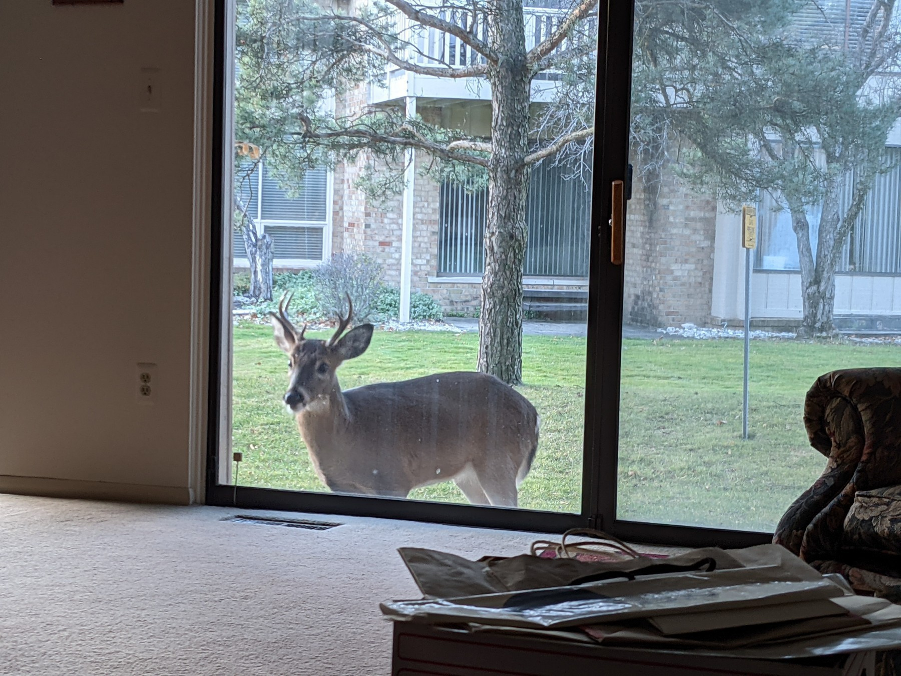
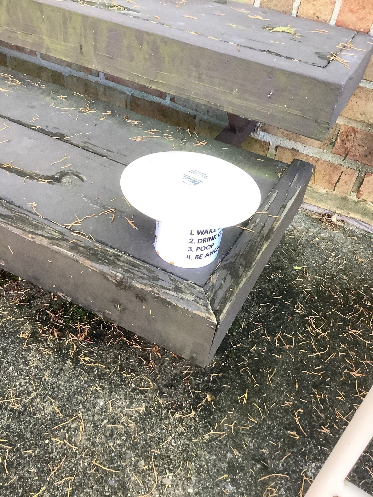
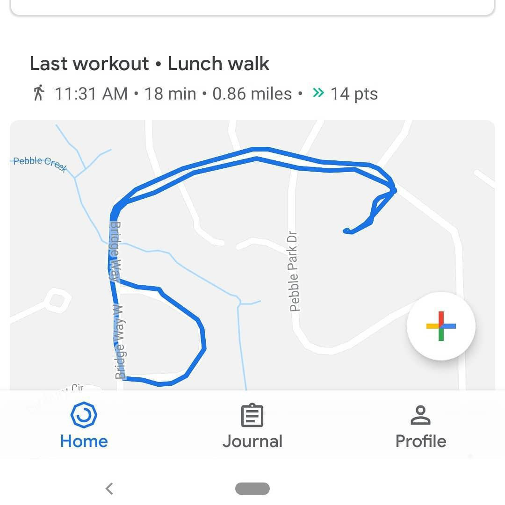
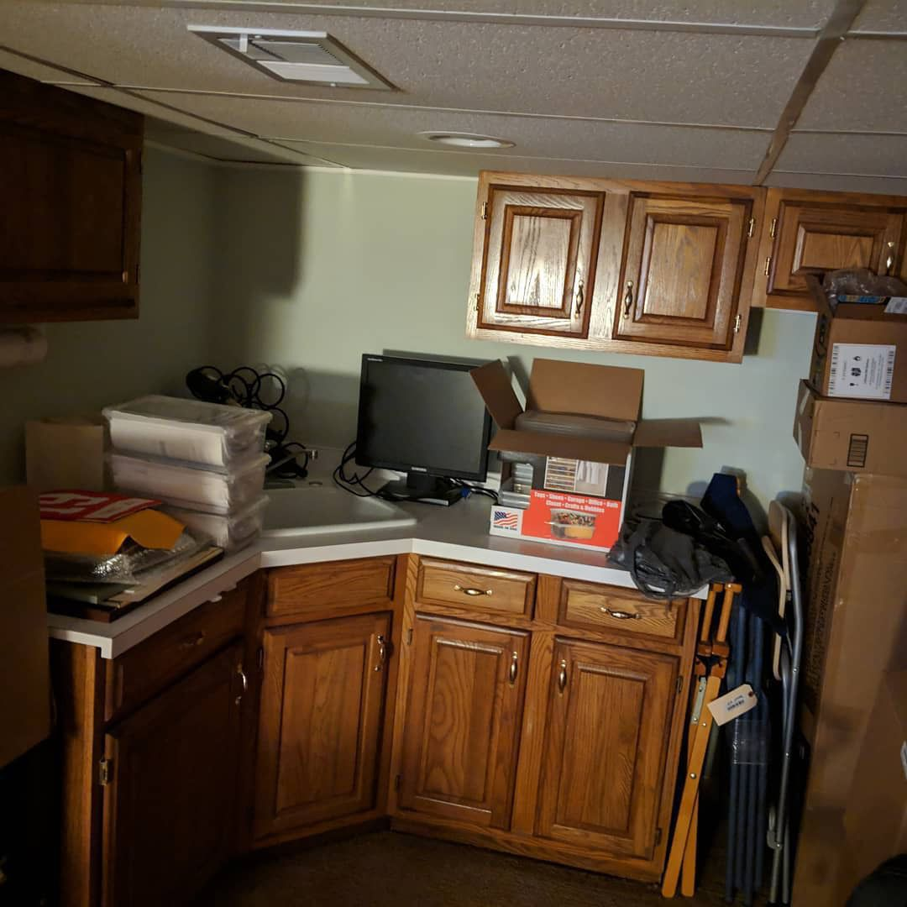
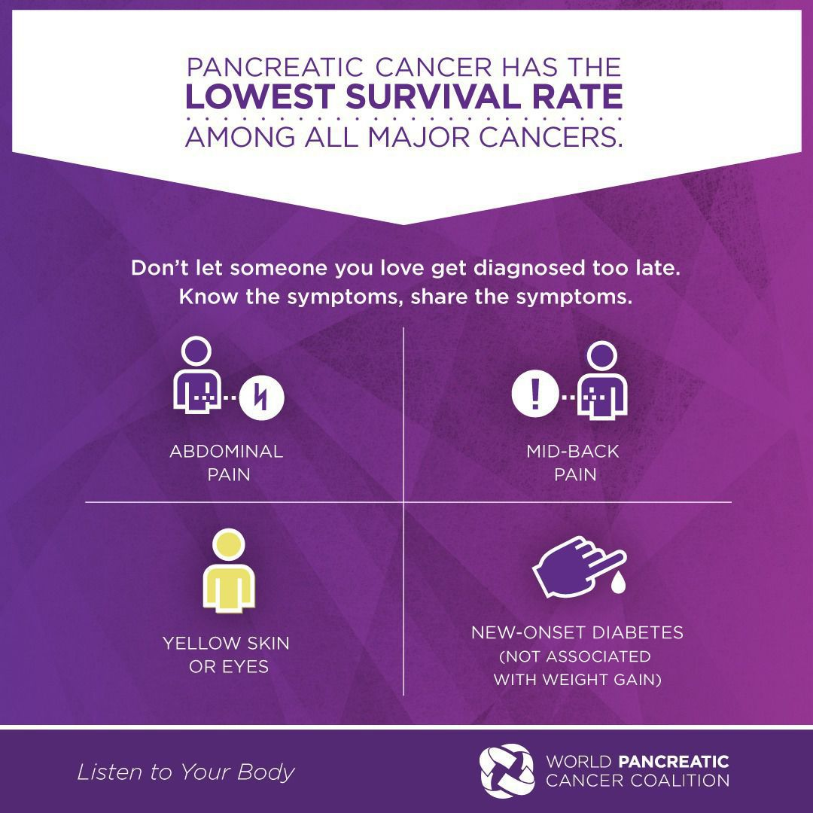
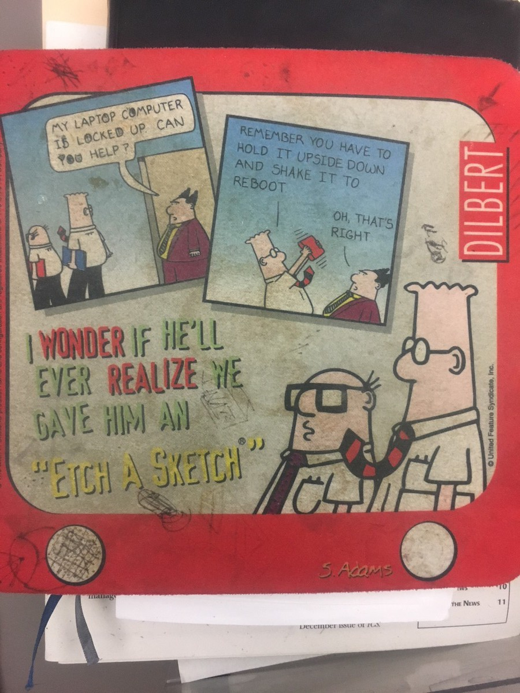
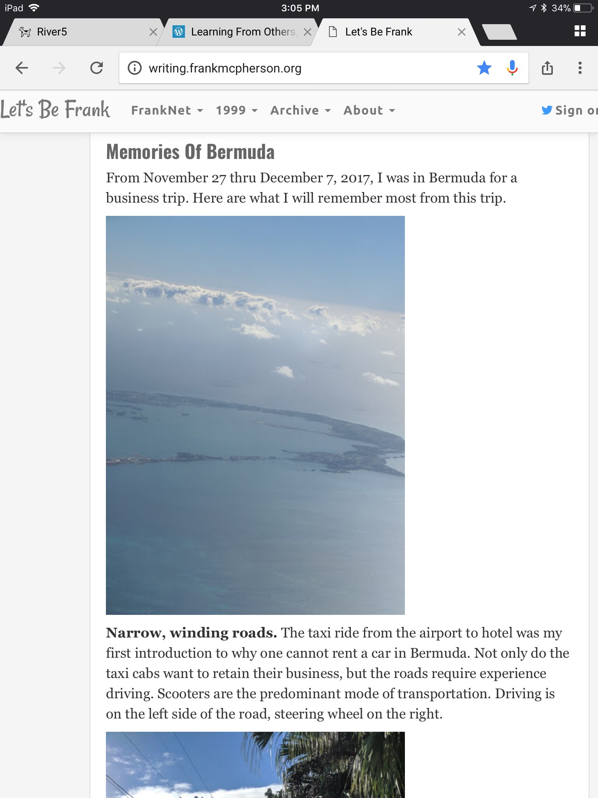

I am happy to report that the keyboard shortcuts are back in the Pocket web app. Made my day.
One good thing about COVID-19, it’s caused a very mild flu season.
Is it a good thing that more and more citizens, as a consequence of 401ks and easier accessibility (Robinhood) are capitalists? I am skeptical because it feels to me more like assimilation by corporations resulting in people in rural areas voting against their true interests.
It seems to me that in many ways the current Apple culture is similar to the culture that famous 1984 commercial claimed it was against. Ironic. Tyranny of the big company.
Oh, Aaron Burr, sir., you did so much damage because you could not see…source
In 1806, on the advice of Vice President Aaron Burr (who thought it redundant), the Senate dropped the “previous question” — a motion to end debate and bring an item up for immediate vote — from its rules. Without a motion to call the previous question, however, an individual senator could, in theory, hold the floor indefinitely.
Fresh snow fall can make one wonder what the heck goes on outside at night. Note we do not have a dog or cat, but we do have a sump pump.

Home Computer Repairs
Given the number of Raspberry Pis I have, you might get the impression that I am a maker, but I am not. I’ve just been enamored by these small, inexpensive single board computers. The closest I’ve come so far to a real project is what I call my desk clock, which is a Pi installed behind a five inch monitor that displays Chromium kiosk mode with a screen I configure using Dakboard.
I originally built the desk clock using a Raspberry Pi 2 that stopped working a few weeks ago. This past weekend tried to troubleshoot the problem. First I built a new SD card and it seemed to boot fine, but after a few more tests I found that the USB WiFi dongle was not reliably connecting to the home network, so I decided to re-purpose a Pi 3 that was on my desk for the desk clock.
To retain the backup and archive functions that Pi 3 was performing, I moved it’s SD card to a Pi 3b+ and then built a new SD card for the desk clock, except this time I cheated by using a pre-built image that dakboard provides.
The net result is that I now have one less Raspberry Pi sitting on my desk. Last night as I was putting things away I found another Pi 3 I already had been storing, which if I had known about would have simplified things, but not resulted in one less Pi on my desk.
For a summary of my Raspberry Pis, expand the Every Day Tech branch of my Technology outline.
There are currently 34 national emergencies, the oldest dating from November, 1979.
Just found that Pocket also removed the copy link from the sharing option in the web app. I am beginning to think that I need to start considering other reading options. I could revert back to Instaper, but had grown frustrated with it’s lack of development.
While I am venting about Pocket, I have a feature request. Provide readers the option that when they are reading an article and then archive that the next article in the list is loaded rather than returning me to the list. The current process really slows down the reading flow for me.
Think US Evangelicals Are Dying Out? Well, Define Evangelicalism source
Religious evangelicals may look at these numbers and think, “This is not what the term evangelical means.” The assumption is that the term describes those who place high value on the teachings of the Bible and strive to evangelize other people into their faith. However, that understanding of the term seems to be fading, replaced with a more amorphous concept that melds together religious doctrine and an affinity for conservative politics that experts are only beginning to understand now.
The above is a bug, not a feature. One can argue that the assimilation of Christianity into the Roman Empire in 313 huge negative consequences on Christianity, and it probably was not good for empire either.
Secular power always, always, seeks to consolidate power with religion.
I rely heavily on Pocket for my reading workflow because when I find an article in my RSS feeds that I want to read I send it to Pocket. Yesterday the web version of Pocket got an update and it broke the keyboard shortcuts, and I am finding that incredibly frustrating. It’s a failure of regression testing, and frankly not acceptable for a commercial software product.
I’ve come across a very comprehensive spreadsheet of SARS-COV-2 and COVID-19 links to information.
RSS.app can generate RSS feeds for just about any web site, but it costs $10 per month.
Engadget reports that the price on Amazon for the iPad Magic keyboard is $200, which I think makes it easier to recommend. For me, the keyboard is critical to how I use my iPad Air.
The Internet is not a public square. It’s been owned by corporations since the mid 90s. People now want the corporations to act like a public entity but capitalism doesn’t work that way. The genie has been out of the bottle for a long time, and there is no way to put her back in.
Amanda Gorman, The Hill We Climb
Vogue has a great interview of Amanda from before the inaugaration.
Be Careful What You Ask For
What’s ironic is that every person arrested for the insurrection on the U.S. Capital on January 6, 2021 will expect, and demand, that everyone provide, the presumption of innocence, which requires the accuser to prove by providing evidence in court that the accused commited a crime. Yet, these people wanted state legislatures, the Supreme Court, or Congress to nullify the election results based on their accusuation of voter fraud.
The point being, the people storming the Capital really weren’t defending the Constitution nor do they really want to live in the world they think they are fighting for. Presumption of innocence means they have the possibility of not being put in jail by a force greater than themselves and that same presumption of innocence might be the only thing that saved the Republic, this time.
It is scary to me that the future of democracy in the United States is almost entirely in Republican hands because I am not certain a majority of Republicans want democracy.
The conclusion I reach after reading the New Yorker story, “Among the Insurrectionists” is that at the least we live in two Americas, if not in two realities. I also don’t see a way for any real resolution because the people described in the article cannot be reasoned with, they only want their way. Democrats can’t fix this, and while Republicans have the only chance, even those who do not “comply” will not be listened too.
For me, it comes down to principles. Republicans had principles at one time, such as demonstrated by John McCain when he pushed back when someone wanted to brand Obama a Muslim, implying all Muslims are enemies.
The fact that so many Republican members of Congress abetted the insurrection is proof to me that the lust for power and having their own way is far stronger than the principles of democracy.
When Democrat Franklin Delano Roosevelt established business regulation, a basic social safety net, and government-funded infrastructure in the 1930s to combat the Great Depression that had laid ordinary Americans low, one right-wing senator wrote to a colleague: “This is despotism, this is tyranny, this is the annihilation of liberty…. The ordinary American is thus reduced to the status of a robot. The president has not merely signed the death warrant of capitalism, but has ordained the mutilation of the Constitution, unless the friends of liberty, regardless of party, band themselves together to regain their lost freedom.
Seems to me a problem is that we don’t have common agreement on the core principles on the founding of the United States as stated in the preamble to U.S. Constitution, particularly, “promote the general Welfare.”
Google’s acquisition of Fitbit is complete, will we now see something new relating to Wear OS?
The Verge has an overview of Windows 10X that as they show appears to be nearly an exact duplicate of Chrome OS. Can’t imagine this ships without the ability to run traditional Windows apps. It is interesting to me that Microsoft continues to chase their perceived competitors.
It seems to me that cancer has evolved over a long time like humans.
Manuel Hutaffe has a reMarkable 2 and has written a good review.
Jill Lepore’s article, What’s Wrong with the Way We Work, is a really important read. I think it gets at a lot of things that people who are unhappy are dealing with. Here is one of the important points:
Outside of agriculture, more than one in three working Americans belonged to a union in the fifties. In 1983, one in five belonged to a union; by 2019, only one in ten did. Union membership declined; income inequality rose. To explain this, Suzman points to the “Great Decoupling” of the nineteen-eighties: wages and economic growth used to track each other. From about 1980, in the United States, the G.D.P. kept growing, even as real wages stagnated. [Emphasis added]
I really don’t think anyone should buy the Wear OS watches just announced by Fossil because they don’t have the Qualcomm 4100 chip. You are being asked to pay a lot of money for a watch that does not have the best battery life and is slower that what watches with the 4100 chip will provide. I really don’t understand why none of the new watches have the 4100 chip.
Given the recent actions of Twitter, Facebook, Google, and Amazon, I think there is a real threat to Section 230, which protects the companies behind Internet platforms from liability of the actions of the uses of the platform. Smaller such platforms, like micro.blog will be at risk. There will be political back blow.
Cancel culture is not the way to handle differences in a democracy. It creates victims from people who are not and leads to more polarization. Further we shouldn’t react to a failure to prepare for dangerous behavior planned out in the open by forcing it under ground. The problem was not that the actions of January 6, 2021 where planned on social networks, the problem was the failure in recognizing the plans as a real threat.
4 Abel also brought an offering, but from the firstborn animals of his herd, choice cuts of meat. GOD liked Abel and his offering, 5 but Cain and his offering didn’t get his approval. Cain lost his temper and went into a sulk. 6 GOD spoke to Cain: “Why this tantrum? Why the sulking? 7 If you do well, won’t you be accepted? And if you don’t do well, sin is lying in wait for you, ready to pounce; it’s out to get you, you’ve got to master it.” –Genesis 4:4-7, The Message
And so it started through seeking status and the superiority it brings. Matthew 5:21-22
“The only way to stave off another Trump is to recognize that it always happens. The temptation of anti-democratic cult politics is forever with us, and so is the work of fending it off.”
What We Get Wrong About America’s Crisis of Democracy | The New Yorker
Interesting, the general is changing its logo.
Zeynep Tufekci, So What About That (Self)-Coup?
It’s absolutely plausible to me that even more Republicans would have joined this blatant attempt to overturn the election and that their base would mostly have been fine with that. The (self)-coup train wasn’t something that was just for show; it just wasn’t close enough to work this time.
Which is why there must be consequences on the Republican party. Either it needs to do some serious cleanup beyond Trump, or it needs to be further ostracized.
Tommy Lasorda, legendary Los Angeles Dodgers manager, has died - CNN
Among my oldest memories are from the seventies watching the World Series, which seemed to always be the New York Yankees versus the Los Angeles Dodgers, with my grandfather and grandmother. Even though my grandfather had strokes that left him speechless he was my father figure and so these are fond memories. My grandfather grew up in Milwaukee and so a fan of the Milwaukee Brewers but the Yankees were the villain and the Dodgers the hero for us during these games. Of course Lasorda was the manager of the Dodgers during those games, so news of his passing brought back these memories today.
We Found Where Is The Republican Line
It’s amusing and sad to finally see so many Republicans jump off the sinking ship after it hit the iceberg. All through the last four years my question to Republicans has been, what is your line that Trump could not cross? We found the line was literaly no less than an attempt to overthrow the government of the United States. And these are people who call themselves patriots? If they really want to do the right thing they should resign.
The thing is, it doesn’t really matter now. What’s going to matter is when in four years and the Republican Presidential primaries start does the party push back against Trump and any who follow his playbook, or do they do all the same things again? It already started when Congress finally reviewed and accpeted the Electoral College results.
At this point I think the lust for supremacy is what Republicans are all about. They could not take a principaled stand until literally forced to by an attempted coup. I for one right now cannot imagine how I can ever trust anyone who is Republican and desires the power of federal office. We cannot let Republicans re-frame the story in a way that does not make them culpable in what happened on January 6, 2021, for they built the platform upon which Trump and his followers spoke and acted, starting with birtherism.
What frightens me the most is people not taking the threat Trump poses seriously enough. POTUS is considered one of the most powerful positions in the world for a reason. He removed many of the civilian positions in the defense department for a reason. We got to stop thinking it’s not possible and instead identify the worst thing Trump could do between now and January 20, 2021 and prepare counter measures.
What ought to be clear to Congress, the DOJ, to the Armed Forces, and anyone in power that is not associated with Trump is that IF Trump is NOT removed from office now then at a minimum they must prepare to act swiftly to respond to the actions of this rogue President. Anything less is at best negligence. Trump is a hostile and the threat he poses needs to be taken seriously. No more “what harm can he do” attitude from anyone in power. Up to this point not enough people have accepted nor acted on the threat Trump presents.
And for the world’s sake, find some way to get the football away from him!
As a long time blogger I wonder some time about how blogging has contributed to the current state of politics in the United States. Blogging made it easy to publish to the web and thus made it easy for nearly everyone to publish their opinions. The problem it seems to me is that we have begun to value opinions more than facts or even truth. Trump and his supporters are so firm in their opinion that the election was stolen from him that they think their opinion is fact, and that because something could happen, it did happen, which is the definition of a conspiracy theory.
Recently I was describing the Raspberry Pi 400 to my wife by asking her if she remembered the Commodore 64 because the Pi 400 is basically a keyboard with a computer beneath. I told her that for nostalgia purposes I was interested in the Pi 400, but frankly I am not sure how I would use it. It really doesn’t make sense to use the Pi 400 headless like I do my other Raspberry Pis.
All this is preamble to point you to my retro computer that sells a case that looks nearly identical to the old C-64.
IRS relaunches ‘Get My Payment’ tool to track $600 stimulus checks
This seems to me to be a great opportunity to get hacked and get one’s identity stolen.
Overclocking A Raspberry Pi 4
I am using a Raspberry Pi 4 (daenerys) as my desktop personal computer during the work day, which I access from my work provided computer using VNC. By using this Pi 4 I can access the Internet from my desk without going through the corporate Internet proxy.
I built daenerys in a Flirc case, which looks really nice and provides passive cooling, and it boots from a SSD in an Inateck case. The SSD gets power from the Pi and so under normal load I would see temperatures hover around 55 degrees celcius, which is well below the 85 degree threshold that causes the CPU to throttle down.
Over the holiday I built another Raspberry Pi 4 (arya) in a MazerPi case that has a fan. The fan draws power from the GPIO pins and has two modes, high speed if plugged in to the 5v pin (PIN 2) and low speed if plugged in to the 3.3v pin (PIN1). To complete the picture, ground is plugged in th PIN 6.
The MazerPi fan just stays on all the time, I am not aware of a way to control the fan so that it only comes on when a certain temperature threshold is past. I first plugged the fan in to one of the 5v pins and found it loud enough to be heard, although not terribly loud. When using high speed mode the CPU temperatures were in the mid to high 30 degree range under normal load. When I ran Octane 2 it then crossed 40 degrees.
I decided to try the low speed mode, which is quiet enough to not hear unless one concentrates. Temperatures where in the 40 to 45 degree range, which is plenty good.
At this point the thought occurred to me that it probably makes sense to use the case with the fan for the Pi that I am going to use every day rather than in one I am going to use as an accessory and thus I removed the SD card from arya and plugged in the SSD from daenerys and it booted right up. (BTW, note that in reality a computer host name is associated with the boot drive and not the actual computer, so daenerys is really the 250 GB SSD drive while arya is a 256 GB SD card.)
Finally, I decided I wanted to try overclocking daenerys, which given the fan should be safe. Normal speed for this Pi4 board is 1.5 GHz, so I decided to overclock it to 2 GHz. Performance is noticably faster. At 1.5 Ghz daenery’s Octane 2 score is 8098 and at 2.0 Ghz the score is 9777. Neither score is fantastic, but good enough for the type of web browsing that I do.
When you overclock a CPU it will run hotter and that can cause failures. In the MazerPi, with the fan in low speed mode, and the Pi 4 booting from a SSD and overclocked to a max frequency of 2 GHz and a minimum frequency of 1 GHz I am seeing temperatures ranging from 46 degrees to 55 degress, which is about the same as well using the Pi in the Flirc case but not overclocked.
The net result is that have “upgraded” daenerys to a faster processing speed that provides better performance while maintaining a good CPU temperature and so far after one full working day it has been stable. The MazerPi case cost only $8 and is easy to assemble with help from a video I found on YouTube.
Moments of panic this morning as I tried to use my Airpods and found them dead, dead, dead. The really odd thing is that they wouldn’t start charging via the lightning cable and Anker charger I charge the iPad Mini with, but once I pulled another cable and plugged in to a different charge it worked. Not sure why this matters, but the Anker is a 100W PD GAN.
The official images of the Raspberry Pi OS are still 32-bit but there is a beta 64-bit version that I have been using on an SSD connected to a Raspberry Pi 4. When the 64-bit version was first released RealVNC Server was not available so I have been using x11vnc to remote connect to the Pi. Today I learned that RealVNC Server is now available for the beta but has to be enabled via the terminal using raspi-config, so I switched. I don’t know whether anyone else will find this useful, but it feels like RealVNC is faster than x11vnc.
Find all the reaction to the Trump recording humorous, as if it matters. It’s the same type of thing the House impeached him for, but that did not matter because 70+ million people voted for him anyway.
Republicans want to believe everyone is like them and at the same time if Trump is not re-elected they will never win another presidential election.
Remember when 2020 was a punch line?
One Term Presidential Mirrors
I think it’s interesting that CNN is airing a documentary about the first modern outsider elected President before Trump, Jimmy Carter. When I think back about Carter’s years as President I think what happened is that he showed us reality that we did not like very much. It’s no wonder then that he lost to a professional actor and that in many ways we have been living in a delusion that has been amplified by Trump.
Why would the rock-and-roll set flock to a man who, as president, is remembered today as being a micro-managing, straight-arrow engineer who failed to inspire or understand leadership? The reason is that in his prime, Jimmy Carter was cool. He championed a kind of political populism that was extremely attractive to Americans disillusioned with Washington in the wake of Vietnam and Watergate. Sick and tired of elected officials who betrayed them, they found a refreshing change in Carter, a former peanut farmer who was seen as an anti-establishment outsider. As Bishop Michael Curry recalls in the documentary, “We were coming out of the Watergate era and looking …to be a country of integrity again.”
The problem with the quote above from Bishop Curry is that I am not sure the United States has ever been a “country of integrity.” I think some of the founders had this aspiration but failed to see the log in their eye of supremacy is the forms of slavery and colonialism.
To me the greatest irony of the Trump presidency has been that part of the campaign slogan, “Make America Great” is a good and right aspiration but demands a degree of introspection on what is greatness and who determines greatness.
P.S. I observe that it seems all one term presidents of my life time became one term because that were a mirror reflecting ourselves that we did not like very much. Our egos much prefer the myths of our false selves than the reality of our true selves.
The current economy is not about employment and it’s certainly not about the stock market, it’s about wages. Employers do not want to increase wages or provide full time employment.
A year later unfortunately we went in the wrong direction and now the economy is about employment and wages.
I like to do little projects during my week long Christmas holiday so this year I did a redo of a project from last year and built a new Raspberry Pi 4 and configured it to attach to my iPad Air via a USB-C cable. I don’t intend this particular Pi to serve a role on our home network, so I will also use it for other projects. I had have created an outline for my tech experiments in which you can view my project notes.
I’ve created a page of Books That I Read In 2020 that lists what I read in reverse chronological order and I wondering whether I should change that to chronological order. What do you think?
The Jed Hoyer regime is not starting well in Chicago when it communicates b.s. like this. I see zero ways in which the trade of Yu Darvish to San Diego for little in return helps the Cubs in 2021. Maybe the Cubs will be competitive in the N.L. Central by default, but they won’t be competitive outside their division.
I dislike rainy winter days like today. I wish we had a fireplace, but the Christmas tree lights are nice.

I moved to the Detroit, Michigan area 31 years ago, and one of the benefits of that is the ability to attend the annual Great Lakes Invitational college hockey tournament that Michigan Tech hosts. Over those years I think I did not attend three but never until this year, due to COVID19, has there not been a tournament.
Now that Apple has enabled one to use a mouse with an iPad they have to enable them to use external monitors in a manner similar to notebook computers. Right now you can mirror the display to a monitor and that display is larger but it does not fill up the entire screen. When I connect my iPad to my 24-inch monitor I want to have all of the screen space available to me.
I miss this, but blessed to be able to look forward to doing it next year.
“The symbol of Christmas—what is it? It is the rainbow arched over the roof of the sky when the clouds are heavy with foreboding. It is the cry of life in the newborn babe when, forced from its mother’s nest, it claims its right to live. It is the brooding Presence of the Eternal Spirit making crooked paths straight, rough places smooth, tired hearts refreshed, dead hopes stir with newness of life. It is the promise of tomorrow at the close of every day, the movement of life in defiance of death, and the assurance that love is sturdier than hate, that right is more confident than wrong, that good is more permanent than evil.” — Howard Thurman source
Vivaldi Day 2
Today is the second day of using Vivaldi on the Raspberry Pi 4 desktop, and it continues to perform better for me than Chromium. I decided to run Octane 2 and Speedometer 2 to see how Vivaldi benchmarks against Chromium and I am surprised to find that it benchmarks slightly slower in both even though my practical use finds it faster. For example, Speedometer 2 scores 7.93 in Chromium and 7.614 in Vivaldi. For comparison, the Speedometer 2 score on the iPad Air is 201, fastest in the house.
One of the most dangerous ideas that emerged in politics starting in the 1970s is that changing one’s mind about a policy or topic is wrong. We heard politicians claim that their opponent “flip-flops.”
Unfortunately, too many people have taken this to mean that they must not change their minds about something, but changing one’s mind over time is what growing up is all about. Is it any wonder then that people are now so entrenched in their ideas they simply do not listen nor accept anything spoken by someone else that they don’t agree with?
The “no flip-flop” mindset can have dangerous consequences. If scientists aren’t willing to consider the possibility that how they thought something happens, like how respiratory illness spreads, could be flawed, lives can be lost. Not to mention scientists who don’t believe they could be wrong aren’t really practicing science.
If you want to really impress me, tell me about something you changed your mind about in the last three years.
Trying Vivaldi
I use a Raspberry Pi 4 as a personal remote computer that I access using VNC during the work day, which enables me to keep my personal web access from going through my employer’s Internet proxy. It’s also an excuse of me to fiddle with the Raspberry Pi.
I have been using Chromium for browing the web but grown frustrated with its performance on the Pi so this morning I decided to give Vivaldi a try. Vivaldi uses the same rendering engine as Chrome and I’ve found it uses the same extensions as Chrome, which is important because I need access to Lastpass.
Installation was a little tricky because I am running a beta 64-bit version of the Raspberry Pi OS and so I needed to find the arm64 version of the installation package.
So far I am finding that Vivaldi does run faster on the Pi4 than Chromium. One thing I did to speed things up is to turn off the drop-down, URL completion of the address bar so that I can quickly enter URLs. However, one function that I use to forage for new updates in the Federated Wiki verse does not work, for some reason, so for now I will need to use Chromium for that part of my daily flow.
In the beginning was the first site of the World Wide Web. source
So, the iPadOS Gawq app does not display in landscape. Bad application design. BTW, the ESPN Fantasy app also has this flaw. No mobile app should only work in either portrait or landscape, forcing a user to only do one or the other is lazy programming.
The main task of the week was getting the Christmas packages shipped out in hopes that the Post Office can get them to their destinations in time for Christmas. Each was sent using the machine in the lobby after hours when nobody else is around from which I got several printed receipts with tracking numbers. If you have a current Android phone, take a picture of the tracking number of the receipts and then you can use Google Lens that finds the tracking number and provides a one-tap button to query the tracking status on USPS.com.
Trump’s election was likely only phase 1, my fear is that phase 2 has begun.
I am always interested in new ways to get and read the news so I am trying out Gawq, which installed on my iPad Mini. First reaction is that it’s slow, probably because the service is being pounded due to the exposure.
I like the fact that home test kits for COVID-19 will soon become available but they sound too complicated and intrusive to garner broad use. The target needs to be something like a pregnancy test.
This quote attributed to Garry Kasparov on Scripting News is so true:
Don’t dare say ‘But the system worked’ when a majority of Republicans in Congress support the overturning of a free and fair election. You don’t celebrate a cancer not having killed you yet. You celebrate when you’re cancer free
I believe that those willing to step out of the forest are seeing the thrashing of the withdrawal symptoms of a society deeply addicted to itself.
“Several years ago when I was in Nicaragua, I asked a man if he had time, and he said, “I have the rest of my life,” and smiled. Who of us would possibly say that? That is what we don’t have. What we don’t have is the rest of our lives because we do not even have the now of our lives.”
“Time is exactly what we do not have. What decreases in a culture of affluence is precisely and strangely time—along with wisdom and friendship. These are the very things that the human heart was created for, that the human heart feeds on and lives for. No wonder we are producing so many depressed, unhealthy and even violent people, while also leaving a huge carbon footprint on this poor planet.”
— Preparing for Christmas: Daily Meditations for Advent by Richard Rohr a.co/43XJm0A
I am really surprised that there haven’t been more Wear OS watches with Qualcomm’s Snapdragon 4100 CPU announced for the Christmas buying season. Wondering what that might mean for Wear OS?
I do not take comfort in SCOTUS deciding to not take up Texas’ lawsuit against the four swing states. First, SCOTUS simply hid behind procedure and thus were not the adults in the room standing against tyranny. What is even more troubling to me is that I am sure President Trump fully expected “his” SCOTUS justices to keep him in office, I am sure in his mind that is what they owed him for seating them. The fact that any person considers any judges to be “his,” particularly Justices is frightening.
What we must learn from this episode of U.S. history is that it matters how anyone who would be President views the powers and responsibilities of the office. The U.S. Constitution is not intended to give anyone extreme powers, its intention is exactly the opposite. The fact that people think elections are all about power shows how much we have strayed from the founding principles of the United States.
If we don’t learn from this year and make meaningful changes then all we have done is prevent the end of the U.S. for the time being and increased the likelihood that it will not see its tricentennial. It takes more to preserve freedom than waving a flag and standing for the national anthem.
Tim Wu makes a good case that the vaunted “checks and balances” of the U.S. constitution has not really shown to be reality. The only thing that has prevented democracy in the U.S. from being overthrown has been the integrity of a frighteningly small number of people.
In my opinion we must not allow Republicans to paint a picture that this threat has only been because of Donald Trump. None of what we have endured is due to just Trump, in fact a case can be made that none of it is on Trump, instead it has all been on the Republican Party. Never forget, Trump won the Republican Party nomination for President, and if he had not then we would have not had four years of a Trump presidency and who knows how many fewer lives would have been saved from the pandemic.
We can’t be patting ourselves on the back thinking democracy prevailed. All that we really have is possibly a victory of one battle, but Republicans have been waging war on the United States since the 1940s and will continue fighting that war in to the future. As long as there is no consequence on Republicans they will remain to be a clear and present danger.
Not surprised that SCOTUS fumbled the ball. It seems nobody is willing to make a stand for democracy.
Disney announced many shows coming to Disney+ but I ask when? I signed up to Disney+ last year but honestly the only things I got from it so far is the Mandolorian and Hamilton. Really, it has been disappointing so far.
Richard Hofstadter, The Paranoid Style in American Politics., from the November, 1964 issue of Harper’s Magazine. I guess this thinking has always been with us, but seemingly growing every more powerful.
Thank you, Dr. Zhang:
Dr. Zhang acted without being incentivized by the huge amounts of money that the companies will receive—Moderna’s stock has increased almost 700 percent already—and he faced down potentially catastrophic consequences for himself and his lab.
The phrase “enemy of democracy” has a sinister bearing. But how else to describe those who would use raw political power in Republican-controlled legislatures to overturn a national election? Public officials swear an oath to “defend the Constitution of the United States against all enemies, foreign and domestic.” It is a mandate that responsible citizens should take seriously.
I read a lot and have started building a list of the books I read along with a very high level summary of what I lead from the reading, but it is nothing like the book summaries available at Durmonski.com. Recommended.
I think main lesson we need to learn from COVID-19 is that a pandemic can and will happen again in the United States and we need to address it nationally like we address every other threat. A part of why the response was so chaotic in beginning is that the Trump administration just viewed the previously implemented contingencies as just “Obama fat” to be trimmed. We need to accept what has happened is bad enough to work to prevent it from happening again.
I am so tired of these “what Republicans are saying privately” pieces. It’s time for the press to stop coddling Republicans. If they don’t say it publicly, don’t say anything, don’t help their attempt at soothing their conscious. Republican’s need to own Trump.
Despite potential claims to the contrary, I am not sure I see much difference between Om’s idea of what Twitter should do and Apple News, of which I am currently trying a free trial.
I took a look at my Xfinity (Comcast) account again today due to the pending enforcement of their data caps. What I see on Xfinity’s site is that while I thought they had turned caps off, it might have been on since July. What bothers me is that it doesn’t look like Xfinity provides any warning to users when they are about to exceed their data cap. I thought there was an account configuration so that I could have Xfinity send me an email when I’ve consumed 50% and 75% of the data, but I don’t see any option. In my opinion, any service that has data caps and corresponding charges when they are exceed should be legally required to provide customers warnings that they are going to exceed those caps.
Zeynep Tufekci warns that we must stop thinking a coup can’t happen here. Coup attempt is the right adjective for what is taking place, and we need to recognize that while Trump is the public face of the coup, Republicans are willing and active participants. If you claim yourself a patriot the following must be seen as true and terrifying.
What starts as farce may end as tragedy, a lesson that pundits should already have learned from their sneering dismissal of Trump when he first announced his presidential candidacy.
Individualism is the core principle of conservatism, which is why something as simple as recognizing that we have to work together is seemingly so difficult in our country.
How the United States is responding to COVID shows just how much the conservative ideology has metastasized within society.
I am still bumming since learning on Friday that Len Kasper is leaving the Chicago Cubs to be the lead radio announcer for the White Sox. What I like about Len is that he is a genuine baseball guy, he isn’t a broadcaster who also does baseball, so moving from TV to radio makes sense. Of all sports baseball is best for radio.
My life experience with the Chicago Cubs has always been narrated by TV play-by-play guys: Jack Brickhouse, Harry Caray, Chip Caray, and Len Kasper. There have been a few others who have been briefly behind the mike, but these are the voices that replay in my head.
The first words are Jack’s calling another Dave Kingman home run. Most of the words are spoken by Harry, who was with me from teenager to adult. Chip is sentimental following his grandfathers death, where Len will always be part of the Cubs finally making it to and winning the World Series in 2016.
White Sox fans are getting a great baseball guy to tell them the White Sox story when baseball starts in 2021. I might try to listen to a few games, particularly when the White Sox come to Detroit and Len sits closer to Ernie Harwell’s seat. In the meantime I’ll watch for who will be next at broadcasting for the Cubs.
After two years my garden (wiki) has 362 pages.
“Godly knowing is a humble and non-grasping kind of knowledge; it becomes a beautiful process of communion instead of ammunition and power over. It is basically reverence! Knowing without loving is frankly dangerous for the soul and for society.” (Richard Rohr, Mike Morrell, The Divine Dance)
The restaurant industry in Michigan has been in a huge fight with the state because of indoor dining being shutdown in the state. I understand the industry’s point of view because its costing them money and jobs, but the data, such as shown the studies referred to in this article, and common sense, tell me it’s not safe to eat indoors at a restaurant.
Even if allowed to, I will not eat in a restaurant until I am vaccinated and this pandemic is under control, for two main reasons. First, one cannot eat and wear a mask at the same time. Second, I have no idea of the air flow within the restaurants I might dine in, and air flow can cause the virus to be spread across greater distances than six feet.
The iPad, Magic Keyboard, and Me
I am completing the first week of using my iPad Air and Magic Keyboard during my work day and I am happy with the result. Over the years I’ve tried using different keyboard cases with tablets and usually end up setting them aside because I found it too difficult to switch between hand-held and keyboard modes. The magnetic attachment of the iPad to the keyboard makes it easy to remove and re-attach the iPad to the case, so when I want to hold the tablet to read or write notes with the Apple Pencil, it’s no more difficult than picking the iPad up off the table and when I want to type notes it’s as easy as placing the iPad back on to the magnetic back of the case.
The main negative of the case is that it adds a lot of bulk and weight, so there are times when I won’t want to carry both. When we get back to being able to travel around freely I will probably get Apple’s Smart Folio, which also attaches magnetically, to protect the iPad Air in those instances.
The dismantling of the 2016 Chicago Cubs has begun through the Cubs not making an offer to Kyle Schwarber. Unfortunately right now it seems though Kyle was a one hit wonder, but that hit will always be memorable to Cubs fans.
Beware Of The U.S. Theocracy
Dana Blankenhorn wrote:
When the nation state came to glory in the 19th century, it was as a bulwark against religion. The great threat of our time is the unity of the state and religion
I wish citizens of the United States would think a bit more deeply about our history, particularly the context in which First Amendment was written. The world from 313 AD until when the U.S. Constiution was ratified was basically governed by a theocracy. You had the Holy Roman Empire and Rome ruling most of the western world, then came Protestantism and it’s alignment with kings and The Thirty Years War, and then, more directly you have the Church of England that emerged to consolidate power in England when Henry VIII wanted an annulment that the Pope would not grant.
The founders knew how those who seek power, be they kings, dictators, oligarchs, and political parties, use religion to increase that power. After all, it’s one thing for a President to say something, it’s another when a preacher claims what he or she says is the literal word of god.
So, while the first ammendment constrains the U.S. government of what it can do to religions, more importantly it is intended to prevent the merger of religious and political power.
I agree with Dana’s warning about our real risk, which is the emergence of a religious-based rule in the United States. It started with Ronald Regan creating the snowball and rolling it down the hill to create the “Religious Right” under the pretext of a Pro-Life movement. It picked up more steam to elect George W. Bush that lead to a tremendous amount of lost life in wars authorized by national emergencies that are still not over. And finally in a mutal in-sincere but profitable alliance, enabled and put in place Donald Trump, and with him the breaking of everything Jesus taught.
Please, if you call yourself Christian and find yourself agreeing completely with these claims of religions liberty, stop and consider the very real possibility that your actions are actualy enabling the very opposite of what you think will be the outcome. In the process you are handling over all your authority, necessary for people to even consider the Good News, let alone follow Jesus.
I see the value of Zettelkasten, but I think it requires too much work, even with the software tools that are available.
What To Do With Ideas
I’ve responded to this question about “what does one do with ideas” with my wish for how products like Roam could be even better for me. In summary, I want an app like Roam that recognizes a string of text as the same as the title of an already existing page and automactically converts it to a link to that page without my having to specify it as such with square brackets.
I think the challenge is putting the “new idea” in a place that is connected/related in a way that easily re-surfaces. A common practice is to put all ideas in to one bucket/tickler file and then continually reviewing that bucket/tickler file, which itself requires discipline.
Roam has a nice feature that enables me to easily associate text to a future date so when that date arrives the app automatically displays that item. Roam isn’t unique in this feature and associating to dates is probably an easy problem to solve, but what I would like would be an automated way associate an idea to a topic that can re-surface whenever I search for or write about the topic.
The closest example I can think of is glossary function in Fargo or wiki links in Roam but even those require remembering special functions, quotes for glossary, square brackets for wiki links. What I would love is to be able to tell software, whenever I write this string of text automatically convert the text to a hyperlink to this page of more information about it. For software to just do it for me it would have to constantly monitor my writing, like MS Word’s spell/grammar check.
If memory serves, the closest experience I had to this was VoodooPad and WikiWikiWeb were you wrote in wikiwords like WhereIPutIdeas, that the software automatically converted to links, but that is flawed by the fact that one has to write in an unnatural way.
I guess what I want is some form of natural language processing of all text I write that queries against a collection of previously written pages and automatically links to matches. Even the backlinking in Roam requires some thinking/recollection on my part, unless there is something in Roam I have not yet discovered.
Adding Titles In Drafts
I use Drafts to write many of my blog entries and I use a Drafts Action to post what I write to micro.blog. Normally my entries do not have titles but occasionally I do want use one and for that I now have an Drafts Action that prompts me to enter the title before it posts it to micro.blog. Murphy willing, it will work with this entry.
Scapegoating Is Addictive
On Saturday I wrote that I think the real root cause behind why so many align themselves with Trump is the lack of good paying jobs that don’t require a college degree. In his recent column for the New York Times, titled The Rotting of the Republican Mind, David Brooks pretty much writes the same thing.
Under Trump, the Republican identity is defined not by a set of policy beliefs but by a paranoid mind-set….You can’t argue people out of paranoia. If you try to point out factual errors, you only entrench false belief. The only solution is to reduce the distrust and anxiety that is the seedbed of this thinking. That can only be done first by contact, reducing the social chasm between the members of the epistemic regime and those who feel so alienated from it. And second, it can be done by policy, by making life more secure for those without a college degree.
In my opinion, while Brooks is putting the focus on Republican’s, I think the same challenge lies with Democrats. The problem is that Trump and the Republican party really haven’t done anything about the problem because they can’t see the root cause, which I think is a combination of corporate greed by way of profit margins and a long history of anti-inflation that has conditioned us to seek out the lowest price for items we buy. (Have you ever enjoyed the thrill of finding a bargain?) I don’t think either party is willing and able to do what is needed to address this issue.
As a thought exercise ask yourself, why is it that so many of the products you use every day are manufactured outside of the United States? (If you can find a label, take a look at it to see whether I am right or wrong.)
Many politicians of both parties will have you believe the problem is unfair trade practices by countries like China, which is the thinking behind Trump’s tariffs that really did not result in more manufacturing jobs in the United States. Trade is a problem, but it’s not the only problem.
Corporations do not manufacture in the United States because it costs more to manufacture items in the United States and what does that mean? Higher costs result in lower profit margins and if corporations want to maintain margins, which shareholders want them to do, then they have to increase the price of their products, but the problem with that is U.S. consumers do not like to pay higher prices. It appears something has to give, either corporations take lower profits or consumers pay higher prices. (And equally important because nearly everyone who can save for retirement does with either IRAs or 401ks is that a good number of the shareholders demanding margins that increase stock price are consumers of the products being manufactured.)
Can corporations and shareholders be convinced to live with lower profit margins for the sake of the country? Can consumers be convinced to pay more for items “made in the U.S.A.”? Can US manufacturing costs, a high portion of which is labor, be decreased?
You see here then the issue, there is no silver bullet, instead there is a need for a comprehensive solution that requires compromise by all parties. Democrats have to be willing to decrease regulations that increase manufacturing costs and Republicans have to be willing to work toward removing corporations’ burden of providing healthcare to its employees, which also increases the costs of labor. Serious discussion needs to occur within corporations and their boards of what is a fair profit margin and not just what they can drive the market toward (the starting point might be, what is a fair wage for CEOs?) and there needs to be a significant and continuous, buy made in the USA, marketing campaign to try to influence consumer purchasing.
The irony in all of this is that there was a time when both Republicans and Democrats campaigned on jobs, and jobs/the economy is still the issue now more than ever. The reason why Trump is popular is that his rhetoric and scapegoating resonates with the fear many Americans, particularly those without college degrees, feel. Scapegoating is an addictive drug, one feels good about “sticking to it to the libretards,” but when/if one looks around for change they will find no change to be found. Consequently, the only option that Republicans seem to have embraced is to keep the rhetoric going so that everyone stays happy enough to keep voting for the people placing the blame, which is themselves.
Too many of us are going to be affected directly or indirectly by COVID-19. I personally know four people that contracted the virus, had symptoms, and recovered although it took time. Unfortunately, the mother of a childhood friend died. I expect these numbers will increase, and I am not OK with that, but unfortunately not enough people share that same point of view. The United States of America is the only country in the world that puts perceived liberties over the reality of life and thinks it is better than every other country in the world. It’s not patriotic or christian, it’s hubris.
I am pondering the automatic keyboard lighting of the Apple iPad Magic Keyboard, which is based on ambient lighting and seems to be similar to the lighting adjustment on phones and tablets. Right now I am using the keyboard in a very well lit room and therefore I don’t need the keyboard on maximum brightness, but it is and that seems to align to phone screen brightness. You want phone screen brightness to increase outdoors so that you can read the screen, but it seems to me the backlighting of a physical keyboard should be the exact opposite, near zero in bright light, to save battery, and increase in brightness in darker rooms.
I think that despite the analysis of the election around urban/rural and college educated/uneducated the common denominator is jobs. In the United States today it’s nearly a given that in order for one to get a good paying job they must have a college degree. It also happens that those jobs are in urban areas. Further, while in the past there were plenty of good paying jobs in manufacturing that didn’t require college degrees, we manufacture less in the U.S. than before so an increasing majority of jobs not requiring degrees are in services. Service industries don’t pay high wages and are dependent on many external factors, which is why COVID has been so devastating to people in the U.S.
I don’t see one solution to the problem, the solution is a combination of decreasing the cost of getting a college degree, increasing existing service industry wages, and somehow increasing manufacturing in the United States. We must seek out and agree upon the incentives for doing each.
I have difficulty squaring what happens under the banner of “religious liberty” in the United States and how Jesus lived and what Jesus taught. See Matthew 23.
How to Think for Yourself is a good essay by Paul Graham. It makes me wonder where I fit.
Bishop backs SCOTUS ruling: Spiritual health is important
I understand the argument made that the government can’t make restrictions on churches that they don’t make on secular institutions. But when I listened to the above and heard the Bishop state that they only allow 25 to 30 people in to a church designed to hold 500 to 1000 people I wonder, how do they decide on which 25 to 30 can get in?
The “so-what” attitude that so many seem to have toward COVID seems to me to be very much like one who is addicted, by which I mean one is unable to heed advice that is in their best interests. It is very much like the reactions to gun violence. I think Anne Wilson Schaef writes of this in When Society Becomes an Addict.
Bacon scented beer, sure, why not?
First Impressions Of The Apple iPad Magic Keyboard
I ordered an open box / reduced price Apple Magic keyboard from Best Buy that I just received. Normally I don’t order refurbished items, but I felt an accessory like a keyboard ought to be safe, and after combining the reduced price with some credit card reward points I got $100 reduced on the price.
There isn’t much to the unboxing, cut through the shrink wrap, open the box and all you find is the keyboard inside. I was surprised, given that this was a refurb, that the “standard” protected plastic wrap was on the keyboard.
There is literally no documentation in the box, I’ve had to use Google to learn about some of the standard keyboard shortcuts given that there is no function key row.
I am sitting on a couch with the keyboard with iPad on my lap, typing as I would using any notebook computer. The keyboard is smaller, which is not a surprise given that this is the 11-inch model, but still, I can touch type just fine.
A few things to figure out. There is one function key, a key labeled with a globe at the lower left, that seems to be for selecting emojis, surely there is a way to change that? So far I haven’t found one, although I have found some articles of useful information that I summarize below.
- Tips from MacRumors
- To see a list of keyboard shortcuts in an app, hold down the cmd key. Source: Business Insider
- Computerworld has a bunch of tips
Don’t know who needs to hear this today. Self Love to Group Love to Universal Love — A Homily by Fr. Richard Rohr
Looks like Comcast is going to reinstate the data caps next year. I was wondering when they were coming back. I was struggling to manage the cap at the beginning of 2020 before COVID hit and Comcast stopped them.
Discovered WindowSwap and I again am reminded of the awesomeness of the Internet. Equally good as screaming in Iceland.
Damage Done
The coup has been in progress for four years, and probably even for more years than that. It most recently started with an assault on facts, starting with the numbers of people who did not attend President Trump’s inauguration, continued through three years of assaulting the press, nearly one year of an assault on science and medicine, and now with the assault on the heart of democracy, the election.
The risk is not who will be seated as President on January 21, 2021. The damage has already been done, going forward all elections will likely be questioned probably until someone comes up with the bright idea of just not having them.
All of this is on the hands of Republicans. To those who say Trump has the right to have his day “in court” I say, when did elections become about courts? There is a phrase, just because you can do something doesn’t mean you should do it. Do you not see the damage you are doing to our country? For now on tens of millions of people will no longer trust elections because you continue to sow the seed of doubt, and for what? So that you can retain power? Did Washington, Madison, Hamilton, and Jefferson fight for power? Did Lincoln give his life for power or did he do it to preserve the Republic? The party of Lincoln indeed.
Here is a fact. What is common between Nixon and Trump is that they are both Republican. One resigned before being impeached and then pardoned, the other was impeached and could still be pardoned. The two most undemocratic Presidents of my lifetime, Republicans.
And finally, to those Regan Republicans, most of whom are of my generation. The USSR had elections, in fact most socialist dictatorships have elections. In the USSR (and now Russia) the outcome of the election was assured before the first vote cast because the person in power could not lose. What makes democratic elections, such as the ones we claim to have in the United States, is that the person in power (the incumbent) can lose. It’s not just about a peaceful transition of power, it’s about accepting the will of the people.
Republican actions right now are saying loudly, they do not accept the will of the people, and in doing they delegitimize their claim as a party of a free and democratic United States of America.
I accidentally bought fat free half and half, which I think by definition is skim milk. It’s not doing the job in my coffee.
Over the years we have seen chipmunks, squirrels, and a few robins looking in to our condo, but this is a first.

It seems to me that another fundamental to our democracy is the fact that a person can lose an election. Buried in Trump’s claims of election fraud is the idea that he couldn’t lose so because he did it must be illegit. It’s like Putin going into his “elections’ knowing he will win, except at least this time in the United States Trump does not have Putin’s style measures in place to create no doubt about the outcome. In the Unitied States anyone running for office who thinks they cannot lose demonstrates their lack of knowledge or unwillingness to accept the very thing that makes America great! The very thing that makes Trump dangerous is that he sees himself as an autocrat, and such a person should never come close to holding the office.
The temperature outside is well above the normal of 47 degrees for this date and might exceed the record of 67 degrees. However, snow is on the forecast for Sunday, but today we enjoy the warm 🌞.
One of the neat things about autumn is seeing things otherwise hidden like these wild flowers that are growing within the shrubs that line the sidewalk to our condo.
Party of family values, patriarchy, personal responsibility, and moralism chafes at the idea of obedience.
I am am attracted to weather apps and today I discovered Windy.com, which I think has great visualizations.
Interesting growth numbers in tablet sales, particularly the 89% year over year growth by Samsung. It looks to me that Amazon has been hurt the most by Apple’s product and pricing strategy and probably due to people using tablets to create as well as consume.
Several weeks ago I bought a pair of the original Airpods that I am using with my iPads. Of all the Apple products that I have used, these Airpods most reflect the “it just works” assessment. Pairing was easy and automatic across all my Apple products versus the “regular” Bluetooth headsets I use that you have to pair invidually with each device. I am also surprised by how comfortable they are, probably the most comfortable Bluetooh headset I’ve worn.
If these Republicans had any integrity their hypocrisy would matter. But they don’t and so it doesn’t.
It seems to me that the 20th Amendment had the expectation that a current sitting president would comply with the result of the election prior to the Electoral College vote otherwise I don’t know how there could be an expectation of a safe transition in just one month.
If Republicans are not going to follow this norm then we probably need another Constitutional Amendment, either to change the 20th, or better to remove the Electoral College.
Veterans Day is a good day for Trump to honor their sacrifice by acknowledging the will of the people and committing to a peaceful transition.
The time will come when Mitch McConnell will have to have to publicly stand against President Trump because he will not be able to let the courts or the citizens stand for him.
The story alone should be troubling to any Patriotic American because there appears to be no intent nor understanding of putting country over self. At some point people need to ask themselves what it really means to be an American and whether they put that identify above their Republican or Democrat identity.
“So what is America after Trump? A nation figuring out how — and whether — to engage and whom to love: the stranger or the self? I know the cynic’s prediction of which we’ll choose, but pure cynicism is boring. I’m rooting for a change but planning for a stasis.”
There is a Christian answer to this question that challenges the notion of the United States being a Christian nation.
Three words: Bush v. Gore
Unfortunately, even after all the votes are counted this election will not be over for many more months. The most tragic thing about that is COVID-19 is raging across the country and people, citizens of the United States that POTUS is sworn to protect, are dying.
Is President Trump’s current actions impeachable?
Lessons From The 2020 Election
It should be clear that Democrats need to work on their strategy for Presidential elections. If one is willing to listen to me, I have the following observations.
Simply getting out the vote will not work. It seems the conclusion drawn from 2016 is that Clinton lost because not enough Democrats voted. The thinking is based on the belief there are more Democrats than Republicans in the United States. The problem is, increating vote count only works in a pure democratic nationwide election, aka the popular vote, and we don’t elect Presidents in the United States by popular vote. (The founders feared a pure democracy.)
Republicans have simplified the path to the White House: win rural votes by > 50% margin and if you get 30% of the urban vote, you win, and that strategy aligns to the electoral college. In short, Democrats have to get more rural vote, which leads me to the one overriding fundamental that Democrats have to understand..
Fear of socialism trumps everything else!
People are not really voting on issues, which I think is why polling is not working. People are voting on fear and mostly fear of the other side. The Republican message is simple, Democrats are socialists, socialism = communism = evil = unAmercan, so vote Republican to save America! A significant number of people are convinced they can never vote for a Democrat because that is a vote for Socialism. Add to that another significant number of people, call them evangelicals, who are convinced voting for a Demorat is a vote for killing babys and you have this result. And evangelials equate socialism to atheism which adds another reason why they fear Democrats. Then, sadly, add to the fact that there are too many who fear a vote for a Democrat is a vote for people of color over white people.
If you consider that Republican votes are mostly all about fear of what Democrats will do, I think you see how the Democrat primary and compaigns of 2016 and 2020 make the election strategy for Republicans easy because policies considered to be socialist AND politicians considered to be socialists (Bernie Sanders) dominated the campaigns.
In short, I think Bernie Sanders created a lot of fear among voters AND was a easy target. Even after Biden secured the nomination Republicans simply claimed Sanders would have significant influence over Biden because Democrats do want the Sanders followers support. I think this is true, hard to dispute and personally frustrating to me because Bernie is not even a Democrat!
Why does this matter? It matters because for extremism to be successful it needs an equally extreme opposite. The antidote to extremism is the middle and unfortunately that is shrinking rapidly. I think the only way the middle, call them moderates, can be recovered is via a third party but how we finance and run elections in the United States in the 21st century really makes it impossible for a viable third party.
In summary, fear of socialism trumps everything. It don’t matter whether the Republican candidate is authoritarian, unqualified, and incapable of leading, it only matters that at Democrat doesn’t get power and destroy the country.
Voting on its own doesn’t make progress, minds have to change. And we are way beyond the time when a close election meant anything to those who won because it’s no longer about governing, it’s about ruling.
The 7 day average of daily cases of COVID-19 in my county has now passed the rate in April. Not good.
“My kingdom isn’t the sort that grows in this world,” replied Jesus. “If my kingdom were from this world, my supporters would have fought to stop me being handed over to the Judaeans. So, then, my kingdom is not the sort that comes from here.”
— John 18:36 The Kingdom New Testament, eBook: A Contemporary Translation by N. T. Wright
We didn’t know that George W. Bush was elected in 2000 until December. Under federal law states have until December 8 to count ballots and settle disputes. CNN
Woke up this morning with the lyrics to California Dreamin’ in my head. I’ve never lived in California.
All the leaves are brown (All the leaves are brown)
And the sky is gray (And the sky is gray)….
Which iPad is right for you? We break it down
I agree with CNN’s high level use cases of each class of iPad in this article. For me, the iPad Mini is most used of the computing devices I own while the iPad Air will be used every work day and whenever I want to use a large screen device.
Today is the first day that I will be using the iPad Air full time in place of the 10.5-inch iPad Pro that it is replacing. Not sure whether I am liking the placement of the Touch ID sensor at the top on the power button. Having been using the iPad Pro 10.5 for three years and using the iPad Mini 5 muscle memory is trained to press my thumb at the bottom of the screen to turn on and unlock the device. I’ve caught myself picking up the Air and putting my thumb were the home button used to be only to realize that does nothing but turn the screen on. No doubt I will re-learn a new behavior, but I can see how Face ID would be a better experience.
“I am certainly not an advocate for frequent and untried changes in laws and constitutions,” he wrote in an 1816 letter addressing what he perceived to be weaknesses in the new government, “but … laws and institutions must go hand in hand with the progress of the human mind. As that becomes more developed, more enlightened, as new discoveries are made, new truths disclosed, and manners and opinions change with the change of circumstances, institutions must advance also, and keep pace with the times. We might as well require a man to wear still the coat which fitted him when a boy, as civilized society to remain ever under the regimen of their barbarous ancestors.” –Thomas Jefferson
Amy Coney Barrett’s Judicial Philosophy Doesn’t Hold Up to Scrutiny
It seems to me that in order to have progress we need some agreement on what are the big problems. Many people think government itself, it’s very existence, is the big problem, and they equate Democrats with pro government and pro big government. Others see that government as necessary, the problem is that it is not as effective as it should be. These others are Democrats and used to be a good number of Republicans too.
Since October 19 the number of new COVID-19 cases in the county I live in has been in triple digits, which on average had not been the case all summer.
And here is my original home page, complete with an animated GIF.
This post from May 5, 2000 may be the oldest evidence of my blogging. I am pretty sure that I started blogging in December 1999.
Just discovered that the Internet Archive has scanned copies of the first and third edition of my books.
Marygrove College in Detroit, Michigan closed in December 2019. The library collection was donated to the Internet Archive, which digitized it and made it available online.
I am on the injured list! Pulled up with a serious charlie horse in my right calf during a walk yesterday. It feels better today, but slowly loosening up. First time this has happened to me.
“The founders were well aware of the dangers of populism, demagoguery, and faction. They built a constitutional order designed to force compromise and impede sociopathic behavior. But the institutions they put in place to act as gatekeepers (the Electoral College, the appointed Senate) became obsolete, and the successor gatekeepers (political bosses, smoke-filled rooms, big media) came to seem undemocratic and lost their grip. Today, the road to power for a sociopath or demagogue is comparatively unobstructed. As a result, the fail-safes designed to protect the system when the settings go out of alignment have themselves begun to fail.” (nationalaffairs.com, Rethinking Polarization)
Resurfaced with readwise.io
”‘Extreme partisanship may be literally addictive,’ writes the social psychologist Jonathan Haidt. Partisans who find ways to rationalize their beliefs get a little hit of dopamine. ‘Like rats that cannot stop pressing a button, partisans may be simply unable to stop believing weird things.’” (nationalaffairs.com, Rethinking Polarization)
Resurfaced with readwise.io
Looks like OSIRIS-REX successfully collected a sample from Bennu yesterday.
Andrew Shell and Dave Winer write about rethinking blogs and streams. I wrote about this a couple of years ago when I discovered Federated Wiki, and I still think blogs are well suited to writing associated to dates whereas wikis are well suited for writing associated to topics. My wiki is a garden that I tend whereas my blog is a stream that I add to and review occasionally.
OSIRIS-REX tagged Bennu, which I assume is now IT. Hopefully Bennu doesn’t tag Earth back.
Watching the broadcast on NASA.TV as a robotic space craft is in process of descending to the surface of an asteroid to gather a sample. It’s a 15 second touch and go occuring on the other side the solar system.
I am tired of receiving spam text messages for the election. The Google Messaging app recognizes them as potential spam and provides me an option to report it as such and block, but I feel like that is just a game of whack-a-mole.
My current work desk setup with the Lenovo Duet and Roam open, ready to take notes. Roam pairs well with ChromeOS.
It’s the 35th anniversary of Amy Grant’s Unguarded album. I remember playing that cassette over and over during my college years. Oh how the years go by.
Accepting Deaths
COVID-19 is the third highest cause of death in the United States from February to October of 2020. One of the problems we have is how people are viewing these deaths. Rather than viewing them as an “event” caused death, like 9/11, people are viewing as a disease caused death, like heart disease, cancer, and strokes. In this case they are thinking, hundreds of thousands of people die from disease every year and this is the same.
The reason why this matters is that some people who view these deaths as similar to other diseases are more willing to view the 200K+ deaths as acceptable, but what they are not taking in to account is that all of the other diseases on the list have known preventative measures, treatments, and expected impacts, whereas we have none of these for COVID-19. The number of deaths of the other diseases would be higher each year if not for the years and years worth of science to lower the risk.
Further, neither heart disease or cancer, which are the two higher causes of death so far this year, are something in which a health person contracts the disease and can die in a matter of days or even weeks.
The point is that we should all be angry about the number of people who have died from COVID-19, particularly if we claim to place a high value on life. Surely, like all other places around the world, some people would have died no matter what, but nobody should view 200K+ deaths as acceptable and the problem is there is not true end in sight because there is zero leadership in the United States toward anything that resembles a plan.
The closest to what appears to be the plan is to just let the disease run its course. Perhaps another 100+ or more people will die, and too many people are ok with that so long as they can go wherever and do whatever they want to do. Meanwhile other nations in the world took active measures and controlled the very same disease we seem unwilling to fight, and did so for the sake of everyone in their country!
For people who want to put country over seemingly anything else, I don’t know how they can be proud of how we, the United States, is handling this crisis.
My current status page is at frankm.info that I maintain in Little Outliner. I’ve also created an index of the technology that I use that you can access via [tech.frankm.info](tech.frankm.info0..
Google Fit is an obvious candidate for Assistant shortcuts. I use the Goodnight routine and I want it to automatically record when I go to bed. At the least I should be able to tell Assistant that I went to bed at X and woke up at Y.
United States Declaration of Independence:
We hold these truths to be self-evident, that all men are created equal, that they are endowed by their Creator with certain unalienable Rights, that among these are Life, Liberty and the pursuit of Happiness
Conservaties believe that the natural rights enumerated above are paramount to any and all laws, orders, and rulings of the U.S. government. The pandemic raises the question though of whether the right to liberty, which appears to be translated by most as meaning the right to do anything they want, stands above the right to life.
Ironic isn’t it, that as we begin to witness another series of SCOTUS confirmation hearings, we are witnessing this very debate in which Republicans insist that the right to life is paramount over the liberty of a woman to choose what to do with her body. No matter then the hypocrisy of these same Republicans insisting their right to liberty is paramount over everyone else’s right to life. Well, if you seek the common denominator you might find there really isn’t any hypocricy.
Here We Go Again Michigan
It seems logical to me that the number of cases of COVID-19 will increase as the weather gets colder in the northern United States causing people to spend more time indoors without good ventilation. A report over the weekend appears to provide the statistical evidence, the R0, or rate of infection, has jumped to 1.12, you want it to be below 1. Daily new cases per 100,000 people is 11.7, a number above 10 is considered high. The good news is that ICU occupancy is low so for now hospitals appear to be capable of meeting demand, but an increase in the rate of spread increases the probability of people with pre-existing conditions who catch the virus need hospitalization. Lending further support to the “colder weather” theory is the fact that the new Michigan outbreak is in the Upper Peninsula.
Given the Michigan Supreme Court’s decision that the Governor has over-stepped her authority with her efforts to contain the disease and the Republican party’s preference to not issue mandates, it is likely the spread will increase unless citizens self comply or take county and city health orders seriously. I expect the State Legislature to pass legislation to prevent counties and cities from issuing their own health orders.
HP and Lenovo have both recently announced new Chromebook Enterprise devices, the significance of which is that I imagine they will be the first to be able to run Windows apps.
HP unveils the first-ever Chromebook with AMD C-series processors
Last year I was in the motherland to see fall colors, this year I need to watch for the color around my house.
Zeynep Tufekci’s report in The Atlantic, This Overlooked Variable Is the Key to the Pandemic, is an important read. I think a big contributor to the problems in the United States is a “not invented here” mindset. Rather than waiting on a vaccine I wish we would be rapidly distributing low cost rapid tests.
“Journalism isn’t a profession. It’s not even a trade. It’s a business. It’s a market-making function. When journalism can’t make money, it survives on the patronage of those it’s covering.”
It is an argument along the lines of Camus’s “we must imagine Sisyphus happy”
A change in leadership will help, but many more people are contributing to our decline than Donald Trump.
Google’s new custom Assistant shortcuts is an interesting enhancement that I just learned is on my Pixel 4a. One of the recommended shortcuts uses the Accuweather app but when I try to use it the assistant says there isn’t an app for that shortcut. I hope that this evolves in to something as powerful as Siri shortcuts.
“They also explain that cortisone reduces hyaluronan production, which is why dexamethasone and other steroids can ameliorate symptoms and save the lives of patients experiencing severe COVID-19 complications.” – Doctors discovered a terrifying new coronavirus symptom that’s killing patients
Might explain why Trump was given dexamethasone.
TP-Link’s Kasa smart plugs might be the most useful home automation tech that you can buy and right now you can buy a four pack for $27.
Outlines, Wikis, and Wisdom
I have a great deal of respect for the people who layed the foundation of the computer technology I use today, people like Steve Wozniak, Dan Bricklin, Ward Cunningham, and Dave Winer. I follow Ward and Dave the closest because they actively write and because I use their work every day.
I am struck by the similarities and differences between Ward and Dave’s work. Ward created wiki, which is a tool he created to write and share pattern languages. Wiki’s emphasis is on easy writing and hyperlinking, which I think was the intended purpose of the Web. Dave also created writing tools, the outliner and blogs, that simplify publishing of writing on the Internet and he also created RSS to make it easier for one to keep up with the writing on the Internet. Dave’s original work is the conceptual basis for my stream while Ward’s original work provides the tools for my garden.
I like outlines and find that I really like Federated Wiki and today I realized that the similarity between them is that both provide context to writing but in different ways. Outlines are hiearchical while Federated Wiki has a lineup that shows context between source and destination links in a horizontal and linear fashion. I think this ability to easily see context and connections is also why I like Roam and use it for my private notes.
I am not sure that this matters much to others, but I think there is a relationship between context and history. History is the context of our lives and I think a great deal of our problems come from a failure to see meaning or to see what is really happening because we fail to know the context. Part of the problem may be that it’s too difficult to find the context of history, that’s where tools like oultliners might help, and because it is so difficult few people really take the time to seek out and understand context.
Context is needed for true understanding, knowledge, and thus wisdom and today there is a huge deficiency of wisdom.
Pairagraph is an interesting site, with an interesting starting dialog about whether America is in decline that Om Malik is participating in. I find my reaction is less about whether or not I agree with Om as much as the fact that he appears to associate Amercia’s not decline with wealth. Fixation on wealth as a measure of success is a uniquely human problem that is becoming more problematic, particularly for the United States. Should freedom and liberty be defined in wealth terms?
As to the site… why couldn’t the dialog occur between two people writing on their own blogs?
Another note about the Fossil Gen 5 watches, they don’t have the two dedicated hardware buttons of the prior models which I use and which I found to be a differentiater between it and other brands. Consequently I am now likely to consider other brands.
I am keeping an eye on the latest Wear OS watch announcements Fossil announced their new Gen 5E line, which I recommend people do not buy. The Gen 5E still uses the Qualcomm 3100 chip while there is a newer and better chip, the Qualcomm 4100 now available. I am waiting for a watch running the Qualcomm 4100 before I replace my Fossil Sport.
The same people who are convinced that the media and Democrats are making COVID-19 more than it is are the same people convinced that U.S. elections are highly corrupt. They call out as propaganda that which they do not want to hear nor accept but don’t apply the same criteria against those of their own tribe. When it comes to elections, start with a fact that the people currently in office do not want high voter turnouts, while everyone should be embarrassed that nearly half of Americans do not vote.
Not All Styluses Make The Same Point
The Lenovo USI Stylus arrived today, giving me the first chance to try a Universal Stylus Initiative digital pen. Historically, digital pens only work with the tablets made by the manufacturer of the pen, and the pens are not portable between tablets. USI is a protocol intended to enable one to use a pen across multiple tablets. Thus, the Lenovo stylus I just got is supposed to not only work with the Lenovo Duet, but other tablets and notebook computers that support USI.
Unfortunately, I don’t have another device that supports USI, but I can say that the stylus I received just worked with the Duet once I got the pen powered up, there was no pairing process. The problem that I have with this stylus is that its tip is too big and round and so writing with it is like writing with a used medium tip marker rather than like a fine point pen. The tip on the Apple Pencil and Microsoft Surface Pen is much more like a pencil or pen so that what you write on the screen does not look like big fat characters.
The upside to the Lenovo USI is that it only cost me $31, which is considerabily cheaper than the Apple Pencil. However, even if it is cheap, the fact that one cannot really write digital ink that approximates a fine tip pen will hinder its usefullness.
I am thinking that the state of COVID-19 in the United States may be less of a failure of leadership than we want to think. Imagine if this happened while Obama were President. Yes, the response would be more efficient, like hospital supplies would be better managed, but I think the people refusing to do the right things now, like wearing masks and social distancing, would refuse to do them with Obama as President.The same Republican Governors and state legislatures would do the same thing they are doing now.
In many ways the U.S. response to COVID-19 is the same as how respond to mass shootings, no matter where they occur. We are trapped in a selfish, individualistic mindset fueled by capitalists and religious and taken advantage of by the power brokers.
I get a lot of packages delivered to our house and I find UPS is the best delivery service in terms of provide me ways to be notified about the delivery status. On the morning of delivery I get a link to a live map that shows the delivery truck in relation to our house, so that I can narrow down when I can expect the package to be delivered.
It is possible that Trump will recover well from his bout with COVID-19, which will then result with his supporters declaring, “see, no worse than the flu!” We must not obsess on how this affects Trump personally and focus on how it spreads and affects others. Trump and those directly in his orbit do not care about others, and apparently people who should know better, like college professors and presidents, as if in an abusive relationship, are too intimidated to stand for themselves.
Chris Christie, for the sake of your family and your own life, stop hanging out with President Trump!
The purpose of wearing a mask is so that one may not spread the virus to others. Because Trump has demonstrated he does not care at all for others, anyone coming in close physical contact with him is putting their life in danger. This act alone is a violation of Trumps oath of office, but since grown ups who identify Republican were incapable of standing up to him and removing him from office when they had the chance, they get to suffer the consequences. (Republicans, when will you face the fact that Trump is not one of you and doesn’t care about you?)
Isolate Trump in the White House until after the election. No more tax dollars spent on him to spread the virus around. No more press conferences. No rallies. Enough is enough.
CNN: This is a code red moment for the US government
“Strategically speaking, it weakens any credibility that the US has, in terms of being a competent global leader prepared to confront threats. “
Making America Great? Greatness is not self declared, it is determined by consensus of others. If I say I am great, I am being arrogant. America’s greatness is thus truly determined by the people who live in countries other than the United States of America.
We were first considered great in 1787 when we did something never done before by creating a nation governed by citizens rather than ruled by monarchs. Any doubt was removed by the end of World War II when we saved the world from fascism.
Unfortunately we got drunk on our own press clippings, puffed our chest, and started trying to impose our superiority upon the world, first in Korea, then in Vietnam, and as we started losing the “war” in Vietnam the government declared war on its own citizens, which has been raging toward the near boiling point that we are experiencing now.
It turns out to be great you do have to care about others. Nobody ever thought to be great was so self centered as to not be willing to sacrifice for the other.
It puzzles me how people who demonstrate an incapability to handle simple things are given pass to do more important things like keep the world safe.
Two years later and the same question.
This is such a good article by the Rolling Stone, There’s a Right and a Wrong Way to Talk About Trump’s Attempts to Rig the Election
The main overarching issue, which has been the issue since the 2016 election, is Trump says X, and Democrats and progressives say, “Can you believe he just said X?” That’s the problem
The above is one of many good quotes.
Trump shouted, he bullied, he hectored, he lied, and he interrupted, over and over again.
Compare this to the Kavanaugh confirmation hearings, which gained a positive reaction from Republicans simply because he was “angry.” Trump’s strategy is to appear stronger than Biden, but the thing is his definition of strength is not the same as many other’s definition.
Roam Is a Note-Taking Tool, and a Dream of a Better Self is a decent article about Roam.
If I’m being honest, what I do is not “note-taking” but rather “record keeping”. I write things down that I don’t want to forget. I don’t do it as an aid to “thinking”.
That’s what I do too, and there is nothing wrong with that, record keeping is important. In my work I take notes to record what I did and I often have do search for things along the lines of “when this last broke, what did we do?”
The new Extreme Battery Saver mode coming to Pixel phones looks interesting.
Om Malik shared the following quote of Steve Jobs that I find disturbing.
“We don’t seem to be excited about making our country a better place for our kids,” Steve Jobs, 1996.
I thought making America a better place for our kids was the American dream. What then does Make America Great Again mean?
Looking at the differences between the Pixel 5, 4A5G, and 4a phones and their associated prices, I think Google has a good line up of phones. I am curious to read the reviews and options that are forthcoming.
The debate last night had only one purpose, to provide entertainment value who think it funny to watch old men act worse than little children, fuel the rage of those already enraged, and turn off those who might still remain undecided. It’s not the right way to elect a President.
To those who are undecided and turned off by what you saw, I say, not voting for Biden insures what you saw will continue for another four years, not to mention increasing the probability of doubling if not tripling the number of COVID-19 deaths.
I am surprised that the power brokers of the United States have not told Trump in clear terms to knock off his comments about the election, and more importantly to clearly say he will concede if he loses. The fact that Trump continues to cause these people to lose millions with his comments supports that idea his real benefactors are foreign and are using him to diminish if not destroy the United States.
I’ve am using Pocket for reading web content and some time in the last few days the Chrome extension changed so that the option to save links via rick-click was removed as was getting the my Pocket list by right-clicking the extension icon on the toolbar. I miss both items and wonder why Pocket would make the user experience worse.
Last year I speculated that David Ross would be hired to manage the Cubs and wondered how well he would do. I think he has done a good job, but the issues about the Cub’s lineup persists. A team of Home Run hitters can be easily stopped by good pitching. Fortunately, this season was short enough so that their early lead held, but I don’t think they win their division if they played a full schedule.
Trump’s election as POTUS says less about him and much more about how we elect Presidents. Elections have become popularity contests in which sound bites are pitted against sound bites and not enough about competency. Political parties, particularly Republicans, seem to see only those who align to their ideology as their constituents rather than all Americans.
I am beginning to think that Apple’s decision to split iPadOS from iOS is a bad decision. While it makes total sense why Scribble is only in iPadOS, it makes absolutely no sense why one cannot place widgets on a iPadOS home screen, nor does it have the App Library. Their exclusion seems arbitrary as if Apple feels obligated to keep features out so that the OSes are different. The net result, however, is a worse user experience.
Two years ago we were talking about another Supreme Court nomination.
In a society that is growing radically more secular every day, I’d say we have more to fear from political dogmatism than religious dogmatism. We have more to fear from those who let their politics determine their faith practices and who turn their religious communities into political armies. We have more to fear from people who look to politics as a substitute for faith.
Religion is that to which we bind ourselves to and I think it more human nature than we realize to bind ourselves to our tribes, whether they be churches, political parties, ideologies, football teams, and NASCAR racers. The problem is that we confuse faith with religion, they are related but different.
Here is a question that all Americans, particularly Republicans, should ask themselves. When Al Gore conceded the 2000 election, was he being a patriot by putting country over his personal ambitions or was he being weak?
And if you are Republican, honestly ask yourself if your answer would be different if Gore were a Republican.
As we head in to this Presidential election your answer to this question might be the most consequential one of your lifetime. A test of patriotism happens only when you put something bigger like your country above your own self interests like your tribe.
Joe Cieplinski has a plausible theory about the Apple Solo loops watch bands.
I am not surprised that Republican Senators who otherwise seem to oppose Trump, like Romney, are all in on getting their Supreme Court Justice approved. The whole reason why they have been tolerating Trump is to get those Justices and there is no way they are not going to claim that prize. Further, I think they see it it likely Trump will lose and it is possible they could lose the Senate, so that have to do it now or never. Republicans are long past the point where fairness matters, and their constituency is only their tribe and not Americans in general. From their point of view, given Supremes are for life, SCOTUS is their last chance to secure their way of life for the next decade.
Looks like McConnell is going to use a government shutdown as leverage to get a conservative Supreme Court Justice.
Today is the first day of autumn and I find myself in a bit of disbelief because it feels like the summer flew by. I can only imagine a primary reason I feel this way is because I have not done any traveling this year due to COVID19. Normally by now I would have taken a few trips.
“Certainty and confidence are actually feelings. As your spouse can attest, just because you feel certain doesn’t mean you’re right. So then, essentially, even in those times when we feel the most right, we can be dead wrong.”
— Love Matters More: How Fighting to Be Right Keeps Us from Loving Like Jesus by Jared Byas
Dark mode has been all the rage for the last couple of years and occasionally I’ve run in to web sites that have white on black text that I find difficult to read. Now I know why, it’s because of my astigmatism. I use dark mode on my phone but don’t use it on my PC.
Among the things Trump has ruined are red hats.
I am interested to see how Microsoft sticks with Surface Duo. They must have a long term plan because I can’t imagine there are high sales expectations given the price and COVID. So, there must be planned iterations that improve performance and get the price down to a point where it is more affordable to more people. The other thing to watch is, whether the Surface Neo sees the light of day. You might recall it as the larger “booklet” Surface that Panay showed last year, but it would run Windows 10x. My understanding is that the Surface Pro X, which is the ARM Surface, is not exactly flying out of stores. Microsoft should have an event in October where we might learrn more.
I still have not found a simple way to track when I go to bed and when I get up in the morning. It’s frustrating because this is something I should be able to do with Google Assistant. Right now I use a routine at night to shut out the lights and set the alarm, so because it would know when I got to bed, when the routine is run, and when I get up, which is when the alarm goes off.
I am trying Scribble in Drafts and this is really cool! The iPad Mini has just become more like the Newton MessagePad! I wrote this blog post using the Apple Pencil.
I just updated my iPad Mini to iPadOS 14 and I am still surprised that Apple doesn’t provide any type of “here is what is new” experience the first time you start a new version of the OS. I guess I am just left to stumble upon the new features.
Kevin Tofel’s review of the Microsoft Duo is worth reading because it might be the most optimistic, if not down to earth, of the reviews I’ve read. A reason might be that not once did he refer to the price and thus didn’t get in to the “for this price one should not have these problems” trope. IMHO any gadget priced north of $1K is too expensive even if it works perfectly!
So, if price is an issue, save the time and the pixels and just write, “it’s too expensive” and move on. Because Kevin is not on a mission to drive home the point that the device is too expensive, he focuses more on the actual problems and frankly, what he writes about seem to be something that Microsoft could address in software updates.
The most important point that Kevin makes, though, is about the biases toward what the Duo is, even though Microsoft has emphasized it is not a phone or a tablet.
I think people are calling the Duo a phone because that’s the closest device comparison they can make. And I get that. But the Duo truly is something different and, along with other folding or swivel screen devices, early in the trend of a new device class.
And I like this thought…
And although Microsoft dubbed it the Duo over a year ago, I think the company should have said that “Duo” is just an internal product code name. A better, more descriptive name would have been Surface Booklet because that’s really what it is: A connected book-like tablet.
To be fair, I noted before that Brad Sams also took effort to emphasize the Duo being a class on its own, although he used device classification of Personal Digital Assistant (PDA).
Trebek says he has the “will to survive,” although there are days when the pain and depression is so debilitating that his optimism disappears. He also doesn’t like using the terms “battling” and “fighting” when it comes to cancer, because it implies there are winners and losers.
We have reached peak smartphone, thus the different manufacturers are working hard to create the next big thing. So far what has been produced functions janky and is expensive.
Our founding fathers rejected in word if not deed the notions of title and birthright. But they have substituted in its place race and gender maintained by wealth and property. All hierarchy, and especially military hierarchy, exists so that the privileged can maintain and exploit their servants.
Privilege is seeing yourself as independently good and not seeing that your goodness is built on the goodness of others.
“If we truly understand that the Church went off the rails by aligning herself with Constantine, then it shouldn’t be too hard to see that anyone who maintains political entanglements is still emulating that same Constantinian form of Church.”
Keith Giles , Greg Boyd (Foreword), Jesus Untangled Resurfaced with readwise.io
Religion is the most powerful force, as in “powers and principalities,” in the world. It’s why so much is written in the Old Testament about idolatry. Yahweh doesn’t “feel” the human emotion of jealousy that we humans think is why idolatry is offensive, but love naturally knows it needs to be free and that idolatry is true enslavement.
The First Amendment to the U.S. Constitution may be one of the most enlightened of the writings that were a result of The Enlightenment because James Madison and the Founders understood how Power uses religion to enslave and thus increase power. This recognition might be the heart of the freedom our country was founded upon, but it is no longer taught as such because Power has appropriated it into the modern understanding as only freedom of religion and not also preventing government from using religion.
It is easy to say the Duo is a smartphone but when you look at how Microsoft is promoting the hardware, to me, this is device reminds me more of the PDAs of the early 2000s than of the smartphones of the 2020 era.
Brad Sams’ review of the Microsoft Duo is the first I’ve seen that calls it a Personal Digital Assistant (PDA), which I suspect is a better categorization than smartphone or tablet. The problem again comes back to price, it’s just way too expensive and doesn’t not provide enough for that expensive beyond being a niche product. My hope is that Microsoft and Google don’t give up on it too soon and find a way to get the price down.
Based on my read of a few of the Microsoft Duo reviews, which are negative, I see that they are written in the context of the device’s $1400 price. Compare reviews of the Google Pixel 4a and the Microsoft Duo, in some ways they are the same, but because the 4a only costs $350 the issues are understandable or overlooked. Devices priced at $1k or higher need to be perfect; the Duo appears to be a beta, akin to Google Glass.
Introducing the Surface Duo for Business – Do One Better – Microsoft Surface
Got my first ad for the Microsoft Duo and note they emphasized it for business use, which makes sense.
I believe the main message our brains ought to receive in how we see the pandemic treated in the United States and how we see the contempt of life of those other than me is that the sin we are trapped in is the egoistic obsession with wealth. For example, have you stopped to consider why the checks the government gave at earlier this year were called “stimulus checks”?
Woodward’s book confirms what we always knew. While I think Woodward withheld what he learned earlier in the year for the sake of book sales, I am not convinced that reporting what he had or even playing the tapes would have made any difference. Republican Senators had plenty of evidence to find Trump guilty and ignored that for sake of party, THEY are the ones most at fault for the loss of lives and we ought not forget it. At this point the only remedy is to vote Trump out of office.
Like last year, Google has released a new version of Android the day after Labor Day. The Android 11 update is installing on my Pixel 4a right now.
Candy maker announces plan to fulfill desire to be Willy Wonka. Look for the golden dog tag, but really, no Oompa Loompas?
It’s mind boggling to me that people don’t accept that COVID-19 and colleges are a toxic combination. No college is dry and you can’t drink and wear a mask. And the real problem is that people don’t want to accept the fact that the consequences are unknown. It’s like when everyone knew smoking caused lung cancer and yet nobody seemed to want to accept that fact until years later.
“As a businessman, he played with other people’s money. As a politician, the stakes have been other people’s lives.”
David Frum, I Crossed Back Into a State of Denial
Based on what I read, I see two things about COVID-19. For older people, particularly those in poor health, it has a high risk for death. For everyone else there is a risk of long term, chronic, illness.
The most universal answer must begin with the observation that death is not a synonym for risk.
Let’s play two! The Cubs have a COVID-19 double header today with the Cardinals in Wrigley. Rookie pitcher going in the first game.
A team of scientists hunting dark matter has recorded suspicious pings coming from a vat of liquid xenon underneath a mountain in Italy. They are not claiming to have discovered dark matter — or anything, for that matter — yet.
Last year, on this date, Google released Android 10. If they follow the same schedule, that might mean Android 11 will be released next week, after Labor Day. I’ve also read reports that the Pixe 5 and Pixel 4a 5G will release on September 30 and it would make sense to me they launch with Android 11.
“Joy,” as the Archbishop said during the week, “is much bigger than happiness. While happiness is often seen as being dependent on external circumstances, joy is not.”
Desmond Tutu The Book of Joy: Lasting Happiness in a Changing World
Last year at this time the Chicago Cubs had no batter hitting .300 or higher, this year they have one, with another hitting .299. Slight improvement, but no real change and not surprising given the line up is the same. The problem stands, the Cubs have a lineup of sluggers not hitters and that will not get it done in the playoffs.
Marvin’s Marvelous Mechanical Museum is a wonderful museum/arcade of all sorts of vintage games, and like many small businesses is hit hard by COVID-19. It still cannot open due restrictions posed by the State of Michigan. You can help this small business stay afloat by contributing on this GoFundMe
Finished reading: Genesis for Normal People: A Guide to the Most Controversial, Misunderstood, and Abused Book of the Bible by Peter Enns, Jared Byas 📚
Currently reading: Fast Carbs, Slow Carbs: The Simple Truth About Food, Weight, and Disease by David Kessler 📚
Currently reading: The Homebrewed Christianity Guide to Church History: Flaming Heretics and Heavy Drinkers by Bill Leonard, Tripp Fuller 📚
“Just remember this: no one can keep you from the second half of your own life except yourself. Nothing can inhibit your second journey except your own lack of courage, patience, and imagination. Your second journey is all yours to walk or to avoid. My conviction is that some falling apart of the first journey is necessary for this to happen, so do not waste a moment of time lamenting poor parenting, lost job, failed relationship, physical handicap, gender identity, economic poverty, or even the tragedy of any kind of abuse. Pain is part of the deal. If you don’t walk into the second half of your own life, it is you who do not want it. God will always give you exactly what you truly want and desire. So make sure you desire, desire deeply, desire yourself, desire God, desire everything good, true, and beautiful.”
Richard Rohr, Falling Upward
It seems as though the weather in southeast Michigan the last two days has been influenced by Hurricane Laura. Yesterday’s storms have given way to 17 mph wind gusts and 73 degree temps. Not bad sitting outside by feels too cool on occasion.
Dear Google, You do a wonderful job of making it easy to move from one Android phone to another but moving a Wear OS watch along with that phone is horrible. Please bring back the ability to install and manage apps from the phone. I should not have to factory reset and reinstall all watch apps just to move to another phone.
Here is the thing…we think liberty is about our government, but on its own it says nothing about what one does with that liberty. Some will claim it makes them free to do whatever they want, while others will say it makes us free to make the best society for everyone.
The headline is NOT that Putin basically ran the 2016 Trump campaign, the headline is that people know this AND THEY DON”T CARE!
They = the United States Senate but many Republican voters too.
The House plainly made the case for impeachment and the Senators had the evidence AND STILL did not care enough to impeach.
They are ok with an authoritarian as President so long as that person is in their party. Funny how much they complained about Obama’s executive actions, but have no problem with Trump doing the same thing, and more.
The consequences? 176,991 American’s dead on U.S. soil.
Computing Is Art
I’ve read two articles this week that make the case for treating Computer Science as something other than Computer Science. The one, titled, Why Computing Belongs With The Social Sciences, argues that we will not gain more ethical computing from college curricula that have “Computing Ethics” classes but only by moving Computing in to the Social Sciences. The author points to the increasing relationship between algorithms and power.
Recommendation algorithms, automated sanctioning systems, reactive violation detection and prediction systems, and nudge architectures are replacing the human agency built into our legal and political systems with an architecture of unknowable black boxes allowing the one-way surveil and control of people without any corresponding contestation
In an essay titled Hackers and Painters, Paul Graham notes that while he graduated with a Computer Science degree, he self identifies as a hacker, which is the likely image most people have of one who holds a CompSci degree. Graham says that hackers are like painters and writers because they make things. The following is for me the most important quote in the essay.
Empathy is probably the single most important difference between a good hacker and a great one. Some hackers are quite smart, but when it comes to empathy are practically solipsists. It’s hard for such people to design great software [5], because they can’t see things from the user’s point of view
Both articles resonate strongly with me. I graduated in 1989 with a Computer Science degree and have been working in the Information Technology industry for more than thirty years and I can say that I have never used any of the specifics of my computer science classes save for one, one Software Engineering. I also got a minor in secondary education and what gained from that part of my college learning I applied frequently throughout my career.
In my experience computing is more art than a science and more about humans than machines and yet neither of these realities were part of my formal computer science education. Granted, much time has passed since I graced the college classrooms so I know curricula has changed, but yet given the “market” pressures on colleges I suspect the most focus on producing employable graduates, with life long skills a secondary benefit rather than primary focus.
I received the case for the PIxel 4a that I ordered from Google, but no shipment notification yet for the phone. The case does confirm that the 4a is just a little taller than the Pixel 2.
I postulate that a consequence of the pandemic is an increase in the amount of garbage added to land fills. During my morning walks on garbage day I have observed that my neighbors have been doing a lot of house cleaning, so I bet it’s not a good time to be a garbage collector. #randomthought
Forgot the strangest part about tonight’s seven inning, pandemic doubleheader, which is that the Cubs are the road team at Wrigley in game two.
Last year, about Chicago Cubs, I wrote:
The problem is not the hitting, although they could be more consistent. To me the problem is the bullpen, they are giving up too many runs in the 6 thru 9th innings. Nobody in the pen is reliable.
I could not imagine that at the same time a year later the Cubs would be playing under such strange circumstances like they will today, playing two seven inning games in a “pandemic” double-header. Yet, while the Cubs have the best record, the bullpen performance has not been much different.
The Chicago Cubs have now lost three games in a row. Normally that would not be a problem, but in a short season, it feels like they really need to win at least one game today against the Cardinals. Preferably win both.
It seems to me that comparing something that is intended to create a new category of device against current categories is flawed. My read of this take on the Microsoft Surface Duo is that it is designed for productivity, smartphones are not designed for productivity, but we will compare it to smartphones anyway.
In my opinion, the real problem with the Surface Duo is its price. Anything that requires one to spend >$1,000 demands more discretion. Right now the price is a barrier to entry that is going to prevent Microsoft from selling many units.
Currently reading: Radical Dharma: Talking Race, Love, and Liberation 📚
Finished reading: That All Shall Be Saved: Heaven, Hell, and Universal Salvation by David Bentley Hart 📚
Finished reading: The Heart of Christianity: Rediscovering a Life of Faith by Marcus Borg 📚
Finished reading: So You Want To Talk About Race by Ijeoma Oluo 📚
“As a society, we are in danger of needing larger and larger social wake-up calls and shocks to the system. At a socio-global scale, this translates into more strident demagogues, more desperate and deeply fundamentalist takeovers, massive cultural disruption and human displacement, more vicious, faceless wars, and literally larger openings in the earth to swallow us up.”
— Radical Dharma: Talking Race, Love, and Liberation by angel Kyodo Williams, Lama Rod Owens, et al.
Trump was impeached for doing what he is basically trying to do right now by disrupting the USPS. Republicans in the Senate had their chance to live their patriotic claims but failed to have the courage actually do it save for Mitt Romney.
“The tests, which can be produced for less than a dollar, can be performed by consumers each day or every other day. Though not as accurate as current diagnostic tests, they are nonetheless effective at detecting virus when a person is most infectious”
In a blog post today Om Malik asks, What is work? and I think he touches on a root cause of Trumpism. Basically, many people have a hard time seeing a future in which they have a good paying job and nobody seems to have an answer. Democrats are supposed to support labor via union representation, but instead appears to be in bed with corporations and the wealthy as much as Republicans. The traditional Republican Party has no better answers, leaving a vacuum that allows for the scapegoating that Trump promotes.
Except, scapegoating is itself a misdirection no different than anyone else because it puts focus on China and not on the corporations that use Chinese labor. Pick up anything and you will likely find a “made in China” sticker, but is that the fault of China or the “American” company who sell the product? And what if American’s hunt for the bargain that pushes change companies toward low cost labor so they can maintain profit margins?
“Personhood as such, in fact, is not a condition possible for an isolated substance. It is an act, not a thing, and it is achieved only in and through a history of relations with others. We are finite beings in a state of becoming, and in us there is nothing that is not action, dynamism, an emergence into a fuller (or a retreat into a more impoverished) existence.”
— That All Shall Be Saved: Heaven, Hell, and Universal Salvation by David Bentley Hart
I am not this clever, but how is my dad vacation shirt? #staycation
Normally we take a trip somewhere to celebrate our wedding anniversary but this year we decided that staying home is the right thing to do. We did take a road trip to our favorite pie store to bring home and we got takeout from a nice restaurant. I did miss the fun that we had last year, but it’s better being together in our house that apart win one of us in a hospital.
“The notion that God is a reality who can be known (and not simply believed in) has become quite foreign in the modern world and in much of modern theology.”
— The Heart of Christianity: Rediscovering a Life of Faith by Marcus J. Borg a.co/dvx4M3q
Decision Making Matters
Perhaps the most important skill we learn in life is how we make decisions. Too little time is spent reflecting on this skill in ourselves, and evaluating it in leaders. How we see the world influences the decisions we make. If everything that happens is viewed through the lense of how it affects me personally, for example, does this help or hurt my chances for re-election, then most of the decisions I make are for my own self interest. (Note that very, very few people do NOT make any decisions in their self interest. I am talking about degree)
I suggest that over the course of history, those who history says are good leaders put common interest above their own in the moments that matter. For me the decision making process is a core competency of anyone who I consider to recognize as leader and who may gain my vote in an election.
Incumbents have the blessing or curse of having demonstrated how they make decisions, and thus tend to have an easier or sometimes bigger hurdle to overcome.
It’s been a long time since my civics class, but I could have swore I learned that Congress has the power of the purse. If that’s true, how can POTUS disperse money by executive order?
In truth, social democracies are successful precisely because they foment dynamic capitalist economies that just happen to benefit every tier of society. That social democracy will never take hold in the United States may well be true, but, if so, it is a stunning indictment, and just what Oscar Wilde had in mind when he quipped that the United States was the only country to go from barbarism to decadence without passing through civilization.
A thought in form of a question. Is it more important to you that America has been great and therefore we must recognize those who made it great, or is it more important to you to make America great for the future?
Many will want to say both, but for this exercise you an only pick one. I think which you choose and why can be very informative.
Flip-flop sales surge as casual and comfortable fashion wins lockdown. I always found flip-flops uncomfortable.
It seems to me that the possibility that a person could become POTUS by “gaming the electoral college” is sufficient reason to seriously consider eliminating the electoral college.
What competencies should the President of the United States have?
A President needs to get Congress to pass legislation to implement his or her plans. Consequently we gauge their potential success of whether the President’s party has a majority in the House and Senate. Reality is that this rarely happens, and even so there may be members of the President’s own party who don’t agree, therefore what we need to evaluate is how persuasive a candidate is and whether they can lead compromise.
Six years ago Javier Baez started his MLB career in a big way.
I just transferred music I had uploaded to Google Play Music to YT Music because Google is shutting down Play Music next month. A few years ago I had uploaded all the music I had ripped from CDs to Play Music as a form of online backup, and I always appreciated the fact that I could access that music using the Play Music app on my Android devices, and I can cast my music to any of my Chromecasts and Google Home devices. Much to my surprise and disappointment, I have found that YT Music only lets me cast music to one of my Chromecast devices and tells me if I want to cast to others, like Google Home, I need to upgrade to premium. WTF?
Definitely a Random Mind
I find it amusing how my mind recalls bits of things in certain circumstances. For example, during my morning walk I saw that the lawn care company was planting a shrubbery and I immediately said to myself, “I want a shrubbery, and a nice one too.”
On August 6, 2019 I wrote:
Being one in Christ means we see Christ in everyone and everything through our different skin colors, nationalities, and genders.
Is 5G really necessary for smartphones? Certainly not right now while my phone is at home with me, connected to my WiFi network, but long term? I am not so sure. Maybe on a tablet or notebook PC but how much better is video going to be on a smartphone using 5G?
From The Federal Clampdown On Portland Shows Just How Fragile Our Democracy Is
If we view that if one party gets into power they’ll be a threat to my way of life or the nation as a whole, we’ll do whatever we can to keep them out or keep ourselves in,” said Jennifer McCoy, a professor of political science at Georgia State University.
We are no longer Americans. We are Republicans and Democrats, conservatives and liberals all claiming we are Americans.
The COVID-19 Data Console provides one of the easiest to understand interactive charts of data on the spread of the disease. I’ve added it to my COVID-19 wiki page, you will find it in the United States section.
Is Google’s Nearby Share being distributed as a feature drop to Android phones?
I am one of the many people who used and really liked the DarkSky weather app on Android. While the Android app is great, the main reason why I bought the premium subscription was for the Wear OS app. Now that Apple bought DarkSky and shutdown the Android app, I’ve lost the DarkSky app and complications on my watch.
I switched to the AccuWeather app on my smartphone, but while it does have a Wear OS component, it is really bad in comparison to DarkSky and doesn’t have complications. I am hoping AccuWeather beefs up the Wear OS app over time. The whole DarkSky aquisition by Apple was really disappointing.
Today is a primary election day here in Michigan and we voted from home for the first time. Some notes regarding voting from home now that I experienced it first hand. First, while it is most often referred to as “vote by mail” one can actually hand deliver their ballots at the township clerk’s office. In my case the township have several outside, 24x7 lock boxes and an internal (available during business hours) lock box. The point being, one is not constrained to using the USPS for delivery of their ballot. Second is that if I am honest, we probably would not have voted in this election because it is a primary, so “voting from home” caused me to participate in government as intended.
Finished reading: The Idolatry of God: Breaking Our Addiction to Certainty and Satisfaction by Peter Rollins 📚
Tom’s Guide Google Pixel 4a review about the one color of the 4a suggests the reason for the announcement delay was the pandemic’s impact on manufacturing.
“Blame the ongoing coronavirus pandemic, as Google has told us it’s releasing one color to “streamline manufacturing and prevent further delays.””
The Pixel 2 that I am using has a 5.0-inch screen with 145.7 x 69.7 x 7.8 mm physical dimensions and 143 grams of weight. The just announced Pixel 4a has a larger 5.81-inch screen but the physical dimensions are 144 x 69.4 x 8.2mm and it also weighs 143 grams. In other words, the 4a is actually smaller than my Pixel 2 but a little thicker to accommodate a larger battery but weighs the same. I am really happy about those physical specs and looking forward to getting mine!
Why Can’t We All Just Get Along? The Uncertain Biological Basis of Morality
I think the above article makes the case for contemplation and although it was written in 2013, the message is needed now more than ever.
To answer Dave, who asks when will it be too much for the country to bear? There is already a revolution, the problem is there are multiple revolutions occurring at the same time. Trump’s presidency is a revolution against all the norms of U.S. Government, Constitution be damned. Black Lives Matter is a revolution. COVID-19 is a revolution.
Sitting down to watch hockey, feels like the start of the season except that it’s the first day of August. Strange times indeed.
That moment when one is sitting on their patio and all the air conditioners nearby are off so one can hear nature.
More positive tests with MLB teams, this time the Brewers/Cardinals. Anyone making bets on which day it will be shut down? The odds on the completion of the 60 game season is very, very low. At least this ought to re-affirm just how active COVID-19 is in the community. Now imagine sending your kids to school every day.
The damage of Trump’s election tweet has already been done. The con is all about sowing doubt, and the fact that a POTUS is even willing to suggest it says all that one needs to know. Trump never has understood nor appreciated the Constitution nor the Republic for which it stands, and that was known at the time when he was impeached by the House. In fact, it’s basically why he WAS IMPEACHED! Republicans have been aiding the con since he took office and had a chance to do the right thing in the impeachment trial. You might try to save face, but any claims you make now you bring also on yourself. Any statements to the contrary to anyone who call themselves a Federalist is laughable.
I think that Governor Whitmer has done a good job of managing COVID-19 in Michigan. However, some of the executive orders she has issued don’t make sense. Allowing casinos to re-open, even under strict protocols, in the same statement as closing bars doesn’t help your cause. I know the difference has to do with space and being able to keep distance, but yet that is not going to matter much to the small business owners who are being put out of business again.
What is more dangerous than Trump is what Trump represents, and I think this Vox article on the rise of American authoritarianism does as good a job as any in explaining it.
Here are some really interesting charts on battery life of the Google Pixel phones. I own a Pixel 2, which by my read of the charts is middle of the road in battery life. What is worrisome is that the newer Pixel phones seem to have worse battery life.
Currently reading: The Heart of Christianity: Rediscovering a Life of Faith by Marcus Borg 📚
Currently reading: So You Want to Talk About Race by Ijeoma Oluo 📚
“The Christian life is not about believing or doing what we need to believe or do so that we can be saved. Rather, it’s about seeing what is already true—that God loves us already—and then beginning to live in this relationship. It is about becoming conscious of and intentional about a deepening relationship with God.”
— The Heart of Christianity: Rediscovering a Life of Faith by Marcus J. Borg
I am testing Pocket for my “read it later” needs. I’ve been using Instapaper but its web app has not been updated in years and seems to perform slower than Pocket. I am hoping that using Readwise to capture my highlights from Pocket will obviate the need to pay for the yearly premium subscription.
I think police unions are one of the beneficiaries of a police state in the United States, and so it is no surprise they welcome the increase military presence.
COVID-19 is back on the rise nearly every where, now it appears to be picking back up in Wisconsin.
If you call yourself a Christian, how do you imagine the Kingdom of God that Jesus constantly talked about looks like? Being one in Christ does NOT mean we are all the same like #AllLivesMatter. Being one in Christ means we see Christ in everyone and everything through our different skin colors, nationalities, and genders.
Finished reading: Joy Unspeakable: Contemplative Practices of the Black Church by Barbara A. Holmes 📚
We went on our biggest trip in months, to the east side (Auburn Hills) to deposit some checks at our bank, then all the way back west to Novi before picking up something to eat and go back home. Maybe 40 miles of driving, some of it even on a freeway. This is what is now considered excitement due to COVID.
The state of the union. People resisting wearing masks during a pandemic because of tyranny. Actual acts of tyranny pass barely noticed. Lazy or intentional misdirection? I keep waiting for the 2nd Amendment / guns rights / “we need these guns to defend against tyranny” people to react to actual tyranny as if they believe what they say, but I guess tyranny only happens when one is told to do something they don’t want to do. I thought that was the definition of a two year old.
If we had a truly functioning democracy, the primary view on elections would be to provide all means possible to enable everyone the ability to vote rather than seeking ways to rig the system to secure a victory. Election day would be a national holiday or be on a weekend and even occur over several days. We don’t have to know on election night who won, there are plenty of days between the popular election, actual election, and inauguration, by design!
If you start with the premise that there is a relationship between privacy and liberty, then you might find it ironic that Europe has overcome the United States as the world advocate for liberty. The United States has been in the process of becoming a police state since the early 1970s, when the Federal government started viewing some U.S. citizens as enemy combatants under slogans like “War On Drugs” and “War On Crime.” And despite thoughts to the contrary, Trump is all in on the evolving police state just like former U.S. Presidents or representatives.
Finished reading: Defiant: What the Women of Exodus Teach Us about Freedom by Kelley Nikondeha 📚
Currently reading: The Idolatry of God: Breaking Our Addiction to Certainty and Satisfaction by Peter Rollins 📚
Reading this one as part of my church book discussion group.
Currently reading: These Truths: A History of the United States by Jill Lepore 📚
Today is the 51st Anniversary of the Apollo 11 launch. Or the beginning of a great conspiracy theory.
I see a video snippet of Mike Pence saying “We don’t want CDC guidance to be a reason for not opening schools.” First reaction is WTF not?
The second reaction is that there are two big issues at play here. One is “anti-elitism,” which is a point of view of which there are no experts to trust, everyone should just “go with their gut” or “use common sense.” In most Republican circles “elites” are Democrats or liberals to be ignored out right.
The second issue is relationship between federal and local governments. It’s clear that the Republicans in charge right now think there is no legitimate role for the federal government beyond defense. In their eyes the federal government has no responsibility for solving “big problems” of the nation. In some ways their view of government is more Articles of Confederation than U.S. Constitution. (I find it ironic that a Conservative group calls themselves The Federalist Society but acts more anti-federalist.)
Stated differently, current Republicans take Reagan’s phrase “The Federal government is not the solution, the federal government is the problem” very literally, and apparently lost on them is the irony that the words were spoken by a man seeking the position of being the top person of that federal government.
Hard to believe that a factor of comparison between the Trump and Biden campaigns are their smartphone apps. The contrast is striking.
Relive a part of Xerox PARC’s history: Smalltalk-80 on a Raspberry Pi
Instructions for running Smalltalk on a Raspberry Pi. I may have to try this out.
Recent feature updates to my blog are the Search and Now options at the top of the page. Click Now to learn more about me and what currently has my attention. It has a easy to remember URL: http://frankm.info.
I think micro.blog needs a new Discover category for plugins, to make it easier to know when plugins have been updated and to find new plugins.
What one must do to protect their coffee on a windy day when sitting near a shedding cedar tree.

I’ve recently purchased a Lenovo Duet, which is a Chrome OS 2-in-1. I am a long time Chromebook user and own a Pixelbook, but the Duet is the first Chrome OS tablet I’ve used and the first time that I’ve installing other Android browsers like Brave. Chrome OS really doesn’t like that there is more than one browser on the Duet because every time I click a hyperlink I get a prompt asking me which browser I want to open it in. There should be a way to override this so I can tell Chrome OS only open hyperlinks in Chrome and don’t bother asking me, but I haven’t found one it exists.
I’ve added a Search option to my blog to enable readers to find topics that I’ve written about. The option is a work in progress, right now after to click through to read an entry in the search result, clicking Back does not return you to the search results, instead you have to re-initiate the search. The option is available to me as a micro.blog plugin.
Dave says Puerto Rico was the canary in the coal mine of how Trump would, and has, handled COVID-19. Why that was not seen that way is that most Americans do not view Puerto RIco as one of us. I don’t just mean those who support Trump, I mean all of us.
Hello world. Typing this at you via the Gluon app running on my Lenovo Duet. Gluon is a microblogging app for Android and iOS and while I use it on my phone, I realize that I can also use this on the Duet. Hope to be able to edit posts in the not to distant future.
I finished reading two books over the holiday weekend. Check them out.
If change and growth are not programmed into your spirituality, if there are not serious warnings about the blinding nature of fear and fanaticism, your religion will always end up worshiping the status quo and protecting your present ego position and personal advantage—as if it were God!
Richard Rohr, Falling Upward
The irony of our time is that the phrase on those hats, “Make America Great Again” were prophetic four years ago. The problem is that Americans don’t seem to understand that greatness is not self-declared. Greatness can be aspirational but for it to be so requires an understanding of how others define greatness.
On the eve of America’s anniversary—our two hundred and forty-fourth—much of the world believes that the country is racist, battered and bruised. “Europe has long been suspicious—even jealous—of the way America has been able to pursue national wealth and power despite its deep social inequities,” Robin Niblett, the director of the Royal Institute of International Affairs, also known as Chatham House, in London, told me.
Using Chrome on Chrome OS tablet mode makes me wonder whether anyone at Google even uses this configuration. Why no gestures to move between tabs?
I got a Lenovo Duet Chromebook today that I am trying out now with this post. It is interesting to use as a tablet because it is a rectangular shape rather than square and so it’s much longer in portrait mode than I’m used to in a tablet. Rather than type this with the on-screen keyboard I’m using the voice to text recognition that is working very well.
I’ve made two purchases from Best Buy online since COVID-19, which is a bit unusual because I normally order from Amazon. What I am even more surprised by is that I prefer Best Buy’s shipping because they use UPS. I find Amazon’s in-house delivery random and unpredictable where as UPS deliveries are part of a regular route by the same guy at nearly the same time. Further, they provide GPS tracking of the delivery truck so I can see where my package is in route to my house on the day of delivery, which enables me to be ready to receive the package so it isn’t waiting outdoors. I also get text messages of the delivery status. Amazon provides notices but no real tracking. Further, since Amazon delivery is random, packages can end up in all sorts of strange places. Amazon saves money, but I find their customer service has taken a hit in the process.
So Frank, what are you doing on your vacation?
- Not work
- Be outdoors as much as possible
We live in a large condominium that has plenty of green belts and trees, and that is what I like most. I can walk for miles, which I try to do every day.
Enjoying that start of a four day weekend. Temperatures are destined to be in he 90s but right now it is cool in the shade and not a cloud in the sky.
Microsoft pledges to upskill 25 million workers for the ‘COVID-19 economy’
The COVID-19 economy?
I don’t know why Fauci goes to the Senate, it’s not like they are going to do anything or provide any leadership.
The U.S. is “going in the wrong direction” with the coronavirus surging badly enough that Dr. Anthony Fauci told senators Tuesday some regions are putting the entire country at risk — just as schools and colleges are wrestling with how to safely reopen.
Incompetency is demonstrated as much by what one does not do as much as one does. At this point in time I think because Republicans have not started whole sale jumping ship from Trump demonstrates a lack of competency. I understand the thinking they don’t want to repeat the 1980 Democrat Primary in which Ted Kennedy challenged their incumbent POTUS candidate, Jimmy Carter, but their current course of path is more damaging. At this point in the past the party would have split, with a new, party formed supporting a more viable candidate.
The most dangerous thing about Republicans right now is their complete denial and delusion about the current situation. How can you trust a Republican for any public office? The problem is not just Trump, the whole party has gone over the cliff with him, and that means something!
Twelve years ago I wrote about trying the beta of Evernote and the Asus Eee PC. Evernote still exists and I still use it. Netbooks don’t exist in name, but in function have been replaced by smartphones, tablets, Chromebooks, and low cost Windows PCs.
It seems like outlining and outliners is a recurring theme. Three years ago I wrote about how I much I like outliners and thus keep looking for “perfect app.” Right now I am using Little Outliner, Dynalist, and Roam. Each have their imperfections. I read through the Gruber’s twitter thread that Dave linked to yesterday and it is a surprise how few people understand what is a true outliner app.
Normal for now in Michigan appears to be between 200 and 300 new COVID-19 cases per day and between 15000 and 20000 COVID-19 tests per day. We will see ongoing hot spots where people congregate in places like bars. The question is whether we can sustain these levels for the next 2 to 3 years as that is how long it will take to get a vaccine and get enough people to take the vaccine.
I am holding my breath a bit as Dave starts making changes to Radio3. I feel like I am the only person who actually uses Radio3, and it is a critical part of my daily web flow.
The tweeting is really something astounding. I cannot believe we make politics this way. Can we have a real conversation? Not your tweet versus this tweet. This is what I would say. The medium has its own dangers, but it’s also being used by powerful interests in deliberate ways to make our conversation stupid, to make us respond viscerally, rather than rationally and thoughtfully.
I miss watching baseball so I am looking forward to the season starting at the end of July. Unfortunately I am uncertain whether that will happen as I think a full second wave of COVID-19 is going to hit by then. The numbers in Michigan are ticking up.
Automatic switching might give me a reason to buy AirPods to use with my iPads.
I wonder whether Scribble will enable me to use the Apple Pencil more. I assume that the onscreen keyboard will not pop up if the pencil is detected? Otherwise that will be a bad experience.
No more segways? What will mall cops do? Actually, the only real purpose of a segway was for stunts to make CEOS look cool.
Awareness is the moment when we rise with eyes crusted from self-induced dreams of control, domination, victimization, and self-hatred to catch a glimpse of the divine in the face of “the other.” Then God’s self-identification, “I am that I am / I will be who I will be” (Exodus 3:14) becomes a liberating example of awareness, mutuality, and self-revelation.
I’ve been using a desktop running on ARM for a while now, and find it good enough for most of my desktop personal computing during the work day.
Time to make note that the iOS micro.blog app finally provides the ability for one to edit existing posts. Just quickly edited one prior post!
I wonder how well the Surface Pro X has been selling?
In a way, Apple’s move of Mac OS to ARM puts it back into competition with Microsoft. Microsoft has been working to run Windows on ARM for a while, now Apple will start showing them how it is done, particularly in how it provides support for legacy applications, but also in how to seemlessly host mobile and desktop applications on the same platform. In this later case, Apple’s OS strategy is moving closer to what Google has been doing with Chrome OS.
Apple announced Macs will run their own chips. Surprised to not see Intel’s stock drop. OTOH, Macs only amount to 5% of Intel’s chips. This will be the third major chip architecture change that Apple has made in it’s life, but likely their last.
When I look at the charts it’s clear to me that we are in the midst of a second wave of COVID-19 in the United States. Sadly, for those who hoped that the cases would go down when temperatures went up, the hot spots for COVID-19 are all warm weather states on the first day of summer. Selfishly, I hope that Michiganders see what is going on around them and not give in to the temptation that this is over.
If we can’t agree that there are things humans should not do to other humans, particularly to those who are vulnerable, then we have a problem.
It seems to me to be a momentous occasion that the Governor of New York is held his last daily COVID briefing.
An example of white privilege is holding the belief that you can determine when and how another person should be angry.
Google and Parallels announced this week that they will be providing a way for Chrome OS Enterprise users to run Windows applications. I am curious to know how this will be done, and while I initially imagined a Parallels “container” running on Chromebooks with Intel I-series processors, I am now thinking the solution will be application streaming via Parallel’s Remote Application Service hosted in Google Cloud Platform. If it is streaming, then it should work with any class of Chromebook.
There is a simple solution to the Apple App Store and Developer kerfuffle. Use another product. The reason why Apple, like any corporation, does these things is because consumers, that’s you and I, give them the power to do those things. Until there are consequences, Apple will not change.
I’d like to run with Quotebacks and see where it leads us. For now, I’ve added “Embed” links on the Micro.blog Favorites page on the web. This is an experiment.
Quotebacks is a tool that makes it easy to grab snippets of text from around the web and convert them into embeddable blockquote web components.
Source: Quotebacks by Tom Critchlow and Toby Shorin
Today, I was thinking about our future post-pandemic reality. A contactless future is going to become obvious. With the retail and restaurant sectors struggling and shrinking, we will start seeing the places which make us part of a society, a neighborhood, humans begin to go away. A dry cleaner here, a coffee shop there. What will remain of society?
What I think we are actually seeing here is the consequences of a society build around capitalism. In such a society everything is defined by a value placed on it by a market rather than having innate value.
This way of thinking and giving meaning to one’s life and society in terms of stories and narratives is universal over all cultures, and is in our basic “wiring” as human beings. It is part of what we call “common sense.” And it is the way most of the college students that NSF and I talked to had “learned science”–as isolated cases, stories that would be retrieved to deal with a similar situation, not as a system of inter related arguments about what we think we know and how well we think we know it.
Television is all about stories, and so a person indoctrinated by television has most of their knowledge based on stories, which they call common sense.
Unions have a place in protecting labor and there really is no institution that protects and advocates in behalf of labor than unions. Historically Democrats have been supported by unions because they tend to support pro-labor policies, but they aren’t dedicated solely to labor. Democrats pushed NAFTA, which wasn’t a good thing for labor in the U.S.
Unfortunately, like everything in life, unions can be abusive. Like the idea taking a look at the scope of work for police departments, and perhaps thinking of ways to handle them differently, the same should be done with unions. We have to keep the good things that unions do and not simply disband them, in fact, I think we need stronger advocacy for ALL labor that includes both traditional blue collar and white collar jobs.
On his blog today Dave asks for an app that generates an index of a blog (or really a web site). I would like something like that too, and I have something similar on my wiki but that is just an index of page titles not an index of phrases or words written in a site. Back when I wrote my books I had to pay someone to create the index for the book. I assume then that was a person who used a tool to automatically produce an index of the book’s content but then manually reviewed and edited the output to produce the final product. Not sure the production of a good index can be completely automated, but an automated one might be good enough.
The current state of the nation should be of no surprise as the agenda of the Trump administration is hidden in plain site. MAGA… Make America Great Again.
Do you notice what word is NOT in that compaign slogan that for some is akin Martin Luther’s 95 thesis?
Last I knew I lived in the UNITED STATES of America. The Trump administration has been many things but united or uniting is not one of them.
A thought exercise, if the current U.S. Constitution, which defines what is the U.S.A, were just written last year and was in the process of being ratified by the states, would it get ratified?
A first person story by a person in Minneapolis, worth the read. It made me think that one of many problems we have is that we want believe we live in a simple, dualistic world, but that is not reality. It takes awareness of oneself and the willingness to spend the time to grow to embrace the both/and-ness of reality.
Dave Winer makes a very good point about how Trump has handled COVID-19. A competent politician should easily gain re-election in a time of national crisis simply by being a unifying force. The fact that he hasn’t done so is a clear example of his incompetence that Republicans should really be concerned about. As much as we claim we don’t like politicians and think anybody can be President, the basic skills needed for the job in a Democracy is political. You wouldn’t hire a mechanic to fix your car who doesn’t have the experience nor the skills to actually repair the car. Trump is not competent for the position of President of the United States.
When Police View Citizens As Enemies:
The police and the U.S. military are separate institutions because policing a community and fighting a war are supposed to be separate jobs. In traditional “wars,” both sides are heavily armed. In Minnesota, only the agents of the state appear to be wearing body armor and carrying long guns. And yet: State officials are calling this “warfare” on official public channels.
I think it began with the “War On Drugs” in the 70s and 80s that turned the United States into an incarceration state.
Sadly, what I wrote two years ago is still relevant today. If you say a life only matters if that life is only lived a certain way then you don’t get it, and more importantly you don’t get grace.
“Deciding what is good and evil is the foolish pursuit of humankind. In this life, you will have trouble and some of the trouble will come because we can’t discern the source of our healing.”
— Joy Unspeakable: Contemplative Practices of the Black Church by Barbara A. Holmes
Is communication on a corporately owned platform communication on a public square? I don’t think so. The first amendment constrains governments from impeding free speech. In other words, it protects citizens from government, not the other way around. Citizens United endowed corporations with rights of citizenship, so then Isn’t Trumps executive order really an impediment on Twitter’s free speech rights?
I can recommend all the books that I read recently, but two that I highly recommend is The Book of Joy and Falling Upward. Falling Upward was a life changer for me because it opened my eyes to what has been going on around me, particularly in the last five years.
Looks like the micro.blog community is posting book recommendations this month, you can find what I am currently reading on my now page.
I don’t get “publishing” threads on Twitter. Get a blog and own your content.
I think the COVID-19 response exposes a problem with the current state of lack of trust created through an increase in extreme points of view, both left and right. Consequently, people now seem to only trust what they can see with their own eyes or what make sense to them. Therefore, people are less likely to take COVID-19 seriously until they are personally affected in some way.
For such people, a young person’s account of surviving COVID-19 published by the New York Times is not believed because they don’t trust the New York Times. Likewise anything published by the NewYorker. A blogger’s first hand account is meaningless because I don’t know the blogger.
In short, the problem cannot be placed on external entities that are not trusted. The problem isn’t with journalism not doing something so much as journalism having no credibility from an extremist point of view unless that journalist is identified as having the same extremist point of view.
“One day, the mainline Christian movement will itself recognize that Jesus was never into expelling or excluding—only transforming and integrating. In fact, you might say that, for Jesus, the very act of expulsion is the problem.”
— The Wisdom Pattern: Order, Chaos, Reorder by Richard Rohr OFM
Daring Fireball: Howard Stern on Trump
Howard Stern echos something I’ve said for a while, but I think what may be the case is that these people don’t necessarily love Trump himself so much as what he represents to them, which they personally identify with. They see themselves in Trump’s persona and thus any negative statement about him is translated as a personal attack in them. To these people we are deep within a class war between “elites” and what they believe are “normal people,” which they define as anyone who agrees with and acts like them, and which they call “common sense.” The war began when Newt Gingrich ascended to Speaker of the House.
I am one of many people who really like the note-taking app called Roam that is currently in beta. However, it seems some think that bidirectional note linking is the primary feature of Roam, and while I think bidirectional note linking is a differentiator it is not the only reason why I prefer Roam. For me the main reason why I like Roam is that it is an outliner for developing and maintaining a wiki that automatically supports bidirectional links.
I’ve tried amplenote.com that claims to be an alternate to Roam that supports bidirectional links, and I does in fact do a very good job of importing content from Roam. However, Amplenote is not an outliner and I quickly found that true outlining, not just bullet lists, is a must have requirement for me.
It should be obvious to people that an illness that spreads between humans and human density are bad combinations. The virus still exists and does not cause symptoms in all people, therefore putting yourself in any confined space like crowded restaurants and packed airplanes is putting your life at risk.
“The cross calls all of us to a mystery of transformation. On the cross, none of us is in charge, none of us is in control, and none of us can possibly understand, just like Jesus himself. On the cross, someone else is in control. Someone else is in charge. Someone else understands. Someone else is obviously a much more patient lover than we are.”
— The Wisdom Pattern: Order, Chaos, Reorder by Richard Rohr OFM
“Private feelings are our form of truth today, a kind of ultimate self-absorption—understandable because there are no universal patterns. Yet, in expressing private feelings, people really think they’ve done something great.”
— The Wisdom Pattern: Order, Chaos, Reorder by Richard Rohr OFM
Corporations don’t want government to tell them what to do. They pay lots of money to politicians at all levels of government from POTUS to state representatives to make sure they can do whatever they want. These corporations don’t care about people who work them as they are expendable, thus there will be no rules placed on companies that are doing nothing more than keeping plants open to make money regardless of how many of their employees and the citizens in the surrounding community dies.
There was a day when there would have been strikes all over the place, but union busting has mitigated that risk to corporate America.
The flowering trees in my neighborhood are starting to bloom, including one of the largest flowering trees that I have ever seen.
I wonder if the families of the people who died in the swing states agree with President Trump? They will answer the question in November.
Today was the best weather day of the year so far, with sunshine and temps in the 70s. Fortunately my schedule enabled me to take several walks outdoors. We live in a condo, of which I often brag of not having to cut the grass. Today the lawn care company was cutting the grass for the first time of the year due to the governor lifting restrictions and allowing them to work. Just smelling the freshly cut grass lifted my spirits, a small bit has returned to normal.
Republicans ought to be nervous. A presidential re-election during a time of crisis ought to be a slam dunk, but Trump is not competent enough to know when to stay out of the way.
I hope this is a good sign. Today is the first day that my county reported single digit new cases and deaths since the COVID-19 crisis began.
I’ve been frustrated with the gray, cold, and windy weather we have had this spring, so I am grateful for the sunshine and warmth today
I think the real problem with transitioning to the current state of lockdowns to something that resembles normal is that doing so requires cooperation from everyone to a degree that doesn’t seem possible today. It requires people to wear masks in public, to get tested, to stay home if they get sick and it will require people to be willing to get vaccinated when a vaccine becomes available.
Unfortunately we live in a world where selfishness and greed is the default expectation. In that world in which you cannot count on people to do the right thing, someone has to be a parent and that means the government.
Me, on September 27, 2008:
I think what we are witnessing today is the result of the greed plus poor leadership equation. If this moment in history is to truly be a fork from the road we are heading down, we have got to start recognizing the greed within all of us and learn to understand what is enough, and we have got to start scrutinizing our leaders, particularly the leaders of our companies.
It is a strange time to celebrate a birthday, and yet, here I am celebrating in midst of a COVID-19 imposed lock down. Actually, this is not a new experience for me. Once before I celebrated a birthday while confined to the walls of my home and compared to that experience this one is much better. I find how people are reacting to a reality in which they do not have control to be very instructive. A self-centered view of the world is a creation of the ego projected inward and outward by the Powers That Be.
Remember, Republicans are the ones who enabled COVID19 to become so bad in the United States in the first place! Why should they be trusted, they demonstrate an inability to make good decisions and thus are bad leaders.
Some people still want to think that COVID19 is no worse than the flu. The facts just don’t support that thinking. The government tracks the flu and the from what I see the peak influenza-associated hospitalizations in the entire state was about 150 in 2017-18. over a 30 week period of time. Right now we have that many people in individual hospitals, so probably 10x that number across the entire state.
Dave Winer has been releasing updates to Little Outliner, which is a browser based implementation of his outlining tools.
Little Outliner creates and edits outlines written in OPML, which is an XML-based file format for outlines that Dave created. If you only need to view and edit files, Little Outliner is all you need. Dave recently released a web service that renders an OPML file as a web page, the net result is a simple way to create a nice looking web page. I’ve decided to use this to create my /now page, all I have to do is edit the file in Little Outliner. You will find the link to this page in the footer the pages on this site.
You may notice that the subheads in the page have a littlle upside down triangle, those are parent nodes of the source outline, the following indented text are children nodes. If you click the triangle the node will collapse, click it again and it expands. By default all of the nodes render as expanded but you can configure a node to collapse by default. Click node you want to configure as collapsed, then click the suitecase icon on the left toolbar, click the plus button on the Edit attributes window; in the left field enter collapse, in the right field enter true, and then click Save. Refresh the web page and you see node/head you configured will be collapsed.
Trump seems to think the most important measure of his success is the stock market. The reality is that the stock market is driven significantly by emotions, either confidence (bull) or fear (bear). The only tool a President really has in relation to the stock market is his or her ability to lead. People know leadership when they see it, and they look for leadership for confidence and void of seeing such leadership have fear. Consequently, the stock market is telling us much of what we need to know about President Trump and that is he is not a leader, but this was obvious in 2016 to anyone willing to see beyond the theater perpetrated by Trump and everyone around him. After we get through this crisis I wonder whether we will truly place blame where it belongs, which is how a person of Trump’s deep character flaws and probable mention disorder was elected. We need to truly look at how we elect Presidents and make changes…. that or Congress has to get a whole less political and much more representative of ALL Americas and execute it’s oversight obligations given it by the Constitution. (The Senate had it’s chance of saving tens of thousands of lives when it had the chance to remove Trump from office.)
Trump has been running for re-election from the first day after he was elected President. A politician constantly running for re-election cannot lead, and we need leadership. The leader we need now has only one objective, to save as many lives in the near term and long term as possible. I don’t know if such a leader exists, worse I am not sure the American people have the will to allow such a leader to exist.
The temperatures the last couple of days have had highs in the 40s and with it I’ve been feeling the affects that the COVID-19 lock down has put on all of us more than in the past. Really wanting the temps to warm up so that I can sit outside on the patio.
Deflector-in-chief making America great.
I don’t get 4K displays on computers. The fact that the new Samsung Galaxy Chromebook has a 4K display, is super thin, and has relatively poor battery life is not surprising. I bet a 1080P display on that device would be much better.
I’ve been out of college for 35 years so I was not aware of the insane increase in the cost of college text books.
Hebrew Word of the Day - Hosanna!, please save us! - הוׄשַׁע-נָא
Ho•sha na, Hosanna, is a liturgical word in Judaism and Christianity. It means: ‘save us (or someone’s name) please.’
“Following Jesus, we need to trust the down, and God will take care of the up. Although even there, we still must offer our yes.” – Richard Rohr
Leadership is not appointing people in positions because of their loyalty, it’s appointing them for their competency. Chelsea Clinton is more qualified to lead any public health crisis than Jared Krushner, as is her mom in leading the country.
Republicans, good politicians, terrible leaders.
“The relationship between America and China was not “normal” before COVID-19. It was in rapid decline. And that decline has left Americans more vulnerable to the disease. The lesson of this plague isn’t that America should stop cooperating with China. It’s that America must rebuild the public-health cooperation that the Trump administration helped destroy.”
Trump’s Break With China Has Deadly Consequences
In November Americans will hopefully have the opportunity to decide whether to replace Trump as president and for that we not only need to assess how he and his administration handled this crisis, but also the ways in which he was responsible for it.
The isolationism he has been putting in place has contributed immensely to how bad COVID19 has been for the United States. As far as disease is concerned, imports and tariffs have nothing to do with it, rather it’s about the tremendous amount of global travel that occurs every single day. Even if you restricted travel to China you can’t stop the possibility of an American being in a conference room in Germany with a person who traveled there from China.
Isolationism does not work, that’s the lesson the greatest generation learned and of which we are being reminded today. Let’s heed the lessons well and revert to the wise decisions of prior administrations, Democrat and Republican.
The military knows how to manage a supply chain to the front line of a war, the White House needs to get out of the military’s way to let them handle the supply chain on the war against COVID-19. Given them a mission!
Is the current state in which you have to do less really abnormal, or are you being convinced it’s abnormal through everyone’s complaints about it?
What everyone’s getting wrong about the toilet paper shortage
Georgia-Pacific, a leading toilet paper manufacturer based in Atlanta, estimates that the average household will use 40% more toilet paper than usual if all of its members are staying home around the clock. That’s a huge leap in demand for a product whose supply chain is predicated on the assumption that demand is essentially constant.
It’s not irrational!
How many people do you personally know that have COVID-19? I know of two, one of whom has described what it has been like and frankly it’s really scary. Yes, if you are healthy you should survive but it sounds like one’s body can be pushed to the brink. Our body is a balanced system and a failure can cascade very quickly. Today it feels like the disease is closing in.
There is now a nice dashboard for Michigan’s COVID-19 data. COVID-19 is like catnip to data visualization
We need journalism as it existed in 1780 now more than ever.
Comcast removed their data caps during the COVID-19 crisis and their network is “performing well,” begging the question of why Comcast has data caps. Well, duh, they have caps to make more money. Somehow Comcast will try to indicate financial losses due to them removing the caps.
I am very disappointed to learn that Apple has acquired Dark Sky and decided to discontinue it’s Android application. I’ve been a happy user of Dark Sky on my Android smartphone and Wear OS watch for several years, and find it to be the best weather app on Android. I I guess I will be seeking a replacement.
So, Oakland County, Michigan has posted cases by zip code. Not sure I am better off informed or blissfully unaware.
In Michigan, almost all Lower Peninsula counties now have at least one positive test result for COVID-19. Four Upper Peninsula counties have a positive result.
Oakland County Michigan, which is the county I live in, has significantly improved their COVID-19 data visualization. What is ominously missing is any recovery data. A newsletter that I received from a local TV state stated that recovery data has not yet available within Michigan.
Oakland County, which I live in, is requiring “essential” businesses to screen their “essential” employees every day. First, I think essential is too broadly defined. Second, the screening should include checking employee temperatures.
Last year I was commenting about my NCAA men’s basketball and hockey brackets. How trivial.
Upgraded my iPad Pro 10.5 to iPadOS 13.4 so I can see how well a mouse works. I paired an old Logitech travel mouse and it works fine. One difference is the scroll button works in the opposite direction and there doesn’t appear to be an option to change that. I can change the scroll speed. Having a mouse renews my interest with using an external keyboard of which I have two both needs charging. (Shows you how much I have used them.)
Reuters: United States could become coronavirus epicenter: WHO Making America Great Again!
The Man Who Saw The Pandemic Coming by Nautilus is a great article. I’ve been writing about the lessons we should learn from COVID-19, the biggest of which is that we are all connected such that a virus on the other side of the globe can find it’s way to you in the United States. At the heart of this is putting our heads in the sand in the name of “America First,” which is the same mentality that existed prior to World War II and lead to World War II. As memories of the atrocities that occurred during during World War II fade we have been moving back in to an isolationist shell that puts all our lives in danger. Just because you don’t like the implications of this does not mean ignoring will cause it to go away. It’s time to wake up, put on our big boy and girl pants and deal with reality.
Second, governments and society by and large are governed by inertia. We don’t change and adapt and evolve very quickly. And we’re barely cognizant as a global society that the world we’re living in today is fundamentally different than the world our species has ever lived in. You know that old saw that if you drop a frog in a pot of boiling water, it will leap out. But if you take that same frog and put it in a pot of ambient water and slowly crank up the temperature, it will stay in that water and boil to death. It loses perspective on the changing environment around it. We’re that frog in the ambient water. We’re oblivious to the conditions that have enabled zoonotic viruses to become integrated into us.
The federal government’s response to COVID-19 makes total sense given that it’s currently lead by people who don’t believe in federal government. Another lesson we should learn from what we are going through is that there is a legitimate need for a federal government.
Right now your best chance at survival depends on how the governor of the state you live in is leading the response. It’s as if after Pearl Harbor we left it to the governor of Hawaii to deal with the response.
This in the United States of America.
Still think we are making America great?
Remember all those claims that with socialized medicine will come death panels? We do not have socialized medicine right now but the defacto death panels are coming.
Last I looked it was state governors making orders to shelter at home, not POTUS, so if Trump says we all can go back to normal next week, does that really matter?
Perhaps the most important lesson we all should learn from COVID-19 is that we are all connected. Even something as small as a tiny virus on the otherside of the globe can affect you, and thus we can no longer think and act like we are on an island. You might not be sick, and you might not have COVID-19, but we all need you to stay home and do your part because what you do matters to everyone. If you truly believe that “all lives matter” now is the time to act on that belief.
I don’t understand why people are dying, but I can follow the person who gives me a pattern for life.
From the Washington Post:
The cases coming into hospitals now are patients who were infected a week ago, and if communities wait until the hospitals are full to start their self-isolation, she said, “next week’s patients won’t have anywhere to go.”
Looking at the Michigan county map of COVID-19 cases, and to me it looks to follow along the I-75 corridor.
Something for Republicans to think about, Donald Trump could have easily assured his re-election had he taken action to prepare for and respond to the COVID-19 crisis in January. His view of the world in which everything negative is an attack on him personally prevented him from seizing an opportunity true leaders would have ran toward. You have had plenty opportunities to learn about the failures of leadership, such as how George W. Bush handled Katrina and the 2008 Financial Crisis or how Herbert Hoover handled the Great Depression.
“What American pundits misunderstand when they brandish “market choice” as a weapon against social welfare, then, is that the social safety net does not extinguish human freedom but instead acts as its very condition of possibility (philosophers have called this the distinction between the realm of necessity and the realm of freedom). Indeed, the best safeguard against the novel coronavirus is the ability to voluntarily withdraw oneself from capitalism. Therein lies the problem.”
Industries that employ hourly labor make up the majority of capitalism in the United States, and most of the jobs these people fill cannot be done from home. If these people don’t get paid, they don’t have the freedom to buy. One of the main reasons for the drops in the stock market is the decrease in consumption of items being sold, not because products cannot be produced.
“Chinese Virus,” World Market via Instapaper
“Such dynamics expose a basic absurdity at the heart of our global society. It is not a system aimed at satisfying our desires and needs, at providing humans with greater amounts of physical utility. It is instead governed by impersonal pressures to turn goods into value, to constantly make, sell, buy, and consume commodities in an endless spiral.”
“Given this irrational social system of organizing wealth and value, it is no wonder that so many societies have found it impossible to contain the coronavirus by asking citizens to limit commercial activity.”
“Chinese Virus,” World Market via Instapaper
The Doctor Who Helped Defeat Smallpox Explains What’s Coming - WIRED
“Now that we’ve missed the opportunity for early testing, is it too late for testing to make a difference?
Absolutely not. Tests would make a measurable difference. We should be doing a stochastic process random probability sample of the country to find out where the hell the virus really is. Because we don’t know.”
This is what Republican leadership looks like. Through in how Rick Snyder handled Flint, Michigan and Donald Trump is handling COVID-19.
The number of positive test results in Michigan has jumped to 110.
I’ve learned that someone I know personally has been diagnosed as presumed to have COVID-19, they are waiting on the test results.
Today we learned of the first resident in Michigan who has died from COVID-19. The number of positive test results in Michigan has increased to 80.
Peregrine falcons have an egg at the Detroit Zoo water tower.
Hannah Arendt made the comment that follows in 1974 during an interview with the French writer Roger Errera.
The moment we no longer have a free press, anything can happen. What makes it possible for a totalitarian or any other dictatorship to rule is that people are not informed; how can you have an opinion if you are not informed? If everybody always lies to you, the consequence is not that you believe the lies, but rather that nobody believes anything any longer. (Emphasis added)
Consider for a moment why the first amendment to the U.S. Constitution restricts the U.S. Government from preventing a free press and from instituting a national religion. National religions and state run press were two tools of tyranny during the 17th and 18th centuries and why the founders felt important to retrict the U.S. Government access to those tools. Unfortunately, I think the far right has found a loophole to the process.
The President of the United States is the chief administrator of the U.S. Government, as established by the U.S. Constitution. Trump may be right in that he was given a set of circumstances but he, as chief administrator of the U.S. Federal government is responsible for how the Federal government reacted and continues to react to those circumstances.
And when time comes for Trump to face election and whoever runs against him raises his actions in response to this crisis as measure of why he should not be elected, NOBODY, whether Republican or Democrat should cry foul on that issue being raised!
Michigan coronavirus cases now stand at 65.
So the U.S. government might send all of us a check that we will need to cash to use. Does anyone not see the problem with this scenario?
I think the hygiene recommendations in the last slide shown on this page does a good job of clarifying when you should wash your hands. When someone hears “wash your hands” I think they tend to think “after I use the restroom” but really it’s “wash your hands more!” How many of us wash/sanitize their hands immediately after getting their credit card back after it is given to a cashier? That’s what we are talking about.
Wash your hands more!
Republican hubris
Aren’t Coronavirus tests point in time tests? If I am tested today and found negative, can’t you test me next week and find me positive? Seems we not only need to start testing but to keep testing, over and over again.
One addition I would make to the notes Dave wrote here is that Trump and his entire administration must be held accountable to the consequences of their decisions that caused the slow and ineffective response that resulted in loss of life and damage to the economy. The Republicans will do everything and say everything to make sure Trump is not to blame. Only one Republican, Mitt Romney, appears willing to do what is right for the country rather than what is only right for themselves.
Also, note, the problem here isn’t really with Trump, it’s with the people in the Republican party who enabled Trump to win their primary and be elected. Unless Republicans, starting with Republican Senators, start to publicly stand up against Trump and LEAD, they should all be held accountable. It’s time for Republicans to decided whether or not they are true Americans and true patriots. I so wish John McCain were still alive!
I am really curious to see what conclusions might be drawn by all the video conferencing being used for teaching during the pandemic. A bit potential problem is the digital disparity between affluent and impoverished communities.
Kottke.org, The Power of the Individual in an Exponential Crisis
The difference is stark. If you act today, you will have averted four times as many infections in the next month: roughly 2,400 averted infections, versus just 600 if you wait one week. That’s the power of averting just one infection, and obviously we would like to avert more than one.
At times I think to myself, maybe now Presidenial elections in the United States will stop being a popularity contest and start becoming a job interview. But then I recall how we thought things would change after 9/11 only for all the lessons to become soon forgotten months afterward.
Michigan is up to 53 positive cases as of 9 AM 3/16. 14 in Oakland County, who hasn’t updated their site listings in a while. Bars and restaurants are closing in Michigan. Now I expect to really starting seeing the complaints on my Facebook feed.
And when state governments start closing down the bars and restaurants, I wonder how people are going to react.
I’ve created a page of links to information about the response to COVID-19, starting selfishly with locations closest to where I live.
Does this ring true right now? It’s a consequence of being intentionally divided.
“In one study, Dominic Abrams and his colleagues divided groups of participants into smaller groups based on trivial categories (e.g., groups based on numbers that were randomly assigned to them). Then participants were asked to complete a difficult perceptual task while receiving helpful information from members of either their ingroup or outgroup. They found that participants did not rely on input from outgroup members even when it would have been useful for them to do so. Instead, they toiled on alone. Abrams and colleagues wrote, “[ Participants] resisted information purely on the basis that it was derived from a category of person to which they did not belong.”” (Emphasis added)
— Disunity in Christ: Uncovering the Hidden Forces that Keep Us Apart by Christena Cleveland a.co/55Fi0yS

Finished reading: The Book of Joy by Dalai Lama, Desmond Tutu, and Douglas Abrams 📚
“You don’t have to have scriptural or religious teaching. It’s just the truth: You can’t survive on your own. If you say you are going to be totally selfish, in next to no time the person who is totally selfish goes under. You need other people in order to be human. That’s why when they want to punish you they put you in solitary confinement. Because you can’t flourish without other human beings. They give you things that you cannot give yourself, no matter how much money you have. And so we speak of Ubuntu. A person is a person through other persons. And there must have been some people who said, ‘Ah, what a primitive way of thinking.’ It’s the most fundamental law of our being. We flout that—we flout it at our peril.”
— The Book of Joy: Lasting Happiness in a Changing World by Dalai Lama, Desmond Tutu, et al. a.co/ev9u1va
What we ought to learn from what we are now experiencing is how truly interconnected we all are. It is foolish to think what occurs on the other side of the globe cannot affect us. We are all together on this rock hurling through space and we can thrive together or die together and never truly apart.
Farmington Hills teacher tests positive for COVID-19 It is getting closer to us.
All NCAA tournaments cancelled. Professional seasons postponed. NASCAR is still going to run with nobody in the stands.
The fact that the virus has already taken hold across the country, and that blocking foreign travel does essentially nothing to slow the spread of the disease, is beyond his grasp. He is closing the barn door after the horses have escaped. Yet even that simple metaphor captures a complexity that escapes him.
Trump also told his audience, “I met with the leaders of health insurance industry who have agreed to waive all co-payments for coronavirus treatments, extend insurance coverage to these treatments and to prevent surprise medical billing.” The Insurance Industry quickly announced it had only agreed to cover testing, not treatment, for the coronavirus
Good morning. It’s going to be a scary and weird couple of months. For those skeptics, note that some very rich people, NBA owners and the NCAA for example, are deferring lots of money canceling events. We still haven’t seen what the NHL and MLB will do, but I got to think they will do the same thing.
If you view everything in life in dualistic, for me or against me terms, then you are going to have polarization. Trump has never stopped campaigning and he views everything in terms of whether it makes him look good or bad. Has Trump ever done or said anything in terms of uniting the country?
It has arrived in Michigan! We just don’t know how long it has been here.
Last year Om Malik warned us and now we are living it.
But the Democrats are making this up, they must have lots of power to quarantine an entire country.
Ribbonfarm.com, A Text Renaissance
On the surface, Roam looks like a cross between a slightly weird wiki and a note-taking tool like Evernote. It’s not. It implements a few key features of 1980s vintage hypertext visions — block-level addressability, transclusion (changes in referenced blocks being “transfer-included” wherever they are cited), and bidirectional linking — that utterly transform the writing experience at the finger-tips level.
I’ve been using Roam for a while and have pretty much transferred all of my private information gathering and knowledge processing into it from Tiddlywiki. The description above is the best I’ve seen yet of why I like Roam.
NetNewsWire for iOS is officially released, I’ve been using the beta version for several months. I tend to prefer using a web app to browse my RSS feeds but I’ve grown to appreciate having an “inbox style” RSS app that makes it easier to catch up with things I may have missed. I find using both a stream during the day and an app to occasionally catch up is a good combination.
This: SE Cupp: This is why we’re panicked about coronavirus - CNN Video Is the result of intentional actions by the President and his supporters to destroy anything or anyone who they think is a Democrat or an opponent. We in effect have a civil war in progress initiated by Republicans against Democrats that is now having real consequences and real deaths.
As far as Trump appears to be concerned, Democrats, or anyone who does not agree with him is not an American, not a U.S. citizen and is treated with contempt. This, in the United States of America.
So, how soon until martial law is imposed?
My concern with the voting issues that have occurred so far in the primaries is that if they re-surface they will be used by Trump and the Republicans as a method to invalidate the November election, should Trump lose. Doing so will be the end of our democracy but I don’t think most Americans appreciate just how close this is from actually happening. Republicans to date have refused to put the Constitution over party and I have no reason to expect they will act differently.
What is in those doughnuts? Did the officers eat the evidence?
The Raspberry Pi org has released a SD card imager app that is available for Windows, Mac OS, and Ubuntu. I use balenaEtcher on my Macbook Air to create boot SD cards for my Pis, but the new app from the Raspberry Pi org has the benefit of automatically downloading the appropriate source files rather than my having to manually seek them out. These days I pretty much only drag out the Macbook, which is more than seven years old, when I need to flash a new card. I would rather be able to use of my newest computers to flash images, which is why I decided to try to install it on my Pixellbook. Unforutnately, the install failed, which has me wondering whether I should create a new Ubuntu container and try again.
The kid in me wants to buy this Air Jordan New Beginnings pack because nostalgia.
I am not sure how I feel about this, but replies only appear on blog post pages and not on the main blog page so they aren’t very discoverable.
There is a big gap in how the POTUS should be hired/elected and how he or she is actually elected. One of the first questions I ask myself when determining who to vote for is whether the candidates are competent for the job. What qualifications do they have? Are they capable. In 2016 there was no doubt that Trump was not competent to be POTUS and that immediately disqualified him for the job, in my opinion.
Our country would be much better, I think, if all citizens first considered what are the skills for the job of POTUS and not what that person can do for them. Ultimately the skill is leadership, and leadership requires listening, compromise, persuasion, and humility.
What seems to go unsaid about COVID-19 from my perspective is not that the virus and its statistics alone that has me worried, it’s the virus, its statistics and the fact that I don’t think we have competent leadership in the United States (not to mention not trustworthy). There is nothing about President Trump nor any of the people who surround him, nor his cabinet on Fox News, nor his Republican colleagues that gives me any comfort or confidence.
How the Trump administration handles this crisis should factor in whether he is re-elected, but between now and then thousands of people in the United States might die.
“The Gospel is much more subtle than that. Jesus’ life and his risen body say instead that the discovery of our own divine DNA is the only, full, and final meaning of being human. The True Self is neither God nor human. The True Self is both at the same time, and both are a total gift.” (Richard Rohr, Immortal Diamond)
Resurfaced by readwise.io
I continue to be amazed that reporters don’t say the obvious about Bernie, he is not a Democrat which may be a big reason why big D Democrats don’t vote for him. Bernie is really a third party candidate, in a not too dissimilar from Trump.
Google is cancelling their big developer conference that was scheduled for early May. I find it interesting they are canceling now. How we will know this is really serious is when sporting events, say MLB Opening Day, get’s cancelled/re-scheduled.
With shiftscreen you can use an external monitor as a second display for your iPad edge to edge.
“Now, Android’s “Rules” are starting to show up on a lot of Google Pixel devices, hinting they might be included in the next “Feature Drop.””
I just checked and Rules is available on my Pixel 2.
Android Rules feature rolling out to more Google Pixel devices- 9to5Google 9to5google.com/2020/03/0… via Instapaper
Microsoft is retiring the MCSE certification, which I once held in the early 2000s. My experience in getting the certification also turned me off to the whole idea of certifications. I think practical experience, passion, and being able to work well with others are better criteria than paper certifications.
What Makes The French Horn Notoriously Difficult?
The French horn’s register plays in a higher range of the harmonic series (essentially, the notes that are naturally playable without the use of valves), compared to other brass instruments. At higher pitches, it is incredibly sensitive to even small changes in the position of the mouth and air volume. That’s one of the main causes of so many blunders, and the reason brass players joke that the best way to make a trombone sound like a French horn is to stuff your hand into the bell and miss all your notes.
“The American intellectuals who now find themselves alienated from the country that they inhabit aren’t interested in reality. They are interested in a fantasy nation, different and distinct from their own hateful country. America, with its complicated social and political as well as ethnic diversity, with its Constitution that ensures we will never, ever all be forced to feel as if “all life is focused in a central purpose”—this America no longer appeals to them at all.”
The False Romance of Russia www.theatlantic.com/ideas/arc… via Instapaper
The main issue I have with the Democrat primary is that the candidate that I prefer is probably not the best candidate to beat Donald Trump, and I think removing Trump from office is the prime objective. Yet, the candidate that I prefer has a better chance of beating Trump than other candidates. Worse, I do not think Sanders is one of the candidates with the best chance of beating Trump. Still, the big question is whether all Democrats will unite behind whoever is the candidate. While Clinton did not campaign well enough to win in 2016, she was also hurt by Sanders supporters who refused to vote for her and that cannot happen this time or Trump wins re-election.
“The word humility actually comes from the Latin word for earth or soil, humus—which sounds a lot like but should not be confused with the simple but delicious Middle Eastern chickpea dip, hummus. Humility literally brings us back down to earth, sometimes with a thud.”
— The Book of Joy: Lasting Happiness in a Changing World by Dalai Lama, Desmond Tutu, et al. a.co/gE8QWvZ
Not surprised by Maria Sharapova’s retirement. Her injuries significantly cut into the amount of time she played competitive tennis, and no matter the amount of practice it is not the same as live matches. Top athletes maintain and excel their ability in competition and not just practice. Serena Williams’ tournament success has been similarly impacted. It is practically impossible to win grand slam tournaments without playing in a good amount other tournaments.
Ash Wednesday begins the Christian liturgical season of Lent, but it is also a statement of a profound truth. We are all born human and we will all end as humus. There is only one race, the human race, even when the humans of the world do not accept this truth. You are dust and to dust you shall return.
I don’t understand how to enable replies/webmentions on my micro.blog.
Beware, the Ferengi are still cooking up financial engineering ideas.
I didn’t know that the row of icons that appear above the Google Search box on Android is called the hotseat. Not sure I am thrilled with the idea of the icons that appear there changing as what I have pinned on this hotseat are the apps I most use.
Russia’s influence campaign is driven by a desire to “watch us tear ourselves apart,” a senior FBI official said Monday, comments that come after details of a classified briefing to lawmakers became public in news reports, including a claim by the intelligence community’s top election security official that Moscow is interfering with the goal of helping President Donald Trump.
Surely Russia learned how easy it has become to do this from our actions post 9-11. I think part of the problem is including that lede “with the goal of helping President Donald Trump.” Perhaps that is true, but the true goal is decreasing United States’ standing in the world and elevating Putin’s Russia, and that alone should be concerning to Trump and his supporters as much as everyone else. Republican refusal to do anything is pure negligence.
Finished reading: Dear Church: A Love Letter from a Black Preacher to the Whitest Denomination in the US by Lenny Duncan 📚
I think we are hopelessly, intentionally fractured, with factions obsessed with getting their way. Consequently, there is no agreement about what’s most important. Republicans are obsessed with keeping the guy with the R next to his name in the White House even if they don’t like him. In their mind any Democrat will do more damage than Trump and anyone raising concerns about Trump are just partisan.
Democrats are NOT united on the priority to remove Trump, rather there appears to be a faction that seems to say, “if extreme is the new norm then we have to nominate the most extreme person to win.” It appears most Democrats have lost regard for moderates and independents. It’s as if they learned the wrong lessons from 2016.
We really need a viable third party candidate; if only the current system wasn’t rigged against that happening. Neither party seems really invested in the Constitution, and if you don’t recognize Trump as a threat to the Constitution then you conclude he is no different than any other candidate.
Eye opening (or at least it should be!):
We have an entire generation of Americans who have grown to adulthood since 9-11 and in those two decades they have never known a single moment when America was not at war. Three thousand Americans died on 9-11, and for that we have embarked on 20 years of revenge. 20 years. Tens, hundreds, of thousands dead as a result. We are trillions of dollars in debt.
Oh, and the the whole article ought to be eye opening. One cannot claim themselves a patriot and not know of the documents and their purpose that founded the United States. Waving a flag doesn’t matter, nor does supporting the military, nor standing during the national anthem, nor does reciting the pledge of allegiance if you know nothing about the Republic for which it stands!
The common denominator of the right and left is anger, and the problem is, that is no way to lead. What we need in the United States is wise leadership.
The Cancer Industry: Hype vs. Reality
It’s all unsettling. I am a bit suspicious of the cancer medical industry, and I do think greed is a factor behind some decisions. Consequently it is very important to be your own advocate.
One thing we have learned from the Trump presidency is that there aren’t many true conservatives and they don’t have any real power, just ideology. If the Executive Branch blatantly ignores the constitution through contempt of the judicial branch, do conservatives think that rises to the level of impeachment and removal? If they are true to “conserving” the Constitution they ought to otherwise what do they stand for, really? Trump has already shown he thinks Congress has no authority over him.
The response to Barr’s refusal to uphold and the Constitution is the House voting on articles of impeachment and a Senate trial.
Time to check in on Houghton. Perhaps watch a little broom ball.
I need to move my wiki to a new server in order to upgrade the wiki software it runs on to the latest version. The root cause for the need to migrate was my decision to build the server it runs on as a 32-bit virtual machine running Ubuntu, which I did because it that virtual machine only has 1 GB of RAM. The latest version of wiki requires Nodejs 10.x or later and I can only install Nodejs 8.x or older on the server because it is 32-bit. I am building a plan as the process to move the content might be complicated.
As a french horn player I am mildly offended that Yanni plays the horn on a keyboard on Santorini.
A weblog is a hierarchy of text, images, media objects and data, arranged chronologically, that can be viewed in an HTML browser.
You will find many details about the components that make up a weblog, but to me the keys are chronology, usually reverse meaning most recent at the top of the page, voice, generally meaning written by a person, and brevity. The last is not something many consider but I think that good weblog posts are no more than three paragraphs long and I think there is a difference between an essay or a story and a weblog post. A story always has a title, a weblog post may or may not not have a title, and in fact most posts do not have a title.
What became confusing is when people and companies used weblog platforms as content management platforms to create and maintain web sites of an form and fashion and thus if a site were published by Wordpress it automatically was called a blog.
What a difference a day makes. Yesterday this was my view but now it is this…
Can’t re-share a picture uploaded to micro.blog via the app. Went in to the web site and when I tap Copy HTML it never actually gets to three iOS clipboard.
Just discovered that my Apple TV was on all night and left on it’s “home screen” showing me what to watch next and burned through 235 GB of data! That option has got to be killed in the era of Comcast Internet data caps! Unplugged the Apple TV for now.
A page out of the Soviet play book, originating within the United States but not seen as a clear and present danger.
James Carville is “scared to death” about whether Sanders and others can beat Trump - Vox
James Carville: “Look, Bernie Sanders isn’t a Democrat. He’s never been a Democrat. He’s an ideologue. And I’ve been clear about this: If Bernie is the nominee, I’ll vote for him. No question. I’ll take an ideological fanatic over a career criminal any day. But he’s not a Democrat.”
Murkowski throws stones, demonstrating she is part of the problem.
The past weekend an update to Little Outliner was made available and with that I learned about a status page generator feature of it that I thought I would try. I guess it is equivalent to a Now page that some folks have, click here to see it.
+1 to Jeep for the groundhog commercial on the rodent’s day. (And you can never go wrong with Bill Murray in a commercial)
The best Super Bowl half time show was in Miami.
The Last Time Democracy Almost Died by Jill Lepore
W. E. B. Du Bois predicted that, unless the United States met its obligations to the dignity and equality of all its citizens and ended its enthrallment to corporations, American democracy would fail: “If it is going to use this power to force the world into color prejudice and race antagonism; if it is going to use it to manufacture millionaires, increase the rule of wealth, and break down democratic government everywhere; if it is going increasingly to stand for reaction, fascism, white supremacy and imperialism; if it is going to promote war and not peace; then America will go the way of the Roman Empire.”
Guilty of the crime but will not be punished. The President of the United States is in fact above the law.
In December after installing a security update on my Pixel 2 I observed that the phone no longer displayed signal strength when connected to the AT&T Microcell in our house. I thought the problem was unique to the Microcell, but yesterday I was in a office where the phone only connected to a 4G network and then too the signal strength did not display. So, in December Android began to think there were only LTE networks.
Tablet Style Personal Computing:
Personal computing tablet style emphasizes simplicity. What is simpler, sliding a mouse along a table top surface and clicking a button to select an object on a screen, or tapping the screen where the object is displayed?
Personal computing tablet style is mobile. Tablets are smaller, lighter and have longer battery life than notebook computers, and they are designed to be typed on via an on-screen keyboard from almost any position, while a notebook is designed to be typed on while placed on a flat surface.
In short, the iPhone Way to simplicity is a combination of limitations and control, and both of these tenants are completely opposite to what we have known about personal computing.
It is my belief that Steve Jobs views the iPad as an implementation of the iPhone Way to personal computing, and because that the iPhone Way is completely opposite to how we have always thought of personal computing, there are a lot of negative reviews of the iPad. You see arguments like “the iPad does not multitask (run mulitiple programs at the same time) so it is not a real computer,” or “the iPad does not have any USB ports to plug in hardware peripherals, so it is not a real computer.” I think both of these intentional design limitations were made to make the iPad simpler to use, because, who is to say that our definition of personal computing today will be the same definition ten years from now.
Yesterday was the tenth anniversary of the Apple iPad announcement. Back on January 27, 2010 I wrote, “Has Apple Made Tablets Legit?” and the answer ten years later is a resounding yes. Personally, my iPads are my most used and most important personal computer. Ten years ago the iPad was limited enough to be viewed as a device one uses to read or watch videos, but the current iPads and now iPadOS paired with a keyboard and mouse make it capable of most forms of personal computing. There will always be situations and people demand nothing but a full notebook computer, and that is fine, as Steve Jobs said back then, one can still drive a truck. Happy belated birthday iPad!
P.S. Reading my past writing on this topic, I realize that embedded in the iPad was Apple’s transition to designing their own processors, with their first included in that iPad.
P.S.S. I find it really cool that I can look back and read what I wrote ten years ago. Of course, that only happens because I am paying the bill to continue hosting my old blog. This December I will have been blogging for 21 years.
Manton has added a replies feature to micro.blog that I think should provide a way for you to create and see replies to these posts.
You can buy almost anything on Amazon! And I mean anything. (Look at the address bar.)
Clayton Christensen, author of The Innovator’s Dilemma, has passed away.
The Pinebook Pro is an ARM-based laptop that you can buy for $200. You get a 14-inch IPS 1080p screen, 4 GB of RAM and 64 GB of storage, and you can use SD cards for additional storage. Is it the Raspberry Pi of laptops?
Last week I participated in the MobileViews podcast and in it we talked about foldable screen devices. I stated my opinion that we ought to think of them as foldable tablets rather than foldable phones. In other words, are there use cases in which we wish we could use a tablet but it’s too large to carry around? I think this is important positioning because most people are going to think smartphones are small enough, and foldables are really about making a large screen surface smaller. Coincidentally Microsoft released their SDK for Duo, which is there planned foldable smartphone that they announced last October. The Verge has taken a look at the SDK and explained how that translates to the user experience and I agree it sounds like Microsoft has the right approach. I do wonder, though, about how many cases where users wish they could see Android apps side by side because that appears to be one of the cases Duo will be well suited.
Monty Python’s 10 funniest sketches, per The Telegraph.
The New York Times has a strong statement about Bernie Sanders, which I see as a bug, not a feature. The bug was introduced to the U.S. government by Ronald Reagan. The bug is thinking that compromise and changing one’s mind is wrong. Reality is that compromise and changing one’s mind is wisdom, which we sorely lack. The root cause of the bug is thinking of the President of the United States as a dictator. You see this clearly in Trump’s actions and in his words: “Only I can do it.!” In the Republic formed by the United States Constitution governing involves compromise and convincing people to change their minds. By design one person can NOT change our government. It’s on purpose, and I do not think one can claim themselves a patroit of the United States without embracing this understanding.
Packers imploding. Exhibiting characteristics of a team that is out matched. Game over if the 49ers go up by two touchdowns.
Writer Peter Hamby: This is why President Trump appeals to casual voters - CNN Video
We’ve got the President we deserve. I think this is one if the reasons why the Founders disliked democracy and put in the Electoral College, although we went and screwed that up.
What Having a “Growth Mindset” Actually Means
Individuals who believe their talents can be developed (through hard work, good strategies, and input from others) have a growth mindset. They tend to achieve more than those with a more fixed mindset (those who believe their talents are innate gifts). This is because they worry less about looking smart and they put more energy into learning.
My observation of the managers I work for is that when they talk about “growth” they mean financial (revenue and profit) growth, not at all what is described in this article. Perhaps that is a difference between managers and leaders?
I don’t think Kansas City can afford to spot Tennessee a multi touchdown lead like they did last week because the Titans have a much better running game.
I am compelled to link to this blog post mostly because of the Newton MessagePad image that frames the post. NIce.
I told Google Home to remind me to do something in twenty minutes. Twenty minutes pass and I get a notification “ding”, so I ask Google what is my reminder. I have a couple of recurring reminders and its is really annoying that Google Home (or rather Assistant on Home) is not smart enough to know which reminder is the trigger for the notification. When I ask Google for my reminder it begins to read me all the reminders for the day when I only want to know the most recent one. Do Googlers even use this stuff?
This morning when I attempted to access my primary instance of River5 I observed an ERR_CONNECTION_REFUSED message. This instance is hosted on Google Cloud and River5 has been running non-stop for over two years. It looks like there is a bug in urlfeed.toLowerCase() that causes a TypeError: Cannot read property ‘toLowerCase’ of undefined.
The interesting thing is that same error occurred on a second instance of River5 that is running a newer version of the code. I’ve restarted both instances, really no harm, no foul.
We got the second significant snow fall of the year overnight. Right now it is good snowball and heart attack snow.
If you want to host a web application or service on a home network, make it accessible from the Internet, but not create a DMZ or enable port forwarding on your home router, you can use GitHub - inlets/inlets: Reverse proxy and service tunnel written in Go. Instructions for how to use a Raspberry Pi as the Internet gateway are in Build a 10 USD Raspberry Pi Tunnel Gateway.
Netflix doesn’t hire the best engineers. They create them.
I hired in to a company that believed this and had the culture to back it. Over time as leaders left and MBAs took over creating the best engineers was deemed too expensive and with that the culture deteriorated to the point where today it is worse than non existent. Corporate America lots of managers making lots of money running corporations and very few true leaders.
For me the money quote is:
When speaking to engineer leaders we bring up the story about the Netflix engineer above. We do this to emphasize the importance of the environment they are creating. “Creating,” being the operative word here. Environments don’t just happen, they are created through action.
Action… not talk.
Parsr, is a minimal-footprint document (image, pdf) cleaning, parsing and extraction toolchain which generates readily available, organized and usable data for data scientists and developers. Available as a Docker image. Looks like it could be a useful tool.
How can anybody “preserve, protect and defend the Constitution of the United States.” if they refuse to acknowledge and act under its authority?
Trump’s inability to do so is the prime reason why he should have never been elected nor should be re-elected. It’s simple really, either we live under the rule of law established by the Constitution, meaning we have a republic, or we don’t meaning we have a dictatorship.
Trump continues to think and act as though the President of the United States is a king or a dictator and can do anything he wants, like assassinating foreign leaders and therefore putting the country at risk of going to war. For me this is the primary reason why Trump should be convicted by the Senate, he simply does not care about the Constitution and that alone is the highest violation of his oath and is abuse of power. We should NOT have Presidents who refuse to acknowledge they are constrained by the Constitution, which frankly is the fundamental tenant of conservatism.
Currently reading: The Book of Joy: Lasting Happiness in a Changing World by Dalai Lama, Desmond Tuto, Douglas Carlton Abrams 📚
Tell me if you have heard this one before. The Green Bay Packers are going to San Francisco to play the 49ers in the NFC championship game and the right to go to the Super Bowl.
I think there is another side to the point of view about blogging that Dave is not addressing in his writing about journalism, which is that there are people who view blogging as the gig economy version of journalism. To these people and their audience blogging is a source of revenue, and I suspect this hijacking of blogging is actually what most journalists are threatened by.
I like how Dave Winer displaying pictures on Scripting News, centered and with a caption in smaller font below the picture.
It’s raining a lot right now, an unusual storm for the eleventh day of January. The sump pump is pumping water every thirty seconds and at the end of each pump the pipes rumble. It’s going to be a noisy weekend. (Aside, my worry is that the rain starts freezing resulting in a power outage the sump pump stops pumping. We do have a water powered backup but that has failed me before. Sump pumps were foreign to me until we moved in to this condo.)
Five year survival of pancreatic cancer has increased to 10%. It’s good that it has increased a percent the last few years, but it is no where near where we need it to be.
Last year, and still very relevant today!
Its all theater. Like taking off your shoes at the airport and it is time that people opened their eyes.
Two years ago I wrote about my ongoing search for the perfect to-do app, declaring I was giving Toodledo another go. This year I did not renew my Toodledo subscription and I’ve switched to Dynalist for my list management. Dynalist is an outlining app with task management features and I am finding it flexible enough to mold it into a process that works for me.
Giving Palm Its Just Due - Notes From The Cave
Remember when new phones were announced at CES? Hard to believe this was 11 years ago. Reading the article, I think it was a good analysis on my part. The functionality of Synergy has in most ways been integrated into iOS and Android, but ironically the wireless charging that Touchstone had is still not pervasive. My bottom line proved correct, Palm could not get developers to write apps, they were already occupied with iOS and Android. Palm would flounder until being eventually bought by my then employer, Hewlett Packard.
I stand by my opinion that WebOS is the best tablet operating system that I have ever used. If you think of it, ChromeOS is in many ways an iteration of WebOS except that it was keyboard first and thus still struggling in a tablet format.
I’ve created my CES 2020 wiki page to collect information from CES of interest to me. Here is the page that I created last year.
The world is huge. To keep our sanity we have to simplify it, and to do that we have to ignore differences. The stories we tell ourselves little connection to reality.
Good point!
Happy anniversary, iPhone!
Configuring A Raspberry Pi as a WiFi Hotspot and WiFi client
In episode 308 of the MobileViews podcast Jon Westfall talked about a blog post describing how to configure a Raspberry Pi 4 as a USB-C accessory for the iPad Pro. The instructions configure the Pi so that you connect an iPad to the Pi using a USB-C cable. A video is also available that provides step-by-step instructions, and you can also watch another video in which the author answers questions that were left in the comments of the original video.
While I found the concept intriguing there is no way I could implement it because it only works if you have the latest iPad Pro that has a USB-C port, which I do not have.
Later I found another video done by the author of the original one showing how to install an application called RaspAP and configure it to be a WiFi hotspot AND a WiFi client at the same time. With this configuration you can connect any iPad, or any other device that has WiFi and then you can SSH in to the Pi from the iPad to have access to a Linux command prompt, from which you could run a number of different applications, programming environments, and utilities.
It’s actually not too difficult to configure a Raspberry Pi as a WiFi hotspot (access point) and I actually had done so to a small Raspberry Pi Zero W that I have been using as a portable backup for a wiki I maintain of home information. The problem with how I have been using the Pi Zero is that it can only be either a WiFi access point OR a WiFi client, so when configured as an access point the Pi Zero can’t connect to my home network or the Internet.
What makes RaspAP better is that it configures a Raspberry Pi so that it can be an access point AND WiFi client at the same time using the same wlan port! I am not sure how this is done because as you may know a “normal” WiFi access point must have a second wired Ethernet connection to connect to a cable modem and provide Internet access, in such instances the access point routes (or bridges) network traffic between two networks (different IP addressing), one being the WiFi network and the other being the wired network, each requiring one port.
The installation of RaspAP does require connecting the Raspberry Pi to a wired network connection because there is a step that requires resetting the wlan0 interface that will hang if the port is in use. However, after installation, the Pi will connect to your home network and act as an access point for another network at the same time.
Along the way I also found out that I can power the Raspberry Pi 3b+ using the Ravpower (Model RP-PB043) portable battery that I own, which means that I have a portable, wireless network between an iPad and and a Linux computer that will work anywhere.
How might I use this set up?
Let’s say I am working on a Nodejs program. I can have Nodejs installed on the Raspberry Pi and I can have all my code also on that Pi, perhaps cloned from a git repo. Let’s say I plan to be on a long flight and I want to carry a minimal amount of gear. I can pack my iPad Pro, Raspberry Pi, and the Ravpower in my carry on and when I am able, power up the Pi, leave it in the carry on, and connect to it via WiFi from the iPad. At this point I can then SSH into the Pi and use a text editor (emacs, nano, etc..) to work on my code and test it using nodejs. Of course, you can do this for any other programming environments or compilers that install on the Raspberry Pi and run via the command prompt. (Actually.. one should also be able to VNC into the graphical Raspbarian environment if you need to.)
While I could do the above via the airplane WiFi, doing so costs money and service can be spotty, this network connectivity once configured is available nearly the same way all the time. The “remote programmer” scenario is just one idea off the top of my head, I am sure there are other uses cases for a configuration such as this. The developer of RaspAP is working to include OpenVPN to make the Pi a VPN endpoint that will provide all secured network communication for all devices that connect to it. You can find more examples for using RaspAP in this Github repo.
Scheduling routines in Google Assistant makes a lot of sense, and I look forward to the feature being available.
Linksys’ Wellness Pods sound like a good idea and if my grandmother were still alive, I would seriously consider using them, but I wonder how and how well they work?
Suunto 7 promises a Wear OS sports smartwatch with 12-hour battery life - SlashGear
Nice to see an old Microsoft SPOT watch vendor still in the game.
NASA: How We’re Going (Back) to the Moon
If all goes as planned humans could be walking again on the moon in four years! I hope to see it.
This article on the The New Republic is ignorant suggesting that RSS was confined to Google Reader. I was using my River of News then and still do many years after Reader’s demise, and there are other alternatives, all it takes is a little effort to find.
Iran conflict confirms Trump is who Dems think he is (opinion) - CNN
“If the President has been willing to withhold foreign military assistance to secure campaign help, how could Americans trust him when he launched a military strike against another country? Was Solemani’s killing done in the national interest or in Trump’s self-interest? Did the President create serious instability for his own needs, possibly even in an effort to divert public attention from the impeachment.”
President Trump lies and this is not even disputed by most of his supporters, they just claim he is no different than Obama or any other past president. So, given that we all accept that he lies, how can we trust anything he or his administration says? If we are to go back in to war again, should we not be sure it’s for legitimate reasons? If you are a patriot and support our military who puts their life on the line then you should demand the risk of their sacrifice is in support of the interests of the United States and not just the President of the United States.
The Middle East has been a real world Game Of Thrones for more than a century and the players have been England, France, Russia, and the United States.
Imminent Attack by Iran sounds like the same justification as the Weapons Of Mass Destruction claim the George W. Bush administration (aka Dick Cheney) made as justification for Iraq War 2. Journalism back then was not critical of that claim, did journalists learn the lesson or will corporate profit interests win out again? Oh, and isn’t it a bit ironic that Trump, who was critical of the war in Iraq would be caught up in the same game plan that the neocons executed then?
Remember, corporate owned U.S. journalism makes money from war. It wasn’t critical of the run up to the war in Iraq, will this time be different?
Odds of the Senate Impeachment trial being delayed due to middle east crisis? (Attention redirection is the oldest play in the politician play book.)
Even as the U.S. economy hums along at a favorable pace, there is a vast segment of workers today earning wages low enough to leave their livelihood and families extremely vulnerable. That’s one of the main takeaways from our new analysis, in which we found that 53 million Americans between the ages of 18 to 64—accounting for 44% of all workers—qualify as “low-wage.”
The current economy is not about employment and it’s certainly not about the stock market, it’s about wages. Employers do not want to increase wages or provide full time employment.
Candidates for POTUS need to properly identify the problem, talk about whether the current course we are on, which seems targeted at tariffs, is really going to solve the problem, and if not propose solutions.
Note that getting “the 1%” to pay their share of taxes is NOT going to solve the problem of low income jobs.
The conceptual design of MercuryOS reminds me a bit of Newton OS.
Today is my first work day of the year. Looking back at the To Do list I created for the holiday break, it contained 12 items and I completed 3. Not bad. I had fun doing other things.
My wish for 2020, a year that ought to be one of re-visioning (see with new/clear eyes), is that citizens of the United States learned the U.S. Constitution. The Constitution established a new government designed to contain power rather than provide power. To be truly patriotic is to be vigilant against re-interpretation of the Constitution as power establishing. Tyranny will not come to the United States via tanks, machine guns or bullets, it will emerge after patiently waiting for people to forget what tyranny really means.
Spending the afternoon at LCA watching the Michigan Tech Huskies play is becoming at New Year’s Eve tradition.
“Too often we confuse what feels bad to us with what is bad for us. Yet the two are not the same.”
— Thank God for Evolution: How the Marriage of Science and Religion Will Transform Your Life and Our World by Michael Dowd a.co/6wysI2j
“Our Big Picture matters. Indeed, nothing matters more!”
— Thank God for Evolution: How the Marriage of Science and Religion Will Transform Your Life and Our World by Michael Dowd a.co/hGe7i1s
‘The Mandalorian’ Ending Reveals A Core Problem With Disney Plus
I agree with Forbes that beyond ‘The Mandalorian’ Disney+ does not have enough original content right now.
How Atari took on Apple with the Atari 400 and Atari 800 PCs
This is a great story about the Atari personal computers. I bought an Atari 800XL when I was in college and used it along with a VT-100 terminal emulator to write programs for my computer science classes in the late 80s. (Back then most of our programming was done on mainframes and we only really needed a terminal.) After being hired out of college I “upgraded” to an Atari 1040ST, which had a GUI similar to the Mac but cost much less. I will always think fondly of Atari due to its role in my early personal computer days.
I have found Micropublish that suggests it could be used to edit posts given its URL but when I tried to use it to edit the prior post it generated an internal server error. An Implementation Status table on the Indieweb Micropub clients page suggests the “problem” is that micro.blog does not support/expose the delete, undelete, or update actions; the only action it appears you can do from a Micropub client is create.
I notice that OmniBear hasn’t been updated in more than a year so I might start using Micropublish more, it is even possible to self host the app.
Micropub Editing Needs To Improve
Today Dave Winer writes about simplicity of blogging, what he describes as Flow. The idea is to make writing a new blog post as frictionless as possible.
For me it very quick to write and publish a new blog post, I click the OmniBear icon on the Chrome toolbar, write in Content field, and click Post. Boom, I have a new post on my blog.
However, what happens next is a problem. To edit a post I have to go to the micro.blog site and click through many steps rather than see a simple Edit link on the post or the ability to open the post to edit in Bear.
Editing appears to be a weakness of micropub, most likely because its origin is tied to Twitter which has no concept of editing. We need better ways to originate and edit blog posts.
I use River5 as my RSS reader/aggregator and one thing I wish it had is an easy way to see the last date a new item was added to a site that I subscribe to. I like the versatility I get from using web app on a server that I control, but I have to admit that I am intrigued by NetNewsWire given that an iOS version is in beta.
“The church was meant to be an alternative society in the grip of an altogether different story line.”
— The Universal Christ: How a Forgotten Reality Can Change Everything We See, Hope For, and Believe by Richard Rohr a.co/buTdIsN
The Wealth & Health of Nations
This is a recreation of a Gapminder visualization made famous by Hans Rosling. It shows per-capita income (x), life expectancy (y) and population (area) of 180 nations over the last 209 years, colored by region.
Each bubble is a nation within the colored geographical area and the size of the bubble indicates population.
Commoning is a practice of collaborating and sharing to meet everyday needs and achieve wellbeing, of individuals, communities and lived-in environments.
The primary lesson of incarnation, which is what Christianity celebrates tonight, is that Yahweh is not like other gods! Merry Christmas!
“Mistaking wealth for virtue is a cruelty of our time. By treating poverty as inevitable for parts of the population, and giving impoverished workers no means to rise out of it, America deprives not only them but society as a whole.”
— The View from Flyover Country: Dispatches from the Forgotten America by Sarah Kendzior a.co/gpTTPZ1
I am conflicted. One one hand, beautiful 50 degree plus weather during a week vacation in December is great. On the other hand, it’s Christmas and there should be snow.
Swift for Good – Learn Swift, Change the World
20 well-known authors and speakers are coming together to write an all-new book for Swift developers, but all working for free so that 100% of revenues can be donated to charity.
The donation goes to Black Girls Code. I don’t know what is needed to write Swift, does one need a Mac?
There are many things that I like about hosting my blog on micro.blog, one of the top ones is On This Day, which shows the posts made on a particular day across all the years that I have been writing. It is proving valuable in seeing what I was thinking about or doing over the years.
The country, and what most will accept is much different now than during Watergate. I doubt we will ever see a Republican tell Trump he should resign as he is sure to be impeached.
I’ve been trying out Any.do as my list manager because it runs on all the platforms that I use. However, I’ve found it doesn’t support iOS 13 split screen or slide over, with no indication of when it will. Thus I will likely look for another app. The app I want must run well on iOS, Android and web, preferred to also run on Linux and Windows.
Why Everything You Know About the Nativity is Probably Wrong by Sarah Bessey
The incarnation is the miracle: it’s not Jesus’ otherness but his us-ness, his human-ness, his full experience as fully human and fully God together that is the miracle.
The Grumpy Economist: Free market health care
My first question is why did they write down that goofy number of $100,000 on the bill, even though the insurance company only pays [$13,000]? …
Read to learn the answer. Health care is not a free market, it is gamed and all participants play it well.
I spent countless hours of my youth typing in programs and games from magazines in to my computer, which back then was the only way to get “free” software. Consequently, I find Code The Classics from Raspberry Pi appealing, so much so that I actually considering buying the printed version.
I’ve never had the ability to post pictures directly from my phone to my blog before, so now that I can, you will see more pictures here. You are warned. 😆
It’s About The Thing, Stupid - Writing By Frank McPherson
It seems to me the only way to change a thing is to find new people who are just focused on the thing and not on how to get rich from the thing. If you look back at Amazon, Twitter, Google, they were built by people not focused initially on making money but on changing shopping, keeping in touch with friends, or finding information all the while ignoring the naysayers who asked how Amazon, Twitter were going to make money.
I wrote the above last year, I’ve recently learned about Simon Sinek’s application of game theory to business and think what I wrote aligns to the infinite game.
This remains one of the best “presents” I’ve ever given to a boss.
The most damaging thing you learned in school wasn’t something you learned in any specific class. It was learning to get good grades.
#quote
If you work in IT get yourself over to Amazon and grab a copy of The Phoenix Project, the Kindle version is free today, December 19, 2019.
I can now post pictures from Android, yipee! Thanks to Vincent Ritter for developing Gluon, which is a micro.blog app for Android that now includes the ability to upload and post pictures. This is an important feature for me as it enables me to easily share pictures that I take from my phone on this blog rather than relying on Instagram or Facebook.
CNN: The one question to ask yourself about impeachment:
Do you think American presidents should ask foreign powers to investigate domestic political rivals?
I see a circular argument. Schiff says the right things and makes the right point, but doesn’t matter because Trump thinks his Power as President is unlimited and as such it is impossible for a President to abuse his power. I really don’t think he says a difference from the Presidency and a dictatorship, and frankly that’s not too surprising because both parties have been edging the Presidency towards dictatorship.
Comcast Data Cap Is Not High Enough
Comcast’s 1024 GB (1 TB) monthly data plan (data cap) does not provide enough data for an increasing number of people. The main reason is that an increasing number of services, like Netflix, are streaming video at 4K quality, and in the case of Netflix, it default is to stream at the highest quality. Comcast and I fundamentally disagree, in that Comcast says few people will actually be affected by the data cap.
Last week I was shocked when I received an email notice from Comcast that we had consumed 90% of our 1024 data for the month. Why does Comcast default the notification to 90% rather than 50%? The higher data consumption appears to coincide with an automatic and “free” increase of our bandwidth to 100 Mbps last month. Comcast says an increase in bandwidth does not automatically lead to increase data usage, but given that Netflix, and I assume other apps, default to the highest quality video I suspect we ended up viewing more 4K video this month than we have in the past.
Ever since receiving the email notification I have been closely monitoring our data usage, comparing network traffic stats to Comcast’s usage meter, and I think the usage meter is accurate, unlike an issue that occurred in October where the meter was wrongly indicating drastically higher consumption. In general, I think Comcast’s usage meter is insufficient in that it only shows a monthly total. If you have a cap and will automatically charge overages, I think you must at least provide daily stats. The worst part is that home owners don’t have a good or easy to use tools of their own to confirm Comcast’s data, leaving consumers at a disadvantage when trying to dispute Comcast’s data.
Comcast’s Usage Estimate calculator says a HD stream consumes 1.7 GB of data per hour, where as Netflix says that 1 hour of HD consumes 3 GB. Comcast and Netflix agree that one hour of 4K video consumes around 8 GB per hour. Using Netflix’s rate that HD consumes 3 GB per hour, Comcast’s claim that you can stream 21 GB per day of HD video is not correct. At 3 GB per hour, that’s 11 hours per day for 1024 GB per month.
Last night I watched 1 hour of CW Seed on my Apple TV that consumed 6 GB of data, suggesting to me that stream is UHD quality rather than HD and I don’t see a way to control the quality in the CW Seed app.
If you only have one video stream in a house, 11 hours is probably enough, but if you increase that to two streams, you are down to 5 hours per day per stream and that is not hard to exceed, particularly if you unknowingly watch some video in 4K. If you stream all video at 4K you can only watch a little over 4 hours per day, which is tight for one stream, and impossible for two.
You can control the quality of the video streams for some services, but you have to do so per application/service. For example, you can configure Netflix to only stream at Standard quality, but who wants to do that if they spent money on a HD TV? And, if you use more than one app, as many do with say Disney+ or Amazon Prime, you might not be able to change the video quality or you will have to spend a lot of time changing settings in indivdiual apps. And again… you spent good money on a high quality TV, you rightly expect to be able to see the best video!
Comcast does provide an unlimited plan for an additional $50 per month. The current cap appears intended to drive more, if not most, home owners to pay that $50 more per month. (I personally don’t do online gaming, but I bet that can consume a significant amount of data per month). In my case, Comcast kindly increased our bandwidth to 100 Mbps at no additional cost…. but that’s not entirely true since I now appear to be in the position of having to pay $50 more per month!
Roam is an interesting app in that it is a mashup of an outliner and wiki. I see some concepts from Dave Winer’s work in the app, but I don’t know of that is coincidence. I’ve got questions about data security, portability, and the business plan to answer before deciding whether it is worth the investment of my time.
Blowing Past The Comcast Cap
I continue to monitor my home Internet data usage closely since receiving notice from Comcast that we are near the 1024 GB monthly cap. I enabled Traffic Stats on my home router so that I can compare that to Comcast’s usage meter. Traffic stats is an approximation because it doesn’t only show traffic coming in from the Internet but also traffic within my home network, but I think it can give me an indication of whether Comcast’s usage meter is accurate. (If caps are going to be a thing, Home Routers need a feature that shows download and upload traffic to the Internet.)
After the first day, it seems the Comcast usage meter is accurate. If that is true, somehow we doubled our Internet data usage and the only thing I know changed is that our bandwidth jumped to 100 Mbps in the last month. The usage meter only shows data going back to June, so it looks to me like Comcast just started enforcing this data cap in our area, probably coinciding with the increase to 100 Mbps. Something doesn’t feel right, my usage as around 775 GB per month and with no other change other than the bandwidth increase I don’t know what we have been doing differently. It’s as if Netflix detected I have more bandwidth and decided on its own to use it and I don’t see an option to throttle it back to 1080 or 720.
The data cap is annoying, and frankly I think the lack in detail in Comcast’s reporting is a problem that needs to be addressed by regulation. If you have a cap you can’t just report a monthly total, I think you have to at least show daily usage. Given that increase in streaming providers supporting 4K video, 1024 GB (1 TB) per month is really not enough.
Comcast will be happy to remove the cap if I pay them $50 more per month. I will probably end up paying that for the benefit of not needing to constantly monitor data usage.
The Truth About Greatness
The campaign slogan for Donald Trump was Make America Great Again, iconized by red hats. We ought to have substantive conversation about what is America and how it might be great, but we don’t.
Here is a problem, greatness is not something one can self-declare. My constantly saying that I am great does not make me so, that makes me arrogant. Greatness is only determined by people other than oneself, and the same is true for countries. This is something Americans don’t seem to understand, but it is a truth.
Unfortunately, I think most people add the words “for me” to the end of MAGA, which ironically is the exact opposite to a quote from a Democrat President, John F. Kennedy. A quote that frankly conservatives should recognize as their own rather than a liberal’s. Please think about that when you complain about entitlement.
We ought to aspire to greatness, but that aspiration needs to be framed in the understanding of how greatness is truly determined.
Comcast Scrooge
Today I received an email from Comcast informing me that we have consumed 90% of our 1 TB data alotment for the month. While I had been vaguely aware that Comcast has data caps, I had not encountered an issue with it until today.
What I find odd is that we have been averaging about 650 GB of data per month, and now mid-month Comcast is saying we have already consumed about 900 GB? What changed? Frankly, it doesn’t make sense.
Coincidentally, I noticed that mid last month our Internet download speed increased from around 70 mbps to 100 mbps. There seems to be a relationship between the increase in our bandwidth and how much Comcast claims we are now using. I didn’t ask for the bandwidth increase. I am wondering whether now that our speed is faster the streaming services we use have flipped over to higher data rate video streaming than we’ve been using previously?
What is frustrating is that the data usage meter Comcast provides is just a total consumption per month, it doesn’t show me a per day or even per week breakdown. In fact, I don’t know how I have any way to confirm that what Comcast is claiming I am consuming is what I am actually using!
Comcast provides 2 months of “free” data overage before they will start charging me $10 for each 50 GB we go over the cap per month, so I don’t have to do anything drastic right now. Right now I don’t even know how to begin to fight this thing, I am going to have to study the topic and see if there is something that I can implement on my end to show how much data we actually do consume per month.
“We’re creatures of both dark and light, suffering and healing, joy and sorrow. The goal isn’t necessarily to extinguish the less-palatable option entirely but to find hope in the basic, simple, elemental stuff of daily living. It’s only in such deep, patient presence that the rush of really living—and not just being alive—comes breaking in.”
— Surviving the Bible: A Devotional for the Church Year 2020 by Christian Piatt a.co/5lLecwN
It’s the busy weekend with rehearsal and performance today of this year’s Christmas Musical at church. Back at it tomorrow.
I needed to buy a new smartphone this week that I did not want to spend much money on because I really just needed it to handle phone calls and text messages, so I bought this Nokia 6.
It’s my first phone from the new Nokia and I have to say that I am really impressed. Solid construction with a very nice display. Best of all so far is the Battery life… it’s been running for more than 30 hours since I charged it and still has 40% left… although I don’t have many apps (particularly apps like Facebook) installed, so that may be a contributor.
A bonus with this phone is that it is dual SIM, unlocked and it can also use a SD card, although if you do you cannot use the second SIM as it uses the same slot.
While the phone ships with Android 7.1.1. installed it upgraded to Android 9 immediately upon set up. It is stock Android with only an FM Radio and My Phone apps added to the standard apps you find with Android.
I don’t think this phone will upgrade to Android 10 and Google may not be pushing security updates for Androids 9, but I have found this to be a great phone for the price!
Earlier this week we learned that RCS chat was generally available to Android users, and at the time it did not look to me like it was working with AT&T.
As it happened, I set up a new phone on AT&T this week and I was surprised to find that when I started Messages I saw a message saying Chat messaging was available. I then went in to Google Play and saw that the Carrier Services app was installed on the phone.
I still didn’t see the feature available on my Pixel 2, however, so I thought, what if I searched for Carrier Services in Google Play and tried to install it? Turns out that I found it and was able to install it and after that the Chat services connected and was functional.
I now have two phones with the feature enabled, which allows me to test it. You will know if you are using chat if you see “Chat message” displayed in the input box, otherwise you see “Text message”.
I find the chat functions similar to Facebook Messenger. If you are chatting back and forth you see the … indicating a response is being typed. The messages and pictures appear near instantly.
BTW, the two phones I have are on Android 10 and 9, so I know at least one generation older than the current will be able to use the service. I am looking forward to seeing whether/how soon my friends get the service.
The irony is that Trump supporters believe that Democrats are attempting to steal the Presidency just like Democrats are claiming Trump & Russia did in 2016.
Facts & truth do. not. matter.
LinuxLinks.com currently has a series of blog posts about using the Raspberry Pi 4 as a desktop. Added to my RSS subscriptions.
I found that the new Notes and Lists service is now available in the Google Assistant settings on my Pixel 2. The service not only supports Google Keep but also other apps including Any.do, which I just recently started using as my personal list manager.
It’s odd that the service is intended for Notes and Lists, indicating it was probably original conceived for integration with Keep. With it configured to work with Any.do, it doesn’t appear as though I can create and store notes. I don’t doubt that I could create notes if I set it up with Keep.
Does not look like AT&T allows Google’s RCS chat feature. I have the version of Messages noted in this article but I don’t see the Carrier Services app.
So you think that person you are following on Instagram is a human? You might be wrong.
The Verge’s Gadgets Of The Decade
The story of technology in the 2010s is the story of gadgets going from the corners of our lives to everywhere all the time.
Of the top ten, I own #2, 3, and 10.
Dictatorship It Is
Today electing a president is not about issues, nor is it about changing minds, nor is it about who looks better and sounds better of TV. The election is not about a personal popularity contest. Electing a president is now simply about opposition. In short, there is no middle ground just as the middle class has grown increasingly small.
If you identify Republican you are likely going to only vote for Republicans because you think all Democrats are crazy and will destroy the country. Likewise, if you identify Democrat you will only vote Democrat. If you really don’t like your candidate you will not vote, or write in Mickey Mouse rather than cast a vote for the opposing party.
The consequence is that the candidates only say what their “base” wants to hear, and it doesn’t even matter of what is said is true. Candidates don’t really try to change people’s minds. In this environment, do we really need debates? Worse, there is little for few remaing, truly “independent” voters to hear, and frankly doing a bunch of research is too much work for the average voter. Increasing numbers of these disenfranchised voters will simply sit out.
Unfortunately, I think Democrats think the lesson learned from 2016 is to focus on their base and ignore the middle because they think there are more liberal/progressives voters than conservative, Republicans, or independents. An extreme shift left is viewed by their opposition as further evidence of crazy Democrats.
The authors of the U.S. Constitution foresaw this type of fanaticism that democracy enables and thus created a structure to prevent it. Unfortunately, over time political idealogies have trumped preservation of the Republic concentrating more power within the Presidency. A party aligned, rubber stamping Congress and Supreme Court is a defacto dictatorship and this is effectly today’s U.S. government.
Mike Caulfield releases Walkthru;
Back in January I started working on a web-based application to help teachers and others make fact-checking infographics as part of a Misinformation Solutions Forum prize from RTI International and Rita Allen.
Mike had to change course and turn this in to a Windows app, but it is now working and available for those who run Windows.
Given how partisan Congress is, I wonder what would happen if a 3rd party candidate was elected POTUS?
Google announced they are making Pixel phone smore helpful via a series of feature drops.
Actually, I am looking forward to seeing how well the Call Screening “feature” works. Right now I have Do Not Disturb enabled to only allows calls from phone numbers in my contacts. While this is effective for blocking the robo calls, it has also blocked legit calls when I forgot to disable Do Not Disturb.
Today I realized that my 30 year anniversary at work came and went without any recognition by anyone, including myself. The worst thing that has occurred over my career is the institutional de-valuation of people with experience in corporate America. Talk is cheap; actions, or lack there of, speaks volumes.
Upon further review it looks like my Pixel 2 doesn’t know how to display the signal strength when the phone connects to the AT&T Microcell in our home. When I leave the house it displays fine, but when I come back and it connects to the Microcell I actually see it show all bars and then the bars disappear. Perhaps it’s due to the fact that the microcell only provides 3G data, which I don’t care about because I use WiFi for data at home. In the the number of bars don’t really matter so long as my call connections work and don’t drop, but it’s annoying.
I have installed the December 2019 security update to Android 10 on my Pixel 2. Ever since the update the cellular signal strength indicator on my shows no bars even when I put the phone right next to the microcell in my house. I think the update borked this display!
I have completed the first week of using the Raspberry Pi 4 as a remote personal desktop computer during my work day. Call it an experiment of whether the Pi 4 can really serve as a desktop. The Pi4 is no where near as fast as my Pixelbook, but I find it good enough for the web browsing and reading that I have been doing.
One thing I don’t understand is why people don’t get that Bernie Sanders is not a Democrat. When he is not running for President Bernie has an I by his name, and frankly I see him as using the party. It is fair to say Bernie is a Progressive, but that does not necessarily make him a Democrat. If people thought about it, they would also realize that a person who considers themself a Conservative does not necessarily mean they are a Republican, nor should one assume that a person calls themself a Republican that means they are a Conservative.
Dave Winer makes an important point here. I think it is likely the intent for the pressure on Ukraine to announce investigation of Biden is to re-create the Hilary email scenario that Trump leveraged in 2016. The question I have to Trump supporters, if your guy is so good, why does he need to resort to all these shenanigans?
A year ago today I built my Federated Wiki server and since then I have added 274 pages.
If you are a Constitutional Originalist then you know that the original writers of the Constitution gave Congress the power to elect and remove a person from the Presidency. You also know that original Constitution does not create a pure democratic government it creates a Republic composed of an administrator (the President) elected by an Electoral College and if needed Congress, a Senate elected by state legislatures, a House of Representatives elected by citizens, and a Supreme Court nominated by the President and approved by the Senate.
Today is my two year micro.blog anniversary.
Is the economy really better than it was in 2016?
Scriptures do not offer rational certitude
They offer us something much better, an entirely different way of knowing: an intimate relationship, a dark journey, a path where we must discover for ourselves that grace, love, mercy, and forgiveness are absolutely necessary for survival in an uncertain world. You only need enough clarity to know how to live without certitude! Yes, we really are saved by faith. People who live in this way never stop growing, are not easily defeated, are wise and compassionate, and frankly, are fun to live with. They have a quiet and confident joy. Infantile religion insists on certainty every step of the way and thus is not very happy.
I wish that micro.blog could put “Edit This Post” link at the bottom of posts so that when I view my blog and see an error I could simply click it to go directly to the editor rather than having to first open the micro.blog site. @manton
I am thinking about what are the best ways to manage a library of PDFs. I found a site that has several PDFS of programming notes that I have downloaded to a folder in Google Drive using my Chromebook.
A nice thing about Chrome OS is that it enables to to work with folders in Google Drive as if they are locally on your computer. By default PDFs open in a Chrome tab and you can create a bookmark but the URL is unique to Chrome OS and will not work on other platforms, so I created a “From Pixelbook” folder in Chrome bookmarks and put these bookmark there.
The lines of code that changed everything.
To shed light on the software that has tilted the world on its axis, the editors polled computer scientists, software developers, historians, policymakers, and journalists. They were asked to pick: Which pieces of code had a huge influence? Which ones warped our lives?
I finding the history of computing fascinating, mostly because it coincides with my lifetime.
To be grateful is to recognize the Love of God in everything He has given us – and He has given us everything.
Concern rises in Pentagon over Trump’s decision making - CNNPolitics
I am guessing that the President who thinks he can’t commit a crime thinks people in the military can’t commit a crime.
Looks like I might be able to set up the Raspberry Pi Zero W to connect to a PC in a similar manner. as described in the iPad Pro/Raspberry Pi 4 articles below. I might have found myself a holiday project.
My computing muse, Jerry Pournelle, is credited for Pournelle’s law: “One user, one CPU” or “One user, at least one CPU.” The law is a statement about personal computers and the computers of the 60’s and 70’s that were time shared amongst multiple users.
Pournelle’s first law somewhat describes my interest in the Raspberry Pi. The Pi, along with most “Internet of Things” is a variation of Pournelle’s law to wit: “One application one CPU.”
While listening to the latest MobileViews Podcast I heard Jon Westfall describe using the Raspberry Pi 4 as an accessory to an iPad Pro. The key component of the solution is the USB-C ports on the iPad Pro and the Raspberry Pi 4 because they are used to power the Raspberry Pi and provide network communication between the iPad and the Raspberry Pi. I am surprised that the iPad’s USB-C power output meets the Pi 4’s higher power input requirements, however I learned that the latest firmware upgrade for the Pi 4 includes a low power option along with Ethernet over USB, which are key for this working.
I found a YouTube video that shows the configuration and a link to a web page that provides more details about the configuration.
I’ve been using a Raspberry Pi Zero W in a similar manner except that I power it using USB battery and access it via WiFi when the Pi Zero is configured as a wireless access point. The result provides me access to Linux terminal apps but does not provide simultaneous access to the Internet.
I like the idea of using the Raspberry Pi 4 as described, but in my case I would need to buy a new iPad Pro with the USB-C port. Capabilities such of this do make the idea of upgrading to the latest iPad Pros more compelling.
Previously I wrote that I have my Raspberry Pi4 in a Flirc case to provide passive cooling. Jeff Geerling has a great blog post that shows how the cooling provided by the case compares to other cooling methods.
GoKEY FOLD – Foldable Keyboard With Touchpad For Phone And Tablet – GoKey Fold
Back in the day, the Stowaway folding keyboard was a thing, so I am intrigued by this keyboard.
A New Slice Of Raspberry Pi
I bought the Raspberry Pi4 this past week and I’ve installed it in a Flirc Raspberry Pi4 case. Beside the fact that the Flirc case looks really nice, the case provides passive cooling of the CPU. Reviews of the Pi4 when it first released indicated it ran hot enough under load to hit the 82’C threshold that causes the CPU speed to throttle down. The Raspberry Pi Foundation as released a firmware update that improves cooling and so far with the firmware and the Flirc case the top temp I’ve seen is 44’C.
The reason why the Raspberry Pi4 runs hotter is that it has a faster ARM Cortex-A72 CPU processor, as much as 4 GB of RAM, and a USB-C power supply. I am using daenerys (my name for this computer) to type this post and I am finding it surprisingly useful for web applications. Gmail, with its heavy use of Javascript is unbearable in older models, but is actually usable on the Pi4.
For a little under $100, the Pi4 is defintely worth being a child’s first computer. I think it can also be a very servicable Linux server, running Raspbian Buster Lite, a variant of Debian Buster, for home projects.
Right now I don’t any plans for daenerys but I’ll be keeping my eyes open for any opportunities. Daenerys is my fifth Raspberry Pi. The first model I bought was the Pi2, which I have connected to a seven inch screen and serves a desk clock that shows my schedule, CNN newsfeed, current weather, and four day weather forcase. I have a Pi3 running Tiddlyserver that I am using to for a family wiki, and another running Taiga, which is a project management app. I also have a Pi Zero W that use to host a portable copy of the family wiki.
Signed up as a tester for Gluon, which is a micro.blog app for Android, and installed on my Pixel 2. I was hoping it would provide the ability to post pictures, but it does not have it yet.
A movie was filmed in the town I grew up in, which is a first for me seeing places I know and been to in a movie. You can watch the trailer for Up There on Amazon.
“In the 1700s, philosophers like John Locke argued that public life and politics should be separated from gratitude. Civic relations should be based on rules and laws—not gifts, favors, or quid pro quo—with the participation and consent of the governed. Private life, philosophers suggested, could still be ordered by gifts and gratitude in the more limited arenas of families and friends. Thus, constitutions eventually replaced kingly rulers, and laws distributed political benefits through the will of the people.” (emphasis mine)
— Grateful: The Subversive Practice of Giving Thanks by Diana Butler Bass a.co/dr6P4Iy
“The emperor or king gave his subjects the “gifts” of protection and provision. In return, subjects offered loyalty, homage, service, tithes, and taxes. If you failed to return the ruler’s favor—such as not paying a tribute or refusing to send your son to serve in the army—you were branded an “ingrate.” Ingratitude was disloyalty and sometimes treason, crimes punishable by denial of favor, reduction in rank, seizure of property, enslavement, prison, exile, or death.”
— Grateful: The Subversive Practice of Giving Thanks by Diana Butler Bass a.co/6uSppRO
American Idol
President Trump simply believes that he as president cannot commit a crime. He believes that a president is above the law. Trump’s belief is the logical conclusion of decades of expansion of presidential powers that started with Vietnam.
How far have we fallen? At the beginning of my life President Nixon resigned before he was impeached because he broke the law. Nixon knew he would be impeached because he knew and accepted that Americans did not believe a President was above the law. We now have President Trump who believes that more Americans now accept that a President is above the law and believes that Americans today find loyalty to him and loyalty to party more important than loyalty to the Republic.
All presidents in my life time have desired more power. The real problem has been Congress’ abdication of it’s prime constitutional responsibility to be a check on the presidency. At root of this abdication is the transformation of Congress as representative of all U.S. citizens to only representative of the majority party. Rather than upholding and defending the U.S. Constitution, Congress has become all about enabling and implementing a Republican or Democrat ideology.
What I find ironic is that I think the core belief of conservatism is that “abosolute power corrupts absolutely” and yet Republican conservatives have been the prime architects of the expansion of powers to the president. Conservatives should be truly republican but do not act like it, but rather tend to act more as anarchists.
Worst of all is that too many U.S. citizens do not care that this is happening! Too many people do not know the Constitution nor appreciate the fundamental reasons for why the U.S. form of republican democracy was designed and adopted. These people pledge allegiance to a flag as if the flag is the thing rather than a symbol of the real thing, our way of life enabled by the Constitution.
What has been taking place over the course of my life time is the ascendency of a U.S. monarchy or dictatorship under the veneer of the Presidency. If you are truly a U.S. patriot your loyalty should be to the “Republic for which it stands”, which means the Constitution that defines the republic.
A misdemeanor crime is a type of criminal offense that is more serious than a citation but less serious than felony charges. They are less serious to moderate crimes that are associated with less serious punishments.
In case you think a President can only impeached for something really, really serious.
The Constitution limits grounds of impeachment to “Treason, Bribery, or other high Crimes and Misdemeanors”. wikipedia
What Is the Emoluments Clause?
The emoluments clause, also called the foreign emoluments clause, is a provision of the U.S. Constitution (Article I, Section 9, Paragraph 8) that generally prohibits federal officeholders from receiving any gift, payment, or other thing of value from a foreign state or its rulers, officers, or representatives.
The plain purpose of the foreign emoluments clause was to ensure that the country’s leaders would not be improperly influenced, even unconsciously, through gift giving, then a common and generally corrupt practice among European rulers and diplomats.
I signed up for Disney+ last night and right now I find it underwhelming. True, you can see much of the Disney content but the new, original content is very thin. What I think HBO and Netflix has shown is that compelling original and new content is what drives a streaming service. I hope that Disney+ ups their game quickly.
If you want to do something meaningful to honor Veterans today read The Constitution Of The United States. Veterans did not serve for Republicans or Democrats, liberals or conservatives, they served for the country as defined by this document. To be patriotic is not to just wave a flag or say thanks, though those are things we ought to do, but also, and more importantly, to know what is written in the Constitution and therefore know the purpose for why men and women sacrificed to serve.
“The worst cost of factions comes when they capture the state for rent-seeking—for the purpose of directing the state’s power for the benefit of themselves, and for the exploitation and even the oppression of others. But because this problem is “sown” in human nature, which is permanent, so, too, is the problem. Hence there can be no end—no conceivable end—to the need to limit government by circumscribing its powers that can be captured by factions. This is true even—actually, especially—when the power of the state is wielded in response to a majority faction.”
— The Conservative Sensibility by George F. Will a.co/e8EtoPa
CNN has an article saying companies run by billionaires are better for investors, and I find it doesn’t make a strong case.
The second paragraph has a link on the word billionaire to an article that describes how Eric Tse inherited billions of dollars. Inheritance does not demonstrate competency.
Stock performance does not necessarily relate to anything about a billionaire. First off, billionaires like anyone else often are followers.
In my opinion there is nothing inherently good or bad about a billionaire.
Our real problem is this: Trump is not the problem!
Google has released Chrome OS Version 78 and it is available so I installed it on my Pixelbook. One significant change is that Google changed the file format it uses to backup Linux apps and because of that I suspect it will not be able to restore prior backups using the old format. If you backup Linux apps on your Chromebook you will want to run a new backup as soon as possible.
The Heritage Guide to The Constitution:
It has been the general American practice regarding criminal law to grant considerable discretion to prosecutors, so that by analogy one could argue that the House has complete discretion to decide whether to initiate impeachment proceedings. On the other hand, Alexander Hamilton, in The Federalist No. 77, argued that the nation would find “republican” safety from a presidential abuse of power by the mode of his election and by his “being at all times liable to impeachment.” There is no doubt that the Framers saw impeachment as a part of the system of checks and balances to maintain the separation of powers and the republican form of government. The implication is that when the President (or other impeachable official) has committed an impeachable offense, the Members of the House, bound by the oaths they take to uphold the Constitution, are under a particular obligation to deal with the miscreant’s offenses, irrespective of whether their bill of impeachment may or may not lead to a conviction in the Senate.
Surely, this is why a Republican-led House initiated impeachment proceedings on Bill Clinton. Why should the current Democrat-led House not be bound to the same obligation to hold proceedings on President Trump.
Adafruit has a nice story about the Apple Newton that provides some sense of how it influenced our modern mobile devices.
All five of the starting pitchers of the 2014 Detroit Tigers have now won the World Series. What could have been, Detroit.
What remains to be seen now is whether Juan Soto goes on to have as good a career as Miguel Cabrera.
Note to self. Next time you think of going on the road for two weeks that takes you through the Upper Peninsula, Bermuda and back, don’t do it! When you did the last time it kicked your ass. Laid up with the worst head cold I’ve had in years starting a second week.
It looks like the entire pitching staff of the Detroit Tigers of ten years ago is pitching in this World Series.
Autumn is when the Upper Peninsula of Michigan shows it’s true colors. #puremichigan #michiganders #906
For some reason the posts I wrote yesterday using the iOS version of the micro.blog app did not publish. I had to go in to the web site and update the posts.
Another trip and another reminder of the stupid hoops I have to go through to get a picture I take on my Pixel 2 posted on this blog. It’s been years!
Last year I wrote about the excitement I was seeing on the Internet about an expected tablet from Google. Google did announce and start selling the Pixel Slate that later announced it would no longer make. A lot happened in just one year.
Supreme Court Justice Ruth Bader Ginsburg said Thursday historians will look back at this period in U.S. history and think of it as “an aberration” during an event at Amherst College, reports the Boston Globe.
I hope she is right, but I don’t share her optimism.
One thing I found interesting in Microsoft’s announcements yesterday is the starting price for the Surface Pro 7 at $749, lower than other Surface Pros that I can remember. My guess is that model will have low end specs, which Engadet shows are an Intel Core i3, 4 GB of RAM, and 128 GB of storage. The RAM looks the least appealing.
I watched the 2019 Microsoft Surface event and I have to admit that I like what I saw of the Surface Neo and Duo. Microsoft has basically taken the concept of using two desktop computer monitors to a mobile device, the question is whether that works with large or small screens. I also wonder about their durability, but we have had foldback screens on notebook PCs for a long time now, so that shouldn’t be an issue.
I also think the Surface Pro X looks very nice, I can see it as a decent competitor to the iPad Pro, but the $999 starting price is too high. My reaction first reaction to it is that it looks like what the Google Pixel Slate should have been.
It’s ironic that despite Microsoft’s cloud first/mobile first strategy, they are developing some really nice looking hardware.
I suspect the Trump presidency has been one of the most financially expensive presidencies ever.
The achilles’ heel of the U.S. Constitution are political parties. The model of government the U.S. Constitution established was designed to forge a republic of “United States” from southern and northern states, within the context of slavery. The Constitution was not written to address and mitigate the power of political parties and thus I see the possibility of a constitutionally enabled dictatorship.
How would a constitutionally enabled dictatorship look like? First, you neuter the electoral college. Next, you remove all power from the minority party in Congress. Next, you have 60% of the U.S. Senate made up of party of the President and more than half of the House also the same party as the President. Finally, you have all Supreme Court justices of the same party as the president. All three branches align to one party and then Congress and the Supreme Court do nothing more than rubber stamp anything the President requests and you have in place a dictatorship.
The Supreme Court is not supposed to be political but it now totally is ever since the Reagan administration.
The Congress is supposed to be the primary means of checks and balances but that too has turned into nothing more than alignment with the President since Vietnam.
The fourth estate, the press, is now corporately owned and no longer fulfills its defacto role in government given to it by the first amendment.
And finally, we seem to no longer really have U.S. Citizens, instead we are people who see themselves as Conservative or Liberal, Republican or Democrat.
You don’t need a civil war. Democracy in the U.S. will fail without a single shot fired no matter the interpretation of the second amendment.
In my opinion the standard for journalism today is The Athletic. Note first they provide a free trial. Next, most of their stories are written by professionals who know how to write, and many of them go into more depth than you will find in most publications, print or online. Finally, they have beat writers who cover my favorite professional sports teams.
If memory serves, there has been much consternation about The Correspondent, which apparently has launched. They want me to be a member to read their content but don’t provide much in a way for me to determine the quality of the content.
Last year the Cubs and Brewers played game 163 and this year the Cubs are home watching the Brewers play the Nationals in the NL Wildcard game.
Another Goat On The Northside
Joe Maddon will not be the manager of the Chicago Cubs next year and that is not a surprise given they did not meet expectations this year. In a world where people both have too high and too low expectations for professional sport coaches and managers, the common playbook front offices take when teams under-perform is to fire the manager.
Yes, change is needed, and yes, it is easier to fire one person, the manager, and not the team. But, Maddon is not the reason why the Cubs did not make the playoffs. First, and foremost the reason is that Cub players did not do their job. The same players who once ground out at bats in 2016 where doing nothing more than swing for the fences all this year. Second, the Cubs lineup is nothing but the same style hitter, with no diversity on the bench or apparently in the farm system, and the talent, that’s on the Theo Epstein and the front office.
Frankly, up until this point, what Epstein and the front office have done is succeed with the easy decisions and fail at the hard decisions. How hard is it to tank year after year and stock pile on draft picks that every talent scout in America says is a good bet? When Maddon became available, was it really hard to quickly decide to drop Ricky Renteria and sign Maddon?
Be careful for what you ask for, you just might get it. Now Epstein has to make one of the most important decisions of his tenure, who to hire to replace the manager that guided your team to the first World Series in 108 years. David Ross might be a good guy in the clubhouse, but will he have the players attention any more than Maddon? Will Joe Girardi be too hard? Who Epstein hires is crucial towards getting the most out of all the the talented players that are now starting to enter the end of their contracts.
Worse of all, the attention on hiring the next manager redirects attention away from the real heavy lifting of the offseason, which is to make changes to the lineup so that you get more professional at bats. Changing the lineup means moving one of the core players who won the World Series, which is something Epstein has refused to do to date. If you only replace the manager and keep everything else the same, why should we expect a different result?
On Saturday Epstein announced that Maddon will not be returning. If next year is no better, who will be the scapegoat then? You can’t fire the entire team.
Google Assistant crashing issue plagues some Android users - 9to5Google I’ve had this issue on my Pixel 2 and cleared the cache and uninstalled the most recent update to resolve the problem. The update has been reinstalled so I assume clearing the cache was the real trick.
I have a problem with Republicans critiquing Democrat election strategy because they don’t want Trump to be re-elected. Trump represents your party. You put him in office and Republicans can remove him via either impeachment or the election. Have a backbone. Stand for the country or stop hiding behind false patriotism.
I’ve got a Sandisk USB-C storage drive that I have been using with my Pixelbook. For some reason the write speed has become incredibly slow, making it nearly impossible to write large files.
The Lovable Losers Of My Youth
The common denominator for all my favorite professional sports teams is that they were losers during my childhood. The Green Bay Packers were the siberia of the NFL during the 70s and 80s until Reggie White started playing for them in 1993 and three years later won the Super Bowl. Ever since 1993 the Packers have been at or near the top of the NFL.
The Chicago Cubs were the epitome of “lovable losers” for a century. Even though the Cubs flirted with chances to make it to the World Series in 1984, 1989, and 2003 but it hasn’t been until the last five years that they have consistently been at or near the top of the league, and you know they won it all in 2016.
Like the Green Bay Packers, the Detroit Red Wings were also once the dominant team in the NHL but during the 70s and 80s they were known as the “dead Wings.” The owners had to give away cars to get people to come to their games. In 1997 the Red Wings won the Stanley Cup, and of my favorite teams they have won more championships in my life time, winning again in 1998, 2002, and 2008. Since the calendar turned to the 2010s the Wings have been in a rebuilding phase.
Finally, the Detroit Pistons where also perenial losers during my childhood but where the first of my faves that I witnessed winning a championship in 1989, and again in 1990 and 2004. Frankly, the championship they won in 2004 is one of the most gratifying because nobody really expected it and they upset the perenial champion Los Angeles Lakers. Like the Red Wings, the Pistons are rebuilding but apppear to be nearing returning to the tops of their league sooner than the Wings.
Over my life time I’ve seen the long road it takes to get from basement to top floor of a professional sports league. I’ve seen how it takes for a team to learn how to be a champion, particularly from the Red Wings who had huge playoff failures after being the best team in their league the entire season.
Of all my favorite teams, the Cubs have the most talent and I expect will have chances to win championships again in the foreseeable future. The MLB’s farm system enables a franchise to have more control over its future if they have the right leadership. The NHL is similar, which is why theirs and the MLB front offices have such a huge influence on their long term success, much more than in the NFL and NBA that seems to depend much more on health and luck.
I am dissappointed that the Chicago Cubs will not make the playoffs this year. I will always love the Cubbies, win or lose, but I much better like where they are now, a very good team that can disappoint than a bad team that surprises.
Will the Chicago Cubs win another game this season? The last weekend is coming up, but they haven’t won since the collapse. Have a chance to spoil the Cardinals hopes of winning the division, but I don’t think that matters. Sad ending to the season.
I have installed iPadOS on my iPad Mini. I like having more icons on the home screen, I now have only two home screens on the Mini. Not sure that Today View is the most useful on the Mini. I don’t like that cut the width of the widgets in half.
So, what if we made a really big Bulletin Board System, one that could be dialed-in to from any city, and where thousands of people could interact, rather than just a few? - paleotronic.com
I am receiving emails from various iOS app vendors warning me their apps are not compatible with iPadOS and to not upgrade my device if I need their app working. I don’t think I have seen this happen before and given Apple’s beta cycle, I am surprised that this is an issue.
In order to successfully avert the climate catastrophe, we quickly need to solve our collective action problem. We have to find a way to cooperate internationally, to reduce rather than expand. Humanity’s greatest challenge in the 21ˢᵗ century is not the climate — it’s us.
To achieve cooperation we have to get over the origin of sin: the illusion of separateness that leads to supremacy. This problem is particularly hard because the United States is founded on supremacy by way of colonialism and slavery. Supremacy is so unconscious it permeates all aspects of our life, including American Christianity.
To all of this we have to open our eyes.
We are all about tradition and laws. Oh, wait. Never mind.
If Trump gets his way and practically nobody is able to immigrate to the United States, in what way does that make your life better?
The Atlantic, The Press Is Embracing False Equivalence Again
To be “fair” in covering him (Trump) is to be unfair—to the truth, to history, to the readers, to the national interest, to any concept of journalistic purpose. The stuffy way to put this problem is “false equivalence.” The casual way to put it is “But what about her emails?”
First Humberto took a swing at Bermuda and now hurricane forecasters say Jerry may be taking aim at the small island that is currently mostly without power.
I watched the Apple iPhone event this afternoon and found all the emphasis on the cameras to be over the top. I know that Google has received praise for the cameras in the Pixels so I get that Apple wanted to proclaim loudly they have the best camera. I am not a camera nerd, all I want is the camera on my phone to take decent pictures, which it does. I don’t care about all the whizzywigs, and I wouldn’t buy a smartphone because it has the best camera. It feels like Apple is still playing the features game to convince people to throw down $1k on their phones, case in point, the portion of the event that got into the details of the A13 processor.
When I look at this comparison of phones, I am drawn to the Pixel 3A XL because it has enough features for the lowest price.
I wonder if I am the only person who thinks Apple should do the same thing they did with the iPod and make the Apple Watch work standalone or with Windows? The tie to iPhone constrains sales, in my opinion. The iPod didn’t really take off until it started working with Windows, and if Apple really wants to sell watches, they need treat it like a standalone product.
What exactly is personal about the personal computer?
The irony is that more democracy—ushered in by social media and the Internet, where information flows more freely than ever before—is what has unmoored our politics, and is leading us towards authoritarianism.
The Founders of the United States did not consider democracy as the best form of government, which is why they created a Republic. We have been dismantling their invention ever since.
Emotional programming has been happening since Gutenberg. It is what advertising is all about, and the Internet is the optimal platform for emotional programming. It takes constant diligence to recognize when you are being manipulated and for many that is just too much work.
Definition of Insanity
Home Run hitting is vulnerable to breaking down. Combine that fact with an aging starting rotation and an inconsistent bullpen and you have a summary of the Chicago Cub’s last two seasons.
The Cubs currently have 5 batters with 20 or more home runs, and one more, Jason Heyward at 19. No Cubs hitter has a batting average of .300 or better, Anthony Rizzo is hitting .286. Even if you add Ben Zobrist to the mix, the Cubs lineup is too much the same making it easy to defend.
I understand the resistance in parting ways with the talent that got you the World Series three years ago, but I think it should be clear now that unless there are some diferent players in the lineup next year, you are going to end up with the same result.
Many will put blame on the manager, but he is not the person responsible for the roster, that lies with the front office. You clearly see a bias towards a single style of player that is good but not diverse enough, and that really doesn’t give Madden many options to change things up.
Ownership has some hard decisions to make during the off season. It’s easy to decide whether or not to spend money, it is much harder to decide whether the people running your team know how to change and if you do replace them, with whom?
I expect the Cubs to replace Madden because that is the easy choice that just about every team makes at this point. A different leadership style might spark a different emotional result, but it won’t change how teams pitch to the Cubs.
I find that ars technical publishes the most in depth reviews of Android, and so I can recommend their review of Android 10 if you want to know all the details.
Google’s official Android site has flipped to Android 10, so I assume today is launch day. I’ve been on the beta but not sure when I will see the official release on my Pixel 2. Update: My Pixel 2 just displayed the notification that Android 10 is ready to download and install! The rumor was true.
Today is the first day back to school for many kids, young (elementary/high school) and old (college). School years can be one of the best times of your life, although for most at the time it isn’t appreciated. While I hope to always be learning, school years, particularly college, provides the best access to people from whom one can learn. Of those who are in their first day of college classes, I am a bit envious.
As I write this, the 2019 Chicago Cubs have not scored a run in two and half games. In September. When you need to win games to win a division and/or make the playoffs.
The Cubs currently do not have a single player hitting .300 or better. What you have is a lineup of power hitters, and as appealing while the home run is a fan favorite, relying on it is not winning baseball. This lineup is too easy to pitch against.
Healthline: The rhomboid muscle is located in the upper back. It helps connect the shoulder blades to the rib cage and spine. It also helps you maintain good posture.
Things that make you go hmmm…
When I look at my keyboard I see the label on the C key completely worn off. The A key is half gone. E, D, V, N, and M are partially gone.
Rumor has it Android 10 will be released on September 3.
Congrats to Brent Simmons for shipping NetNewsWire 5.0, which is the latest incarnation of an old RSS reader for Mac. I understand the app has been entirely rewritten from the original release that Brent at one time sold.
“You don’t have to wait for something “meaningful” to come into your life so that you can finally enjoy what you do. There is more meaning in joy than you will ever need.” from “A New Earth (Oprah #61): Awakening to Your Life’s Purpose” by Eckhart Tolle a.co/dzBIRzn
Chromecast Overheating
I’ve been using Chromecast ever since Google first started selling them, and upgraded to the Ultras when they became available. One is attached to each of our two TVs, however I also have an Apple TV connected to the basement TV. I primarily use the Apple TV because I find the apps are better, for example the MLB app has a catch up feature only available on Apple TV.
I do occasionally stream ball games using the Chromecast on the Living Room TV but it has he annoying behavior of performance degrading after a couple hours of streaming. All of a sudden what I am watching starts stuttering and becomes unwatchable.
I don’t have solid evidence, but I suspect the Chromecast is overheating to the point after a few hours the performance suffers. The OS on the device might be throttling down performance to protect the CPU. The Chromecast is very hot when I touch it. I probably should get an HDMI extension to move it further away from the back of the TV.
Given my experience, if someone is in the market for a streaming video device I recommend the Apple TV unless you find the price prohibitive. I think the UI is good and it has had solid performance.
Adult Required Reading, contemporary books to read inspired by school required reading.
I now have 250 entries in the Site Index of my wiki.
Tomorrow I will be a guest in the MobileViews podcast and to prepare I have written down my mid year Orchids and Onions awards.
On one hand I don’t like to see the cooler weather because it is a sign that summer is drawing to a close, on the other hand, I am enjoying the refreshing cooler breeze.
“What the world doesn’t tell you—because it doesn’t know—is that you cannot become successful. You can only be successful. And what is that? There is a sense of quality in what you do, even the most simple action. Quality implies care and attention, which come with awareness. Quality requires your Presence.” from “A New Earth (Oprah #61): Awakening to Your Life’s Purpose” by Eckhart Tolle a.co/4iyJkLX
Today I discovered NixOS, and the web site provides a nice VirtualBox appliance to easily download and test it. What I find is that it runs very well in VirtualBox, better than the Debian installs that I have built in it.
It functions differently than Debian, particularly package management and installing apps, so there is a learning curve.
A year ago I signed up for Exist in search of an application that would help me analyze the data I Collect in Google Fit. Unfortunately, it only imports a few months of historical data from Fit so I needed to wait until now to see the year over year benefit.
Now I can easily tell that I am walking less this week but more than last year. I can easily see whether my monthly activity is above, at, or below my average. Exist also provides a way to track my moods and provide tags.
A few things that I wish Exist provided are a direct way to enter sleep information, similar to mood tracking. I don’t use devices to track my sleep but I would like to simply be able to enter the times I went to bed and got up and provide a rating for how I think I slept. Not scientific, but a start.
I would like it to integrate with food tracking apps, or provide a direct way. Right now I am using LoseIt mostly to track carbs.
Finally, I wish it provided me a way to create my own queries/reports of data.
Overall I am happy with the service and can recommend it. Web, Android and iOS applications are available.
My measurement of a great article written for the web is the number of links it contains, and by that measurement, this is a great article written for the web.
I just learned about Google Meet, is this really a free web conferencing app? It’s obviously a version of Hangouts.
The official release of Android 10 must be imminent, perhaps as early as tomorrow. I’ve been running beta 6 on my Pixel 2 for a little more than a week and like the upgrade. It’s not earth shattering and I am glad that it doesn’t require me to buy a new phone. This will be the third major release of Android that I have run on the Pixel 2, prior Nexus phones I owned only survived two releases.
And now we know, Google has run out of desert names for Android. From hence forth release versions of Android will be known by their release number and not a desert. The next release will only be known as Android 10.
The MLB game in Williamsport during the Little League World Series has got to be one of the coolest things MLB does.
Chatwood should be the current closer for the @Cubs until Kimbrel gets back. He clearly has the best arm in the pen.
Go Cubs Go
The Chicago Cubs have one of the best home records and one of the worst road records, and they have the best run differential in their division. People seem to be scratching their head over how the same team can be so good at home and so bad on the road. The problem is not the hitting, although they could be more consistent. To me the problem is the bullpen, they are giving up too many runs in the 6 thru 9th innings. Nobody in the pen is reliable.
Twenty years ago the bullpen wasn’t so important because starting pitchers pitched more innings and more often completed games. Now, starting pitchers are only expected to pitch six innings and that means you got have more pitching than ever before.
The Cubs overall pitching staff is not good enough. You might see an uptick in performance if they make the playoffs because the starters tend to go longer and you tend to narrow the pen down to a handful of pitchers, but I don’t expect the Cubs to get beyond be first round if they do make the playoffs.
I don’t know what specific things the Cubs need to do for next year. I don’t think the problem is with the managing or coaching, it seems to point to the talent in pitching. Lester and Hamel will be a year older and there doesn’t appear to be any replacements coming from the minors. The window on the talent the Cubs do have is getting smaller and it will be a shame if they only make it to one World Series.
At the bottom of this page are links to pages that describe all of the new items introduced in each of the Android Q betas. After a few days of use, I am can say that I like the gesture navigation, particularly the back navigation. My one wish is that they added a swipe down gesture that works within the middle of the screen, because swiping down from the very top is the one gesture that for me requires two hands.
We appear to be within a few weeks of Google flipping the bit on Android Q that turns it in to Android 10, so I have installed Q on my Pixel 2. Enabled dark mode and navigation gestures. So far do not see any problems.
On Our Twenty Third Wedding Anniversary
Each year we try to celebrate our wedding anniversary on vacation to spend time together. This year we traveled to Marquette, Michigan, stayed at the Landmark Inn, took a tour of Pictured Rocks National Lakeshore in Munising, and then on our way back spent an evening at Headlands International Dark Sky Park near Mackinaw City.
Here are pictures that we took during the trip:
I defintely recommend all three venues. Pictured Rocks might be the closest thing I’ve seen to the Grand Canyon east of the Mississippi. The Dark Sky Park is a great place for star gazing, just be sure the moon isn’t too bright and you have clear skies.
This happened at the Pictured Rocks National Lakeshore two days after our tour. You will see several kayaks along the water, there were 20 in total with none of them injured. Here is a news report of the event.
One of the many pictures I took at Pictured Rocks. I can’t get over the color of the Lake Superior water and of the rocks.
During Presidential elections we hear a lot about the plans the candidates have for what they will do if elected. We want the candidates to have plans and we need to hear what they are, but we also tend to obsess over them a bit too much because for the most part they don’t have direct control over their implementation.
A President needs to get Congress to pass legislation to implement his or her plans. Consequently we gauge their potential success of whether the President’s party has a majority in the House and Senate. Reality is that this rarely happens, and even so there may be members of the President’s own party who don’t agree, therefore what we need to evaluate is how persuasive a candidate is and whether they can lead compromise.
Unfortunately, we really tend to think of our candidates as dictators and that has manifested in Donald Trump. The founders did not intend Presidents to have such power, the representative republic they established vested Congress with job of governing by representing the citizens (House) and the states (Senate). In fact, through the electoral college, the Congress was intended to ultimately decide who is President.
Set them free from being white.
23 Now before faith came, we were imprisoned and guarded under the law until faith would be revealed. 24 Therefore the law was our disciplinarian until Christ came, so that we might be justified by faith. 25 But now that faith has come, we are no longer subject to a disciplinarian, 26 for in Christ Jesus you are all children of God through faith. 27 As many of you as were baptized into Christ have clothed yourselves with Christ. 28 There is no longer Jew or Greek, there is no longer slave or free, there is no longer male and female; for all of you are one in Christ Jesus. - Galations 3:23-28
Too radical? Perhaps so for religions and countries birthed by Anglo-Saxons. If you call yourself a Christian, how do you imagine the Kingdom of God that Jesus constantly talked about looks like? Being one in Christ does NOT mean we are all the same like #AllLivesMatter. Being one in Christ means we see Christ in everyone and everything through our different skin colors, nationalities, and genders.
compulsive need for and use of a habit-forming substance (such as heroin, nicotine, or alcohol) characterized by tolerance and by well-defined physiological symptoms upon withdrawal
A year ago today Android 9 (Pie) was released. I assume that Android 10 (Q) cannot be far away. I am surprised by how little information I’ve seen about Android Q.
Take a moment today to contemplate that you are, we all are, human beings. Like me, you probably think of yourself as human and overlooking the “being” part, but it is equally important and true.
Ego-generated emotions are derived from the mind’s identification with external factors which are, of course, all unstable and liable to change at any moment. The deeper emotions are not really emotions at all but states of Being. Emotions exist within the realm of opposites. States of Being can be obscured, but they have no opposite. - Eckhart Tolle
The party of Reagan has gone from the Brady bill to total paralysis. It’s the party of “no” and completely void of leadership. So afraid of change that might lead to unintended consequences that it rather do nothing. You can keep wishing you were living in the 1950s or you could open your eyes and start living in the now.
Said last year: True originalists understand that the founders did not build a Presidency, they built a Congress. The problem is that for the last 100 years Congress has been about building a Presidency.
Many fans were wondering if the Cubs were going to make a big splash at the trade deadline–and did they ever. The Cubs have done the unthinkable and acquired the best player in baseball but at a steep cost: Wrigley Field.
Source: Cubs acquire Mike Trout for entirety of Wrigley Field and a player to be named later – The Heckler
Oscar Mayer hot dog ice cream sandwich is both real and terrifying - CNET Amanda Kooser,
Candied hot dog bits + hot dog sweet cream + spicy Dijon gelato + cookie bun. Is this heaven or hell?
Hell
Source: Oscar Mayer hot dog ice cream sandwich is both real and terrifying - CNET
You don’t suppose that doing nothing to address the data security issues we learned from the 2016 election is a backup plan if Trump loses in 2020? Can you believe that if he lost Trump wouldn’t try to declare the election was rigged and use as evidence the Mueller report?
Yellow mustard flavored ice cream. No thank you!
FTC says to not expect that $125 from the Equifax settlement. Only $31m was set aside so, the more asking for a piece the smaller the size. What did they expect? The credit monitoring thing is just a way for Equifax to profit off the event, so that shouldn’t be an option. Besides, with so many breaches already taking place I already have several forms of monitoring in place.
Perhaps the fine should have been larger… you know, a real penalty.
Oh, and dear FTC… let’s do something real like replacing Social Security Numbers with something more secure.
WALTR 2 looks useful if you need to directly share files between a computer, particularly Windows, and an iOS device. I store files on iCloud so that helps sharing between iOS and MacOS devices.
A built-in photos page has been added to micro.blog, let’s see how it works. It’s pretty fast, check out the Photos menu item up above.
But the core challenge isn’t about moving to the center or getting out the vote or appeasing the activist base. To break the grip of this corrupt status quo, you need a coherent story that explains the source of people’s suffering, offers them a plausible path to a better life, and names the actual villains.
What is going to happen if the Fed cuts interest rates?
Very good advice, this, I put it up there with the idea of a bucket list. I don’t have a bucket list, life is the bucket. I also try to live by the motto of no regrets, which I personally mean to give my all to the moment and give myself the room for mistakes.
Regrets, should we have them, are better addressed in the moment I think. We can apologize for our mistakes. We can make amends when we’ve hurt people. Most importantly, we can resolve to be better now instead of assuming things will work themselves out someday. We all know, at least at some level, that someday may never arrive.
The Oregon Trail Generation: Life Before and After Mainstream Tech Anna Garvey,
If you can distinctly recall the excitement of walking into your weekly computer lab session and seeing a room full of Apple 2Es displaying the start screen of Oregon Trail, you’re a member of this nameless generation, my friend.
Source: The Oregon Trail Generation: Life Before and After Mainstream Tech
We have greater access to information than ever before and so little wisdom to discern what it is really informing us.
What I find most alarming and discouraging is the fact that there has been and therefore will be interference in our elections, and the majority of U.S. citizens don’t seem to care. Even if you support Trump this should bother you as I would think you would want there to be no doubt of his legitimacy as president. More so if you truly love the America you wish him to Make Great Again.
The conclusion to be drawn from Mueller’s testimony this week is that it is now left to Congress to act. I personally believe not at least having an impeachment inquiry is a failure of members of Congress to live up to their oath to the constitution.
The story of how opposition to New Coke developed is prophetic. Imagine if Trump had been president then, it would have been a national emergency!
Apollo 11 In Real Time is really, really cool. If you are a space geek you probably already know about it, for all you others go check it out!
Among our problems is a lack of understanding about some fundamentals. One is that greatness is not self-determined. Claiming that I am great does not make me so, that makes me arrogant. Whether or not I am great is determined by others who know me or work with me.
So, when Trump says “Make America Great Again” one should ask, who determines whether America is great? How do they determine that America is great?
Likewise, I don’t think I can declare that I am not racist. I hope I am not, but I think only those of other races could determine whether or not I am racist by my actions and my character.
White man declaring he is not racist does not make it so, or does one white man saying another white man is not racist does not make it so.
I’ve been watching the replay of the YouTube live stream of the CBS coverage of the Apollo 11 launch off and on today, celebrating the 50th anniversary of the launch. The stream includes the commercial breaks, which generate a couple of thoughts. One is that there aren’t as many breaks as there would be now. Second, I wonder how much CBS charged for those commercials?
When is ESPN, amongst others, going to realize Serena Williams is 37 years old and not the player she was 15 years ago? The 6-2, 6-2 victory by Halep was not close. Opponents in big matches are no longer intimidated. Serena is still a top five player but there is no more domination.

Sad to learn that Ross Perot has died. I did not work for Ross, but I did begin my career with a company (EDS) that still had his finger prints all over it. Those finger prints were completely gone by the end of the 90s. I don’t think the value that Ross placed on employees exists in corporations today.
It’s a year later and Surface Go is still a thing.
After two days of being cooped up in an air conditioned house because humidity, it’s nice to be outside. Started on the patio, went on a walk, and now back to the patio until the heat and humidity chase me indoors. Happy Sunday!
I figured out how to force 2FA to sign-in to my Google Pixelbook.
An everything bagel with sunflower seeds is a mistake. “Everything” is sesame, onion, garlic, poppy, and salt. And it’s called “everything.”
“God unfolds your personhood from within through a constant increase in freedom—even freedom to fail. Love cannot happen in any other way. This is why Paul shouts in Galatians, “For freedom Christ has set us free!” (Galatians 5: 1).” from “The Universal Christ: How a Forgotten Reality Can Change Everything We See, Hope For, and Believe” by Richard Rohr a.co/aVt4inj

“An eagerness and readiness to love is the ultimate freedom and future. When you’ve been included in the spaciousness of divine love, there is just no room for human punishment, vengeance, rash judgment, or calls for retribution.” from “The Universal Christ: How a Forgotten Reality Can Change Everything We See, Hope For, and Believe” by Richard Rohr a.co/hc8xTvV
Freddie Mercury - Time Waits For No One
I see that rollout of Chrome OS 75 on the stable channel has been paused, with a number of bugs recorded in the issues log. I do not see indication of my Bluetooth issue.
A couple of weeks ago I wrote about why Microsoft was not able to produce the second best mobile operating system rather than Google.
Google does not self identify as a platform company and therefore they have no problem replacing old platforms with new platforms.
Some day Android and Chrome OS will go away, and that will most likely occur on Google’s terms and not anyone else, which is how it will maintain itself as the leading computer science company.
Upgraded my Pixelbook to Chrome OS 75 over the weekend and lost the ability to connect to Bluetooth mice. It doesn’t even see the mice, let alone connect to them. Bluetooth has been the Achilles heal to computing for so long I am shocked nobody has created an alternative wireless protocol for connecting peripherals.
SCOTUS’ ruling on gerrymandering may be as bad as Citizens United, and another nail in the coffin of the Republic. We now have a Supreme Court that serves to only fulfill the wishes of Republicans.
What Is The Best Chromebook Now? A friend asks, what is currently the best Chromebook to buy.
The Risk Of Identifying As A Platform
In a YouTube video recently posted, Bill Gates said something along the line of his greatest failure was to not lead Microsoft to produce a mobile operating system that would have been as successful as Android.
I had an up front view of Microsoft’s mobile operating systems in the early 2000s and for Microsoft to create an Android would have required something akin to a labotomy. The Microsoft of the early 2000s saw itself as a platform company, that platform being Windows, and as a consequence, its prime objective was to protect the platform because to do so was to protect its existence.
To make something like Android Microsoft would have had to be willing to create a new platform rather than try to extend a desktop platform to mobile, which was doomed for failure. Microsoft could not fathom creating a second platform because to do so, in their mind, was to put Windows at risk. (Microsoft also applied the same thinking to the Internet.)
In my opinion the most important thing Satya Nadella did when we took over Microsoft is return to Microsoft’s roots as a software developer and move away from identifying itself as a platform company. As a software developer Microsoft does not see it’s entire existence depending on Windows, which allows it to embrace other platforms such a making a robust version of Microsoft Office for iOS and Android and even to integrate Linux with Windows.
Had Microsoft not got drunk on the Windows platform, starting with Windows 95, it might have been willing to embrace the Internet and mobile more fully and maintained itself as, in Bill Gate’s words, “the” leading software company rather than “a” leading software company. It’s easy to get drunk on the amount of money successful platforms provide and appear to provide forever.
Platforms are an institution, and most institutions naturally expend tremendous effort on self preservation. In my opinion the only way a platform company can truly exist over time is by being willing to put it’s current platforms at risk of extinction through the creation of more viable future platforms. In my opinion some people in Google know this and that appears to be the reason why they are quiently working on Fuchsia but only time will tell whether this insight is fully embraced by those who are running the company.
Our nation is operating concentration camps for refugee children. We need to stop denying that and decide if we are comfortable with that fact. And how we will explain it to our children.
I particularly agree with how this paper called out the church:
And what are the elected officials from Utah — home of a global church, the welcoming Utah Compact and a population generally decent when it comes to refugees — doing?
See President Carter’s description of a Christian nation, which some claim the United States is. Being a Christian nation means more than putting “In God We Trust” on our currency.
Indeed, peace has been elusive for the United States for almost all of its history, he said. That’s ironic, Carter suggested, given how central the concept of peace is to Christianity.
“We’re supposed to be a ‘Christian’ nation are we not? But we are known throughout the world as the most warlike country on Earth. And I would say almost all the wars in which we’ve been involved, have been unnecessary,” he said.
Source: At Sunday School, Jimmy Carter Extends Praise To Trump For Restraint On Iran : NPR
Nancy Pelosi’s weird (and wrong) views about impeachment - CNN Ross Garber:
The whole point of an impeachment process is to conduct a fair evaluation of the facts and constitutional standard. Initiating an impeachment process also provides a forum for the public to learn about the relevant facts and the constitutional burdens.
Source: Nancy Pelosi’s weird (and wrong) views about impeachment - CNN
Last year I wrote about Apple’s plans to enable iOS apps to run on MacOS, comparing it to what Google has done for Android on Chrome OS. Today I can officially run Android apps on Chrome OS, but not yet iOS on Mac. An interesting subplot added during WWDC this year is iPadOS, which is clearly an acknowledgement that there are UI elements more appropriate for tablets than phones.
Nancy Pelosi is proving to be no different than Mitch McConnell. If the Republic falls, history will record both has having contributed significantly to the fall.
I recently crossed the 200 page mark on my wiki. Here are the recent changes.
Last year I wrote about the Pad and Quill Oxford Case for my iPad Pro 10.5. A year later I can report that I am very happy with the case. The leather has broke in nicely the the “bump” you get when folding the cover back behind the iPad has smoothed out. I have not removed the iPad from the case as much as I anticipated. Part of me wishes for the same case for the iPad Mini, but I do like using the Mini without a case.
I caught as much of Apple’s WWDC 2019 keynote as I could, and consolidated what I have found from various web sites on my wiki. I am looking forward to trying out the new iPadOS.
If you have a chronic illness, you might find Flaredown useful.
CNET says that Apple may have added mouse support to iPadOS. Talk about burying the lede if true. I wonder, however, whether that includes support for Bluetooth mice?
For A President, Congress Is The Law
I wonder, if the Republicans controlled the House, whether there would already be an impreachment inquiry open. Mueller served the role as investigator, collecting evidence and documenting his findings. The Constitution gives the House the job of prosecuting attorney (not the Attorney General) in determining whether to charge the President with a crime, which for the President has the unique label of impreachment.
A Republican inquiry would review the evidence, formally declare there is none to bring charges, and then the case is closed. Until the House says it is closed, the case is not closed no matter what Trump or Barr says. That is the Constitution.
To uphold their oath to the Constitution, Democrats in the House must open the impeachment inquiry and determine whether or not to vote articles of impeachment. They must be willing to take the political risk, if that exists, to fulfill their role in our government. It’s not about politics, it’s about the rule of law.
In fact, I think Congress should produce new presidential special consule legislation that states that all presidential special consule investigations require an impeachment inquiry to formalize the conclusions of the investigation.
If the criminal justice system cannot bring charges against a sitting president then Congress has to take serious this responsibility. That is unless Congress thinks the President really is above the law.
A year later my main complaint about micro.blog remains, it is still too difficult for me as an Android user to post pictures to my blog.
Justice Thomas appears to be trying to make the case that abortion is a tool being used to control human breeding, or what is called eugenics. I thought a woman chooses to have an abortion because she is pregnant.
We’re Running Windows Apps on a Chromebook With the Droplet Computing Beta for Chrome OS
Windows-based containers to run Windows apps on Chromebooks appear to be closer to reality thanks to Crostini. Like the author of this article, I am a little hard pressed to think what Windows only app I need to run.
Continue to be surprised by the number of deer I see in our suburban condominium complex. This one was munching on freshly cut grass during my afternoon walk.
Bill Buckner dies: Former MLB player passes away at 69
Before Anthony Rizzo, before Mark Grace, before Leon Durham, there was Bill Buckner. He along with Dave Kingman are among my earliest memories as a Cub fan. Sorry to learn of his passing. It’s been a rough weekend for my sports heros.
It’s May 23 and I have just turned the air conditioning on for this year, later than normal. The current temperature is 75 degrees with forecast of 81 degrees. Hello summer!
Romney’s astonishing nonsense about Amash and Mueller (Opinion) - CNN
Mueller did the same thing as the Watergate investigation, he laid out the case for Congress to draw a conclusion on impeachment. In short, his entire effort was to layout the evidence for an impeachment inquiry to draw a conclusion, which exactly what the Constitution intends. If the House does not open an inquiry then it is discrediting Mueller’s work and not upholding their own oath to the Constitution. In the end, they might not draft articles of impeachment, but they absolutely should open the inquiry.
Props to Amash for having the integrity to put his oath over party loyalty.
Every year the tree blooms and then this happens.
The above is supposed to be a video that was stored on Instagram, but apparently hasn’t been pulled in to here in the same way pictures do. Here is a link to the video as hosted on Instagram.
I use Instagram to posts pictures to this site because the Android apps for micro.blog do not have the ability to post pictures.

Amazon is releasing what it is calling a home security feature to Echo devices it calls Alexa Guard. It looks to me like microphone in Echo devices will always be on, which makes me wonder how this feature can be abused? Most home security systems detect situations using sensors other than sound/voice detection.
Rep. Adam Schiff (D-Calif.) on Wednesday introduced a constitutional amendment to overturn the Supreme Court’s 2010 Citizens United ruling, which eliminated restrictions on corporate campaign spending.
I think this could be one of the most important acts that Congress could take in my lifetime and for the future of the United States. Unfortunately I am skeptical that it will get traction.
Source: Schiff introduces constitutional amendment to overturn Citizens United - TheHill
A Crostini Meltdown
The Crostini Linux containers on my Google Pixelbook melted down after I upgraded the Pixelbook to the stable release of Chrome OS 74, a reminder that Linux Apps (Crostini) is very much in beta.
I’ve written the details of what occurred, the trigger seems to be that I had two containers. After Chrome OS 74 installs and you launch a container, such as by starting the Terminal app, you see a message telling you that the Linux apps is being upgraded and the app you wish to run will load after the upgrade completes.
I saw the message for the primary container, named penguin, and everything worked as planned. The meltdown began when I started Gnome Terminal, which was in the second container, the one in which I was running Docker. The upgrade message appeared but the upgrade did not seem to complete. After letting it run for an hour, which was much longer than the prior upgrade, I restarted the Pixelbook, and either that or the upgrade rendered the container usable.
From here a few attempts to fix the problem cascaded the meltdown to primary container too. My attempts to re-build and restore the primary container from a backup failed and I am left to re-building from scratch. Not totally awful given that I had no real data in either container, just apps with a bit of data synced to a cloud or github.
I am not entirely sure what happened. I might have been too impatient and the second container may have upgraded had I just let it run. Or, it might be that running Docker in the second container created problems.
The moral of this blog post is that even if you are sticking to the Chrome OS stable channel, Linux Apps (Crostini) is still in beta and thus breakage can and will occur.
How Rachel Held Evans really should be remembered - The Washington Post
Such an abundant life ended way too soon. I mourn for the family and friends she leaves behind.
Today is Day 1 of Google I/O 2019 and I managed to watch most of the opening keynote via live stream. I’ve created a wiki page to capture information from the conference this year. The biggest news from the keynote were hardware related.
One is the consolidation of Google Home and Nest, the Nest brand remains. With this consolidation is a new video hub, the Nest Hub Max.
The other big news was the announcement of two new, power priced phones, the Pixel 3a and 3a XL. While not unexpected, still interesting timing given that Google announced the Pixel 3/3XL last October.
I wonder why Chrome OS updates take longer to appear on Google devices than on other devices? The Google devices in the update matrix are eve and nocturne.

Scripts that allow streaming audio between two Linux machines, for example, a laptop and a Raspberry Pi.
I find this to be a half truth about the founding of the United States, agrarian (Jefferson) and industrialization (Hamilton) were conflicting world views. The other part of our history is that white male supremacy, in the form of colonialism and slavery, were part of the foundation of the United States.
Game of Thrones: The Battle of Winterfell was an all-time great episode - CNET
I watched and enjoyed The Battle of Winterfell but admit that I was frustrated by it being so dark. Aren’t Sansa and Tyrion still married? Seems to me GoT doesn’t have divorce, just death till us part and they are both alive.
Annual NFL draft brings with it the annual amusement watching Lion fan and reporters whine about their team’s draft pick.
I think it crazy that the NFL draft is on ABC, says a lot about what the major TV networks have become.
If you are interested in playing with wiki without committing to your own server, Eric Dobbs provides a few options.
This is a really good description of leadership.
How can one follow Jesus and not have empathy?
I have enjoyed my extended birthday and Easter vacation, although I prefer today’s weather over what we had last Thursday through Saturday. Today I enjoyed Mother Earths warm sunshine, blue skies, and flowering trees.
Abraham Lincoln on the Kansas-Nebraska Act:
“I hate it because of the monstrous injustice of slavery itself. I hate it because it deprives our republican example of its just influence in the world—enables the enemies of free institutions, with plausibility, to taunt us as hypocrites—causes the real friends of freedom to doubt our sincerity, and especially because it forces so many really good men amongst ourselves into an open war with the very fundamental principles of civil liberty—criticizing the Declaration of Independence, and insisting that there is no right principle of action but self-interest.” from “These Truths: A History of the United States” by Jill Lepore a.co/48N8IUe
Remember when Republicans talked about the rule of law? They used to talk about that, and other things like the problems caused by increasing the deficit.
I am surprised that I cannot take a screenshot in the iPad by double tapping the Apple Pencil on the screen. The iOS process to take a screenshot by holding the power button the pressing Home feels awkward. I think Apple can do much more to integrate the Pencil with iOS.
Migrating To A New iPad
I got a new iPad Mini for my birthday. It is noticeably faster than the Mini 4 and I am happy to be able to use the Apple Pencil with it. I have found that GoodNotes can be configured for vertical scrolling rather than horizontal so it best approximates the Newton notepad.
The setup process for moving from one iPad to another is pretty neat. It automatically detects the old nearby iPad and establishes a connection to it by scanning a barcode with the camera. All the settings transfer and apps restore from a recent backup. Not all app settings, particularly logins, restore so I am finding that I have to check each app individually.
Today we got confirmation that POTUS is above the law. So much for the rule of law in the United States, particularly if the House Of Representatives does not consider articles of impeachment. As much as Nancy Pelosi does not want to deal with impeachment given what I have seen of the report I don’t know how she avoids it.
Yippee, I made it to 53! Thanks to everyone who sent me birthday wishes. The entire day has been a gift. Onward to 54!
Breaking And Fixing Things
I have been having fun breaking and fixing my wiki over the last several days, and in the process learned more about wiki. Wiki is written in nodejs and there is a wiki-server and a wiki-client along with several plugins. My adventures began when an update was made to wiki-client that broke the ability to use HTML forms in a wiki page. A fix was made to wiki-client that resolved the problem but my server was not getting the update.
It appears that somewhere along the line I managed to install wiki in two different directories on my server. The install from which I was running wiki was not updating when I ran npm install -g wiki and it took me a while to figure out how to run the global install instance of wiki that I was updating.
Today I removed the “second” installation but now I have to provide the full path to the correct, current, installation of wiki. When I just run wiki it tries to run it from a directory in which it is no longer located. I must have an alias or script pointing it in that direction but for now I haven’t figured it out.
Anyway, I now have the current verison of wiki-client so I can now fill in html forms, one of which is for a search plugin that now appears to be broken. Oy vey! Search works on a older installation on my Pixelbook, but the new version/current version is not working.
At least I did manage to get the graphviz plugin installed (you can see it in action on this page), figuring out how to set up myself as an admin user to do the installation took time to suss out.
Breaking and fixing things is a important part of the learning process when learning software.
Calling the Samsung Galaxy Fold a foldable tablet makes sense. What remains to be seen is whether it sells enough at a really high price for more companies to make and sell them at lower prices.
I created an outage for my wiki because I did not read the warnings when I upgraded the wiki software. Fortunately I made a snapshot backup so I could restore and try again.
The Pistons are in the NBA playoffs as the eighth and lowest seed in the east, which means they play the top seed Milwaukee Bucks. The first playoff games of any sport in Little Caesars Arena will be the Pistons’ and I bet the Illitches never imagined the Red Wings would not be the first to host a playoffs in their arena.
At 2:30 PM I got a notification that Tiger Woods won the Masters, which was a surprise because the final pair usually doesn’t tee off until late in the afternoon. I did not know they decided to start five hours early due to the weather forecast. At least I did get to see the rebroadcast of Tiger’s last nine holes. Seeing his son greet him off the 18th hole was special.
Google has enabled the ability for me to use my Pixel 2 phone as a physical security key by using Bluetooth. I hope to use this with my Pixelbook, however, the Bluetooth on my Pixelbook often stops for no good reason.
Today we saw the first picture of a black hole. I found a good video that explains how to understand the image.
I think the iPad Mini 5 is the closest we will get to a modern version of the Newton MessagePad. Nebo incorporates some of the handwriting gestures available in Newton but not all. What I wish I could find is a notepad app for the iPad that works like the one in Newton. WritePad also is familiar but I find it frustrating to use.
This sounds like a 2-in-1 with built in LTE. It might put an emphasis on Crostini.
One link out of every 200 disappears from the Internet. gwern.net
Why Big Pharma Is Winning the Drug Price Wars
Drug companies are able to pay PBMs — as well as hospitals and some doctors — to make sure cheaper drugs are left out. It’s as simple as that. Drug companies pay everyone along the way so that lower-price drugs lose.
You don’t have competition when the system is gamed, and those who argue against “single payer” health insurance always hinge their argument on competition. If you don’t want to change health insurance then do something about the costs with regulation that forces competition.
It’s that time of the year when the outdoor temperature is so warm the furnace doesn’t run and therefore the basement, where I work, gets cold and feels colder because I am not yet in summer mode.
Feedbase provides a location for finding RSS feed URLs for popular web sites.
Only at the top of the fourth inning and two hours in to Cubs/Brewers game. Why so slow? Bad pitching and fielding, which is why any rule change MLB may make to require relief pitchers to face at least 3 batters is idiotic. You don’t want rules that keeps bad pitching in games, they will go on and on.
Nothing, not mound visits, and not replacing pitchers makes games go longer than continual walks and hits.
Hypothes.is is an open annotation tool for the web, allowing anyone to highlight, annotate, or comment on any webpage via a Chrome plugin (web developers can also install it on their sites, like I have with my blog).
Source: Hypothes.is as a public research notebook
It strikes me that blogging has always been an annotation tool for the web.
It is always fun to find new people on the Web. Kris Schaffer has a Ph. D., from Yale, but most important, he knows how to drive a zamboni.
Read this piece about desktop computers in Computerworld. I’ve long sought a cloud-based Windows desktop on demand that I can access from my iPad thinking I may need one as I personally move away from Windows on the computers I own. I know how I can do that in a variety of methods but it is turning out that I really don’t need it. I do 95% of my personal computing in a web browser, which is what Chrome OS is optimized to provide.
I have an observation about the Pad & Quill Oxford case for my iPad Pro 10.5, which is that the leather has broken in very nicely and the case feels much less bulky than when it first arrived. I’ve been really happy with this case.
Journalism Yes, Media No
I have been reading Dave Winer’s writing for a long time, and a common theme of his writing is journalism. My translation of what he has been saying is that news has become a platform, and as such anyone can do it, and those who are employed as journalists need to shift from being gatekeepers to being participants. True platforms route around gatekeepers.
The reason why this message is not well received by journalists is obvious, it’s because what they hear is that you no longer have a job. Staying employed is important to these people and you cannot blame them because it is how they support their families.
When the constitution was written people like Benjamin Franklin viewed journalism as a vocation because frankly the idea of a “job” didn’t really exist. When vocations became professions, a shift in priorities took place, with maintaining employment moving to the top. When journalism transformed to media thanks to corporate consolidation, the move to journalism being about money became complete.
The honest question that has been avoided ever since is, is what we have, journalism as media to make profits, consistent with the “fourth estate” established by the First Amendment? If the prime objective of the Consitution, of which the First Amendment is a part, is to be the United in the United States of America, then today’s media is not that which the first amendment refers to because there is more profits generated from disunity than unity.
Citizens instinctively know that the profits that corporate ownership demands is corupting, and therefore they do not trust media because they know there is a bias towards making money over telling truth.
Of course Fox News is giving their viewers what they want to hear, that is how they make money! Of course MSNBC is giving their viewers what they want to hear, that is how they make money! Of course the New York Times is giving their readers what they want to red, that is how they make money!
On and on it goes. It is another example of how hyper capitalism is destroying republican democracy and thus destroying our country.
Ever since Google announced they were no longer supporting Inbox I have been looking for a replacement app. I found Spark to be the best app to provide the main features I like: bundling and one-click bundle archiving. Unfortunately, up until today it has only been available on iOS, but now I am able to install it on my Pixel 2.
If you are at all in to computers and/or you like making things, then I strongly recommend that you get a Raspberry Pi. I have a couple of them running on my home network, one powers a custom desk clock and the other is the hub for backing up several of my web sites.
Yesterday I figured out how to automatically backup this site and of course I have written down the steps I took in my wiki.
Testing Micro.blog Wordpress Export
In December micro.blog stopped exporting my site to Github, a consequence of their change from jekyll to hugo as the CMS. We do have manual ways to export a site, one is to download an export file as a Wordpress export and the other is to generate an archive in a “blog archive format” that doesn’t appear to be well documented. Manton wrote a post proposing the format in 2017, but I have not found anything else so it doesn’t appear that format is useful to anyone other than programmers.
An export is only as good as the ability to import, so I decided to create a local install of Wordpress on my Pixelbook using Docker and then try importing the Wordpress export. The good news is that the import was successful. The bad news is that the export file retains markdown that is not converted to HTML so none of the links in the posts appear correctly. We either need the micro.blog export process to convert to HTML or some way for the import process to convert markdown to HTML.
Update: I was directed to install the JP Markdown plug in to my site, which I did and then did a wipe and re-import and the good news is that with it installed all the markdown formating is appearing on the local Wordpress site.
Oddly, one of the challenging things about wiki is creating new pages. A new page is created by first creating a link to the page and then adding items to that page, therefore I have the Now page on which I create new links.
The problem is, those new links can accumulate over time and then I have to back and remove them. I have found code for an HTML form to create a new page so that I can enter a page title, click create, and a new ghost page appears.
I find this article about how the Ricketts acquired the Chicago Cubs fascinating.
Once again. You can’t lower the cost of health insurance until you lower the cost of treatments. Lower the cost of a CT scan first, then you might be able to lower the cost of health insurance.
What I really want is the ability to buy YouTube TV access for a market other than the one I live in so that I could watch all the Green Bay Packer football games from my home in Michigan. Sadly, that isn’t possible nor do I think it will ever be.
The Apple Card looks to me to be very much the same as the card that Google tried a few years ago. Granted, Apple’s is a Credit Card while Google’s was only a debit card, but the hurdles are similar. How do you get people to switch and why should they if they can use their existing credit card with Apple Pay? I get the desire to make money on transactions, that is a repeat of the Apple Store model that makes Apple a lot of money. However, in this instance I don’t see why I or anyone would switch.
A week ago at this time I was walking on Bourbon Street. Here is an album of pictures that I took during the trip.
Do people really read magazines still? I really don’t, even though I have dabbled with some of the ones available with my Amazon Prime membership. I’ve generally avoided the Apple News app, although I do see notifications from it.
My bracket of the NCAA men’s basketball tournament is sorta busted. I still have 3 of the 4 final four picks, but I have one whole region out. I am looking forward to seeing how Purdue does against Tennessee on Thursday and Michigan State against LSU on Friday.
Our current state can be traced to the early 90s, which happens to coincide with thinking originating at the Harvard Business School that CEO compensation should be tied to stock performance. The idea is that the best way to increase shareholder return is to create incentives tied to that return. Unfortunately, the idea is a theory that is proving to be false.
I agree with David Frum that liberals need to address the practical issues of immigration. However, it seems to me one thing we don’t consider is that what might be the best way to address the problem is to enable people to have a good life where they currently live. People who are well off in South America don’t take the risk of traveling thousands of miles to the United States, desperate people take that risk. Building a wall is not going to stop people from taking that risk. A wall is a band aid, not a solution.
The bracket is set for the 2019 NCAA men’s ice hockey tournament. I would like to see Ohio State, Minnesota State, Notre Dame, and Arizona State to make the Frozen Four.
Finished reading: The Universal Christ: How A Forgotten Reality Can Change Everything We See, Hope For, and Believe by Richard Rohr 📚
You will find my favorite quotes from this book at The Narthex.
I am really bummed to learn that Gmail is dropping support for IFTTT I do have a few IFTTT Gmail applets that I rely upon.
I followed these instructions to add swipe gestures to Chrome on Android to navigate forward and back.
My bracket survived the first day of the NCAA mens basketball tournament fairly well and no final four participants were upset.
I spent the last couple of days in New Orleans, but as fun as that was, I enjoy being home in my recliner watching hoops.
The new iPad Mini supports the original Apple Pencil, which I have and use with my current iPad Pro 10.5. The question is, can I have the original Apple Pencil paired to multiple iPads?
I have completed my bracket for this year’s NCAA men’s basketball tournament. I have Michigan State and Michigan meeting in the final four, with State winning again, but the Spartans lose to North Carolina in the final.
The bottle if KBS I am having tonight is better than the draft I had last night. I think the colder temperature is the difference.
I am feeling a bit nostalgic looking at posts I wrote on my blog five years ago when I was using Fargo. I miss Fargo, it was the perfecting writing and blogging tool.
Five years ago I wrote this devotion outline for a meeting of my church planning council. To read the devotion, expand the outline from the top down.
Four bottles of KBS 2019 obtained thanks to notification from the Untappd app. Still hope to get a first taste via draft later tonight.
On the web is not the web we wanted meme. The web is ultimately democratic and it shows why the Founders of the United States viewed democracy as one of the worse polities.
Hate to say it, but the web we wanted might have been America Online.
Here are the snow fall totals at Michigan Tech since 1890. I attended Tech from the fall of 1984 to the spring of 1989 and you see that during that time two monthly records were set, in November 1985 and February 1989. My last year at Tech had the most snow with 333 total inches.
Ostdrossel, a native German who lives in Michigan, set up a tiny bird feeder photo booth in her backyard as a way to capture wonderful, spontaneous photos of the feathered visitors that came by for a little snack.
Micro.blog has a new archive/export format, which might mean the Github copy of a site will no longer be available. Might need to figure out how to automate this to get regular backups.
How are the Self-Proclaimed Economic Savior’s Policies Doing?
The Commerce Department said this week that despite two years of America First-ism, the U.S. merchandise trade deficit is getting worse rather than better.After all the fuss about the tax cuts, it turns out that corporations benefited, not workers. And while joblessness is at an all-time low, the economy turns out to be churning out many more jobs at the bottom end of the skills market than middle-class jobs. Wages still lag, city centers are still rotting, infrastructure projects are still crumbling, public housing is still in trouble. Oh and then there is this massive debt resulting from unpaid for tax cuts. At the border, the Trump protectionist approach appears to be not working, as the monthly immigration numbers attest.
Unemployment numbers are misleading as an indicator of how the economy is doing for all of us.
I never stop thinking about these sorts of things,” he told CNN. “It’s not because I have any immediate plans or anything like that, but I never stop thinking about those things because there is a big problem with the current two-party system we have, and someone has to shake it up.
Actually, some will say that Trump’s election is a shake up of the two party system. He is certainly not a conservative Republican it is arguable whether he is a Republican at all.
The problem with Congress is that it has become nothing more than an extension of the President’s “team.” Congress doesn’t exist as a separate entity and therefore does not fulfill is role as the second branch of government, and that is bad because Congress’ role is fundamental to the republican form of democracy created by the Constitution.
Oh, and by the way, a vast amount of what is claimed to be judicial overreach is also created by Congress not doing their job.
To desire to keep down the rate of wages, with the view of favoring the exportation of merchandise, is to seek to render the citizens of a state miserable, in order that foreigners may purchase its productions at a cheaper rate; it is, at most, attempting to enrich a few merchants by impoverishing the body of the nation; it is taking the part of the stronger in that contest, already so unequal, between the man who can pay wages, and him who is under the necessity of receiving them; it is, in one word, to forget, that the object of every political society ought to be the happiness of the largest number.
Oh how we have strayed so far from the wisdom of the founders. Ever wonder why “pursuit of happiness” was included amongst the unalienable rights enumerated in the Declaration of Independence?
It should not be surprising that given the amount of money in politics, that there is corruption.
The consequences of long-term damage from misinformation at network scale are becoming so real that, at this point, it should be viewed as a collective emergency for everyone, including media organizations, not-for-profits, and Internet platforms.
Axios rightly points a major flaw in healthcare in the United States, that insurance is tied to employment. Another major flaw is even calling it insurance.
Insurance is really about probabilities and statistics, and insurance companies are essentially gambling on the premise that there is a lower probability of paying out money than taking in money.
Car insurance is real, one might go a life time without ever having to file a claim yet must pay for it regardless if you own a car. (BTW, in most states one MUST buy at least liability insurance.)
If car insurance were like health insurance one would be filing a claim every time they took their car in for an oil change or some other repair.
With the frequency of payouts, the real question is, why would any private corporation want to even be in the health insurance business? The only way it can be profitable to a corporation is to take in more money by charging more than they pay out. Can you not seen the fundamental problem here?
For me, the ideal news reading format is river of news and supports the micropub API to share news items direct to blogs. Right now I have half the equation.
There is only one Blockbuster left on the planet. Oh my!
Fox News, otherwise known as Trump TV.
Last fall I was seriously considering buying the 1080P version of Lenovo’s Chromebook Yoga 630C and now I am so glad that I decided to not buy it given that Lenovo has already stopped making it.
My number one tip for anyone planning to work from home is go invest in a good chair. You want something that is ergonomic and can withstand a lot of use, so you are best to go with real office furniture. We bought two Steelcase Leap chairs about six years ago and they look new and remain as comfortable as the first day they arrived. Recommended.
Today I replaced the chair mats that go with our office chairs in the basement. We have low, how traffic carpet in the basement but still need a flat surface for the wheels on the chairs. Because my wife and I both work from home, the chairs and mats are used at least five days a week for something on the order of 10 hours a day.
Last year on this date two people where shot on the campus of Central Michigan University. I don’t think we have made any progress towards addressing the gun violence problem in the United States.
The price of the original Apple Pencil has decreased to $80, which is still too much to buy for a backup. Keeping my eye on it for further price drops.
Well, that’s interesting. I just enabled sending posts to the Internet Archive and now so far my post has not appeared on my blog.
Interesting to see that micro.blog has added a feature to automatically save posts to the Internet Archive.
Android is now FIDO2 certified, which means that it should be easier for applications to use fingerprints for authentication.
A weather pattern known as a bomb cyclone went through Michigan today. According to the Detroit Free Press the northern part of the Lower Peninsula was more affected than the southern. So far we are fortunate to not have a power outage, though DTE’s Outage map shows pockets of outages around us. The light have flickered that has been the extent.
Last week I was in Halifax, Nova Scotia for business. I didn’t get a chance to do any sightseeing, and it was really too cold to do that, but I did snap a few pictures.
It is nearly 40 degrees outside and the first Cubs spring training game is on the air. Spring is coming.
I created a category called Books. It would be really cool if new entries from indiebookclub were automatically added to my Books category.
Finished reading: Dynamics of Faith by Paul Tillich 📚 You will find my favorite quotes from this book at The Narthex.
Is there anything more frustrating in personal computing than Bluetooth? Bluetooth is the achilles heel of the tech world.
REST stands for Representational State Transfer. It is a set of design principles for making network communication more scalable and flexible.
Previously I have been manually curating an Index of my Federated Wiki, but the other day I found a page that automatically creates an index and I forked it to my site. Click here to see the index.
So far I am not seeing the high CPU consumption on my Pixelbook as reported by Chrome Unboxed. I only see system:system consuming resources when I have the Chrome OS task manager option, when I run top under crosh and have the task manager closed I don’t see system_server consuming high CPU.
I posted a question on reddit asking whether anyone else had problems with the Low Density option for Linux apps on Chrome OS 72. I got a reply with a recommended fix that works for me.
I finally have Chrome OS 72 installed on my Pixelbook, but unfortunately the low density option is not working as expected.
I’ve just had my first Federated Wiki moment where someone picked up up/referenced something that I wrote and expanded upon it.
Waiting on Google to push Chrome OS 72 to my Pixelbook. Feeling annoyed.
The great affliction of our time is the value of information over wisdom and thinking that one is the other. We worship information over wisdom to our peril.
I really like the keyboard and touchpad on the Google Pixelbook.
I’ve figured out how to automatically add sites to the neighborhood of one of my wiki sites. You may find this beneficial to do this if you run public and private wikis and want to see all of the changes to all your wikis.
See Pew Research Center’s data of U.S. unauthorized immigrant populations estimates by state in 2016.
Jill Lepore, A New Americanism:
At the close of the Cold War, some commentators concluded that the American experiment had ended in triumph, that the United States had become all the world. But the American experiment had not in fact ended. A nation founded on revolution and universal rights will forever struggle against chaos and the forces of particularism. A nation born in contradiction will forever fight over the meaning of its history.
A columnist for the LA Times claims America is falling out of love with billionaires. I am not sure that is true. First off, we need to recalibrate the definition of the American Dream. Right now, it seems that for many the American Dream is to get wealthy.
It can’t be good for the NFL that their commercial was better than the Super Bowl game. I imagine some in New Orleans would say it was karma. (BTW, how is it that neither Brett Favre nor Aaron Rodgers was in the commercial?)
By the way, Patriot fan, your team isn’t as good as you might think. I think had you played the Saints there might have been a different outcome. A ten point victory in this matchup does not necessarily reflect well.
I think we learned from the Super Bowl last night that experience really does matter. If the Rams were playing the Chiefs, they might have had a chance, but against the very experienced Patriots, it was no contest.
The sad thing for Rams fans is that there are no guarantees that your team will get back to the Super Bowl next year or any time soon.
How better would this Super Bowl be if the Saints and Drew Brees was playing rather than the Rams? The NFL reaps what it sows. 🏈
Early in our relationship and when my wife first moved to Michigan from Colorado she observed that the difference between winter in Michigan and Colorado is that in Michigan winter starts and stays the same for three months, but in Colorado you got snow and a few days later it warmed up and melted away. Now it’s not so different.
I think the fix Manton reports here took care of a problem I had with Omnibear, which is what I use to write most of my blog posts when using a deskop. Omnibear doesn’t have categories, but it does have tags. I wonder, would tags translate to categories?
What is a slug in Indieweb?
A year ago I wrote that I had put the Peel super thin case on my Pixel 2 and I can report that after a year later the case is still on my phone and has held up very well. I will not hesitate to buy another Peel case if one is available.
I did some experimenting and documented my observations about how Crostini runs on my Pixelbook. For people concerned about the performance impact of Crostini running on a Chromebook, I note that the virtual machine and any containers within do not automatically start on boot and therefore the cleanest way to run is to not launch the Linux Terminal app, which you see when you enable the Linux apps beta on Chrome OS.
The first time you launch the Terminal app the virtual machine (termina) and default container (penguin) start, which accounts for the longer than perhaps expected time to launch.
The United States is in a state of emergency: 28 national ones and many more local. This might come as a surprise, but it isn’t new—this month marks the start of our 39th year in a continuous emergency state. What is an emergency, and how did we get here? This post explains.
The 1976 National Emergencies Act requires Congress to meet every six months to end the state of emergency. If you want to know why Democracy is failing in the United States, read no further than the following…
Not once has Congress met to consider such a vote. It is not exactly clear why. But the provision would have lost much of its intended force even had Congress complied: It originally allowed Congress to end an emergency by concurrent resolution (that is, if majorities in both houses voted to end it). But in 1983, the Supreme Court declared this sort of legislative veto over presidential action unconstitutional. A 1985 amendment to the act now requires a joint resolution to end the emergency, meaning that any Congressional vote to end the emergency is subject to the president’s veto, which may be overridden only by two-thirds majorities of both houses.
CNN has a list of the current list of 28 national emergencies in the United States.
Micro.blog, which is the platform for this blog, now supports categories. I am mulling over whether to add them here, but so far I have not found the need.
Living The Dream
I’ve had the same reaction to Howard Schultz’s comment about the American Dream as Dave. When I was growing up the American Dream was equated to the Middle Class, by which I mean adults aspired to having a comfortable life and dreamt of a better life for their children.
While I do agree with Schultz in that another way to describe the American Dream is to be successful, I think the biggest problem is measuring success by wealth. The focus on wealth in America is allowing us to accept the huge income inequality that exists in our country.
For me, Schultz implying that Elizabeth Warren and others want to punish him and others for being successful is totally wrong. What we want is for the very wealthy people to contribute a share to society commensurate with their ability.
Schultz might want to put on an indepedent label, but his ideology is conservative Republican selling himself as a Democrat Ross Perot.
It is not the job of Congress to simply pass a President’s legislation. It’s their job to represent the people of the United States.
Dear world. Can we please stop with the satisfaction surveys? I just asked Google Home to convert 12 degrees Fahrenheit to Celsius , which it did, and then I asked how happy I was with the answer. Really?
The entire mitten (Lower Peninsula) of Michigan is getting snow, except my house that is in a small pocket where it’s not snowing for another four minutes.
At church today the pastor in his sermon suggested we consider Christianity as different from other religions rather than better. Then, this afternoon I came across this quote in Thomas Cahills, “The Gifts Of The Jews”. >God wanted something other than blood and smoke, buildings and citadels. He wanted justice, mercy, humility. He wanted what was invisible. He wanted their hearts—not the outside, but the inside. There is no way of exaggerating how strange a thought this was.
It should be clear by now that the only way out of the government shutdown standoff is for the Senate to override the President’s veto, if one comes. If Republican Senators have the courage to live their oath and serve all citizens of the United States, they can easily gain bi-partisan support to override the President and THAT is how our government is intended to work!
When did we forget that the United States is not governed by a king?
Dear Republican Senators. You should be nervous, and the U.S. Constitution gives you the power to open the government, you simply override the President’s veto. You serve the citizens of the United States, you do not serve at the pleasure of the President of the United States. Your job is not to just enable what the President wants, your job is to write laws that govern our country. Do your job. A good first step is to pass and override any veto to the appropriations laws to open the government. The next step is to replace Mitch McConnell as your Senate leader.
Simply serving at the pleasure of your party’s President is in practice nothing more than a monarchy/authoritarian rule. If you truly believe in democracy, if you are to uphold your oath to the Constitution, you will exert your authority as the co-equal branch of government who has as one of its primary purposes oversight of the executive branch of government.
Do your job. The Republic depends on you, otherwise we slip in to the same tyranny from which we revoluted against and it will be under your watch and will be your legacy.
Senate Majority Leader Mitch McConnell (R-Ky.) blocked legislation on Wednesday that would reopen most of the government currently closed during the partial shutdown.
Again, McConnell is the reason for the government shutdown.
Amazon is testing an autonomous delivery cart. What it doesn’t show is where it starts from, how it delivers along its route, how one is notified it is waiting for you to pick up your delivery, and how it secures other people’s packages.
I do not like Amazon’s in-house delivery because it is not as professional as Fedex, UPS, or USPS. What I observe is that their drivers do not know their route and will “deliver” your package anywhere.. you might find in your neighbor’s back yard.
Why are glasses so expensive? Capitalism at its unchecked finest.
The real problem with the zeal in declaring anything fake news is the question of who decides what is real news? The problem isn’t whether or not something is fake, the real problem is how is something decided to be real.
When Trump says someone’s reporting is fake, what is really saying is that if he isn’t the one telling you then it is fake.
My Federated Wiki has reached 100 pages.
New York Times: >The exorbitant prices confound patients and doctors alike since insulin is nearly a century old now. The pricing is all the more infuriating when one considers that the discoverers of insulin sold the patent for $1 each to ensure that the medication would be affordable. Today the three main manufacturers of insulin are facing a lawsuit accusing them of deceptive pricing schemes, but it could be years before this yields any changes.
Again, to fix health care you have to address the pricing and the fact that ever component of health care is gaming the system.
Today I am thankful for my house that is my shelter from the cold and a furnace that keeps me comfortable.

The worst outcome for the #NFL. There is no reason why the Saints are not going to the Super Bowl other than a horrifically missed call by a ref. 🏈
It seems there is little point to the NFL having replay if it is not used for all calls. The point of replay is the correct egregious errors such as just occurred in the Saints/Rams game. 🏈
What Does Kirsten Gillibrand Stand For? >But her shift in views from a decade ago is already raising questions among Democrats and provoking attacks from Republicans eager to define her as a flip-flopper.
The above thinking is what is so dangerous about our current culture, which doesn’t appreciate that wisdom is gained over time and with it one should change their mind. Being open to new thinking is fundamental to what we need.
We have about three inches with more falling. I forgot how it is to walk in real snow, Google Fit should have a walk in snow category.

I’ve been doing some more wiki gardening. First, there is a page about what I have learned about federated wiki. I’ve also cleaned up the page of links to neighboring federated sites that I use to find changes in the federation.
Today I installed Docker on my Google Pixelbook by creating a new LXC container and installing Docker in it.
According to the weather people, we are to be getting real snow fall tomorrow.
When did it become the job of Congress to appease the President? McConnell’s impediment to Congress doing its job is actually the problem.
“After James Franklin’s tangles with the law in Boston, the next battle over the freedom of the press was staged in New York, the busiest port on the mainland, where African slaves owned by the Dutch had once built a wall at the edge of town, and African slaves owned by the English had taken it down, leaving Wall Street behind.” from “These Truths: A History of the United States” by Jill Lepore
Google’s purchase of smartwatch intellectual property from Fossil is interesting. I don’t know if it is a harbinger of a Google watch but I find the statement that Google did the deal so that the IP will be available to all brands, interesting. If nothing else it affirms Google’s commitment to Wear OS.
9to5Mac reports that there is a new iPad Mini coming. I recall seeing news about this at the end of last year, and I hope it is true. I like my iPad Mini 4 but it is getting slow.
John Bogle, founder of Vanguard, has died I read his book Enough: True Measures of Money, Business and Life that I wish more capitalists would read. Enough is what ought to be our true aspiration.
Hey, CNET published an article with my alma mater in the headlines! Autonomous boats? What about autonomous snowmobiles?
So, Mitch McConnell is the literally the person causing the shutdown because as the Republican Senate majority leader he refuses to take up the appropriations bills passed by the House of Representatives. Blame Mitch not Trump.
If you recall from How A Bill Becomes A Law, Congress has the ability to override the President’s veto. So, if the Senate passed the bills passed by the House, they go to the President, and if he vetos then is back in Congress’ power to override the bills in which they become law.
So once again, Congress has within its power given to it by the Constitution to govern and like so many times in the past Mitch McConnell is not living up to his oath.
It’s time to start putting pressure on the Republicans and McConnell.
I was wrong last year when I wrote in Android On Tablets that Google would not sell another tablet. The Pixel Slate is a tablet even if Google prefers to market it like a 2-in-1.
In some ways we may have a reformation taking place today in the United States. Perhaps we ought to consider it a U.S. Democratic Reformation away from Representative democracy to a Direct democracy . If this is the case then like Gutenberg’s printing press, the Internet appears to be the technological advancement that is enabling this reformation. Fueled by the Internet. More on this thought on my wiki.
They want us to become really afraid; they want us to become divided; they want us to join their “us and them” thing. On a larger scale, I think we have to resist that. It’s an argument for celebrating and nurturing our diversity and nurturing our multicultural society, and our pluralism.
Source: This filmmaker sat down neo-Nazis and jihadists. Here’s what she learned. - Vox
All we have done since 9/11 is become more and more divided, so much so that we now have a POTUS who revels in the dividing.
Kwilt looks similar to a device I had in the past called Pogoplug.
We now have an Android app for micro.blog. Check out Dialog.
“The United States rests on a dedication to equality, which is chiefly a moral idea, rooted in Christianity, but it rests, too, on a dedication to inquiry, fearless and unflinching.” from “These Truths: A History of the United States” by Jill Lepore
The real problem with social networks like Facebook and Twitter is that they require using their servers that store all of what you write and share. By nature of the fact that you are using their servers Facebook and Twitter have the right and ability to access what you write and share.
A peer to peer network takes a server, like Facebook and Twitter’s, out of the middle. What you write and share goes directly from your computer to the computer of others on the peer to peer network. Because this information can actually end up on many more computers most peer to peer networks encrypt what is passed around. Consequently, only the people who have access to your public or private keys can actually read what you write. (By the way, in a simple way I have just explained one reason why blockchain has been written so much about.)
I am intrigued by the number of alternative social network products being developed. Some consider micro.blog, which I have been using, as one. I think of Micro.blog as a hybrid decentralized environment, but which I mean you can use it to either store content on their server, like I do, or use it to facilitate content you store an other site. I store what I write on my blog and transmit copies of that to Twitter and Facebook.
However, I suspect that if it becomes dead simple, reliable, and secure, a peer-to-peer type of network like Secure Scuttlebutt will be the winner.
Scuttlebutt is a decentralized, secure gossip platform. Gossip is a method (protocol) for computers to talk with each other.
Track your time with an 8 sided die. Does anyone else get D&D flashbacks?
I’ve developed a pretty efficient workflow for adding pages to my wiki. I created the Index page before I learned that you can have a alphabetized list of a site’s pages display by clicking in the Search box and pressing ENTER.
I’ve used Evernote for a long time. One of the problems I have always had with Evernote is that it doesn’t really provide a simple structure for notes. With just Notebooks and Tags building structure can turn your Evernote environment in to a big mess.
Kanbanote looks like an interesting alternative for layering a structured view on top of Evernote, treating Evernote as a back end data store.
Remember when a president who really wanted to start a war in Iraq claimed there were weapons of mass destruction in Iraq and he had his war and no such weapons were found? Seems to me we have another president making similar claims of a crisis to get his way. We ought to be skeptical.
Let’s start with a request for the project plan for building this wall. Where is the budget? Where are the bids for the construction? How do we know the price is $5 billion and not $10 billion or $2 billion?
Its all theater. Like taking off your shoes at the airport and it is time that people opened their eyes.
So ridiculous that it once again raises the frightening question of how a president who can’t successfully manage peace and prosperity would manage to deal with an actual national crisis. Vox
We could have treated the election like a job interview and elect the candidate qualified for the job, but instead a number of people in certain states preferred to vote for the reality TV star.
I played with Google Assistant and IFTTT today, one outcome of which is a way to tell the Assistant to add an entry to my Day One journal.
Why are our representatives trying to pass any legislation to prohibit boycotts of Israel or any other country or topic? With other pressing matters, how is this even a priority?
Twelve years ago today Steve Jobs unveiled the iPhone. It definitely was a revolutionary device.
Please read this thread that provides proper context to sharing of polling data to adversaries like the Russians.
What is also important to understand is that what has been going here is emotional manipulation, that is what advertising is all about. Generations of Americans, starting with the Baby Boomers, have been programmed with emotional manipulation, which is why now, seemingly all of a sudden, “fake news” is such a thing. The Internet is an echo chamber of emotional manipulation, which is why the social network hacking has been so effective.
One thing I remember President Reagan ask for is the ability to do line-item vetos. The thing is that the Constitution provides the power of the line-item veto to Congress through its ability to write and pass legislation. Trump is pulling an anti-Reagan move, demanding something added to legislation that Congress has passed.
Compromise, which does NOT mean that one side gives in to another, is the whole point upon which the Founders built our government.
What Trump really wants is for Congress to give him a blank check. No Congress should give a President a blank check. The Constitution gives Congress the power of the purse for reason, it’s because one of the primary purposes of Congress is presidential oversight NOT to simply to give in to a President’s demands.
I asked Google Home, “What is Michigan State men basketball team’s record?” and it responded with the record and sent a notification to my phone with the Big Ten standings. Cool.
Insight: there is a difference between posting to a social network and simply reading from a social network. Corollary: there is a difference between posting first to your own site and sharing to a social network and just posting to a social network.
I’ve made several updates to my wiki page on CES 2019. I am finding this a very easy way to summarize the articles that I have found most interesting.
GitHub Free now provides unlimited private repositories for up to three collaborators. I think this makes Git/GitHub more useful for storing certain types of items. One thought I have is that this makes WorkingCopy even more useful.
While watching TWiT during lunch today I learned about Mike Elgan’s Nicebook and I think it is a good idea. It relies on Google, as an alternative, but in a different way. I imagine Flickr could also be used.
I did not know that the Wi-Fi alliance has announced a new naming convention. Time to start paying attention for Wi-Fi 6.
The 2019 Consumer Electronics Show (CES) starts in earnest today, and my RSS feed is full of announcements. I am capturing those of most interest to me on my wiki.
How is this constitutional?
I spent time today configuring Caddy on my federated wiki and now have it proxying the site and serving HTTPS.
There are friends and there are friends who you haven’t seen in years and yet when you do see them the conversation picks up practically where it was left. I had a great lunch today with such a long time friend.
As part of my exploration in to Federated Wiki, I have found an orientation site that I think provides much useful information.
Peanut allergies amongst children has increased in the last couple of decades. Why? Most likely it is because parents, with the best of intentions, are not allowing their kids to eat peanuts at an early age when they can build up tolerance.
For full leukaemia to occur, another biological event must take place and this involves the immune system. “For an immune system to work properly, it needs to be confronted by an infection in the first year of life,” says Greaves. Without that confrontation with an infection, the system is left unprimed and will not work properly.”
The latest update to Dialog has been installed in my phone and if all is well this post will appear on my blog. The location for writing a post is in the profile tab.
‘Captain’ Daryl Dragon dies with Tennille at his side - CNN
The only song of theirs that I remember is Love Will Keep Us Together.
Stuff actually became public domain yesterday. What a concept!
Another holiday vacation has come to an end. I did not cross off all the items on my to-do list, but that is a bit of the point. Instead were spontaneous movies and trips to Starbucks. I did finish reading two books and start and finish a third. We had great weather, although warmer than usual for this time of the year, and no snow. Right now we don’t know when is the next possibility for significant snow fall. In the end, it has been a good time and now I am ready for 2019. I wonder what is in store?
Why is New Kids On The Block allowed to keep using that name for their band? More like Old Men On The Porch.
We have come to another Great Lakes Invitational hockey tournament. This year Michigan Tech plays the University of Michigan first.

Andrew Sullivan:
And so we’re mistaken if we believe that the collapse of Christianity in America has led to a decline in religion. It has merely led to religious impulses being expressed by political cults.
Rethinking Religion Finding a Place for Religion in a Modern, Tolerant, Progressive, Peaceful and Science-affirming World by Barbara O’Brien.
This book is a proposal to rethink religion so that our definitions are both more accurate and more inclusive of the variety of religious experience around the world. It also is an argument that there is a way to be religious and modern, open minded, progressive, appreciative of science, tolerant, and a peaceful global citizen of the 21st century.
From wild man to wise man: reflections on male spirituality by Richard Rohr.
The book, From Wild Man to Wise Man: Reflections on Male Spirituality, was revised in 2005. For this new work, Richard shortened almost every chapter, changed some chapters significantly and dropped seven chapters from the previous edition. He added three chapters that discuss John the Baptist, Paul and grief. The former afterword has become a very different chapter two, “Is There Such a Thing as Masculine Spirituality?”
New York Times, The Year In Pictures 2018
Today we had 55 degree weather, tomorrow’s high is forecasted to be 34 degrees. Love living in Michigan.
Why It’s Almost Impossible to Skip a Stone 89 Times - WIRED
Everything you ever wanted to know about skipping a rock on water.
Joe Pinsker,
Every day, as Americans dry their hands, soak up their spills, and wipe their counters, they are—whether they know it or not—contributing to their country’s dominance.
Source: Americans Are Weirdly Obsessed With Paper Towels - The Atlantic
USA Today Network in 2016 started categorizing its content by topic and tone, and scoring it based on the emotions it’s believed to most evoke.
Source: Project Feels: How USA Today, ESPN and The New York Times are targeting ads to mood - Digiday
I think part of the reason why Russia’s influence on the 2016 Presidential election was so effective is the conditioning we have had through the emotional manipulation of advertising. Mindless sharing on social networks is the purest form of that emotional manipulation because we tend to trust our friends without question.
Why Do Jews Eat Chinese Food On Christmas? – The Forward
Relatively early in to our marriage, my wife and I enjoyed a Christmas dinner at a Chinese restaurant. I imagine today those dining at a Chinese restaurant on Christmas Day are a mix of religions and nones.
I got the HooTo USB-C Hub for Christmas and I’ve tested it with the Google Pixelbook.
As we in news and media attack the platforms and their every misstep — and there are many — we need to turn the mirror on ourselves. It was news media that polarized the nation into camps of red v. blue, white v. black, 1 percent v. 99 percent long before Facebook was born. It was our business model in media that favored confrontation over resolution. It was our business model in advertising that valued volume, attention, page views, and eyeballs — the business model that then corrupted the internet. It was our failure to inform the public that enabled people to vote against their self-interest for Trump or Brexit.
Spark Review: Smart Email – MacStories
I’ve written of my search for a replace to Google’s Inbox, and on iOS I have settled on Spark. I wish it was available on Android, where I am using Bluemail.
Made my third trip to the eye glasses place to get my new glasses adjusted and confirm that the prescription is right and the measurements are right. I have a pretty significant stigmatism and the introduction of progressives has complicated the process of getting new lenses. Every pair I have had since progressives has required multiple trips to get the fit right, and one time the lenses had to be remade.
Today I got the manager/customer advocate take care of me. The first lesson learned is that for my prescription, experience matters. The customer advocate confirmed the measurements are correct and he did adjust the frame so that the glasses now feel better and sit better on my face.
I learned that my progressive prescription changed pretty significantly for my right eye, so that means I would definitely have a noticable difference and need more time to adjust. Most importantly, he told me that due to the change I need to hold what I am reading closer to force my eyes to read through the progressives. Holding a book where I had in the past put it at the mid-way point, which causes strain. Nobody told me this, I don’t know how I was supposed to know.
So, now I know I have to change what I do and I have to give my eyes/brain time to adjust. These simple but important pieces of information should have been given to me either at the first appointment or when I first picked up the glasses. My theory about this customer experience is that the experience of the people taking care of you matters. They probably don’t see my particular prescription often, and then 20 somethings doing the work simply don’t have the experience to handle my prescription.
I fell down the rabbit hole of Federated Wiki after reading a piece by Mike Caulfield titled The Garden and the Stream. It’s made me think about my writing on the web and today I started to assemble those thoughts.
I am on holiday now and look forward to more time for this type of deep thinking.
Hmmm, relative?
I’ve written a wiki page that describes how I use RSS.
I’ve noticed several folks on micro.blog are also using Blot, which is a blog platform centered on Dropbox. Blot is not the first blogging platform that uses Dropbox as the content store, the first that I am familiar with was Fargo. The difference is that Fargo included a UI as well as a publisher where as Blot just has a publisher and the UI is one’s preferred text editor and the Dropbox UI.
I guess this Manneheim Steamroller playlist I am listening to has me feeling nostalgic.
I still wish I could batch all of my blog posts for a day into one titled batch, with the title being that day’s date. Perhaps I am being too picky, but when I scroll down my blog the dates above each post don’t look good. Titled posts aren’t much better. I could manually make it appear the way I want, but that is too much friction. I guess what I am saying is that I miss my old blogging format.
I got an idea. If you look at the Discuss link on this post, you see that it points back to the discussion thread on micro.blog. What if when you tapped that link on iOS it launched the micro.blog app? Right now it just opens the thread in a web page. On Windows if you are logged in to micro.blog you can actually reply and participate in the discussion.
You see, I think of micro.blog as a blogging platform and not as a Twitter alternative so I envision the blog is a starting point and not the micro.blog timeline. If one starts on the blog and I want follow up discussion, I should be able to make it happy. Adding a link like I did is easy enough.
The iPad and Drafts is evolving into my preferred blogging platform due to a shortcut I created that quotes text from web pages in the exact format that I prefer. I use Omnibear in Chrome on my notebook computers but doesn’t automatically grab the web page title, address, and selected text like the shortcut. I think I used to have a bookmarklet that did the job back during my earlier blogging days.
Oh, and the fact that Drafts makes it easier to link to pages doesn’t hurt.
The problem is, I don’t only use my iPad, so when I am reading on another computer it is a bit disruptive to have to switch computers to write a blog post.
It’s About The Thing, Stupid,
It seems to me the only way to change a thing is to find new people who are just focused on the thing and not on how to get rich from the thing.
Source: It’s About The Thing, Stupid - Writing By Frank McPherson
If there were no smart phones, would social networks be as popular? Discuss
Jonathan Chait,
Judging by Niskanen’s overview of the landscape, it is difficult to identify any aspect of public policy in which the Republican Party is making the world a better place.
Source: I’ve Seen the Future of a Republican Party That’s Not Insane
Winner Of The The Nobel Peace Prize – People First John Philpin,
And when I ask myself ‘what can I do to be like them, I look at Xanthe … to all intents and purposes, growing up in the same village, knowing the same people, going to the same kind of schools …. I was like ‘them’. It’s just that Xanthe focussed her life in that direction. I didn’t.
Source: Winner Of The The Nobel Peace Prize – People First
If you like to read stories, and open to learning, I recommend John Philpin’s People First project.
Started the day drinking Peete’s Holiday Blend and now i am listening to Christmas music. I guess the Christmas has arrived.
A year ago I wrote: >It probably starts with listening to hear rather than listening to respond.
True today, true tomorrow.
Now that I my micro.blog has rolled over a year I am seeing the benefit of On This Day and it is one of my favorite features because it reminds me of what I wrote about in the past.
Does one need to quit Facebook or merely change how one uses Facebook? It’s like nobody has self control. When my smartphone rings I am capable of not picking it up to answer it, truly. It’s not that hard.
Chrome OS 71 is now on my Pixelbook. Most noticeable feature is the partnering of my Pixel 2 with the Pixelbook and the simplification of messaging as part of that set up.
Decades of data suggest parenthood makes people unhappy - Big Think
I see a couple of problems in this article. First is an assumption that happiness is “the goal.” Another is that the article seems to equate being happy and having a meaningful life and the two are not necessarily the same. I submit that there is more.
Came close to a repeat and rematch fantasy football super bowl, but close only counts in horse shoes and hand grenades. Another ffb season is in the books.
The Yoda of Silicon Valley - The New York Times Siobhan Roberts,
With more than one million copies in print, “The Art of Computer Programming” is the Bible of its field. “Like an actual bible, it is long and comprehensive; no other book is as comprehensive,” said Peter Norvig, a director of research at Google. After 652 pages, volume one closes with a blurb on the back cover from Bill Gates: “You should definitely send me a résumé if you can read the whole thing.”
At first this background image removal tool looked cool but then I tried it and found it only works on pictures in which there are people.
According to Spotify these are my top tunes of 2018. The problem with the list is, there are some songs in it that I don’t recognize, so I don’t know how Spotify creates it. It looks like a mix of some songs I do play frequently and potential matches. It’s an eclectic mix.
I’ve been groking Federated Wiki and building my site, but I am starting to wonder whether it is still actively in development.
A Simple Proposal for Killing Comments with Annotated Links - Hapgood
I am surprised that Dave never added a “commenting feature” to his blogs where the way for one to add a comment to a site was to place a titled link to their own blog post at the bottom of the page.
Achievement unlocked:
Alexa, turn on the Christmas tree
Paper Thoughts and the Remix Hypothesis, Mike Caulfield,
“We’re computer users thinking paper thoughts” – Bret Victor
Google has released the first update to Chrome OS since I’ve owned the Pixelbook and so far it has not appeared. I’m a bit surprised, I would expect Chrome OS updates to hit Pixelbooks first.
For a company that is data driven, I am surprised by how little information Google’s Digital Wellbeing app provides. For example, it doesn’t tell me my average screen on time nor does it tell me whether my use is trending up or down. Trends are key to making decisions and Digital Wellbeing provides none, therefore I don’t understand what decisions I should conclude from the data it does provide.
I’ve successfully moved my Philips Hue lights from the original version of the Hue bridge to the latest (version 2) version. If you read the page on which I narrated my work, you should reach a conclusion about the state of the Internet of Things.
It seems that one thing common among micro-bloggers is that they have a Now page on their site for the purpose of sharing what one is currently working on.
I followed that trend but have not been in the practice of updating it as there is simply too much friction to do so. Instead, I find having a Now page in my Federated Wiki to be much more useful and dynamic. If you want to edit a page frequently, you need the easiest way to do so.
On the docket for this weekend is migrating my Philips Hue lights from the original version of the Hue bridge to the latest (v2) version of the Hue bridge.
I am having a lot of fun in my online garden.
I’ve long supported the idea of reverse chronology in blogs because I always want the current stuff at the top of the page. However, I am finding that when reading through a blog site archive I prefer to see the archived content listed in chronological order because it provides context.
Progress Requires Wrong AND Right
Progress cannot happen amongst people who are unwilling to accept they could be wrong. The scientific method is based on the truth that ideas, hypothesis, can be wrong and hence requires proof of hypothesis that is peer reviewed and consensed as being right or most likely right. Proofs are not only facts but also consensed arguments of what is most likely right. Built in to science is acceptance that what may be considered a proven correct hypothesis today could be proven incorrect hypothesis tomorrow and that is considered to be progress.
I think that unregulated capitalism is really survival of the fittest applied to wealth. Left unchecked, as it mostly is today, pure capitalism leads to monopolies that destroy any real free market.
I am encouraged by Elizabeth Warren’s Accountable Capitalism Act even if I am skeptical it will result in real legislation. This topic needs to be addressed because of this:
But in the 1980s a new idea quickly took hold: American corporations should focus only on maximizing returns to their shareholders. That had a seismic impact on the American economy. In the early 1980s, America’s biggest companies dedicated less than half of their profits to shareholders and reinvested the rest in the company. But over the last decade, big American companies have dedicated 93% of earnings to shareholders - redirecting trillions of dollars that could have gone to workers or long-term investments. The result is that booming corporate profits and rising worker productivity have not led to rising wages.
The problem is, I have two quarterbacks (Cousins & Wentz) of two mediocre teams. That one of those teams is the defending Super Bowl champs and the other went to the NFC championship last year is the shocker.
Fr. Richard Rohr:
“The churches are not doing their job,” he said. “That we can create such a high amount of angry, dualistic people, who see everything in terms of winning and losing [means] Christianity has not handed on its heritage. When you don’t have a real God, your nation and your politics, of course, become your god.”
Source: Rohr: Church needs an ‘awakening of the soul’ - National Catholic Reporter
If you want to learn more about discerning real or fake information or how such discernment can become habit, read Mike Caulfield’s writing of his studies on the topic.
Dear world. I am tired of completing online surveys. Repeat after me. Just because you can do something doesn’t mean you should do it.
It’s not the Baseball Writers Association that elected Lee Smith to the Hall of Fame nor was it the baseball writers who elected Jack Morris to the Hall of Fame. Draw your own conclusions.
Smith, Baines elected to Baseball Hall of Fame
Smith, 61, retired after the 1997 season with more saves than any player before him. His saves still rank third all-time behind Mariano Rivera and Trevor Hoffman. A seven-time All-Star and three-time Rolaids Relief Man Award winner, Smith led his league in saves four times, including a career-best 47 in 1991, and had 30-plus saves in 10 of his 18 seasons with the Cubs, Red Sox, Cardinals, Yankees, Orioles, Angels, Reds and Expos.
Lee Smith more or less ascended to the closer role after Bruce Sutter went to the Cardinals, and was the Cubs closer through my high school years. He was a classic power pitcher who occasionally would grove a fastball for a home run. Sutter is in the Hall of Fame and I think it’s right that Smith joins him.
A REPLY TO RICHARD ROHR ON THE COSMIC CHRIST – Omega Center Ilia Delio,
Christ is the communion of divine personal love expressed in every created form of reality—every star, leaf, bird, fish, tree, rabbit and every human person. Everything is christified because everything expresses divine love incarnate. However, Jesus Christ is the “thisness” of God (‘God is like this and this is God’) so what Jesus is by nature everything else is by grace (divine love). We are not God but every single person is born out of the love of God, expresses this love in his/her unique personal form and has the capacity to be united with God. It is for this reason that the Franciscan theologian Bonaventure described the mystery of Jesus Christ as a coincidence of opposites. Because Jesus _is _the Christ, every human is already reconciled with every other human in the mystery of divine so that Christ is more than Jesus alone; Christ is the whole reality bound in a union of love.
Source: A REPLY TO RICHARD ROHR ON THE COSMIC CHRIST – Omega Center
A REPLY TO RICHARD ROHR ON THE COSMIC CHRIST – Omega Center Ilia Delio,
When we say, “Jesus is the Christ,” we are saying that the humanity of Jesus is one with divinity, the “mystery hidden from the beginning of the world.” There is a particularity here, a haecceitas (or thisness) that cannot be overlooked. Jesus _is _the Christ which means all that God is, is given to us in Jesus, rendering a new understanding of God as relational, self-communicative, self-emptying.
Source: A REPLY TO RICHARD ROHR ON THE COSMIC CHRIST – Omega Center
Lotus Notes still lives? Who are the poor folks still stuck with it?
I am watching Chromeunboxed’s review of the Google Pixel Slate. The Slates’s support for mice and trackpads may be the most compelling advantage it has over the iPad. For desktop use, I would pair it up with a standard Bluetooth mouse and keyboard. I don’t often type with a keyboard on my lap. If I were to attend a meeting or conference I rather use a stylus and hand write notes.
I am having problems at the moment using OneNote on my iPad Pro, so have reverted to my backup Surface 3 and OneNote. What I had not appreciated up to now is how much better it is to write on the iPad Pro with the Apple Pencil than on the Surface 3 and Surface Pen. I am finding writing it frustratingly slow to write on the Surface 3, and I would not have said that before having used the iPad Pro/Pencil for a year.
I recently built my own Federated Wiki server and have been having a lot fun adding content to it since. I’ve found that for me it is the best way to maintain a “Now” page of things I am currently working on or researching.
As a topic comes up, I got to the Now page and create a wiki link to the topic, which I then click to create a new page to which I start adding content.
What I need to determine is what to do with the topics that I complete. I think the ideal solution is a plugin that automatically generates an index of all pages in my wiki so that even when I remove the wiki link in the Now page, a link to the page remains somewhere so that it can be found later. I could manually build an index, but in this day and age I would think an automated approach would be possible and best.
I am looking for a replacement of Google Inbox. I switched to Spark on iOS, but I have not yet found the perfect solution for Android. My key requirement is the ability to quickly archive unread mail.
Update regarding the freeze/resumption issue I have been having ever since the Wear OS H update was installed on my watch. I’ve turned off always on display and since doing that the symptom has not appeared.
Another thing to note, I started this blog while I was out of the country, in Bermuda for the first time.
Milestone Achieved
Something momentus has happened. If you click On This Day up above you will see posts that were not written today but on this day, last year, when I flipped the bit and started blogging mostly here rather than over there.
I am excited to have On This Day finally fulfill its purpose.
I’ve continued to see the problem with my Fossil Q Explorist smartwatch that appeared after installing the H update to Android Wear. Today I found a recommendation to turn off Mobile Battery Saver and so far since I have done that I have not seen the problem.
Update: Alas, turning off Mobile Battery Saver wasn’t the fix, the problem reoccurred. Next step is to turn off the always on display. I’ve also sent a message to Fossil to see if they can tell me how to downgrade.
I may be contrarian, but I don’t like likes. I don’t think much about them on any of my social networks, although I acknowledge their existence.
If you want to give me feedback, write a blog post and send me a link.
Ask yourself, why are Michigan Republican legislators proposing these bills now when they could have done so earlier this year, or last year, or years before?
By their actions you see which party favors power and which favors democracy.
How has this map changed in the last year?
And we as citizens should absolutely not just given in to any politician. We have the obligation to demand that they convince us and to earn our trust, which frankly requires a skill set and the experience that Trump does not have.
The user experience with Federated Wiki is different than what most people have with web pages. First, Federated Wiki is a web application and its “pages” are smaller and appear to the right within the same browser tab. The result is that you can see trial of pages as you click links within a wiki. (External links load pages in a new browser tab.)
The question is, do users like this different navigation and presentation model? Prior generation wiki follows the traditional web page model.
The Packers have fired Mike McCarthy, which given they will not make the playoffs, is in my opinion the remaining best outcome for this season.
I am a long critic of McCarthy. I don’t like how he contributed to running Brett Farve out of town. The team has clearly regressed in the last few years and while there has been a depletion of talent, McCarthy did not adjust well the personnel that was available.
Did a little more gardening today, updated the Fossil Q Explorist page with an observation on what I think is triggering the freeze/long resumption issue the watch has had ever since installing the H update of Wear OS.
It’s in the mid 50s here in southeast Michigan, so I had to go for a walk. Last year on this date I was enjoying the sunshine in Bermuda.
For me, the conversation feature of the micro.blog apps is what makes it stand apart from other social networks.
Suburban roads are not the right place for turkeys. Not sure if this is Darryl, the West Bloomfield turkey as he would now be a few miles south.
Planting A Garden
A few weeks ago I read The Garden and the Stream: A Technopastoral by Mike Caulfield and it really resonated with me. In my mind almost all of what I write on the web is part of my own garden, even though I do that writing using blogging tools that are more stream than garden.
One thing that I would add to idea of a garden or stream is structure. I personally like drilling down into a topic, which is why ever since I first experienced hyperlinks and the web it clicked. My affinity toward structure is also why I find outlines appealing.
Chronology (reverse), archives, and permalinks are structures of blogs that I think distinguish it technologically from “regular” web sites. The informal personal voice of blogs is what distinguishes the blog writing style from other writing styles you see on the web.
And yet, blogs writing is also point in time. One writes a blog post, it enters the stream, and beyond perhaps that first day one rarely, if ever, edits or adds to a blog post.
The ongoing revision of a piece of writing is fundamentally what I think Caulfield means by “the garden.” With that paradigm, I created two “projects”, the first being a web page in which I originally wrote about which Chromebook I was going to buy and then continually revised that page as I learned more up until I made my decision. The second project is a new page in which I am recording my experience with using the Pixelbook.
In both instances I created and maintained those pages using jekyll and offline tools like Drafts and Typora, which I find works very well. However, it feels that a wiki is more in tune with the garden concept which is why I have been dabbling with wikis.
Right now, this whole thing is work in progress. I think I favor the offline ability I have with my jekyll and Netlify set up versus in browser editing required by DokuWiki.
I’ve updated my Pixelbook page with a section about running Android and Linux apps.
One annoying thing about running Android apps on the Pixelbook is caused by weather apps that continually display a notification and thus the Pixelbook always show that I have one notification to display. There should be a setting to tell Chrome OS to not count these apps for the notification count.
Wear OS Update H installed on my watch two days ago. There appears to be a problem recovering from the new “deep sleep” / suspend mode. At intermittent times the watch appears to be unresponsive, basically it looks as though it is frozen after I attempt to wake it by either moving my arm, tapping the screen or pressing the crown. Eventually it does come back/recover, which leads me to suspect the watch has gone in to suspend/deep sleep and takes a long time to resume. I appreciate the idea of saving battery life by going into such a state, but the watch needs to recover much faster as right now it is a horrible user experience. Is anyone else seeing this? Is this a known problem with a fix in progress, or is there a way to disable this “feature?”
I started to notice this behavior yesterday. I’ve restarted the watch in hopes that might resolve. My fear is that this is a processor issue causing this watch to not be able to resume from this form of suspend fast enough.
The American Economy Is Rigged
The single worse SCOTUS ruling of my life time is Citzens United. If Congress were serious about doing things that truly benefit us they would pass legislation aimed at correcting this wrong.
The Wear OS “H” update arrived on my Fossil Q Explorist yesterday. I am curious to see how much battery life improves. Apparently Google has added a deep sleep mode that kicks in after 30 minutes of no activity, but I am not sure how activity is defined.
Fortran is still a thing >And as for the outdatedness, the current Fortran standard is Fortran 2008. The next one is 2018 and it is expected to arrive anytime soon. Fortran is constantly being modernized one little step after another. The biggest holding factor here is its mission. It must remain simple for real engineers.
When I started college in 1984 Fortran was the language taught in the introductory programming class required by computer science and engineering students. Advanced computer science classes used Pascal. Java did not exist then.
Parachuting beavers into Idaho and air lifting moose into the Upper Peninsula of Michigan.
The Fourth National Climate Change Assessment was published by the POTUS administration on Black Friday. Why they waited until then rather than on a day of an Apple announcement is beyond me. Go read it while it is still on the web and before POTUS has it taken down, because he doesn’t believe it.
Not having a good fantasy football day. To of my key key players, Brandon Cooks and Tyreek Hill, have a bye, so I was filling the gaps and hoping for the best. My decision to start Duke Johnson over Chris Carson has not been good. Worse, Leonard Fournette got ejected from the game, so I can’t count om him to expand his team leading points.
I received the Pixelbook on Friday and I have created a new page to document my experiences with it.
And yet, Michigan’s defensive backs and safeties can’t keep up with the Buckeye receivers. It’s Ohio State’s game to win or lose. 🏈
What a turn of events! Buckeyes in the Christmas spirit too soon and gift the Wolverines back in to the game with a muffed kickoff. 🏈
I am watching the Washington vs. Washingston State football game (Apple Cup?) mostly because it is snowing there a lot, which adds an extra layer of intrigue to the game.
I’ve decided to buy the Google Pixelbook and I’ve updated the article I originally wrote about my plan with how I came to this decision. Consider this a long form version of narrating my work.
Exploding Stars Make Key Ingredient Found in Glass by NASA
We are all, quite literally, made of star dust. Many of the chemicals that compose our planet and our bodies were formed directly by stars.
Slashgear: >FUN FACT: Wombats are the only known species “capable of producing cubes organically.”
Popular Mechanics has all the facts.
Jordan Valinsky,
Black Friday started in the 1950s in Philadelphia.
Source: History of Black Friday - CNN
On my micro.blog wish list is the ability to embed images inline with text like Dave does on Scripting News. Perhaps there is a markdown way that I do not know of?
I have created a knowledge base outline about Crostini containers in anticipation of the arrival of my new Chromebook.
I don’t listen to podcasts since I stopped commuting to work. I do watch TWiT shows during my lunch breaks. When I walk I prefer to keep my ears unplugged so that I can hear nature and my surroundings.
Hey my friends who grew up in the ‘80s, here is the 1981 Sears Wish Book to bring back some memories!
The Appointments Clause, Article II, Section 2, Clause 2 of the United States Constitution. The Oath of the POTUS is in Article II, Section 1.
We are all sick here in the McPherson homestead. It started with me on Friday and then my wife on Saturday. Might be a Charle Brown Thanksgiving.
Took this with the Pixel Night Sight mode. No flash. Pryety amazing. The feature is buried under More in the camera app. Sorry for the clutter 🤷♂️

The Academy Is Largely Itself Responsible for Its Own Peril - The Chronicle of Higher Education
It’s not about being published, it’s about the desire to constantly be writing. It’s such a strongly felt need that if it was something socially maladaptive it would be considered a vice.
I so relate to this, and if you follow any of my blogs you likely agree.
I’ve updated my article that explains the decision making process I am going through to decide which computer I am going to buy. Pixelbook is leaped ahead and the Lenovo Yogo C630 has fallen behind.
Josh Farrant has created a Javascript library for creating iOS 12 Shortcuts.
Spark only allows me to create reminders for outgoing email. I wish I could create a reminder for mail that is in my Inbox. While I can snooze that email, it just re-appears and I don’t see a notification. I am now trying the alert part of snooze to see if that works. Update: I did find that turning alert on triggers a notification that fires at the time of the snooze. If you go in to Settings, Scheduling, Snoozes and enable Default Alert then I think alerts will be on by default. If there is something important I will either dump in to Reminders or Noteplan.
Looks like there is a way to run Windows apps on Chromebooks. I’ve written about my plans to buy a new Chromebook that will support the Google Play store and Linux apps, so I expect I could run Windows apps using this method. However, I can’t think of a Windows app that I will really need.
I mostly blog for myself, thinking of it as a form of diary. I look back to what I wrote in the past to see where I’ve been and what I was thinking.
Looking back to last year, I realize how much I like the consolidation of my non-titled posts do a header for each day.
Aaron Rodgers has been playing hurt and there isn’t enough talent on the offense to help pick him up a bit. I expect that if the Packers lose a couple more games to be completely eliminated from the playoffs, Rodgers will go on IR.
The real downside is that all the injuries provide an excuse to keep Mike McCarthy.
Today is World Pancreatic Cancer Day. Take a few minutes to learn more about pancreatic cancer. Chances are high that you are going to have cancer, and just about everyone knows someone who has or has had cancer. It is worth learning as much as you can about cancer and its symptoms. 
What is the Constitutional definition of the press?
Manton Reece - ActivityPub for your blog
I am @frankm@frankmcpherson.blog on Mastodon. Not sure what that means.
I’m watching the All About Android podcast in which they are talking about the Samsung foldable screen and they’re talking about it in terms of a foldable phone. I wonder whether we should really be thinking about this as a foldable tablet rather than phone?
Corporate welfare at its finest. The true overlords of the United States. And the overlords will use the money taxpayers provide to pay off politicians who support them over the taxpayers. (see Citizens United)
Google is adding the Android clock as a trigger for Assistant Routines. I like the idea of the alarm triggering a routine, but I don’t have a set alarm every day and actually use a routine to set my alarm each night, so I wonder how that will work.
The Oath of Office of the President of the United States:
I do solemnly swear (or affirm) that I will faithfully execute the Office of President of the United States, and will to the best of my Ability, preserve, protect and defend the Constitution of the United States.
At some point soon we may all need to decide what is more important, preserving, protecting, and defending the Constitution of the United States or keeping our party in office.
As citizens of the United States this is our oath too, not just the oath of those whom we elect.
Ack! Just saw that the developer of TrunkNotes threw in the towel yesterday. Sigh.
One of the more interesting, to me, features of TrunkNotes is the WiFi sharing that basically turns my iPad into a server.
What an amazing picture!
News about the Black Friday sale on the Google Pixelbook has me reconsidering my plan to buy a new Chromebook.
While the Lenovo and HP Chromebooks that I have been looking at have an 8th generation Intel processor, the Pixelbook is an overall better machine and I imagine its 7th generation Intel processor will server me equally well. On the other hand, that U processor in the Lenovo is definitely better performing that the Y processor, which Apple choose for the new Macbook Air.
I had not considered the Pixelbook due to normal $999 price. The sale price is in line with the version of the Lenovo C630 I am considering. Food for thought, does anyone have advice on which one to go with?
I was on the MobileViews Podcast this past weekend, and I talked about Google’s operating systems and commented on how few new operating systems came it to market during the ten years of the podcast.. Chrome OS, first released in 2011, is the newest I’ve used, and even that can be debated because it uses a Linux Kernel.
According to my past weblog posts, WebOS may be the newest prior to Chrome OS. Android and iOS already existed for a few years.
This is why I am so intrigued by Google’s work on Fuchsia.
I decided to renew my Flickr Pro account even though I am annoyed by the doubling of the price and being forced to buy two years at a time. I have more than 7000 photos stored in Flickr and several albums that I decided are too valuable for me to lose.
I think the “Thunder Purple” color version of the OnePlus 6T looks nice.
Patrick Mahome’s success during his first NFL season may be more a story more about the sophistication of college football defenses more than anything. There was a time when NFL teams could not start rookie quarterbacks because NFL defenses were too confusing.
Every Android version from the T-Mobile G1 to Android Pie - CNET
According to the table in this article, Ice Cream Sandwich has been the most significant of the Android releases.
For the men… from Mike McHargue
There is nothing wrong with being a straight, white, and non-disabled man. But, the fact that a broad statistical majority of us minimize the suffering of others in our personal beliefs and political action is a problem.
This week I did some simple testing of Linux-based remote access software to create a virtual desktop that I can access from my computers. I’ve written an article of the experience.
A little diddy about Jack and Diane…
I could be wrong, but I don’t recall any political candidate, Democrat or Republican, campaigning on doing something to address our gun violence problem. Did you?
Cool video about upgrades being made to a Fusion Reactor in San Diego.
Highlights from What Is The Bible by Rob Bell.
My hoodie of choice is the SCOTTeVEST cotton Hoodie. One word: pockets.
Would there even be a debate about whether an iPad can be one’s only computer if touchscreens were invented before the mouse? IMHO the major impediment is iOS’ lack of support for Bluetooth mice.
I think if Apple wanted to, they could take a cue from Google’s Project Crostini to add containerized desktop app support to iOS. The Pros would be smart enough to handle containers, while the normal users would probably not want nor need it.
I’ve long mused that what we really need are devices that have built-in hypervisors upon which one could run any operating environment they wished. Containers come close to this idea.
Looks like we have a constitutional crisis created by the President.
Listen to your body. Knowing the symptoms of #PancreaticCancer and early detection could save a life. www.worldpancreaticcancerday.org #DemandBetter #WPCD
I am not feeling euphoric by seeing Democrats win the House. I am heartend by the number of women who ran and won, but this is just the first step. Before the Dems go crazy with investigations, they should consider why Trump won in the first place. We need progress on real issues more than we need revenge.
If the Democrats in the House fall into the trap of Washington nazel gazing this small victory could lead to a Trump re-election in 2020. Yes, provide oversight, but more importantly listen to all of your constituents and try to do something to help them!
Vannevar Bush, As We May Think:
Consider a future device … in which an individual stores all his books, records, and communications, and which is mechanized so that it may be consulted with exceeding speed and flexibility. It is an enlarged intimate supplement to his memory.
Despite the debate, the reality is that elections in the United States are fundamentally suppressed. The fact that election day is not a national holiday is the baseline of voter suppression and becomes worse from there.
Now Playing History from Pixel 3 rolling out to Pixel 2 and Pixel 2 XL - 9to5Google
I have this feature on my Pixel 2 and find it is a real cool addition. Thanks Google!
Updated Time For A New Computer after a recent trip to Best Buy.
After watching The Verge review of the new iPad Pro, I have the sense that the limitations of iOS make the processing power of the A12X moot and the switch to USB-C of questionable value. If you are going to provide desktop class hardware then you need to provide desktop class software, and iOS is not that, yet.
If you did not vote in 2016 and were shocked that Trump won, please know that one very big reason why he did win is because people did not vote. Not voting tomorrow is a vote in support of a Republican controlled government and we know that Republicans cannot govern. If you want change, it starts tomorrow with your vote.
The pricing and models for the Lenovo Yoga C630 are confusing. Let’s start with Lenovo direct, they list two models one with a I3 processor, backlit keyboard and 64 GB of storage for $599, the other with the I5 and 128 GB of storage with backlit keyboard for $719. If you want a C630 with a backlit keyboard you can only buy one from Lenovo’s web site.
Best Buy has a version of the C630 with an I5 128 GB of storage and no backlit keyboard for $649. Best Buy also has the HP X360 X14 for $549.
The low end Lenovo C630 that you can buy from their web site appears to compete head on with the HP X360 X14.
Looked at the Lenovo Yoga Chromebook C630 and the HP X360 14 at Best Buy over the weekend. The C630s being sold by Best Buy do not have a backlit keyboard while the ones sold directly by Lenovo do, according to a Lenovo rep. Apparently the want to entice people to buy direct.
Traveling Light
I’ve been traveling over the past week, visiting family and friends throughout Michigan and Wisconsin. This morning I am packing up to depart on the next leg of my trip and struck by how few bags I have on this trip.
Ten years ago when I made this trip I packed one or two plastic bins for power cords, surge protectors, WiFi access points and more. I may have had a few bags for computers and then my regular luggage.
Now, all of my electronics that includes one notebook computer, two tablets, and their associated cords all fit in to one backpack. I have on suitecase and that is it. Obviously, the electronics that I carry is much smaller than ten years ago, but I am also helped by updated hotels with plenty of power outlets and WiFi. No more hunting around and moving furniture to find an available outlet.
I am trying out TrunkNotes, which I learned about here on micro.blog. TrunkNotes is a personal wiki very similar to VoodooPad. One thing I am trying to recall about VoodooPad is whether it automatically creates links to new pages for wiki words, I thought it did while TrunkNotes does not. TrunkNotes will create a link to a page if one associated to the wiki word already exists and I find that more limiting than if the app automatically created links whether the page already existed or not. The current method requires going back to edit pages to add links to other pages.
Found out that I did not create a valid wiki word, which is why TrunkNotes did not auotmatically create a link for a new page. It turns out TrunkNotes works exactly as I want it to.
I am planning to buy a new computer and I am gathering information on which model Chromebook that I am considering. If I learn something new, I will update this article.
I am planning to by a new Chromebook this year, and I am working on an article that describes which ones I am considering and why. As I was writing that article to occurred to me a more fundamental question I needed to answer is why am I even considering Chrome OS? Consequently, I’ve written the above to be foundational to the next article.
Untitled blog posts were a game changer for my writing
I think blog posts are a form of writing that is under appreciated. First, few people remember that blog is actually a shortcut for weblog, literally a log of the web. Most log entries are short descriptions.
I don’t write this to criticize, there is no right or wrong, instead I want to point out that a blog has always meant to be simple and true to one’s voice. You don’t have to write volumes nor have a witty title. Just link to something on the web and perhaps explain why you think it worth sharing. For that matter the blog can simply be for yourself.
When did the NFL become like MLB? Lots of trades at the deadline, more than I remember ever happening before. Trades could always happen in the NFL but hadn’t for some reason.
Apple Benefits From Rising Prices But Android Handset Makers Suffer
There is a price to be paid to be a follower rather than a leader, and it looks like some companies may be suckers.
New Apple Pencil 2018 charges wirelessly, has laser engraving - SlashGear
The new Pencil only works with the new iPads, probably due to the new charging method. I wonder if the price of the current Pencil, which is still needed for the iPad, will go down?
My Notes From The Apple Event
Tim Cook was max PT Barnum at the Apple Event, which I find annoying after listening for 20 minutes. At this point they can just move on to the announcements, the forced excitement and employee enthused applause is becoming old.
The $1200 price for the new MacBook Air is pretty much what I expected. Given how the MacBook has been redesigned, I am not sure why one would not just get a MacBook rather than an Air.
Likewise, the Mac Mini got a nice spec upgrade retaining the $800 price, which is cheap for a Mac but not so much relative to other desktops. I guess if you want a low cost Mac, the Mini is the one to get, as always.
The new iPad Pros were the star of the event, and they have me wishing I did not buy my iPad last year. For me the slightly larger screen and CPU upgrades are very appealing.
Can the new Pencil work with older iPad Pros? I need to learn more about the Pencil, and if it works with old Pros I may buy one. Can 2 Pencils connect to an iPad at the same time?
The Einstein Papers. A Man of Many Parts - The New York Times
“A human being,” wrote Einstein in reply, “is a part of the whole, called by us “Universe,’ a part limited in time and space. He experiences himself, his thoughts and feelings as something separated from the rest — a kind of optical delusion of his consciousness. This delusion is a kind of prison for us, restricting us to our personal desires and to affection for a few persons nearest to us. Our task must be to free ourselves from this prison by widening our circle of compassion to embrace all living creatures and the whole nature in its beauty. Nobody is able to achieve this completely, but the striving for such achievement is in itself a part of the liberation and a founda tion for inner security.”
Ten years ago I was bemoaning another Cubs playoff loss. Ten yeas later, another Cubs playoff series loss. Of course the big difference is that within those years the Cubs won it all. :)
After Barack Obama was elected in November, 2008, I wrote this.
Words first written the year that I was born.
I really hope the rumor that Apple will announced a refresh of the iPad Mini is true. Based on how I use my tablets, the Mini is the one that is most important to me.
Here is a great article on Elton John. So glad I got to see him in Detroit.
Ed Bott has updated an article he wrote about the Microsoft apps that run on Android. What is even more interesting is how well these apps will run on Chromebooks that have the Google Play store, which is why I am planning to buy a new Chromebook this year.
If you are in the market for a new Android phone and don’t want to spend nearly $1000, I recommend taking a look at this phone.
Thurrott has an Acer Chromebook Spin 13 for review.
Looks like Google has not fixed their quality control issues on their phones, which should cause one to pause when deciding whether to buy any of their hardware.
Note which words are not in “Make America Great Again.” Hint: Trump seems to the think our only enemies in the world are journalists and Democrats.
Counsell could be over managing by putting Hader in too early. If the Brewers don’t take the lead while Hader is pitching, it might be game over. At some point you got to rely on starting pitching.
I am watching the Michigan/Michigan State football game that feels like a game between two mediocre teams. Could go to overtime at this rate.
Linux Apps Coming To MediaTek-Powered Chromebooks Like The Acer R13
We’ll dive deeper into how Google can leverage Linux apps some other time but I would guess that Google is planning something bigger with Crostini and I really hope it involves some sort of unified apps store that includes Linux apps, PWAs and even Android apps.
I plan to buy a new computer this year and it will likely be a Chromebook largely due to Crostini. I am working on a blog post about what I am currently considering and why.
A got my hair cut this afternoon. I am the only one in the barbershop getting my hair cut. Dude walks in right up to my barber, who asks the guy if he can help him. Dude says he is on a scavenger hunt for sweetest day and needs a picture with a barber. Takes selfie with my barber and leaves.
If you want direct updates to Android from Google and the stock Android UI but don’t want to spend the money for a Pixel, watch out for the Nokia 7.1 or Motorola One that will run Android One.
So, it turns out the 2018 Astros were not any better than the 2017 Cubs.
Nothing is static, particularly baseball. It is not likely your team will be exactly the same, someone is going to get injured. More importantly, the competition is not going to stay the same, they are going to get better.
Bernie Sanders: >It is beyond comprehension, the degree to which the Democratic party nationally has essentially abdicated half of the states in this country to rightwing Republicans, including some of the poorest states in America, those in the south,” Sanders said. “The reason I go to Kansas and many so-called red states is that I will do everything that I can to bring new people into the political process in states which are today conservative. I do not know how you turn those states around unless you go there and get people excited
You also can’t assume you have a state won. I believe the 2016 Presidential election would have a different outcome had Hilary actively campaigned in Michigan and Wisconsin.
Back in the day before Gmail I used to run my own email server in my house. It was a bit of a pain to maintain, but it satisfied the geek in me. There is a company that is selling an IoT-like email server that costs $500. I’ve never heard of the company and therefore can’t vouch for it, but I find the appliance intriguing. Just found an article on Ars Technica about this product.
The solution, called Helm, sounds a lot like Pogoplug, which was a personal cloud storage device that is no longer available. The risk of using a product from a small company that might not stay in business to store and access personal data is something one has to take in to consideration.
Out of curiosity, I looked for the oldest message in my Gmail archive, its from when I first got an account in May, 2004.
An Open Letter To the So-Called Exhausted Majority:
The thing that makes everybody exhausted is when people are speaking and acting out of a need to be right all the time. That need to be right is the thing that I most need to be saved from. When I’m okay with being wrong and letting others teach me something, I’m less exhausting to them.
Barbara O’Brien: >Television producers booked one right-wing religious figure after another, all taking the side of Terri Schiavo’s parents, as if “religion” spoke with one voice on this issue.
Unfortunately, many assume that how they see Christianity represented by talking heads on TV defines Christianity. One of the biggest mistakes made about religion is thinking that there is one voice on Christian thought, which is why government decisions based on Christian ethics conflicts with the first amendment.
David Brooks writes of the Hidden Tribes survey and seems to conclude that our problem is a white civil war between Progressive Activitists and Devoted Conservatives.
When I scroll down through the results, I am not so convinced, particularly when I read this definition of The Politically Disengaged, which made up 26 percent of the participants.
The Politically Disengaged (26 percent of the population) are untrusting, suspicious about external threats, conspiratorially minded, and pessimistic about progress. They tend to be patriotic yet detached from politics
The gist of the articles currently being written about Aaron Rodgers and the Packers is that the Packers are wasting what time they have left with Aaron. Frankly, I had the same complaints about how the Packer’s treated the second half of Brett Farve’s career.
You have one of the best, if not the best, quarterbacks in the league, but you do not keep him surrounded by good talent. Good receivers, running backs, offensive line, or defense. You put in place a coach who frankly doesn’t appear to have a sense of urgency.
The Packers were very fortunate to have drafted Aaron and that he was better than they most likely thought when he was drafted. Most teams do not replace one hall of fame quarterback with another hall of fame quarterback. It is not likely they will do the same when it comes time for Aaron to step down, and that means that every season that Aaron plays in which you don’t win a Super Bowl could be another year added to many, many years of not winning one.
Are good speakers really an important component for a smartphone? Google’s commitment to dual front facing speakers is a head scratcher. I know it was HTC’s thing back in the day, but if I am listening to audo on my Pixel I am using a headset. If I want to fill a room with sound I will connect to an external speaker using Bluetooth or Chromecast.
How much screen time is too much screen time? Looking at the Digital Wellbeing Android app, there were only two days last weekn when my Pixel 2 screen was on for more than an hour. Only three times last week I uinlocked my phone more than 20 times.
The main problem I see with Digital Wellbeing is that it doesn’t easily show history or averages. You open the app and see your current consumption, but that info is not useful when it is not related to anything. The Screen Time setting in iOS shows averages and how that relates to prior weeks.
Still, while the information in Screen Time is interesting, it says I pick up my iOS devices (two iPads) on average 42 times a day, I have no idea what that means? Is it good? bad?
There is established history of corporations lying about the affects of their productions on people and the world. Why would we think they scrapped that playbook just because they got caught once?
Why would you believe a Republican?
Still Standing
We saw Elton John last night for the first and last time, as this is his farewell tour and I believe it to be true. The show was fantastic, particularly when you consider that Elton is 71 years old. He played for a little over two and a half hours, with no intermission. After each song he would stand up, acknowledge the crowd as he did a circle around the piano seat, take a drink of water, sit down and launch into another song.
I’ve never seen a musical act with so much percussion. Two full drum sets, three drummers, including tympani, bells, and tambourine. The dude playing the tambourine, which was well miced, got more video time than the guitars. The act, however, had no cowbell.
Finally, a couple notes on Little Caesar’s Arena. It was the first concert that we attended at LCA. In an email the day before we were told the arena would open at 6:30 PM and encouraged people to come early, Elton was starting promptly at 8 PM. The arena didn’t open until 7 PM, which was very annoying.
We had seats in the upper bowl, which frankly were the cheapest seats. The climb to the seats in the upper bowl is pretty steep, and I felt bad for some of thr elderly and disabled who made the climb.
Hands-on with Google’s Pixel Slate
One advantage the Pixel Slate has over the iPad Pro is the support for micel
More Thoughts About The Google Pixel Slate
Google classifies the Pixel Slate as a Tablet with Google Assistant. Based on my definition of tablets, the Slate is not a tablet, it is a 2-in-1. If you stick to Google’s view of it as a tablet then I stand by my initial impression that the Slate could be DOA.
My concerns about it are driven by the total cost of ownership. I start with the 8 GB, 64 GB, Intel Core M model that costs $799, and then add a keyboard, either the Google keyboard that costs $199 or the Brydge G-Type that costs $159, making the minimum total cost $958; throw in the pen and that is just north of $1,000. For my money I much rather buy the Pixelbook or any one of the newer Chromebooks than pay $1000 for the Slate 2-in-1. Arguably the Surface Pro 6 is a better option, and it would definitely be better for me because I know I can use a pen with OneNote.
The Slate does look like a nice piece of hardware, and if you want Android and Linux apps on a 2-in-1 it’s your only viable option, but is that option more appealing than an iPad Pro? Particularly a newer, larger screen, same form factor, smaller bezel iPad Pro? I am skeptical.
My Definition Of A Tablet
I do not think we should define a tablet as a screen without a keyboard, instead a tablet ought to be defined by how it is most commonly used, by which I mean you mostly use it in portrait orientation like one would a notepad of paper or a book.
In my opinion, a tablet has at least a 7-inch screen and is comfortable to hold and use for long periods of time with the device in a portriat orientation. Consequently devices that claim to be a tablet that have a 12-inch or larger screen are not really tablets, they really fall into a tweener (with notebooks), 2-in-1 category.
Based on how I use my iPad Pro 10.5, it is more a 2-in-1 because it is mostly used in landscape or when in portraint lying on a desk. By my defintion the only true tablets that I own are the iPad Mini 4 and the Nexus 9. The iPad and it’s 9.7-inch screen is probably the largest screen size for a tablet.
My tablet use case definition might account for why tablets have not really overwhelmed the market. Apple had great initial success with the iPad, but sales started to taper off until the introduced the Pro line and significantly decreased the price of the regular iPad. The Pro line really fills the 2-in-1 market, while the lower price iPad has gained sales from holdouts who have wanted one the past but found them too expensive.
Further, by my defintion, the most successful tablet maker is likely Amazon with their cheap 7-inch and 8-inch tablets.
Changes Google Needs To Make
I have a hard time swallowing the $150 price increase between the Google Pixel 2 and the Pixel 3. I know Google can set prices the market will bear, but when I look at the difference I ask myself is the price increase due to higher costs or a desire for a higher profit margin?
Just about every Android phone that I have owned, from the original T-Mobile G1 to my current Pixel 2, has been either a Nexus or Made by Google phone because I value having the pure version of Android that is directly and quickly updated by Google. Having suffered during my Windows Mobile days of delayed software updates due to OEM timelines, I have tried to avoid such situations.
I want to keep using Pixel phones, Google seems to want to be in the premium priced smartphone market. What can be done? Google can follow Apple’s lead into that premium market by doing the following:
Continue to support older Pixel phones for several more future releases of Android. Google forced me to by a Pixel 2 because it announced Android 9 will not support the Nexus 6P, which I previously owned. In short Google should not continue only providing two operating system upgrades for their Pixel phones. The latest version of iOS supports five generations of iPhones and Android needs to do the same for Pixel phones.
Keep selling at least two generations of Pixel phones and lower the price of the older generation. Right now the Pixel 2 is still available at the Google Store, but for how long? I think Google needs to keep selling the Pixel 2 until it announces the Pixel 4, which then builds in a lower priced Pixel.
It seems clear to me that smartphone prices have gone up across the board because Apple increased the price of the iPhone. I don’t like the iPhone prices either, but there is one big difference today between iPhone and Pixel. The iPhone you buy today will very likely be able to run the version of iOS released four years from now, so you don’t need to buy a new iPhone in two years, you cannot say the same thing about Pixel.
The combination of the $150 price increase, Apple’s practice to support older models of iPhones and selling older models at lower prices has me considering for the first time a switch to iPhone. I value the ability to receive updates direct from the source of the operating system.
I prefer Android smartphones and I don’t want to switch, so I hope Google will make the changes I describe above. I also need to take a closer look at Android One, which may clean Android with updates from Google at a lower price. The bottom line is that Googe needs to know there is more to providing a premium phone than a price increase, and paying $800 for a phone that will only get operating system upgrades for two years makes no sense.
I am confused about the value of the new Call Screen feature that Google plans to add to Pixel phones. I assume the primary purpose is to screen telemarketing calls, but doesn’t the very act of answering the call provide a signal that the number is valid? I was under the impression the best thing to do with telemarketing is to not answer the call.
Right now, if I get a call that I don’t recognize, which is most, I decline the call. Period.
I wonder what the reaction would have been if Obama had campaigned as much as Trump does. Pretty sure Fox News would be all over it. And I wonder how much I as a taxpayer am paying for these campaign events.
It must frustrate Detroit Tiger fans to see so many former Tigers in the MLB Playoffs. The Red Sox have three former Tigers playing for them in this game against the Yankees. Not to mention the Red Sox GM, who used to be the Tiger’s GM and then you have Justin Verlander over on the Astros.
Looks like the it will be Red Sox vs. Astros in the ALCS, with Dodgers vs. Brewers in the NLCS. Both will be good series.
I am also not thrilled by the $799 starting price on the Pixel 3. I paid $649 for the Pixel 2, and wasn’t entirely thrilled by that price. Given my use of tablets I have a hard time justifying paying more than $650 for a smartphone. Sadly, Pixel 2 may be my last Pixel phone at this pricing.
First reaction to the #madebygoogle event. Meh. I think the Pixel Slate is DOA with a starting price of $599 for a 4GB RAM 32 GB storage tablet when one can by an iPad with 128 GB of storage for $429. The lowest price iPad Pro is $649, which is cheaper than a comparable Pixel Slate priced at $799.
Given these prices and how the compare with iPad, I don’t understand why Google is even bothering with a tablet.
My Flickr Pro account is coming up for renewal and I am wrestling over whether to renew it. The cost has doubled since I first signed up and I don’t think I get double the value. On the other hand, I’ve used Flickr for more than a decade and there is a part of me that wants to see it continue. If the price had remained the same, I don’t think I would be having this internal debate.
It strikes me that what Paul wrote about had much to do in opposition to this.
Mother Jones: >The issue made national headlines in 2000, when Republican officials in Florida alleged that thousands of people with felony records were illegally registered to vote and needed to be removed from the rolls. African Americans made up only 11 percent of registered voters in the state but 44 percent of those on the purge list, which turned out to be riddled with errors. After the election, the state conceded that 12,000 eligible voters had been wrongly labeled as ex-felons and barred from voting. That was 22 times George W. Bush’s 537-vote margin of victory over Al Gore in Florida.
Active voter suppression and the result.
I am seeing a fair amount of excitement in anticipation of a possible Google tablet being announced tomorrow. The tablet will run the latest iteration of Chrome OS that runs Android and Linux apps.
Google does not have a tablet in its hardware lineup, so I understand it feels it has an opportunity to provide an alternative to the iPad. However, I am a bit skeptical about the potential for success. I think Apple may have what little there is of the tablet market sown up with the iPad.
It looks like there could be four different models of the Google tablet, no doubt to address different price points. I am interested to see what will be the lowest price for the tablet and how much functionality it will provide.
One way to trump the Supreme Court is to ratify amendments to the Constitution.
I disagree a bit with Epstein’s view on the leadoff spot in the Cubs lineup. It clearly has been a problem, but it is also about the 2nd spot. When the Cubs have had success it has been due to the catalyst in the 1 and 2 spots in the lineup.
Keep in mind that the Kavanaugh confirmation does not represent the will of the people but rather the will of the Republicans.
The fact that Kavanaugh will obviously not be “impartial” as an umpire is not surprising and not the real problem. The real problem is that the people supporting Kavanaugh do not want him to be impartial, they want and fully expect him to make decisions along their party ideological lines. Our institutions are reflections of ourselves.
The root cause of this? White Christian America.
And that strategy was simple: Republican leaders would affirm their anti-abortion commitment to evangelicals, and in turn we’d vote for them — by the tens of millions. Once Republicans controlled both houses of Congress and the presidency, “we” would reverse Roe, through a constitutional amendment and/or through the appointment of anti-abortion judges to the Supreme Court or, if need be, through civil disobedience and even violence, though this was only hinted at at first.
And for the sake of the above, White Christian America gave up its integrity and moral authority, and it wonders why unaffliated is the fastest rising religion in the United States.
Theo Epstein on the Cub’s hitters: >It’s probably time to stop evaluating this in terms of talent and start evaluating it in terms of production
Yes, exactly! Looking forward on the conclusions and actions taken as a result of such an evaluation.
Ben Thompson: >This gets at how it is privacy regulations in particular go wrong: in the attempt to make rules that protect people without their agency, those wishing to take said agency cannot even know what exactly Facebook knows about them because, well, privacy. Meanwhile, websites throw up pop-ups and overlays that no one reads, or ban entire continents, not because their users care but because a regulator said so.
Love Notes to Newton – A film about a little green computer and the people who love it.
I need to make time to watch this documentary.
Civics Lesson
First, one needs to learn what history says it means to be an American. Next, one needs to decide what they believe it means to be an American. How consistent are your beliefs with history?
Next, one needs to determine what each political party claims it stands for and challenge the assumptions for how those claims are consistent with being an American and for progress.
Of course, the questions of whether progress is needed, desired, and how it looks needs to be decided, ultimately by each individual.
From the Republican’s point of view, the credibility of the Supreme Court and the sanctity of the Constitution is not what is at stake. What is at stake is putting in permanent place Supreme Court justices that support only their ideology.
The simple problem we have is that nobody in positions of Power in this country, be they elected officials, corporations, or oligarchs, are factoring consequences in to their decisions. The only consequence they do fear is not getting their way.
At one point you might have been able to say they these people are simply doing what they thinks is best for the United States and that there can be different approaches toward the same ends. I no longer believe this to be true, the ultimate motivation is staying in power and satisfying the people responsible for that power.
Dave is developing another iteration of his blogging tools, this time using Github for the storage.
This, in the United States of America.
How much do the Trump rallys cost the U.S. taxpayer? We are definitely paying for the secret service and police protection, what about the transportation and all other accommodations? You can say the same thing about every weekend trip to his golf courses and resorts.
The Big Disruption: A Totally Fictional But Essentially True Silicon Valley Story >When Fred died of old age a few years later, all the employees gathered to pay their respects. During the dedication of a commemorative aquarium in the company’s main building, the founder of Anahata, a man named Bobby Bonilo, told his employees that it was Fred who had taught him how to run his company. Fred, he said, had proven that it was fine to have one eye and waddle if you were better than anyone else at doing those things.
The game went pretty much as expected. You aren’t going to win games in which you only get three hits.
Looking back, it occurs to me that my analysis of the Cub’s performance in last year’s playoffs might be applicable to this year too.
The Cubs did make moves to address their bullpen, but the closer the signed, who pitched for the Dodgers last year, is not playing due to injury. The closer’s backup is also not playing due to injury and the result is that all the remaining arms in the pen are doing things unexpected of them.
Overtime Baseball
The Cubs and Brewers are playing game 163 starting at 1 PM EST to determine who wins the NL Central division and who will have the best record in the National League and with it home field advantage through the NL portion of the playoffs.
On paper the game appears to come down to momentum versus experience. The Brewers have won seven straight to finish the season and force this game, while the Cubs have been in the playoffs the last three years and won the world series in 2016.
For me the Cub’s chances to win the game weigh heavily on Quintana’s ability to keep Lorenzo Cain off the bases so that he can pitch around Yelich. Cub’s need to hit and score runs early as the Brewer’s bullpen is superior and this most likely will turn in to a bullpen game early. The Brewer’s bullpen enables them to follow the same formula as the Royals did when they had their playoff runs.
Anxious to see how this turns out. While the Cubs at worse will end up with the second-best record in the NL, they go in to playoffs as the weakest team due to injury and the grind of playing on 40 of 41 days to end the season. In some ways this is a must win just to get a few days off, but I don’t think Maddon will manage in such a manner.
I don’t know how we fix societal issues. The society we live in so large with so many people needing to change, it just doesn’t seem possible.
Take for example the Civil Rights movement. I bet some thought that surely we had that race thing behind us. Sure, there will always be bigots, but it’s not so entrenched in the fabric of society any more, is it?
What we have learned in the last two years is no, society really hasn’t changed much since the 60s, white people just pat themselves for the appearance.
Wear OS update today: 5 reasons to be excited - SlashGear
Awaiting the update for my Fossil Q Explorist.
Liberals who are angry about the pending appointment to the Supreme Court need to remember, they could have avoided this if they had voted for Hilary.
They Liked His Anger
The Senate Judiciary Committee’s recommendation for a full vote on Kavanaugh demonstrates the value of diversity. All the Republicans on the committee are men who identified with Kavanaugh’s anger. Lindsey Graham seemed to channel it the most. In that moment it no longer mattered whether Kavanaugh is qualified for the job (I don’t think he is) or guilty of sexual assault because by god they like the man just because he got pissed off! And that too is how we end up with Trump as President because enough voters liked him and didn’t care about his ability to actually do the job.
Senators have a constitutional responsibility to determine whether a person is competent to be a Supreme Court justice and not just like the candidates. The Senators who supported Kavanaugh have failed their duty.
Of the mail apps that I’ve seen so far, Spark might be the closest to providing the functionality of Google Inbox. If/when it releases for Android and web it may be a full replacement.
Brett Kavanaugh and the Adolescent Aggression of Conservative Masculinity
To Republicans complaining about partisanship I simply ask what is possibility more partisan than not even having a hearing on a SCOTUS nominee simply because the president is a Democrat? You have no integrity to make any such complaint.
The pervasive belief that girls and women just make stuff up about sexual assult is what enables it to happen in the first place. It’s a belief perpetuated by boys and men to maintain their power. What is occuring right now is men in power maintaining their power. It’s not about right or wrong. It’s not about democracy or governing, it’s all about privilege and power and getting what one wants.
And what you see on your TV screen, that’s a reflection of yourself. The problem isn’t that it’s happening, the problem is that you are ok with it.
Every Android version from the T-Mobile G1 to Android Pie - CNET
This article provided a nice overview of all the features that have been added to Android over the years.
NYTimes: On Politics With Lisa Lerer: Jerry Brown Says We’re Doomed
“Trump had his theme of national nativism, and he’s pushing that, so I think the opposite of that is a more inclusive — a more generous — sense of what it is to be an American,” he said.
Why It’s Pointless to Preach about Morals
We base everything from our private morality to our public policies and every major value in between on this nebulous thing called “rights.”…
But there are some issues with basing everything on rights. For one, they’ve tended to be negatively defined. “I won’t bother you if you don’t bother me.”…
This negative definition of rights is what inspired an entire book by the great 20th century German theologian Dietrich Bonhoeffer reflecting on the culture shock of his time spent teaching in New York. He was puzzled that we Americans seem to talk a lot about what we are “free from,” but hardly anyone ever brings up what we might be “free for.” Yes, there are all these things which we don’t want to infringe upon our lives. But what are we living for? What positive thing should we be seeking to enrich and improve our lives?
WARNING: redirection in progress!
“It is no secret that culturally at this point in time, discourse has devolved to the most acute volley of “two wrongs make a right” that we may have ever historically seen. We have taken this pathological diversion to a whole other level, to the point where we are able to create impasses that are so acute, they have the appearance of being impossible to transform out of. And I wonder sometimes, when we sit in our disintegrated state, if we want to move from the impasse. The impasse itself has become like a nice comfy couch to curl up on”
Patagonia is giving its workers Election Day off — and says you should, too - The Washington Post
It should be obvious that politicians do not want high voter turnout otherwise there would be a law or amendment to make election day a national holiday, or move it to a Saturday. The same applies to education in the United States. Changes have intentionally not been made because those in power benefit from the status quoe.
The first Android phone was an ugly thing, and I loved it - CNET
It was not my first smartphone, but I was a proud owner of the T-Mobile G1, the first Google phone. For me the G1 was more about the Google experience than the hardware. I’ve always felt that Google’s Internet first, information first approach aligned better to my needs than Apple’s end user experience first, hardware design first approach.
Johnathan has compiled a list of all the iPhone XS and XS Max reviews.
Dave is giving the Republicans way too much credit. Kavanaugh most likely will withdraw himself as candidate at the urging of the Republicans or Trump. They have plenty of alternatives who will enable their agenda equally well.
Or, they could go through the process to make it all look nice and approve him anyway.
I’ve installed the new Shortcuts app and so far see some good and some not so good.
Good: I created a Siri Shortcut that turns on Do Not Disturb until a time I specify and the launches the Kindle app.
Not so good: I’ve created a Siri Shortcut for a action extension workflow I have that shares the current web page in Safari as a link formatted in markdown. What I want to do is open a page in Safari, evoke Siri and say “share this page” however once Siri starts Safari is not accessible so the web page and URL cannot be obtained.
Basically, I was hoping Siri Shortcuts would understand the context of what is on screen, but it cannot because once you launch Siri she has focus. As far as I can tell, you have to use the share extension to do what I am trying to do.
Siri Shortcuts is apparently available in the App Store but not yet for me. Still waiting.
Essential apps that work with Google Fit I am looking for a simple way to log the time I went to bed and got up, and I don’t see a way to do that in Google Fit.
Boethius: > Nothing is miserable unless you think it so; and on the other hand, nothing brings happiness unless you are content with it.
from “The Coddling of the American Mind: How Good Intentions and Bad Ideas Are Setting Up a Generation for Failure” by Greg Lukianoff, Jonathan Haidt http://a.co/fMQ9JIi
I think there is a possibility for Siri shortcuts to be a really big hit for Apple, and Google needs to beef up Assistant to match. Over time I expect Siri to speed up how you use your iOS device.
For example, right now I can tell Siri to open my blog and she starts Safari and opens this site. That saves me several taps. Right now I just made a shortcut to send text that I copy to the clipboard to Drafts. Highlight, copy to clipboard and then tell Siri to send this to Drafts.
And this is just with the built-in functionality, soon I will be able to “program” my own shortcuts.
Keep An Eye On The Watch
I think the smart watch market is fascinating. On one hand you have Apple, with one design and software innovation and on the other hand you have a multitude of watch designers producing a variety of different looking watches at different price points using comparatively mediocre Wear OS. It also highlights the advantage of designing your own chips because Wear OS has been constrained by slow chip development by Qualcomm.
BTW, if one is in the market for a Wear OS watch, wait until when watches with the new chips release later this year, early next. I know a number of new watches are being released to coincide with the new version of Wear OS coming next month, but I expect the new chip to provide better battery life and processing for the future.
Yesterday I did a factory reset of my Fossil Q Explorist watch in the hope I would see improved battery life. So far I have had success. Before the reset the watch consumed 15% battery in an hour, today so far my watch has only consumed 7% in two hours. I only have a minimal set of apps on the watch, but I really think the problem occurred when I upgraded my phone to Android Pie. Moral is to do a reset upon such upgrades.
Sitting on the patio reading with coffee and nature. My most favorite thing that I have not been able to do enough of this summer thanks to the humidity. Thankful for fall.
I’ve factory reset my Fossil Q and it seems to be drawing less power, but I’ll need to watch it more over time. I am reminded that I believe this happened when I last upgraded Android my phone, when that is done something seems to happen to the Bluetooth communication between watch and phone. The solution is to break the pair, which results in a factor reset of the watch.
Dana Blankenhorn: >Moore’s Law of Politics holds that technology slows our aging, but we remain set in our ways. The way you thought when you were a kid likely determines how you vote today, and as we age our memories get longer.
Dana Blankenhorn: >Our country, and our planet, continue careening toward disaster, poised between the pull of Moore’s Law and the pushback of Moore’s Law of Politics. The balance is finely drawn.
I am wearing a Fossil Q Explorist, third generation. Battery life has been good enough to get through my day up until recently. It’s hard to get solid evidence because the Wear OS app does not provide much useful info on power drainers. It feels as though the problem started when upgrading my Pixel 2 to Android P. Doing a factory resert and re-pair to see if that fixes it.
Water shortages affecting beer production. Oh the horror!
Where is the Siri Shortcuts app? I have the official iOS 12 release on my iPads and the app is not included.
Can one use an Apple Watch without an iPhone? If not, the barrier to entry for someone who does not own an IPhone is awfully high.
While you can configure the Gmail app to use the same categories as Inbox, Gmail does not have a simple way to archive all messages in a category. For example, I want to see all Updates, scan through the list, and quickly archive them after I’ve read what I want to read. Gmail also does not have a button to snooze a message, but at least you can configure one of the two swipe actions to snooze.
Ack! Just realize that when I implemented categories (Primary, Social, Promotions, Updates, and Forums) in the Gmail app on my phone, that changes the web version of Gmail too. Worse, there is no single button way to archive all email of a category. You first have to select all messages and then buttons appear to mark read, archive, delete, etc..
So, Google, give me an easy way to archive all email in a category in Gmail and I will be unaffected by the demise of Inbox. Think about how fast it is to triage email in Inbox and enable that same capability in Gmail.
Really disappointed by the news that Google will be shutting down Inbox. I think it is the best email app for smartphones because it makes it real easy to triage email.
I am not surprised by the news, we saw this coming and I’ve been using the Gmail app on desktop and tablets and Inbox on my Pixel and iPad Mini.
There is an event going on this afternoon at which rumor has it we might see what is called an iPhone XS or iPhone super-sized.
The Right To Not Be Forgotten
Dave Winer has been writing about owning and archiving what one writes and publishes on the web for a very long time. I think the heart of the matter is that if one is to think of the web as a library there has to be a mechanism for it to be long-lived.
In other words, permanence. The interesting thing is that many people dislike the web’s permanence, and the European Union even has a law in place intended to enable people to disrupt that permanence.
If you do see the value, however, there needs to be permanent access to what is written and a way to get to it. Permanently storing files is a whole lot easier than permanent access.
Dave currently thinks Github may be as good as anything given that it is owned by Microsoft, a company one expects will be around for a while Still, given that it is a corporate asset, Github exists at the pleasure of Microsoft and not the public.
To Dave’s point, one thing I like about micro.blog is its support for Github. Micro.blog writes a copy of both the source markdown and the rendered HTML of what I write here to Github, and that provides one degree of backup. However, it gets even better because I use git to maintain a clone of that repository on my local computers, which provides me an easy backup copy of what I write on a computer I own.
The markdown is source for jekyll, which itself is an open source blog platform, and that source boils down to plain text files. BTW, jekyll itself works in this manner with Github pages which is good enough for many people, but I happen to like social layer and community that micro.blog provides.
Barbara Brown Taylor: >Human beings were so charmed by the illusion of control Newton’s metaphor offered that we began to see ourselves as machines too. Believing that Newton told us the truth about how the world works, we modeled our institutions on atomistic principles. … >Our “God view” came to resemble our worldview. In this century, even much of our practical theology has also become mechanical and atomistic. Walk into many churches and you will hear God described as a being who behaves almost as predictably as Newton’s universe. Say you believe in God and you will be saved. Sin against God and you will be condemned. Say you are sorry and you will be forgiven. Obey the law and you will be blessed.
Ilia Delio, OSF: >The Benedict Church holds that orthodoxy or the true teaching of the Church resides in the unbroken apostolic tradition of the Petrine tradition, the men ordained and ontologically changed by the sacrament of Holy Orders.
In my opinion, the above is the closest I’ve seen written to what I think is the root problem within the Roman Catholic church. It is too simplistic to state the problem is gay priests or celibacy or not ordaining women, all those are simply symptoms to the problem, a problem more closely related to why the Roman Catholic church exists as an institution.
Whenever I see an article about an Apple product that has the words “low price” I ask, define low price.
The Packers made an incredible comeback last night because of Aaron Rodgers. The fact that team is so dependent on one player is nearly negligent. Wouldn’t it be prudent to have an experienced backup?
The ‘Post-PC Era’ Never Really Happened…and Likely Won’t
Of course not, I wrote about this nearly seven years ago. Post-PC has always really been the transformation to the real personal computing and not how personal computing had been previously defined.
Do the announcers of NFL games not know how idiotic the phrase “cannot tackle with all of your body weight” is? How does a defender tackle someone with half or part of their body weight?
Forgotten in how the women’s final of the U.S. Open ended is that the problems started with one of the most asinine rules of professional sports. Just stop having tennis chair umpires policing “coaching” from the stands. No gesture made by a coach is going to make a difference, the players still have to execute. Further, the rule is not in any way consistently applied.
Tennis is not “special” because players are on their own, and fans pay good money to watch the players decide that match, not umpires.
Osaka is playing with seemingly no pressure. At twenty years old you figure you will be in many more slams, so no pressure if you lose.
Incompetency is the primary reason why I could not and did not vote for Trump. Current politics makes the problem worse. Not enough people took competency seriously enough and we are starting to pay the price.
The problem is that too many people confuse politics with competency, by which I mean they don’t think Trump is incompetent they just think Democrats and Republicans are simply preventing him from doing the job.
The anonymous New York Times Trump op-ed tells us what we already knew: Trump is unfit
The Founding Fathers were not unaware of the possibility that a demagogue or a knave might win the presidency. That’s why they checked the executive with an independent Congress and built in powers of impeachment. That Republicans in this Congress have proven so subservient to — or scared of — Trump that they have let the fate of the country hinge on whether his staff can adequately distract and calm him is a subversion of the constitutional order and an abdication of responsibility.
Happy 906 Day!
If you are near Lake Superior, today is a good day to take ride, pick up a pasty, and enjoy the beauty of the lake.
Take a few moments to learn about the Upper Peninsula of Michigan.
The O’Hare Oasis is now closed. Making way for progress. In my travels around Chicago, I usually stop at the Hinsdale and Lake Forest Oasises(?) so this won’t personally affect me, but sad just the same.
To further reinforce the point I made earlier that the Democrat strategy this fall ought to be focus on Congress’ constitutional role, I refer to you this written by Alan Jacobs: >Norms are created by institutions, and we live in an age of weak and despised institutions. This is how populist leaders arise: when a great many people believe that institutions exist merely to serve themselves, they come to despise not just those institutions but also the norms associated with them, and applaud leaders who scorn and seek to tear down the whole edifice.
Rosemary Orchard has brought to my attention a tweet from Philips Hue that they are working on an update that will stop their lights from turning on automatically after a power failure and power is restored.
The behavior, which is not at all how physical switches work, has been my biggest gripe about using Hue, particularly for bedroom lights.
I agree with Dave’s high level plan, for the Democrat strategy this fall. It’s about Congress doing it’s job, which is to oversee the executive branch regardless of the party badge of the person holding the office. Oversight must be first, then party goals and not vice versa, that is how the Constitution is structured to enable a functioning government.
The reason why some citizens may be willing to give up the republic for an authoritarian approach they think might be better is because of the ineffectiveness of Congress. Democrats have to remind and convince people that we ought not through out what actually is great about America.
In Theory: Does religious belief make the world more violent?
Understanding of the above question and a good answer require contemplation on the words “religious beliefs.”
Beliefs most often translate into emotionally driven actions. People do certain things because they strongly feel (emotion) they are right.
The word “religion” means to bind, so religious beliefs is a binding together of people with common beliefs, often translated in to emotion driven actions.
Religious and non-religious people have beliefs and emotions, removing religion isn’t going to remove those beliefs.
One can say religion heightens those emotions. It can and has been a method for “getting people worked up” in such a way that emotions are heightened.
Here too there is nothing particularly unique about religion. Dictators and Presidents, atheist and believers, have and will conduct events that heighten emotions.
So, no, removing religious beliefs is not going to decrease or eliminate violence because emotions are part of who we are. Further, there will always be people who know how to manipulate emotions. Mature religion teaches us about our emotions, and helps us to know them and manage them. (Genesis 4:7) Mature religion is the antidote, not the problem.
I host an application on Amazon Lightsail, and I originally provisioned the then lowest priced instance, which cost $5 per month for 1 vCPU and 512 MB of RAM.
Two months ago I determined the app needed more memory, so I decided it worth upgrading to the $10 per month, 1 vCPU and 1 GB of RAM plan.
Last month Amazon released new monthly pricing that lowered the price of the 1 vCPU and 1 GB instance to $5 per month.
Cloud computing is the one thing that I use where the cost truly decreases over time and it just happens. I did not know about the change in pricing until I got the bill for last month and saw it was lower.
Real Respect Not Displays
I don’t get the mindset of conservatives. They say things like they want small government and want government out of people’s lives and yet they want to dictate their beliefs to people with whom they disagree.
If America is about liberty, then one expressing that liberty by protesting is in fact a high form of patriotism.
Second, people need to understand that public displays of patriotism, which is what standing during a national anthem is, is done by non-democratic countries too. Such displays are not uniquely American. See above for what is uniquely American.
Finally, in my upbringing kneeling is a sign of reverence. One can make the argument that kneeling is even a higher display of respect than standing. If Colin and the other NFL players did something like turn their back, or lie down, or start break dancing THAT would be disrespectful.
Worse, what is most disrespectful to veterans is not voting. Actively working to prevent citizens from voting. Not challenging the President when he sends our military in to conflict. And not demanding that Congress uphold its constitutional responsibility to declare war. Wouldn’t making sure every vet gets the physical and mental health care they need be a true sign of respect? What is more respectful, actually caring about active military and veterans or puttinng on appearances of respect?
P.S. Go to any sporting event and you will find people walking, talking, and otherwise not paying attention during the national anthem.
What makes a country great is that people desire to move to it. People who don’t understand the irony in that sentence need to open their eyes!
True greatness is neither self determined not sef proclaimed.
Annoyed. Nice outside on the patio, but too humid to be comfortable. It has definitely been muggier this summer than I can remember of past summers.
I first learned how to blog by reading Scripting News and using Dave’s tools. While I like most everything about those tools, I really like the glossary and wish other blog platforms had it. A glossary saves time by automatically creating links to items I always link to. It’s a bit like a wiki or pre-saved short links.
Apple’s iOS has had an annoying notification bug that I have been seeing on my iPad Mini running the iOS 12 beta and my iPad Pro running the 11.x betas.
The live stream of the Aretha Franklin tribute concert is at wxyz.com. Started at 6 PM and still going, I wonder when it will end?
What The Hell Was The Microsoft Network?
For me, the Microsoft Network was the beginning of a wonderful relationship, good times, and writing books.
Apparently Google announced they will be releasing a new version of Wear OS within the next month. Articles are available from several sources, all appearing pretty much the same. It would be nice to see a video of the changes, but apparently that has not been provided by Google.
I’ve been running the new version of Google Fit for four days, and I am pretty happy with the change. I had already made the mental shift from steps to move minutes. Fit has even suggested in an increase in my goals after using the defaults and monitoring my activity for a few days.
One problem that I do have with my watch, which is a Fossil Q Explorist, is that the battery life has been worse since upgrading my phone to Android P. I am not sure that is the exact correlation, but it feels to be the case. I’ve had several occurrences of the battery running out on my watch by early evening, which was not an issue in the past.
Forget Trump, we have bigger problems. Like all this pumpkin stuff appearing before October. Can we please stop with the early holiday stuff?!
Chrome Unboxed has an article about which Chromebooks will not support Linux apps. Perhaps a better question is, which of Chromebooks will run Linux apps well?
Why did Google put Digital Wellbeing in settings? Shouldn’t it be an app?
So, I have 14 minutes of screen time and unlocked my phone 13 times today, that doesn’t seem like much, but how do I know as the data isn’t related to anything.
I like what Dave writes here about Inclusivity. However, while it may be a slight nit, I think the two views of America has been liberty versus equality.
The Declaration of Independence is an aspiration statement of all men being equal, although we know that black men where not considered men at that time. Nor were women considered equal with men. The United States was written to define and contain our government and therefore maintain our liberty.
Over the centuries we have been striving towards the aspiration of the Declaration but clearly not all people are on board. Some would say the push for true equality is impinging on their liberty.
Here is the thing…we think liberty is about our government, but on its own it says nothing about what one does with that liberty. Some will claim it makes them free to do whatever they want, while others will say it makes us free to make the best society for everyone.
I checked out the Windows 95 app in Electron running on my Mintbox, and I have to admit that seeing the old UI and the inclusion of icons to set up AOL, Compuserve, and the Microsoft Network, brings back some good memories. Wish it included Solitaire, although the mouse isn’t fast enough.
I don’t understand the fixation with creating note taking applications that support markdown. Markdown is a markup language and by definition markup is used for presentation or publishing content.
Markdown makes sense for indicating how you want writing to appear in a published format like a web page or a document. But, do I really need markdown for raw text-based notes that I really am not going to publish? For me marked up content is harder to read.
An example of where I see markdown being used the wrong way is in Noteplan. I can markup my notes for bold or italic but I don’t just see the rendered result I see the markup, asterisks and underlines AND the bold and italic that that is harder for me to read.
Charles P. Pierce: >Indians extirpated. Slavery. The burning of convents in Boston. Red Scares. Blacklists. Lynching. Charlottesville.
All of these were perpetrated by people who, by any measure you can imagine, were more free than any other people who’d ever lived. That’s the virus working. I am so free that I insist that my freedom includes the freedom to deny you yours.
Last night the Cubs played much better and broke out of a hitting slump to beat the Tigers 8 to 2.
A well written article about pancreatic cancer by the Detroit Free Press.
I took pictures while at the Cubs/Tigers game last night.
No joy in Wrigleyville; the mighty Cubs could not score more than one run last night. I hope to see more runs by the Cubs tonight. I say put the no guy in the line up.
The Cubs picked up Daniel Murphy in a trade with the Nats. It is an interesting signing of a player who seems to hurt the Cubs whenever he plays them. A bit surprising as a depth sign at Second considering they have Zobrist.
I am heading down to Comerica Park to watch the Cubs and Tigers play.
A comment on my post about Google Fit recommended I look at Exist to analyze my data, and find it interesting.
Icro is a micro.blog app for iOS, and it is now open source. I like the full screen display of Icro and the fact that when I return to the app it displays were I last left off in my timeline. However, I like how the micro.blog app for iOS displays conversations. I wish the micro.blog app had a full display rather than its current split between timeline and options.
Google is releasing a new version of Google Fit. I use Google Fit to track my walking. My issues with it are less to do with the apps and more to do with the data.
It is not obvious how to download your fitness data and Google doesn’t really provide much in the way of analyzing data. When looking at data like this you want to see trends so you can answer questions like, did I walk more than last week? Did I walk more than last month? Last year? Improvement is measured over time not in a point of time. It is shocking to me that a company that bills itself as data driven is does not provide much, if anything, for analyzing this data.
Here’s How America Uses Its Land
I find the above article from Bloomberg fascinating, particularly that enough land is used to produce beer and Christmas trees to show up on the overall graphic.
While I faithfully use Google Calendar and Contacts, I seem to switch tasks apps after a few months. A few months ago I started using a new app and I’ve written an article about why I like Noteplan.
It’s Dream Cruise weekend in Detroit and it is always fun to see classic cars. Today I felt out of place witb out Terrain at the gas station.
In my opinion, there is a problem with viewing the Internet as publicly owned. The Internet is corporate owned and has been for some time and corporations who own it are going to make decisions that are in their best interests.
No part of the Internet is publicly owned, the last vestiges of that were given up when the FCC killed net neutrality.
If we truly want a free and open Internet we need to build a new one that is not controlled by corporations. You can talk all you want about how you want companies to act, but they will not act in the public’s best interests unless it just happens to coincided with their own interests.
Yes, there are companies like Apple that give the impression they do make decisions in the public’s best interests, but I think Apple’s stances on privacy are self serving, it is their competitive differentiator.
You can say much the same thing about the corporate owned media in the United States. The press that existed at the time the first amendment was written is different than how how it exists today.
There is little to no concept of “public square” today because nearly motive is driven by profit and no where enough motive is driven by public good.
Answer: No!
Can you say, expanding military industrial complex? We can’t afford to provide health care to the citizens of this country because all our tax dollars are used to make suppliers to the military wealthy. When is the last time you heard of cuts to the defense budget?
Universal Method to Sort Complex Information Found
One thing I enjoyed when I was in college, studying computer science, were lectures on things like this that were way over my head.
What I really want to know is, is this a new way to determine six degrees of Kevin Bacon?
One thing I do not like about Android Pie is that it is not obvious how to uninstall apps. When you tap and hold an app icon in the drawer the uninstall option does not display until you move the icon towards the top.
The plan by several newspapers across the country to all write editorials on the same day intended to rebut Trump’s claim that the press is the enemy of the people is a bad idea.
At the end of the day, the press needs to just do its job. One thing that I do think might be helpful is to point out that every president has issues with the press, they likely can produce past video of democrat and republican presidents taking issue with them.
And here is the thing, in this context, the President of the United States is not “the people.” Consequently, a press that does NOT explicitly agree with the President is NOT an enemy of the people, if anything they may be an enemy of the President.
Trump promotes the idea that he is just “one of us.” He, like all Presidents before him, is not just one of us.
The President serves us, and the Congress, the Supreme Court and yes, the Press, are the institutions identified by the founders of our country as being responsible to make sure the President serves faithfully by upholding his oath. By definition this means that when a person takes the oath of President of the United States, that person ceases being just one of us.
On Preserving Human Memory: Evernote Founder’s Impossible Mission
It is always neat to read the story behind a favorite product. I am happy that Evernote has seemed to survive.
This Poynter article makes so many good points, I wish everyone would read it. The worst thing that has happened in the last 30 years is the general belief that it is wrong to change one’s mind, particularly if one is viewed as a leader. A real leader knows they always can learn, and therefore can always be wrong.
Vanderbilt Chancellor Nicholas S. Zeppos: >It is important for you to know what you believe, but it is more important for you to ask yourself regularly, “Why do I believe what I believe?”
I am a long time user of Evernote, my first note was created in March 2008, but I have experience with that the original Windows app described in this article. My main attraction to Evernote has been how its purpose aligns to how I view personal computing.
Most political decisions are being made based on emotions and not fact because emotion-based decision making has been taught to us by media ever since the first advertisement. The Internet is optimized for advertising and therefore emotion. And at the end of day, every opinion expressed on the Internet, including this one, is advertising.
I think the problem with articles like this one from the Verge about free speech and social networks is that they don’t get to the root cause, which are the conclusions and decisions people are making based on what they hear.
For example, there is no skepticism applied when one is telling another what they want to hear. When a politician holds a rally for their base, does anyone attending that rally ask themselves why the event is being held? What is the purpose? Is that I am being told true, or simply being said to earn my support.
And here is why health care in the United States is a mess. I believe single-payer is the best method but most of the population in the United States has been convinced otherwise by the health industry, which will lose money under single payer.
I am re-thinking how I use tabs in my browser, and experimenting with the idea of only keeping one tab open at a time. Old school, but perhaps more focused.
Pro tip: If you do not want your location tracked, do not have on your person something that contains a radio, like a smartphone. Otherwise, always assume that your whereabouts can be tracked.
People managed to survive hundreds, neigh thousands, of years without carrying a smartphone every where they go. You can do it.
My Micro.blog Wish
I think of micro.blog as a publishing platform, for two reasons. First, what I write is published to my blog. Second, what I write is published to other distribution channels, specifically for me Twitter and Facebook, but it could also include Medium and LinkedIn.
What would make micro.blog perfect for me is the ability to designate, at the time I am writing, to which distribution channels I want a particular item published to. All things that I write are appropriate for my blog, but some things I might only want to also be published to Twitter and yet other things I would prefer published to Facebook.
To me, the ability to control what gets published where, from the app in which I am writing, is particularly important if I were to publish to the LinkedIn and Medium channels that could be considered more “professional.”
Right now, cross-posting is all or nothing. Everything I write in micro.blog is cross posted to Twitter and Facebook and frankly some posts, like this one, don’t make sense for those audiences.
I recognize there are drawbacks to cross posting, specifically, it’s a write once experience meaning that edits don’t get re-published to Twitter and Facebook because there just isn’t a mechanism to do so.
Would you buy a smartphone specifically because it could also serve as your desktop computer? History shows such solutions have not worked well because there are too many compromises. In my opinion high performance wireless video is the missing ingredient.
I didn’t come to micro.blog because I was leaving somewhere else, consequently I don’t see it as an alternative to anything.
inessential: The Public Square
I fear calling the web a public square, thinking that is is truly open, is a myth. All of the infrastructure upon which the web runs is owned by corporations. The technology upon which the web is built is intended to be open, but they are under control of corporations.
Corporations pushed the web towards HTML5 in support of apps that they utlimately control. Corporations own the browsers that we use and with coding changes can force all of use towards a direction they want. The network infrastructure upon which the packets ride are owned by corporations who can, and have, allowed governments to capture and review those packets.
Sure, you can host content on a web server running in your house. What happens when Comcast or AT&T decides to not sell Internet access to you? What happens when the coporations that control DNS remove your domain from their servers, or direct requests somewhere else?
None of this is truly open. All of it is at risk if it does not serve coporate interests. Right now the best we have are degrees of openness.
Most of the reviews that I have read about the Surface Go have been positive. First, I note that all reviews are of the high-end, 8 GB model. Second, I can’t help but feel that everyone is desperate for a competitor to the iPad and therefore will praise up any attempt.
Personally, I think the main issue is price. At a minimum Microsoft should be bundling the keyboard with the device at the price of that $650 price. I would love to see info on how many Surfaces are sold without keyboard.
Now, it may look as though I am really down on the Surface Go, while I think I am neutral. I do think that if you are looking at a device for viewing video, you might want to give the Go a ago because of the built-in stand. If you just consume content you can live without the keyboard and stylus.
I started using Instapaper because Pocket charges to highlight text. Now that Instapaper plans to charge $30 a year for notes, I need to decide whether I want to stay or switch back to Pocket.
There are some good suggestions here of alternatives to the Camera app that you find on your Android phone. I confess that I don’t think much about the pictures that I take, I just use the build-in camera and upload to Google.
Do we still know what parts of the Internet are the public’s and which part is the corporations? The Internet began as a U.S. Department of Defense project, funded by taxpayers and therefore owned by the public. At a minimum that part of the Internet should be open with free speech protections, but can we even find it?
Our unwillingness to create new utilities, owned and protected by the government (too much like socialism) is to our detriment. Government should do more than spend billions on defense and enable corporate owners to get rich.
I have built myself a remote Linux Ubuntu/XFCE session using these instructions and a VM I created at CloudAtClost. The VM I created had 2 vCPUs and 2 GB of RAM and runs pretty well, at least for text entry and email processing. Now, if only I could find a working X2GO client for iOS, the one in the app store does not run on my iPad Pro.
Google has formally released Android 9, which will informally be known as Android Pie (P is for Pie). The nanny, otherwise known as Digital Wellbeing, will launch in the fall. I am not surprised by the release as the beta I have been running has been very stable.
I thought this weekend I had my first fatality due to upgrading my Pixel 2 to Android P. The Starbucks app on my phone lost my login information and I couldn’t get it to signin. It took me a day to contemplate the issue before I decided to uninstall and reinstall the app, which fixed the problem.
Frank Rich: In 2008, America Stopped Believing in the American Dream >In Behold, America, a fascinating new look at “the entangled history” of “America First” and “the American Dream,” out this fall, Sarah Churchwell unearths a 1900 editorial in the New York Post fretting about how multimillionaires “are very rarely, if ever, content with a position of equality.” The paper hypothesized that “the American dream,” a term not yet in common parlance, could be ended by their greed. A similar 1908 editorial in the Leavenworth, Kansas, Times, again invoking “American dreams,” championed “the equitable distribution of wealth” while making pointed note of the vast discrepancy between the pay of an insurance-company executive and a headmaster: “Why do we accord highest place to money mongers and lowest place to teachers of ideals?”
Saving Jesus Redux – Learning From Others, Seeking The Way
I hope the embedded video provides food for thought.
Android P will reportedly be rolled out on August 20 - Android Community
I’ve been running Android P on my Pixel 2 for a couple of weeks and I have not had any problems with it. I also think it is an iterative improvement on Oreo, meaning that if you don’t have It you aren’t necessarily missing out.
Android Police has a complete rundown of all the new things. Oddly, my favorite may be the charging sound, as I have had cases when I thought I was charging my phone when I wasn’t because the charger was completely plugged in. The cleaned up settings and notifications are nice, and the navigation improvements are ok but not amazing. I am still looking for significant improvement in battery life.
Democratic National Committee warns candidates to not use ZTE, Huawei devices - Axios
Maybe the DNC should be teaching their members about social engineering, phishing, and good security hygiene. Most hacks occur between the brain and the fingers.
A better way to snap between apps on Android - Computerworld
I am still in the process of building muscle memory around the gestures in Android P, but this looks like a useful addition to Android.
I am pretty much following POSSE, hosting my content with domains I own on either micro.blog or Netlify, and syndicating that content to Twitter, Facebook, and Wordpress.
One problem with this approach is that syndication only occurs once. If I make edits, like I just did (you will notice a typo in the related tweet) the corresponding syndicated item is not changed. I think this highlights one of the main differences between blogs and social networks. Blogs abide the reality that we make mistakes and provides an easy why to correct those mistakes, and social networks do not.
One strange thing syndicating to Wordpress is that just about every post I make there gets liked by someone new. While I know some of the likes are from real people, it feels like bots.
Musician Joe Walsh Hilariously Explains the Meaning of ‘Life’s Been Good’ to a Live Audience
Great story behind the song.
Surface Go review: The ideal cheap Windows tablet… almost
I bought the Surface 3 because of its support for an active digitizer. Now that the iPad supports the Apple Pencil and it is cheaper than the Surface Go, it would be really hard for me to pick the Go over the iPad.
Ever since I bought the iPad Pro 10.5 my Surface 3 has been relegated to role as my only computer running Windows 10. I picked up a refurbed dock for a low price, and the Surface 3 sits in that dock pretty much unused until I have a need to run Windows on a computer that I own. So far all releases of Windows 10 run on it, so I don’t really have a need to replace or retire it until it can no longer be patched.
The founders of the United States did not intend the President to be the most powerful man in the world.
I’ve been keeping an eye out for the Acer Chromebook Spin 13, but now that I see the pricing I am conflicted. At that $750 price it might be worth just buying the current Google Pixelbook.
Good quote. Said differently, democracy is not what our small self wants. We much rather just have someone take care of us. True originalists understand that the founders did not build a Presidency, they built a Congress.
The problem is that for the last 100 years Congress has been about building a Presidency.
I have not been in the habit of migrating my blog posts between blog platforms, so I don’t intend to move posts into this site. My previous blogs are still online here and here. To go even further back in time you can find posts starting in 2008 on my Wordpress blog, to which I consolidate copies of all my social network updates and these blogs posts via a IFTTT recipe.
Everything you want to know about Crostini.
New feature to try on this blog… On This Day. What this feature will do is show all the entries posted on a given date, no matter the year. If I had been using this site a year ago and you clicked On This Day above then you would see what I wrote this year and last year on this day.
One reaction to the EU decision regarding Android is that Google may have erred by making Android open source. A close source Android likely would have been bad for consumers and have prevented it from being as widely used as it is. We would likely be dealing with more than two defacto mobile OS standards.
I’ve been running Android P on my Pixel 2 for 24 hours and so far have seen no problems and I do believe the phone runs faster than when running Oreo.
Here is something that I find ironic. Google is taking the lead towards pushing all web hosting on the Internet to use HTTPS. I have a blog that is hosted on Blogger, which is owned by Google. You can only access that blog by HTTP, HTTPS does not work automatically as it does Wordpress and many other blog hosting sites.
Nothing threatens individual freedom and the meaning of life like war, poverty, terror. But there are also indirect and only slightly more remote dangers. One of these is the stupefaction of man . . . by mass culture with its intentional or commercially motivated lowering of intellectual level and content, with its stress on entertainment or utilitarianism, and with its carefully protective censorship. – Andrei Sakharov
The New Yorker article I link to above that includes the quote above is very good, recommended.
One thing lacking is discourse and the desire to find lasting solutions to problems. There is a difference in a dogmatic view to problems, by which I mean a view in which solutions are pre-determined and implemented no matter what, and a scientific view that presents ideas (hypothesis) that are proven not to be false.
The key element to an hypothesis, or an idea, is the opennes to it being wrong.
Android P’s final test release is here
Google has released the final public beta for Android P, so I have decided to install it on my Pixel 2. I’ve enabled the gesture navigation and so far everything works great and the phone seems faster.
I agree with Slashgear that users ought to be looking at lower cost tablets over more expensive smartphones. The majority of my personal computing is done on a tablet, either an iPad Mini or an iPad Pro. I use my smartphone when when I don’t have my tablet or in location where using a tablet is not practical.
A Costco bundle like this is how I purchased my Surface 3.
If I didn’t own the iPad Pro 10.5 I would probably be all over the Surface Pro Go.
Trumps tax cuts are not cutting it. The idea of cutting taxes will result in more jobs and higher wages is a myth. Corporations are hyper-optimized for shareholder return, which is done by cutting jobs and maintaining or lowering wages.
In almost all areas in the United States, mistakes are being made on the fundamentals. If the premise upon which a decision is based is wrong, then the decision and its consequences are wrong.
The foundation is cracking, and nobody is willing to face up to this reality.
While I am at it, despite that I use micro.blog, I have to confess that I don’t “get” micro.blogs. Perhaps I am being too literal. To me, a blog, is a blog, but there are titleless posts and posts with titles. Blogging back in 1999 was oriented around dates, and a weblog was a log of what one saw and reacted to on the web on a particular date. (In otherwords, titleless posts.)
Now, I do get the idea of coherent interaction relating to a blog post that is probably the real, special sauce, to micro.blog. Back in 1999 we tried to implement this concept through link backs, but that had the challenge of notification of when someone did a link back so that you can participate in the “conversation.”
Webmentions may be a better technlogical implementation of the link back concept. Ironic that the micro.blog blog doesn’t seem to support it.
Again, being honest, I don’t write what I write on my blogs for the comments or the likes or the shares. I selfishly write for me, and if you the reader get value out of what I write, all the better.
I guess that I am getting old, I don’t get microcasts. For my ears, podcasts can be too long AND too short. Something that you say in two minutes can be written. Printed words, on the web, is the primary way I consume information. Audio adds anothe format requiring additional hardware. I recognize that I may be exhibiting how I have been programmed by media companies all these years.
POTUS is not allowed to drive a car. I am beginning to think POTUS should not be allowed to use social networks either. Congress could pass a law. Do we really want to end up in a war because of a tweet?
I did not know that my micro.blog site is actually based on Jekyll, but it makes sense given that I can get a copy stored on Github.
What bothers me more is the number of people who find the president’s behavior acceptable. We have a huge disconnect in what is acceptable competency of a U.S. President. I want a person who can kill thousands on my behalf to be competent. For too many competency was not at all important in deciding between Clinton and Trump.
Review of the Timex Sinclair 1000 in the January 1983 issue of Byte magazine.
If you were a teenager in the 80s and did anything with a computer, you probably coveted Compute! Now you can go back in time and browse through old issues thanks to the Internet Archive.
My first computer was the Timex Sinclair 1000 that my grandmother gave me as a birthday present in 1983. I got that computer because it was cheap enough for my grandmother to buy, and she somehow determined back then that computers where the future.
One of the unique things about the TS1000 is that it had a membrane keyboard and each key had multiple functions, most notably certain function key combinations produced BASIC reserve words geared towards making it easy to learn how to program. The TS1000’s keyboard could be seen today as a predecessor to today’s on-screen keyboards.
Back in the 80s and early 90s all personal computers came with an operating system and the BASIC programming language. While you could buy some pre-packaged software, the most common way to add programs to a computer was by either writing yourself or by typing one that was printed in a magazine.
The TS1000 was an educational computer and the forefather to the Raspberry Pi that you can buy today for as little as $30. I have several Raspberry Pis that I tinker with, and I think parents ought to buy them for any child who is at all interested in studying computers.
What scares me most is that Trump supporters do not appear to have lines, by which I mean there is nothing Trump can do that will lose their support. Ought right determination to not change one’s mind, no matter what is frightening. Progress requires an openness to admitting that one is wrong.
Buffy The Vampire Slayer reboot revealed with Joss Whedon onboard - SlashGear
I have mixed feeling about this news. As time has past I have accepted the series is done and moved on. In some ways it would be nice to leave it be. On the other hand, knowing Joss is behind this has me curious to see where he takes the story. I think Joss is smart enough to know a reboot cannot try to be the same. In the meantime, lots can happen for this to not happen.
Pro tip: during a rain storm the best indoor place to hear the rain fall is an attached garage, assuming it is not insulated. An attic may be as good, but mine isn’t accessible. I stood in my garage for several minutes this morning listening to the rain.
What is Solid?
I recently rewrote my profile page and implemented HTTPS using Amazon S3 and Cloudfront. In my opinion S3 provides one of the easiest and least expensive ways to host a simple, static web site. Unfortunately HTTPS adds complexity, both in what you need to do to build the site and also in how you maintain it.
I did a brief survey and I think that that the simplest way to set up a web site with HTTPS is to host with a service like Bluehost, which provides a free SSL certificate. Bluehosts’s $8.99/month price is reasonable, but not as cheap as Amazon for a really small site like mine, which is a single HTML page.
So, in my opinion with the current push to HTTPS, you are better off going with a service provider that includes HTTPS as part of the service. If you are more technical and willing to fiddle with things, you can save money with S3/Cloudfront.
You can use Let’s Encrypt with Azure.
Azure has a different approach to static sites because it associates a VM to the site rather than storage. The big difference is that you can’t associate a custom domain to the free tier, you will have to pay for the VM and it looks like you will need to buy a certificate. The upside to this approach is that you can implement SSL without having to use a CDN.
Google’s static website hosting is pretty much the same as AWS, and it also requires using a CDN if you want to implement HTTPS.
Dave Winer picks up on a point that I wrote about yesterday. Trump’s behavior regarding Putin and Russia is driven by money and ego.
When I first saw the title of this book, How to Think, my reaction was, “do we really need to teach people how to think?” Then I thought, yes, yes we do! More thinking and less reacting is needed.
From the author: >“Eventually two points occurred to me. The first is that many of our fiercest disputes occur because the people involved simply aren’t thinking: they’re reacting or emoting or virtue-signaling or ingroup-identifying. The second is that I have spent my entire career thinking and trying to teach others to think.”
The yellow represents a severe thunderstorm warning. The blue pin is my house, and immediately below is the rest of our condo complex. If I walked 5 minutes out my front door I would be out of the warned area.
I don’t find it shocking that Trump has a very favorable view towards Putin and Russia. Russia is about the only place that will give Trump a loan. Putin has not personally offended Trump in any way, and Trump likely does admire what Putin has.
All Putin has to do is continue stroking Trump’s ego.
Here is an incredible catalog of 1,000 technical-oriented PDFs hosted on Github.
Despite what you might hear about one person or another having “all the qualifications” to be a Supreme Court Justice, there are actually no constitutional qualifications for a Supreme Court Justice.
When someone says a person is qualified, what they really mean is that they think that person agrees with their ideology.
My latest theological essay: Thy Kingdom Come, My Kingdom Go
Interesting story about corner stores. When I was growing up the nearest grocery store, one of these corner stores, was DeRidders. In the late 70s a fire gutted the building and the owner built a much smaller “party” store across the U.S. highway from the old site.
In its day DeRidders was one of maybe a half dozen grocery stores in my small home town. Four were located on the three quarter mile long Main Street. Today only one grocery store remains in my home town, and it competes with a Walmart Superstore ten miles away.
The last Sears store in Chicago is closing today. Sears has been in Chicago since 1887.
I have updated my profile page and learned something about content delivery networks along the way. I host my profile in a S3 bucket that I have now configured for HTTPS. The only way to use Amazon’s SSL certificate is by using their CDN, Cloudfront.
The fun begins when you make changes to said web page and they never seem to appear, even though you know for certain the latest version of that page is in the bucket. Turns out you need to invalidate that page in the Cloudfront console to force it to be refreshed in the cache. Along the way I made changes to the TTL for the page.
All fun geeky stuff, but really too many hoops to serve a simple web page with one picture.
In Trump’s world, you fit into one of three categories. You may be a mark, you may be leverage, you may be a loser.
At its best, democracy balances the rights of the individual with the responsibility to participate in the public conversations and tasks that make civic community possible. However, the possibility of so stressing rights that we forget responsibility is a perennial threat to American liberty. The choice of privileging one over the other comes down to a simple, but profound question: “What is freedom for?”
Remember when Wimbledon was for the serve and volley? Watching Serena complain about the bad bounces coming from the chewed up grass and dirt in the baseline has me thinking, get up the court toward the net where the grass is greener. Not to mention a volley eliminates the bad bounce.
Watching tennis in HD has me wondering how I could have done so on a 19 inch set while growing up. Like playing tennis with a wood racquet.
According to this site the United States has NOT been at war only 5 of my 52 years. Throughout its existence the United States has been at war 93% of the time.
Christian nation? Not according to Jesus.
On the gripping hand, in a year the price of the Surface Go may become low enough to make it a worthwhile replacement of my Surface 3. The Surface 3 is my only personally-owned Windows 10 machine.
For me, the main problem with the Go is its price, I think Microsoft either needs to bundle the keyboard or drop the price down at least $100. What makes the Go appealing is the built-in kickstand and mouse support, both of which are things I miss using the iPad Pro.
Surface Go Is Microsoft’s Big Bet on a Tiny-Computer Future
I am curious to see how much smaller the Surface Go is compared to the Surface 3. Unfortunately for Microsoft, I’ve replaced the Surface 3 with a iPad Pro 10.5 and it is hard to see why I would want the new Go rather than the iPad.
I really dislike these new lids that Starbucks is starting to use.
I am running the iOS 12 beta in my iPad Mini and therefore need to learn the iPhone X gestures.
The backup of this site in GitHub has refreshed, and that repo has been pulled down to my iPad. Backup of backup
Lisa Shearin is one of my favorite authors. Settling in with her latest

Today I wrote a new article on my site hosted by Netlify that includes an image that I have stored in a S3 bucket. The bucket is not set up for HTTPS. Netlify has sent me an email that mixed, insecure content has been detected on my blog.
Sigh. Now I have to go and figure out how get that bucket, which is hosting my personal profile set up with HTTPS. Fortunately, it is a simple bucket, but really, this whole ham-handed push to HTTPS is getting old, fast.
Micro.blog has a setting that I’ve been using that sends a copy of my content to a Github repo, and if that repo is configured for Github pages then you basically end up with a second copy of your micro.blog site.
When I changed the theme for this blog the Jekyll build at Github started to fail. Every time I post something here I was getting error messages from Github. So, this afternoon I’ve been trying to fix the problem, deciding to just remove all the contents in Github and start over.
Unfortunately, now that I have removed everything, and even generated a new access token, nothing is transferring from here to there. I don’t know whether I broke something over perhaps exceeded some time of commit limit on a public repo.
I wonder if I can put it into a new repo?
Using NotePlan To Manage Personal Projects
I’ve been using NotePlan for a few months and have been really happy with it, here I explain how I use it to manage personal projects.
I’ve successfully upgtraded my Mintbox to Mint 19. Now to figure out all the stuff.
I’ve owned iPads that have Siri for several years and not used it much until today, having tested Siri shortcuts.
I just discovered the new Siri shortcuts in settings. It noticed three web sites that I opened, including this site. I recorded a shortcut, “open my blog” and now I can tell Siri to open this site in Safari. It also noticed a Workflow that I had created, so I think it might be possible to create one in which I do tell Siri to share a web page.
I want “Siri, share this with micro.blog.”
Installed the iOS 12 beta on my iPad Mini and notice a nice performance improvement but not much else exciting.
On this July 4 take the time to read the ideas upon which we declared our right of Independence.
I am patiently waiting to upgrade my Mintbox to Mint 19. Waiting on the upgrade to be pushed.
What do you think about blog archives? I personally like a index of post blog posts that I’ve written to make it easier to go back and see my writing at that time. The software I used in the past made it easy to see those monthly archives, but micro.blog does not. I can create an index using a Wordpress site, but I think I would prefer something built in to micro.blog. If I were a programmer I suspect the JSON feed would be useful.
You may have noticed that I made a change to the layout and appearance of this site. The new theme is similar in appearance to the theme on my Jekyll site. I may be contrarian, but I prefer blogs that make text easier to read over blogs that emphasize graphics. (I also dislike white text on black backgrounds because that messes up my eyes.)
One thing that I notice is that in this format the date of the post is at the top of the post, giving the appearance of a title and that makes me wish that such posts were all consolidated on to one page like previous incarnations of my blog.
After reading about the performance improvements coming with iOS 12, I’ve decided to install the beta on my iPad Mini 4.
When I first heard the rumor about Microsoft’s foldable tablet called Andromeda my reaction was why? Now I hear it may not happen after all.
I still wouldn’t mind an iPad Mini that worked with the Apple Pencil.
I’ve used the new micro.blog footer HTML to enable integration with Instagram.
Manton has improved IndieAuth for micro.blog and therefore I have now integrated my Instagram account with my blog and I have added a Firefox extension for sharing web pages and creating new posts.
Unfortunately, Omnibear didn’t work as expected. More learning to do.
I think we need to look beyond Trump toward the powers and principalities that made his candidacy and election successful.
Blogging Since 1999
I’ve ported a blog post I wrote in 2014 using Fargo to the site I am setting up using Jekyll and Netlify. The post is an historical account, current at that time, of the tools I used to write and host content on the web. I’ve been blogging since 1999, which means I am approaching 20 years of blogging.
Unfortunately, not all of my early content, almost 8 years worth, is accessible due to how that content was stored. However, there is access to the last decade worth of my writing, some of it good, most of it meh. I’ve pointed to the sites hosting those last 7 years.
Looking back at another blog post I wrote after 9/11, and reflecting on the current state of the United States, I can’t help but wonder whether what is happening now is leading to a new generation of terrorists.
Looking back at what I wrote 17 years ago after 9/11, as bad was it was then it would be hard to imagine then how things are now.
Microsoft details secret ‘pocketable’ Surface device in leaked email - The Verge
What I find most intriguing about this leak is the idea of Microsoft inventing a new hardware category. Although, doesn’t a pocketable Surface device sound like a Pocket PC? I am not entirely sure I need a dual screen device, but something the size of an iPad Mini optimized for a stylus might get my money.
Finished reading: WHEN SOCIETY BECOMES AN ADDICT by Anne Wilson Schaef, ISBN: 9780062291103 📚
Currently reading: If These Walls Could Talk: Detroit Red Wings by Ken Daniels, ISBN: 9781633199323 📚
It is 91 degrees out, 58% humidity, dew point 74 degrees. With the air conditioning going nearly full time, there is a ten degree difference between basement and top floor of our town house. Sitting in the basement watching a baseball game is too cold for shorts.
Well, that was interesting. I updated my Pi3 with the latest release of Raspbian and then decided to clone my new Jekyll repo and edit the about page on my Raspberry Pi. Just because I could. I committed and pushed the update to the repo and checked the about page on the new site, and the new edits did not appear. Went to the Netlify site, logged in, and found the deploy failed with some error relating to node. I think during deploy nodejs 8 was attempted to be installed and it failed.
Next, I tried a fresh re-deploy and selected clear cache and this time deployment was successful.
So, what I learned here is that it appears whenever Netlify sees and pulls an update from the repo it seems to rebuild the container/VM that is hosting the site that includes installing nodejs, installing ruby gems (Jekyll uses ruby) then does a Jekyll build and ultimately deploys the site from the site fielder.
Web rings are still a thing?
Via Scripting News: “I don’t think any person should die because they are too poor to live.”
Sounds like a good Democrat party theme to me.
Long Form Writing and Trying Out Netlify
Unlike most others here at micro.blog, I consider my micro.blog as my blog. The reason is that I distinguish blogs from long form writing and publishing on the Internet. For me, a blog post is 1 to 3 paragraphs and written in about 15 minutes or less.
I blog to share a thought or something of interest to me, I write to formulate and share ideas.
When I set up my micro.blog account and associated a personal blog domain to it, I decided that I would use my then current blog, Let’s Be Frank, for long form writing. The “broad” push to HTTPS is going to make that a problem because that blog is managed using an app written by Dave Winer called 1999.io, and it has a lot of Javascript libraries that I don’t think he is every going to convert to HTTPS.
So, stay there and maybe figure out how to convert to HTTPS or look somewhere else? I recently learned about Netlify from Jack Baty and after checking out its web site, I determined it has much of what I was looking for: low price, easy HTTPS implementation, and flexibility.
Netlify does not provide a Content Management System, but it integrates with Github to provide continuous deployment, so you can use static site generators like Jekyll for publishing content. Since I have a little experience with Jekyll, I decided to try out Netlify by following their Jekyll tutorial and it didn’t take me long to get a site up and available via HTTPS.
The upside with the approach I have so far is that I can write and publish content from any device, particularly my iPad. All you really need to do is add a file in the proper naming format to the posts folder of your Github repository. I’ve cloned the repository to Working Copy on my iPad and found a Drafts action that will save a new item to Working Copy and insert the proper header informatation that Jekyll requires.
Right now the new site is very much a work in progress and there may be changes. Oh, and I am aware of the irony of me writing this post here but this is is where you know me and I am not a stickler to such self determined rules.
Got my invite to Google One today, which I’ve accepted although I am not sure of the point.
The bridge freeway oasis is unique to the Chicago area and is slowly being removed.
I’ve got Android Messages for Web enabled and I found that it does work with Chrome on iOS, however I haven’t received notifications for new in-bound messages on iOS. You can also set up Messages for Web with multiple computers but only one can be active at a time. I have to admit, this seems to work pretty well and helps me get past a limitation with Pushbullet on iOS.
If we can’t agree that there are things humans should not do to other humans, particularly to those who are vulnerable, then we have a problem and that is being exposed in the United States’ current practice of separating children from families. From the time that Trump seriously started running for president we have seen a widening gulf between those who care about what we do to one another and those who do not.
I don’t get the need for Google Podcasts. There is already a section for Podcasts in Google Play Music that I have been using and have subscriptions. Google Podcasts isn’t even smart enough to import my existing subscriptions.
I don’t listen to many podcasts any more now that I don’t spend an hour a day in the car commuting to an office. In fact, most of my recent podcast listening has been using Apple’s Podcast app on an iPad.
I am curious to know whether the new web messenging feature of Android Messages will work in a browser on an iPad. I’ve been using Pushbullet for this type of remote texting, and that works well from an Android tablet or Windows PC, but the iOS version of Pushbullet does not support SMS.
I think I know what happened. With previous posts I published from Ulysses I did not enable markdown in the publishing dialog and therefore the publisher converted the markdown to HTML so it appeared correct in Wordpress. In the previous post I enabled markdown, and since Wordpress was not configured to use markdown it did not render properly. So, to have enabled markdown in the writing settings of the WP-Admin console, which fixed the problem.
In other words…. operator error! :)
I just published a post on one of my Wordpress blogs using Ulysses for iOS, which I have used to publish before, and for some reason the markdown for hyperlinks was not properly recognized. Does anyone know if something has changed with Wordpress?
It is really disappointing that Apple removed all handwriting recognition keyboards for iOS. I would really like to be able to use the Apple Pencil in all of apps, which I should be able to at least do with a HWR keyboard. It looks like MyScript Stack and Stylus were all removed from the store.
The Overthrow Will Not Be By Force.
Too many people in the United States think our government will be overthrown by force when the reality is it is happening in just the opposite manner. The strong arguments against gun control in the U.S. is evidence of this, as the argument centers around needing to keep guns as protection against government oppression. The powers that be don’t need to take guns away, they just need us to keep arguing about them, which fossilizes idealogy and keeps attention away from what is really happening.
The constitution enables authoritarianism when Congress and the Supreme Court do not function in their jobs as overseers of the Presidency. When Congress and the Supreme Court simply align with a president due to party affliation, you have a dictator in practice.
Today the process nearly complete, and gerrymandering will seal the deal. Gerrymandering removes the one power citizens have, which is to vote. You don’t need to burn down the flag nor rip up the Constitution, all that is needed is idealogical compliance to what the Presidency wants.
www.computerworld.com also takes note of the similarities, and differences, between Apple and Google’s approach to mobile and desktop convergence.
It strikes me that Apple’s plans for running iOS apps on MacOS looks very similar to Google’s running Android apps on ChromeOS. Google is providing for mouse support in Android apps, which makes me wonder why Apple couldn’t add mouse support to iOS on iPads? There isn’t sa technical reason, I suspect it’s all about preserving Macs, assuming lack of mouse support in iOS is strong impediment to using iOS for productivity work.
I wish there was such a thing as insertion point actions on my personal devices, here is what I mean. If I am adding a task in Noteplan on my iPad to call a friend, it would be really cool to just tap and hold, to get an Actions menu, from which I see an option that says “Add link to a contact.” A link would be pasted at the current location of the cursor.
Project Oasis looks cool. Thinking about trying it out.
I like Drafts, but I think the concept behind it is nonsensical. The idea of Drafts is that you use it to write and edit any text that you can then send to other apps, which also have the capability to write and edit text. So, you see “actions” in Drafts for entering tasks in apps like OmniFocus and Todoist, but why is that easier than just entering information in Microblog, OmniFocus and Todoist? It seems to me that people who use iOS for productivity are so enamored by the workflows they have created they don’t seem to realize the workflows are basically workarounds for deficiencies that existed in previous versions of iOS.
I am finding the number of iOS apps that basically do the same thing insane! Really, how many markdown editors are needed?
I haven’t seen much written about this, but it looks to me like Siri Shortcuts is the new Workflow. Will Workflow as we now know it go away to be replaced by the Siri Shortcuts app? It’s ironic that Apple aquired an app, Workflow, to make another app it aquired, Siri, more useful.
The Pad and Quill iPad Pro 10.5 Oxford Case
I’ve written and published my first blog post with images entirely on my iPad.
I want iOS Do Not Disturb while I am using the Kindle app. I should be able to create this capability using Workflow, but Apple doesn’t let third party apps tinker with such settings.
I find really frustrating how inconsistent sharing works across apps with iOS. Try sharing a web page to Drafts or micro.blog and you end up with different results. Why?
ohmypizza.com: The iPad Needs To Grow Up
My one request of Apple is to add mouse support to the iPad. Apple can look at how Windows and Android handle mouse support on touchscreens, it can’t be that hard.
The biggest ethical topic of our time might be that just because we can do something doesn’t mean we should do it.
I think the root of bad theology is the focus on the problem, sin, rather than on how things are supposed to be, oneness. If sin is separation from God, then racism is really the modern label for original sin. We are all connected and we are meant to see ourselves as connected to each other and God.
Right now it takes way too much work for me to share pictures on micro.blog because I use an Android phone. I take the picture using my phone, which is stored in Google Photos, then open the picture on my iPad, download it, then open the micro.blog app and add the picture to a post like this one.
Today I read a review about an app called Agenda that shared a name with a Personal Information Manager (PIM) that I liked back in the day called Lotus Agenda.
IPad+Lightening Digital AV adapter+HDMI cable+MLB At Bat app = watching the Cubs on the hotel room TV.
Tolerance Is Fundamental To Freedom
Tolerance is fundamental to freedom. If we stop tolerating actions or opinions that we disagree with, you stop freedom, democracy disappears and is replaced by dictatorship. The irony is for the idea that kneeling during the national anthem is disrespectful and should not be tolerated, we are giving up the very freedom that too many gave their lives for.
You can not dictate respect. Dictating respect is counter to tolerance and is counterproductive because respect is earned, not given.
Do you really want freedom? If you do, it starts by tolerating those with whom you disagree and not treating them with contempt.
“This is ultimately the most important distinction between platforms and aggregators: platforms are powerful because they facilitate a relationship between 3rd-party suppliers and end users; aggregators, on the other hand, intermediate and control it.”
Do all platforms ultimately end up being commoditized? I see companies like Google and Facebook striving to not be like the personal computer or Windows, so I suspect they choose to be aggregators to protect themselves.
I am surprised that few, if any, reviews of notes apps like Bear don’t address security. Can you encrypt the content you put in the app? How easy is that encryption? Can you encrypt entire notes? Notebooks? Or just snippets of text? And who holds the keys?
My first criteria for staying at a hotel is a comfortable bed. My second is a restaurant or bar in or near the hotel.
I would like a Firefox extension that takes grabs the title of a web page and the URL of that web page, puts that into a Markdown link format and stores to the clipboard for pasting into the micro.blog web input box. In the past I have used applets for linking to web pages in my blog posts.
Acer Debuts Four New Chromebooks
I am thinking if Chromebook manufacturers expect people to be using Linux apps, wouldn’t they provide storage options greater than 64 GB? I find the news about Linux support on Chromebooks intriguing enough for me to consider purchasing a new one once the feature is widely available.
Trump on NFL protesters: ‘Maybe you shouldn’t be in the country’
In a democracy the leader does not dictate behavior, that is called dictatorship. The fact that Trump does not get the fundamentals of democracy is scary, and the fact that we elected such a person President is very disappointing. The fact that so many people do not see this as an issue is frightening, and a sign that our democracy may already be lost.
For the last couple of weeks I have been using NotePlan, and I think what I like most about it is that you end up with a daily log of what you did. FoldingText looks like a similarly useful tool, but not available on iOS, but I like outliners. The feature I want in an outliner is simple linking both with an outline file and to external items.
The best thing about micro.blog is that it’s just people. When you browse through Discover, you are discovering people.
Because I am an introvert, emotionally-charged meetings, even if I am not the target of the emotion, is very draining. Today was one of those days, being remedied by guacamole and a Dankwood.
One of the most surprising things I’ve learned about myself during the last three years is that I like guacamole.
Chrome OS’ forthcoming ability to run Linux apps appears to me to mostly be something Google did so that their engineers could actually use the Pixelbook. Once that feature is seen in the code you might as well let the broad developer community in on the fun.
The question is whether regular users will benefit from this feature. Most likely not if nothing more than the actual number of Linux apps a “regular user” might find useful are limited. Right now I can only think one app I will want to run in such a container and that is Standard Notes.
A credit card company robot keeps calling my smart phone and neither Google nor Nomorobo is able to catch it because each call is from a different number and often local. Right now, if caller ID doesn’t show something I recognize, I don’t answer the phone.
I personally think we need to outlaw phone calling robots, before Google Duplex gets entrenched.
Google Lens actually shows how AI can make life easier - The Verge
I just would like Lens to tell me what type of bird I took a picture of in Bermuda.
Do we want our devices to become nannies? I get why Google and Microsoft are reacting to reports on the addictive nature of the devices, but it seems to me we need to learn self control and not rely on external influence to tell us what and what not to do.
Drafts or Ulysses?
One thing I find frustrating about iOS are the number of apps that all seem to do the exact same thing. How do you decide on one over the other? An example is Drafts and Ulysses, both are good markdown editors but Drafts supports more automation. Last summer I was looking for a new editor and Ulysses came highly recommended, so I bought it, but then the company switched to a subscription model and that turned me off, I decided to not buy in to the subscription.
Then I learned about Drafts, and so I went and downloaded it and have used it to write some blog posts. To date I have mostly used it to write long posts for one site that only has a “basic” web-based editor. Of course, Drafts has now been recently upgraded and it too has a subscription model.
To me, it doesn’t make sense to have Ulysses and Drafts on my iPad, Drafts seems to able to do the job good enough. However, so far I have not seen an Action for sending text to Wordpress, which I find a bit surprising. Does anyone know of such an Action? The one in the Drafts directory appears to require components not part of Wordpress.com.
Wojo: PGA Tour’s first stop in Detroit is another ace in city’s revival. It’s a bit hard to imagine, but great news for Detroit, none the less.
The Cubs put Yu Darvish on the 10-day DL for the flu?!
I used some credit card reward to discount the cost of the Pad & Quill case for th iPad Pro 10.5 that I wrote about earlier. The case arrived today and it is beautiful and provides plenty of protection but also adds bulk. It is going to take time for the leather to break in, so the race is between the breakin of the leather or me.
Updates to Google Assistant are coming to Wear OS.
Watching the Cubs play the Cardinals. So far two calls have been overturned by replay. Replay is showing how bad baseball umpires are, you can almost say something like 25% of all calls made in MLB history before replay were wrong.
Does anyone have a recommendation on a case for the iPad Pro 10.5? I prefer a case that doesn’t add bulk, is easy to take on/off, and has a place for the Apple Pencil. I like the look of the Pad & Quill Oxford case, but I am uncertain about the adhesive tape and how easy it is to take the case off.
Rick Dickinson, designer of Sinclair home computers, dies
My first computer was the Timex Sinclair, which my grandmother bought for me when I was a junior in high school. It was important because provided access to a computer at an affordable price.
Micro Blogging versus Social Networks
You might think it too fine a point, but I think any blogging product requires the ability to edit what one has written. To me, editing is a fundamental difference between blogging and social networks because blogging is about permanence where as the social network timeline/newsfeed is a black hole.
To me, what makes micro blogging different from social networks like Twitter is the permance I describe above, and therefore editing should be a fundamental requirement for all micro blogging apps.
Google releases a new Tasks app. It is a pretty barebones list making app that at least supports sub tasks. Unfortunately the iOS version is only for the iPhone and looks awful on the iPad, even the iPad Mini.
Gmail versus Inbox
Google has released the new version of Gmail, which I am checking out. I have been using, and like, Inbox mostly because how quickly I can use it to triage email. By triage I mean browse for messages I want to read and then quickly archiving all the remaining messages. No other app, including Gmail provides as easy a way to archive a group of messages.
The downside of Inbox is that it is very JavaScript heavy and therefore the web app performance can suffer. Another downside is that the app versions don’t look as good on larger screens such as on my 10.5 iPad Pro in landscape.
So, I am considering using Gmail on large screens and Inbox on small screens. However to decide that, I need to use the new Gmail for a while.
Did a little more investigation into the watch face that Fossil “pushed” to my smart watch last weekend. What happens is, you receive a notification saying that you “unlocked” a face and whether you want to enable it. What I have found is that amongst the many faces that are pre-installed on the watch is one called Seasonal, and this is the face that Fossil pushes updates to. Consequently, Fossil is not consuming additional storage space on the watch with each “new face” as it is updating one face that is designed for different appearances, which in reality is how all faces work.
I am wondering whether there is a Wear OS app that will automatically change watch faces I specify on a set schedule. I would like to rotate through some like the Outlook face that I like to use during the work day.
I use a simple process for telling whether my computer is working too hard, I listen for the fan. By this simple measure I determined that Chrome was just killing my computer and checking Process Explorer I did see high CPU utilization. I switched to Firefox as my primary browser and so far the fan has been quiet and the browser more responsive.
I use Amazon Lightsail to host the Dockerized version of a CRM application. There has just been a major release and the latest version of the Docker image is not working for me. I take snapshots of the server as a back up, so I was able to revert back to the prior version of the server pretty easily. The process does involve creating a new instance from a snapshot, moving the public IP address to the new instance, and then deleting the old instance.
Washington Post: how to assess your survival odds
Don’t expect stats to predict your future. And most important, live your life to the max.
So, Flickr has been acquired by SmugMug. Pondering whether I want to keep my pics in Flicker and let them go along for the ride to SmugMug, or cut ties and only use Google Photos.
People suggesting that Trump did something wrong by not attending the funeral for Barbara Bush might stop to consider whether he was invited by the Bushes.
I got a Fossil Explorist Q, which is a Wear OS smart watch, for my birthday. Today Fossil pushed a face, commemorating Earth Day, to my watch, which was unexpected. Now I am curious to learn what other faces Fossil will push. I think this is a nice Easter egg.
All the way back on March 24, 2009 I wrote
when corporations own all mass media, how can we trust the news?
Back in September 2008 I thought the United States was in the worst state of my life time. I was very wrong.
Everything restored on the Pixel 2 except for the Android Wear settings, so now I have to factory reset my watches and completely reconfigure them to manage them in the Wear OS app. What an awful user experience.
Something really bad just happened to my Pixel 2 to shut down and then not boot. I have had to do a factory reset. Now restoring from backup. I had just downloaded the NASA picture of the day and was making it the wallpaper on the phone when this happened.
Stacey Harmon: “Why Michael Hyatt is Wrong about Organizing Evernote with Tags”
The right way for me — as well as the vast majority of the people I have coached over my years as an Evernote consultant — is by using notebooks and stacks as the primary organizing blocks of Evernote, with tags being used not as an organizational tool, but a find feature in Evernote.
I have used Evernote for a long time, and I use notebooks and stacks as the primary organizational method and tags to help find information. When seek information in Evernote I usually search for that information across all notes unless I expect to only find it in a certain notebook or stack.
Best iPad Keyboard Shortcuts (for Smart Keyboards or Bluetooth)
These keyboard shortcuts don’t require the Smart Keyboard or the iPad Pro. These tricks will work if you pair a Bluetooth keyboard with any iPad running iOS 9 or later.
I have installed Drafts 5, purchased the yearly subscription, and I am now writing my first micro.blog post using it. Let’s see how well this works. Sent over to the micro.blog app where I can edit further. Of course, this method requires that you have the micro.blog app installed on your iPad, but you don’t have to generate a new app code for it to work.
After one day of full time usage, I am finding Firefox to be significantly faster than Chrome. One exception does seem to be with Inbox, which is heavy Javascript. I also may not have all of the Extensions installed in Firefox as I have in Chrome.
Mirroring360 looks like a useful addition to my toolbox. Found via a blog post about the Apple Pencil.
At a minimum this looks incompetent.
It is really frustrating when applications don’t work the same way across platforms. Looking at you Lastpass!
It might just be me, but it seems that Chrome is getting slower and slower. I’ve decided to start using Firefox for a while to see if the aggravation decreases.
Boycotts and Free Speech
What, if any, relationship is there between free speech and cable TV, and in particular news or opinion shows on cable TV? Cable TV is not the public square nor is it public airwaves, it is corporate owned and exists for the purposes of making money. The primary method for making money is advertising.
If people opt to make note of the advertisers and decide to not purchase products from those advertisers, which is known as boycotting their products, I don’t see how in any way that infringes on a person’s free speech rights. At most it infringes on that person’s ability to make money on cable TV.
Furthermore, free speech is a protection for citizens from government. If cable TV is not part of the government, then frankly I am not clear on what free speech rights apply to anything on cable TV. Claims about being “fair and balanced” is marketing and not statements of facts nor rights.
Google plans some interesting imorovements to Gmail. I am one of the few people who use Inbox because it enables me to quickly triage my email.
One of the most intriguing developments is containers in Chrome OS, particularly what Droplet Comouting is doing.
I wish that telemarketing / telephone advertising were illegal. My landline is basically a telemarketing honey pot and my cellular number is becoming the same.
I wonder, back in the day, how many articles were written to explain Facebook and Twitter to people and convince them to use it? I am thinking that if someone has to write an article to explain a social network, it’s too complicated and will not draw lots of people. (Exhibit A: Google+)
Today in 1933 the 18th Ammendment to the U.S. Constitution was repealed. It can be done. It’s also #NationalBeerDay.
Mugsy is a robotic coffee maker with a Raspberry Pi brain.
What has changed since the L.A. public schools iPad program failed?
Is anger easy to manipulate?
Google Assistant is still flawed by not enabling users to specify unique trigger words for each device. So, I use my smartphone as an alarm clock and I thought it would be cool to enable the Bedtime routine that turns down the phone, sets an alarm and shuts off lights.
Problem is that routine is enabled for Home and my Pixel phone. So, if I initiate the routine with the two in the same room, Home takes over and then sets the alarm for itself rather than on my phone.
So, I think Google needs to do two things. First, it should provide a way to associate specific routines to specific assistant-enabled devices. Second, it needs to provide a way for users to create trigger words that are specific to devices. Right now, I can squeeze to trigger assistant on my phone and then start the routine, but that requires me to remember this rather than assistant being smart enough to remember for me.
The scariest part of the shrinking of President Trump’s echo chamber is that it increases the need for Congress to do it’s part to uphold and defend the constitution by putting country before party.
We are closer to war today than we were yesterday.
Here is a complete run down on the Raspberry Pi 3 B+ benchmarks.
This tweet by @inessential touches on what I think is a root of many problems in the United States. You might say the problem is immaturity, but it is worse than that, the problem is that we have de-valued maturity. Maturity is a life-long process and with it comes the wisdom to know that one does not, cannot, know everything and therefore is open to changing their mind.
I think the fact that I can’t find who I am following on Micro.blog is a real gap. A tip to fill the gap is to favorite at least one post of each person you follow.
Gun Country: A new generation of American kids embraces firearms
The key thing to take note of in the story above is the relationships between the parents and children and the teaching. Now here is the problem, not every child has such relationships or teaching.
I received the new Raspberry Pi 3 B+ that became available on Pi day. This new model has a faster processor and faster networking, and in my experience with it today I find it to be noticably faster as a desktop.
To those who are smarter than me. If I don’t have a VPN tunnel from end-to-end, why should I use a VPN solution like the one Google is proposing? At some point my data is still traversing the internet unprotected.
It ought to be clear by now that we need a form of GDPR in the United States. We might need something stronger.
In the past we had some consensus on what is right and wrong, and at the very least agreement that right and wrong is important. The problem is right and wrong is no longer important, nor the point, instead that has been replaced with, you are either with me or against me.
You cannot solve any problem if your starting position is effectively, we will solve that problem only if everyone agrees with me.
On the way home last night from a gathering of friends in Royal Oak, I stopped at a store and found some Founders KBS and Atwaters Blueberry Cobbler for sale. The store owner started the day with 12 cases of KBS and had 2 left by 8:30 PM and will probably be sold out by this afternoon. Right place, right time for me.
I am not excited by subtle UI design changes such as being shown by the Android P developer preview. What I am more interested in is substantial changes, which frankly have been few and far between in Android and iOS. I bought a Pixel 2 last year only because I knew with the release of Android O the Nexus 6P had reached the end of the line and would get no more updates. Otherwise, the 6P was and still is a great phone.
The constant state of firings within the White House is indicative of the level of incompetence I feared of a Trump presidency. Constant disruption does not result in progress, it is status quo at best, and most likely regressive. In some areas, like the state department and defense, chaos can be dangerous.
Some people are happy with the chaos that Trump is causing, but besides the LOLs what else are those people getting?
National potatoe chip day is on Pi day!?
I think I have configured Quill to post to my micro.blog site, this is a test to see whether that worked. It worked, but I don’t think I will use it.
Daylight savings time sucks, and common sense suggests it should be repealed. However, like most everything in the United States, powerful corporations have figured out how to take advantage of it and therefore their money will prevent any positive change.
Standard Notes A Simple And Private Notes App
I am invested in Evernote, but if I we’re starting a fresh search for a note taking repository, I would probably go with Standard Notes. The most appealing feature is that it encrypts all notes before they are stored locally, and the encrypted copy is what is synced to their server.
Standard Noted runs on multiple platforms, and the paid version is very extensible and supports two factor authentication. If you are inclined, you can host Standard Noted on your own server.
Martin Kool - How to use Firebug on your iPad and iPhone
Add a Javascript console to an iOS browser.
Two people shot on the Central Michigan Campus, and at the time I write this the man hunt for the shooter is in progress. Immediately on Twitter are the gun control/anti-control fanatics tweeting away. What is always lost is context. The problem isn’t necessarily this one event, the problem is that this event is just the lastest instance of something much larger.
Right now, all we have are advocates of each side of the solution yelling at each other so that nothing is being done. So, from where I stand the real issue at this moment is the fact that we doing nothing but just live with the problem, which is a sign for how low our society has fallen.
In her article titled “Alternative Facts, Alternative Truths” I think Dr. Francesca Tripodi provides a good example of the consequence of dualism as taught by fundamentalist churches. Issues like gun control, racism, and patriarchy do involve emotion as well as fact. In my opinion, just about all big decisions involve emotions.
In the matter of the Evangelical church’s view of Trump, what I think this article shows is missing is context. If all you look for are the words you like, and don’t stop to consider that the person providing them knows that and is intentionally saying them with no history to back them up, there is going to be a problem.
Brave is an ad block browser built with Electron. I’ve installed it on my iPad and have to say, it is very fast.
There Is No Such Thing As Health Insurance
Twenty states have filed suit against the federal government basically because there is no business model in healthcare insurance. Before we can fix problems we have to:
- Agree on what is the problem
- Agree that the problem needs to be fixed
- Understand that the solution to every problem (healthcare) is not a hammer called capitalism
- Agree on fundamental principles
Fundamentally, the business model for insurance is based on the premise that a company pays out less money than it takes in through people buying insurance. Property insurance works because it is possible that people who pay for it never need to file a claim through their life time. Likewise auto insurance works because there are people who never have to file a claim over a lifetime of driving.
In context, there really is no such thing as health insurance because every health care transaction is paid by the “health insurance” companies and just about everyone has one or more healthcare transactions per year. In other words, how does a “health insurance” company make money? If auto insurance was like healthcare, ever time one took their car in for an oil change or a tire rotation they would file an auto insurance claim.
Basically, we have to stop thinking that there is a capitalistic solution to the cost of health care. Just about all other countries around the world came to this realization and did something about it. We in the United States have drunk the capitalistic koolaid so much that we have forgotten our own history and just run around trying to hammer away every single problem.
There was a time when Mobile World Congress would be a thing I paid attention to, now it almost passed unnoticed.
I did not hoodie-hoo, did you?
Do you want to use your favorite editor to write in a text field of a web page?
Stroh’s is mixing up a new brew — this time an IPA
Stroh’s comeback has been interesting and I am wondering how successful they will be with a larger scale production of a session IPA.
What scares me is the number of people willing to live in a police state rather than allow common sense controls on guns.
I am traveling to Bermuda tomorrow, and it will be the first trip on which I will carry the James backpack from Knomo. I couldn’t resist the sale price, although I realize it is on sale because Knomo is closing out the product.
While the subscription model may be good for individual developers, I think it will hurt the iOS app ecosystem. I can’t afford yearly subscriptions for all the apps I have on my iPad, so I will be forced to decrease down to a smaller number.
Carnival In Da Moonlight
Michigan Tech’s annual Winter Carnival is in progress, with the snow statue competition completing this morning. I attended Tech from 1984-89 and have good Carny memories. The number of hours students put in to building these statues is incredible and the results are fantastic. Check out the photos!
Is it just me, or does it seem the refresh/load times for Timeline and Discover are getting slower? Noticing on web and iOS.
Love Facebook. Someone thinks it’s ok to enable one to create a group that all their friends automatically join.
What’s really behind the massive, forceful, push to HTTPS? It doesn’t make sense to me that it must be used for every site. To achieve their apparent ends, HTTPS needs to be as easy and as expensive to implement as HTTP.
Does anyone know of a smart light bulb or plug that does not automatically turn on after a power failure? It’s frustrating me that I cannot find one that allows me to configure what I want the default state to be. Plugs seem to default to last known state while light bulbs seem to default to on.
I watched most of Altered Carbon over the weekend and enjoyed it very much. Recommended.
I think one of the best things about micro.blog is that there are real people behind the posts, just sharing whatever may be of interest, rather than entities using it to gain my attention.
the-narthex.org Doubt and Hope
Cnet thinks $799 for a Windows S notebook that has Core M, 4 GB RAM, 128 GB SSD is a good deal. Wrong! That’s a good deal at $600 and no more.
It does look as though ChromeOS will be used for tablets given that Google doesn’t have an official Android tablet at the moment. I still think it needs to be pushed more as a competitor to the Microsoft Surface rather than the iPad.
I got my Peel, Super Thin Pixel 2 case, and it is indeed very small and very light. So small and light that I now realize frequent removal may be problematic without breaking the case. OTOH, it enables one to retain the Pixel 2’s small size where the other Google cases I have been using do add bulk.
We have a date on the Yellow Brick Road on October 12.
The other day I was looking for an iOS app that could access and download files form an Amazon S3 bucket. The only real one I could find was Transmit, which cost $10 and is being removed from the store. I search more, but finding no others, I paid the $10 and bought it even though it likely will not be maintained. It did the job and probably will do so for a while until Amazon changes their API.
Unfortunately, I did not see this article on Macstories about alternatives to Transmit and in particular iFiles, which is cheaper and may do the job just as well.
“The true effect of “trickle-down economics,” he writes, “is the way that the ideal of maximizing profit, not shared prosperity, has metastasized from financial markets and so shapes our entire society….”
Now, all of a sudden, people are waking up to the idea that a stylus is not a bad thing when it comes to tablets. Again, there is a difference between a stylus being an accessory that enables more features and one that is required to operate a device.
I think all app developers ought to be thinking of cross-platform data access. If I can’t get to my data from the web and any device I may use, I am likely not going to use your app. Hence apps like DevonThink are a show stopper for for me.
Feedback On The OmniFocus Roadmap
A couple of thoughts about OmniFocus after reading Omni’s roadmap for 2018. As an iOS user but not a Mac OS user, I have long heard about OmniFocus and how great it is but never tried it out. A few weeks ago I discovered I could install the iOS version and try it out for free for two weeks, which I did and frankly, it didn’t seem much better than Todoist or 2Do.
My main requirement is multi-platform support because while use an iPad as my primary personal computer, I also use Android smartphones and Windows notebook computers. The inability to get to info in OmniFocus from Windows has been a show stopper, and web access, which is on the roadmap, will help, however I am concerned about the “minimalist” plan.
A simple way that Omni could solve this problem is by syncing with Toodledo. While there is a Toodledo iOS app, it is not very efficient so I use 2Do on my iPad that syncs my data with Toodledo. The benefit is that there are Toodledo apps for other platforms, and the Toodledo web app is one of the most advanced web apps that I use.
I am also surprised that OmniFocus doesn’t use an outliner for editing projects and tasks, given the existence of OmniOutliner, which I do use.
I’ll keep a watch out for the next release of OmniFocus and probably check it out.
7 Recent Books That Everyone in Tech Should Read A book should be written on the topic, just because we can do something doesn’t mean we should do something.
realpersonalcomputing.com Use Google Assistant As Offline Brain.
“The stirring of leaves in the wind makes the wind visible. Their stirring is the wind’s stirring, their whisper is the wind’s whisper. And so with love. Our actions of love make the invisible visible. Our actions of love make love present to ourselves and to others. And as we go out of ourselves in love, and become, as it were, lost in those we love, we discover a self-greater than our isolated ego. We discover the birth of that self born of the death to self-centeredness.” from “Merton’s Palace of Nowhere” by James Finley, Henri J. M. Nouwen
Spike cancels season 3 of the Shannara Chronicles
I binged season 2 on Netflix last night, after being surprised to find it as I didn’t know it was made. I read the Shannara books a long time ago and I have fun trying to remember parts of the book while watching, although I know the TV Series is not an exact depiction.
Chome OS is coming to tablets, leaked Acer device suggests http://flip.it/OvOE.V
Chrome OS 2-in-1s make sense, a tablet does not.
infinitediaries.net One hour with the Homepod. Yuck.
I guess some people are using micro.blog to post items to Wordpress. My micro.blogs are going to Wordpress via Twitter, which I am guessing some may consider oxymoronic.
Capitalism <> Democracy
The American Dream is Over. This is the Age of the European Dream.
One might not agree with the entire premise of the above article, but I think there is something to the point being made that we wrongly think markets/capitalism is the solution to every problem in our country. In fact, one can make the argument that capitalism is the root of much that is wrong in our country.
For example, the reality is capitalism (read revenue and profits) is the true reason why the NRA agressively opposes any gun control; the NRA’s corporate supporters make a lot of money off the sale of guns and ammunition and logically do not want any of that money to be at risk. Just like capitalism drove the tobacco industry to ignore studies showing smoking causes cancer.
For a long time I have been saying that we tend to confuse capitalism with democracy. I think this is reflected most prominently by the Citizens United SCOTUS ruling that says corporate spending on politics is a form of free speech, and thus corporations have a right to free speech.
Corporations are a construct of capitalism, they are not in themselves men or women of any race. In otherwords, corporations are not citizens.
Citizens United may be the worst SCOTUS ruling of my lifetime. Worse, it is reflects a flawed understanding that frankly skews society in favor of corporations and the oligarchs that profit from them.
I think Michigan State University President Lou Anna Simon’s resignation letter says a lot for why Larry Nassar was enabled by the university. The following statement says to me, “I am not to blame, but since I am the President I am the scapegoat.” MSU Alumni, parents, and students ought to be appalled by what appears to be institutionalized problems.
As tragedies are politicized, blame is inevitable. As president, it is only natural that I am the focus of this anger.
“During this year iOS users will be spending about $100 million per day for Apps. This was Google’s AdWords revenue rate in 2012.”
The iOS Economy, Updated via Instapaper
Is there an advantage to writing something in Drafts and then pushing it over to micro.blog? One reason is that it is faster to paste a hyperlink into a post in Drafts than in the micro.blog iOS app.
Drafts and Workflow are the two iOS apps that I really want to learn more about this year.
Despite articles to the contrary, Android Wear keeps ticking along. The latest evidence is Tag Heuer’s newest watch. I believe more so than smartphones, Android Wear is really in the background such that it is more about companies like Tag Heuer and Fossil versus the Apple iWatch.
One can buy a 128 GB 9.7-inch iPad at Staples for $359. The barrier of entry to tablets is getting lower every day.
“Who I am must never be prostituted to the demands of what others tell me I must do. Without this basic priority I am reduced to a commodity and I can do little to foster society’s half-hidden yet essential purpose of leading its members to full actualization as created persons.” from “Merton’s Palace of Nowhere” by James Finley, Henri J. M. Nouwen
It’s Hopslam time. I had my first can this evening.
If you want to decrease or stop abortions you have to first correctly identify what causes abortions, and that is not a Supreme Court ruling.
Hanselminutes: Raspberry Pi clusters and Serverless
This entry is coming from Feedbin, does this get posted to my blog or just added to the Timeline? Update: So, this did end up on the blog, interesting. I wonder if the same thing happens with Evergreen?
Based on the number of references in my timeline, I am checking out Feedbin. I am not sure that an integrated solution such as this fits my workflow, but I do find that it’s article count for each feed is giving me an opportunity to prune my RSS subscriptions.
Yet Again Focusing On The Wrong Thing
The lesson to be learned from the false missile alert in Hawaii is not how someone screwed up, a bad communication plan, nor bad UI design. The lesson that should be learned is that the possibility of a nuclear strick on the United States is much more plausible today that it has since the cold war. We appear to be nearing Cuban Missile Crisis territory with incompetent leadership in the government.
The first college basketball game (unofficial) was played on this day in 1896.
In most cases athletes need to just react to the circumstances in front of them in order to perform. What often separates professionals is the extent to which they repetitively practice so what they need to do is more instinct and that allows their atheticism to shine. If an athlete thinks too much during a play, you sometimes end up doing what the New Orleans Saints safety did in the final play of the game on Sunday.
Last month was one of my better blogging months.
Faces Like These – Rhoneisms Just putting this here as a reminder. Hope. @patrickrhone
A Brief Totally Accurate History of Programming Languages is a good read.
I wish that read later web apps like Pocket and Instapaper supported sharing to blogs as described by Brent.
As great as the 🏈 games were today, we saw many terrible coaching decisions that arguably cost their team the game.
The power button on my wife’s Moto G4 broke and I have found that there is no way to restart a phone with no power button. Shouldn’t there be such an option within settings? (Btw, we are replacing the G4 with a G5s plus.)
One of my favorite features of micro.blog is that you and tap an entry in the timeline and select Conversation to read an entire thread.
Life of a scouting report: How the Cubs have streamlined an age-old process theathletic.com
Might be only significant to a life long Cub fan such as myself, but the statement in the article above about how the Cubs value players who hate to lose more than those who love to win really resonates.
Am I the only one suspicious of wage increase announcements like Walmarts? Most of these corporations have been profitable for many years, so I doubt they needed the tax cut to increase the wages. And why the need for a public announcement?
The Continuing Search For The Perfect Todo App
It’s the beginning of the year and therefore the time for my yearly ritual of trying to find a to-do (task management) app that I like and think that I will use. I am again finding myself with Toodledo, mostly because it has more filtering features that other apps and because it has a robust web app. However, Toodledo does not have a robust iOS app.
The Toodledo iOS app does the job but doesn’t have the best UI. However, I have found that 2Do syns with Toodledo so I am giving that a try. At worst I can toggle between the two apps because they sync with the same data.
Unfortunately, 2Do does not sync Toodledo’s statuses, so if I want the same functionality I need to create tags rather that statuses.
If you are about to eat something that you don’t like, take a Cold Ease, they pretty much destroy ever taste bud in your mouth.
I use an IFTTT recipe to post my Tweets to a Wordpress site, and I just tweaked it to remove titles which don’t really exist in Tweets. Let’s see how it works!
RadarScope is Coming to Windows 10 Why not, it’s running on all other platforms I use.
I am rooting for Georgia tonight, but Alabama always seem to win the big games. Tonight will basically be a home game for the Bulldogs, so I am predicting they will carry home the championship.
First Monday at work for the year is bad enough. When you are coming down with a cold on that Monday? Not pleasant! :(
I ordered a Pixel 2 case on December 20 and just got the shipment notification today, which says it will arrive by the end of the week. The case is not one of the custom design options, so there is no really good reason why it has taken this long for Google to ship to me a simple case. Particularly when the originating location is Chicago and I am in Detroit.
Looking at my Geekbench profile that shows the performance of my computers, I think you get an understanding of why Meltdown exists.
What you see is computers with nearly the same clock speed and number of cores but widely different performance. I think it shows that while the physical performance (clock speed) is nearly the same, newer chips perform better due to all the parallel processing occuring within the chip.
CNBC: Tech Brings Back $400 million
Increased dividends, buy backs and M&A do not equate to more jobs.
“Until the Church believes its own core message, there’s no point in going out and telling other people to be Christian. There is no new world order to point to or to bring them home to.” from “Jesus’ Plan for a New World: The Sermon on the Mount” by Richard Rohr, John Bookser Feister
“Transformation, though, is not the same as change. Change is when something new begins. Transformation is just the opposite.” from “Jesus’ Plan for a New World: The Sermon on the Mount” by Richard Rohr, John Bookser Feister
The Tax Cut Is Another Misdirection. Nothing to see here, move along.
Psion Is Trying To Make A Comeback
I am interested to see how well received Psion’s Android clamshell device will be at CES. Psion is a blast from the past, at it’s height it was competing with Palm and Windows CE with its own operating system, and now it will be running Android. If it is priced around $300, I might be interested in buying one.
And it’s British, so there is that.
Due all the info about Meltdown and Spectre, I am making sure my computers are up to date. I’ve just upgraded the kernel on my Mintbox and am taking the plunge by upgrading my Macbook Air to High Sierra.
“An equally valid translation for the word basileia (although it doesn’t have many historical connotations because we haven’t used it as much) is the “reign of God.” The important denotation is the issue of control, command, oversight, having “a Lord” as organizing principle.” from “Jesus’ Plan for a New World: The Sermon on the Mount” by Richard Rohr, John Bookser Feister
Basileia is the Greek word for Kingdom.
Real geeky discussion about why the Raspberry Pi is not affected by Meltdown and Spectre leads to explanation of the issue Meltdown and Spectre exploits.
Does micro.blog support lists in markdown with pages? For some reason it is not working for me. Update: Figured it out, I needed a space between the line above and the list.
I think there is something to the point made in the article about the impact of moving from pensions to 401ks. For one thing, it reinforced the idea that the stock market is the only measure of success, without asking success for whom.
““You can safely assume you’ve created God in your own image when it turns out that God hates all the same people you do.”” from “Surviving the Bible: A Devotional for the Church Year 2018” by Christian Piatt
The Storyline For Today's GLi Championship
Later today Michigan Tech will play Bowling Green in the championship game of the 53rd Great Lakes Invitational hockey tournament. It is the first GLi at the new Little Caesars’s Arena and is hosted by Michigan Tech.
Either of the potential opponents for Tech in the championship presented interesting story lines. Had Michigan won Tech would be facing their former coach, Mel Pearson, who just left his Alma mater to become Michigan’s head coach. Tech’s return to college hockey prominence started when Pearson took the helm.
Pearson’s last game as Tech’s head coach was the 2017 WCHA championship game in which the Huskies beat Bowling Green to take the Broadmore Trophy and the NCAA tourney bid. What better way for the Falcons to gain revenge for that loss than by beating Tech in their tournament in the new arena and carry home the MacInnes Cup, named for legendary Tech coach John MacInnes?
The subversion of the Reign of God is that it is the complete opposite of the hockey stick graph capitalism enslaves us to.
When is the last time you have heard serious discussion about how much money we spend in defense of the United States? The military industrial complex is so entrenched it isn’t even brought up in passing when we talk of budget cuts within the U.S. government. Instead the conversation is about “entitlements” as if that is the only thing tax dollars is pent on.
We can’t say that we were not warned.
“The whole system is skewed to protect those at the top at all costs, he said. In fact, I added, it’s to protect the system itself, because the system is our goal.” from “Jesus’ Plan for a New World: The Sermon on the Mount” by Richard Rohr, John Bookser Feister
I think our addiction to the system provides a compelling explanation for why Trump is president.
We value the myth of America more than the ideals of America. The myth tells us what we think has already been obtained, while the ideals tell us that America is still a work in progress and the story is not yet over.
I am playing with Monica and realizing that what I may need is a tool to manage relationships, but not just relationships with people. In my work I manage a number of different things and the relationships between them. For example, I may do research that relates to an opportunity that relates to certain people. What I want is an easy tool for maintaining those relationships.
Android On Tablets Is Dead, Long Live Android On Tablets
Google has stopped selling the Pixel C, and there is no replacement Android tablet in the Google Store. Consequently, you will now see articles about the demise of Android on tablets and/or how bad Android has been for tablets.
“In the Parabolic Discourse, Jesus tells us to withdraw our allegiance from a world of bigness, clarity, immediacy, looking good and security (the old order) and to see life instead as smallness, patience, humility, inner wisdom and risk-taking (always new and rare).” from “Jesus’ Plan for a New World: The Sermon on the Mount” by Richard Rohr, John Bookser Feister
There is a lesson to be learned from the current culture of seeing only what one wants to see. We are blind to reality.
“The disciples are still rooted in the entire system the Temple represents. They’re still marveling at the Temple structure. And Jesus’ reply is, “You see all these stones? In truth I tell you, not a single stone here will be left on another” (Matthew 24: 2b). It’s all going to fall apart. Will you stop putting your trust in it?” from “Jesus’ Plan for a New World: The Sermon on the Mount” by Richard Rohr, John Bookser Feister
We are still too enamored with temple.
Good article by Jeff Jarvis. I think there is something to the fact that treating all Americans the same has contributed to the problems.
Forgive Us Our Debts, As We Forgive The Debts Of Others
He died for our debts, not our sins
If we think deeply about the consequences of debt you see meaning. Holding debt over a person is to have power over that person. The person in debt therefore is more or less a slave to the person (or thing) that has power over them. One of the earliest themes of what Jesus did for us was to set us free.
As we in the United Stated look more and more like the Ferengie every day, it may be helpful to replace the word “sin” with “debt” more often.
Setting Up Pi Zero
I got a Raspberry Pi Zero W for Christmas that I am setting up, and so far not having much luck getting the OS to install. I think the file transfer is taking too long. I am regretting following the instructions literally, meaning I installed the Pi Zero in the case and there isn’t an easy way to remove the micro SD card without removing them Zero entirely.
Looks like I will have to remove the Zero and flash the card with a complete build on a PC. I hope that I can get the Zero out of he case without breaking it.
{kind=link}
I deleted PowerPoint from my iPad and installed Keynote, and thus created the simple slide in a matter of minutes.
Microsoft PowerPoint for iOS is shockingly awful. All I need to do is create one slide, with a picture, and some text, and I find that impossible to do with PowerPoint on iOS. You type a character and wait, I did you not, ten seconds, for it to appear on the screen and the cursor to move. How can Microsoft, in 2017, produce such a horribly performing test? Do they not even test these things?
Ask why they are willing to risk going to jail to protect the president.
Probably because they don’t think there is a serious risk of going to jail. The country, and what most will accept is much different now than during Watergate. I doubt we will ever see a Republican tell Trump he should resign as he is sure to be impeached.
We are the Ferengi
Day One Journal
Day One Journal is now available for Android, and now I have a decision to make. Before Day One changed to a yearly subscription, I had purchased a version and therfore I am grandfathered in a plan that enables me to sync across iOS devices, but that will not support Android. So, is it worth $25 per year to have access to my journal from my Android smartphone?
{kind=link}
I am anxious to learn what the reaction, particularly of millennials, will be to four years of a Trump presidency and Republican prostitution.
SSH Apps On iPad
What is the best ssh app to use on an iPad? Right now I use Termius, but it does this thing where it doesn’t scroll properly as the screen fills up so I have to do some dragging around to re-align the display. I also am turned off by the $29/year subscription cost and there are some premium features I wouldn’t mind having. It is, however, the most recently updated app in the store.
WebSSH Pro and Prompt 2 are two other alternatives that appear at the top of a Google search.
Amazon Lockers
I got an email from Amazon telling me that I can use an Amazon Locker to receive items shipped to me. There is a Whole Foods near me that has a locker, so I can select it as a delivery location. How do I use it?
Apparently, when something I ordered is delivered to the locker, I will get an email with a six digit code that I then use at the locker location to retrieve my package. I have three days to pick up the package otherwise it will be returned for refund. Perhaps best of all, lockers can be used as a drop off location for returns.
Given the rise in people having deliveries stolen, I can see these lockers becoming useful for valuable items being shipped for which you may not be hope to sign for.
Welp, now one can access this site using https://frankmcpherson.blog Wonder what this means?

Just added a micro.blog action to Drafts, how did it work? It worked
Looks like the same thing can be done with Workflow, I wonder how that could be used?
Beaker looks interesting, but I think you have to sync a site to a web server in order for people not using Beaker to access the site. Once you have to involve a server, isn’t the value of Beaker lost?
Math Says You’re Driving Wrong and It’s Slowing Us All Down
And then there is the zipper merge. The problem is most of us are too competitive.
Suspension of Panthers LB Davis trimmed to 1
What a joke! I really don’t understand how the NFL can claim with a straight face that they are concerned about player safety.
LA Times: America still hasn’t reckoned with the election of a reckless con man as president
We must vigorously protest the president’s craven actions, but above all we need to acknowledge that what ultimately matters is not what a foreign power did to America, but what America did to itself. The crucial question of what is wrong with our country, what could have driven us to this edge of catastrophe, cannot be resolved by a special counsel or a Democratic takeover of the House of Representatives or spectacular revelations about Russia’s interference.
It probably starts with listening to hear rather than listening to respond.
One project that I may do over the holiday is to check out Home Assistant. I wonder whether I could replace the Hue bridge and Smarthings hub with the Assistant. He doco on the web site does not provide much information.
The NFL Continues To Reward Violent Hits
Despite scientific research and Congressional hearings, the NFL is still not serious about the safety of its players due to concussions. In fact, the current NFL rules rewards teams of players who inflict a concussion.
The latest example occurred during the Packers and Panthers game on December 17. During the game Panther Thomas Davis launched into Davante Adams resulting in Adams being removed for the game due to the obvious helmet-on-helmet hit. A personal foul was called on Davis, but he remained in the game while the Packers lost one of their most important players.
Players who may be concussed must be removed from play until doctors confirm it is ok for him to return. In this case, the right thing happened while that has not always been the case. However, how is it that the player causing the injury, unnecessarily, is still allowed to play?
Treating concussions is important but equally important is preventing concussions from happening in the first place, and that will not happen without immediate and significant enforcement on the field. All direct hits to the head should result in an immediate ejection, and this rule should be enforced not only by on field officials but also by replay. At a minimum the NFL ought to have a booth review, as is the case with the NCAA, but I favor the booth being able to eject such players at any time.
The bottom line is that the current approach of only reviewing and penalizing such plays after the game is over is not sufficient in deterring such hits and violates the spirit of the game. The life time health of the players demands extreme action. If the NFL is unable to police itself then Congress must step in with regulation. Right now it appears profits are outweighing safety.
“The more that we can put together, the more that we can “forgive” and allow, the more we can include and enjoy, the more we tend to be living in the Spirit.” from “Preparing for Christmas: Daily Meditations for Advent” by Richard Rohr
“Several years ago when I was in Nicaragua, I asked a man if he had time, and he said, “I have the rest of my life,” and smiled.” from “Preparing for Christmas: Daily Meditations for Advent” by Richard Rohr
Tweeking CSS
Ok, after some fiddling I now have the home page rendering as I want it to on tablets. First I experimented with the viewport setting, but that did not fix the problem. Next, I downloaded the CSS and uploaded a copy to my server. Then, I experimented with the @media setting, landing on auto for the left and right margins and max-device-width to 1024px.
Now the home page renders centered on my iPad Mini, Nexus 9 and iPad Pro. It actually renders the best on the Nexus 9.
Not Centered
The next technical issue I want to resolve is the rendering of my main blog in portrait on tablets. As you see, the viewport is shift to the right, making the text not centered. When I rotate the display to landscape then the viewport and text are centered. If anyone has a suggestion to fix please let me know.

A benefit of checking out Micro.blog is I am discovering new individual bloggers to follow. My subscriptions have been too dominated by the “corporate” blogs.
Mike Haynes is writing a Micro.blog Android app that I need to keep an eye on, as it is something I want to use with my Pixel 2. Need to follow Mike.
Bleacher Report: Ugly Handling of Savage Hit Proves NFL Concussion Policy Still Complete Disaster
Time and again the NFL has demonstrated it is not serious about head trauma.
MLB Hall of Fame: Alan Trammell & Jack Morris elected to Cooperstown - SBNation.com
The fact the Jack Morris didn’t get elected sooner tells you all you need about what is wrong with Major League Baseball.
Tom Savage concussion: NFL looking into Texans’ handling of QB’s injury - SBNation.com
The NFL continues to not take concussions seriously.
Google has posted the list of Android Wear watches getting Oreo, and the original Huawei watch is not on the list. Looks like I may have to decide whether to stick with a watch that is not updated, or get a new one.
Sunrise, sunset is the rythmn of life. Some of us are sunrise people, while others are sunset people. All my life I’ve appreciated sunsets, the time to slow down and enjoy the moment.
What We Need Is Wisdom
“Wisdom comes from dealing rightly with the information, but information has become a consumer item in its own right. We have no place deep inside us to integrate this information and transform it into wisdom. Hence our social system may produce many specialists, but very few wise men and women. And in the end we’re short of knowledge, wisdom, and time.” from “Simplicity: The Freedom of Letting Go” by Richard Rohr
Patience
“Communism tries to enforce equality, Nazism tries to enforce security and solidarity within a group, fundamentalist religion tries to shame and psychologically coerce people into an “only way.” The biblical God seems to just call us to simplicity and patience, which keeps us outside of every totalitarian big system or overarching explanation.” from “Simplicity: The Freedom of Letting Go” by Richard Rohr
A Call To Live Differently
“We don’t think our way into a new life; we live our way into a new kind of thinking. The Gospel is before all else a call to live differently, so that life can be shared with others. In other words, the Gospel is ultimately calling us to a stance of simplicity, vulnerability, dialogue, powerlessness, and humility. These are the only virtues that make communion and community and intimacy possible.” from “Simplicity: The Freedom of Letting Go” by Richard Rohr
“Some have cleverly said that ego is an acronym for “Edging God Out.”” from “Preparing for Christmas: Daily Meditations for Advent” by Richard Rohr
While I use iPads, I prefer Android smartphones. I am going to need a way to send to micro.blog from my phone.
I Want A Posting Switchboard
I’ve tried several apps that provide a central location for writing and a way to “broadcast” that writing to different networks, but none provide a simple way to designate per post to which network I want a post sent. Like others I have seen, micro.blog only seems to have a way to send everything I write here to all other designated networks.
I am just digging in to micro.blog, and one thing I need to know is how I can get what I put in to it, out as I am not hosting it.
We live in an over stimulating society in which emotions take us out of control. Rather than just accepting emotions, let us seek to be aware of right now. Just this.
Richard Rohr On prayer
How we see is what we see is a rather clear message from both Jesus and Buddha, but most of us never had the observational maturity, the psychology, and the insights of nuclear physics to actually understand this. We do now.
Richard Rohr, “Just This”
I am testng PIXEL for PC by running it off a USB drive connected to an old HP ProBook.
I have figured out how to change the format of this micro.blog site
I am back in Michigan and its 32 degree temperatures that is significantly lower than where I was yesterday.
I am really appreciating my Internet access back home. Here in Bermuda I frequently get DNS resolution errors.
It is another beautiful day in Bermuda
I’ve been in Hamilton Bermuda for a week now, and today is the coldest of 66 degree temperatures with 17 mph winds.